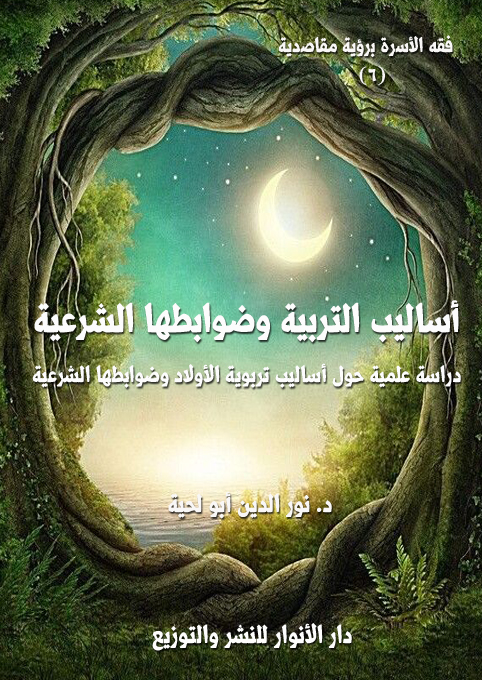

الكتاب: أساليب التربية وضوابطها الشرعية
المؤلف: أ.د. نور الدين أبو لحية
الناشر: دار الأنوار للنشر والتوزيع
الطبعة: الثانية، 1438 هـ
عدد الصفحات: 249
ISBN: 978-620-2-34574-3
لمطالعة الكتاب من تطبيق مؤلفاتي المجاني وهو أحسن وأيسر: هنا

التعريف بالكتاب
يبحث هذا الكتاب في الأساليب الصحيحة لتربية الأولاد، والتي وردت في القرآن الكريم والسنة المطهرة، وفصل في بيان كيفية ممارستها علماء الشريعة والتربية والسلوك، وهي أربعة أساليب كبرى:
الموعظة: وهي تمثل كل أساليب التأثير النفسي والعاطفي التي يستعملها المربي مع من يقوم بتربيته.
القدوة: وهي تمثل ناحية مهمة في التربية، لأن المتلقي لا يكتفي بالسماع، بل يقارن ما يسمعه بما يراه، فلذلك يكون تقليده الأعمال والسلوكات في أكثر الأحيان أكثر من استماعه للمؤثرات.
الحوار: وهو يمثل كل أساليب الخطاب العقلي الذي لا يقتصر فيه المربي على الإلقاء والتوجيه، بل يستمع للطرف الآخر، ليتعرف من خلال حديثه عن الطريقة التي يعالجه بها ويوجهه.
الجزاء: وهو يمثل كل الأساليب التي تخاطب ما في النفس من رغبة ورهبة وغيرها مما قد يؤثر في سلوكها بعد ذلك.
أساليب التربية وضوابطها الشرعية (8 )
هل البحث عن الأساليب الشرعية للتربية من الفقه الإسلامي؟
وهل توفير الأساليب الشرعية في التربية حق من حقوق الأولاد والأسرة؟
هذان السؤالان قد يكونان أول ما يطرحه من يطالع عنوان هذا الجزء، ولذلك كان لزاما علينا الإجابة عليه قبل الخوض فيما يحتاجه الموضوع من عناوين وفصول.
أما الإجابة على السؤال الأول، فقد ذكرنا في مواضع مختلفة من هذه السلسلة أن تصورنا للفقه ـ كما هو في أصل مصطلحه، وكما هو في واقع السلف الأول ـ لا يحد في إعطاء الحكم على المشكلات الحادثة، بل إنه في صميم هدفه وغايته يبحث عن المظان والبدائل العملية التي تحقق المقاصد الشرعية، فلا يكفي الفقيه ـ في أصل وظيفته ـ أن يحكم بأن تربية الأولاد التربية الصالحة واجبة، بل عليه أن يسعى ليبين كيفيتها المثلى، وأبعادها الرفيعة، لينتقل قوله من قوقعة الإجمال إلى فضاء التفصيل، ومن الغموض الذي قد يؤول التأويلات المختلفة إلى الضوابط التي تقي من كل التفسيرات، فلا تنحرف بها التحريفات، ولا تتدخل فيها الأهواء.
أما الإجابة عن السؤال الثاني، وهي في صميم الموضوع، فهي أن التربية الشرعية لا تعنى بالهدف بقدر ما تعنى بالوسيلة، لأن الوسيلة الصالحة لا بد أن تحقق الهدف العالي، ولذلك كان من حق الولد أن يربى بالطرق الشرعية الصحيحة التي تحفظ عليه شخصيته السوية، فلا تحرفها لأي غرض.
فمن انتهج في تربية أولاده أو تلاميذه ـ مثلا ـ أسلوب العنف والشدة، فإنه، وإن كان هدفه نبيلا إلا أن خطأ الوسيلة، وعدم تقيدها بالضوابط الشرعية قد يجعل من عمله عبثا، بل قد يحول من يحاول تربيتهم إلى مجموعة متمردين، لا على شخصه فحسب، بل على ما يمثله من أهداف سامية رفيعة.
أساليب التربية وضوابطها الشرعية (9 )
ونحن لا نزعم هنا أننا قد استوفينا كل أساليب التربية، فذلك هدف بعيد، قد لا يكفي فيه هذا الجزء أو غيره، ولكنا مع ذلك حاولنا انطلاقا من القرآن الكريم أن نذكر الأركان الكبرى لتلك الأساليب مع تقييدها بضوابطها الشرعية خشية خروجها عما أريد منها.
وقد رأينا أن هذه الأساليب لا تعدو الأساليب الأربعة التالية:
الموعظة: وهي تمثل كل أساليب التأثير النفسي والعاطفي التي يستعملها المربي مع من يقوم بتربيته.
القدوة: وهي تمثل ناحية مهمة في التربية، لأن المتلقي لا يكتفي بالسماع، بل يقارن ما يسمعه بما يراه، فلذلك يكون تقليده الأعمال والسلوكات في أكثر الأحيان أكثر من استماعه للمؤثرات.
الحوار: وهو يمثل كل أساليب الخطاب العقلي الذي لا يقتصر فيه المربي على الإلقاء والتوجيه، بل يستمع للطرف الآخر، ليتعرف من خلال حديثه عن الطريقة التي يعالجه بها ويوجهه.
الجزاء: وهو يمثل كل الأساليب التي تخاطب ما في النفس من رغبة ورهبة وغيرها مما قد يؤثر في سلوكها بعد ذلك.
ونرى أن ما قد يتصور من أساليب بعد هذا لا يعدو هذه الأساليب الأربعة، فالقسمة العقلية تكاد تحصر الأساليب في هذه الأربعة.
وقد خصصنا كل أسلوب من هذه الأساليب بفصل من الفصول.
وقد حاولنا في هذا الجزء أن يقتصر رجوعنا إلى ما في القرآن الكريم والسنة المطهرة، وتجارب علماء هذه الأمة ومربيها باعتبارها الأصول التي يبنى عليها هذا الباب.
ونحب أن ننبه هنا إلى أن المتلقي ـ كما نتصوره في هذا الجزء، وفي الجزء الذي يليه ـ
أساليب التربية وضوابطها الشرعية (10 )
ليس الولد الصغير الذي لا يزال في طور اللهو واللعب، وإنما نريد به عموما كل من له قدرة على التمييز، بحيث تصلح معه هذه الأساليب.
وننبه كذلك إلى أنا لا نقصد بالمربي هنا الوالدان فقط، وإنما نريد به كل من له مسؤولية على تربية الولد، سواء كان مؤسسة تعليمية، أو وسيلة إعلام، أو محيط، أو غير ذلك مما يتلقى الولد منه توجيهه وتربيته وسلوكه.
أساليب التربية وضوابطها الشرعية (11 )
وقد أشار القرآن الكريم إلى هذا الأسلوب في قوله تعالى: {وَإِذْ قَالَ لُقْمَانُ لاِبْنِهِ وَهُوَ يَعِظُهُ يَا بُنَيَّ لا تُشْرِكْ بِاللَّهِ إِنَّ الشِّرْكَ لَظُلْمٌ عَظِيمٌ} (لقمان:13)
وهو دليل على أن من حقوق الأولاد على آبائهم أن يجلسوا معهم للوعظ، كهذا المجلس الذي جلسه لقمان - عليه السلام -، لأن الله تعالى ما ذكر قصته للتسلية، ولا لمجرد بيان القضايا التي ذكرها فقط، وإنما من باب البيان لما يجب على الآباء نحو أبنائهم.
وهذا الأسلوب الذي أمر الوالدان باستخدامه مع أولادهم أسلوب قرآني لا غنى عن استخدامه لكل داعية إلى الله سواء كان المدعو ولده أو أي أحد من الناس، قال تعالى: {ادْعُ إِلَى سَبِيلِ رَبِّكَ بِالْحِكْمَةِ وَالْمَوْعِظَةِ الْحَسَنَةِ} (النحل:125)
وهو الأسلوب الذي مارسه الرسل ـ صلوات الله وسلامه عليهم ـ مع أقوامهم، قال تعالى آمرا رسوله (: {وَعِظْهُمْ وَقُلْ لَهُمْ فِي أَنْفُسِهِمْ قَوْلاً بَلِيغاً} (النساء:63)، وقال تعالى آمرا موسى وهارون ـ عليهما السلام ـ: {فَقُولا لَهُ قَوْلاً لَيِّناً لَعَلَّهُ يَتَذَكَّرُ أَوْ يَخْشَى} (طه:44)
بل إن الله تعالى أخبر أن من خصائص رسالاته إلى عباده أنها مواعظ تهدي إلى الحق، قال تعالى مخبرا عن محتويات التوراة: {وَكَتَبْنَا لَهُ فِي الْأَلْوَاحِ مِنْ كُلِّ شَيْءٍ مَوْعِظَةً وَتَفْصِيلاً لِكُلِّ شَيْءٍ فَخُذْهَا بِقُوَّةٍ وَأْمُرْ قَوْمَكَ يَأْخُذُوا بِأَحْسَنِهَا سَأُرِيكُمْ دَارَ الْفَاسِقِينَ} (لأعراف:145)
وقال تعالى في وصف الإنجيل: {وَآتَيْنَاهُ الْأِنْجِيلَ فِيهِ هُدىً وَنُورٌ وَمُصَدِّقاً لِمَا بَيْنَ يَدَيْهِ مِنَ التَّوْرَاةِ وَهُدىً وَمَوْعِظَةً لِلْمُتَّقِينَ} (المائدة:46)
أساليب التربية وضوابطها الشرعية (12 )
وقال عن القرآن الكريم: {يَا أَيُّهَا النَّاسُ قَدْ جَاءَتْكُمْ مَوْعِظَةٌ مِنْ رَبِّكُمْ وَشِفَاءٌ لِمَا فِي الصُّدُورِ وَهُدىً وَرَحْمَةٌ لِلْمُؤْمِنِينَ} (يونس:57)، وقال تعالى: {وَلَقَدْ أَنْزَلْنَا إِلَيْكُمْ آيَاتٍ مُبَيِّنَاتٍ وَمَثَلاً مِنَ الَّذِينَ خَلَوْا مِنْ قَبْلِكُمْ وَمَوْعِظَةً لِلْمُتَّقِينَ} (النور:34)، وقال تعالى: {هَذَا بَيَانٌ لِلنَّاسِ وَهُدىً وَمَوْعِظَةٌ لِلْمُتَّقِينَ} (آل عمران:138)
وسر ذلك أن النفس البشرية في الأعم الأغلب نفس مستعدة لتقبل المواعظ والتأثر بها، فلذلك تقنع بكل ما يؤثر فيها من غير جدل ولا عنت.
يقول الرازي عن النفوس المستعدة لتقبل المواعظ: (وهم الذين ما بلغوا في الكمال إلى حد الحكماء المحققين، وفي النقصان والرذالة إلى حد المشاغبين المخاصمين، بل هم أقوام بقوا على الفطرة الأصلية والسلامة الخلقية، وما بلغوا إلى درجة الاستعداد لفهم الدلائل اليقينية والمعارف الحكمية، والمكالمة مع هؤلاء لا تمكن إلا بالموعظة الحسنة) (1)
والولد في العادة يكون صاحب هذا النوع من النفوس، فلذلك تؤثر فيه المواعظ تأثيرا كبيرا خاصة إن صاحها القدوة الحسنة والأدب الرفيع، وتقيدت بما سنذكره من الضوابط.
وانطلاقا من هذا، سنبحث في هذا الفصل عن ركنين مهمين تتحقق بهما الموعظة في أعلى درجاتها:
1 ـ ضوابط الموعظة المؤثرة.
2 ـ مصادر الموعظة المؤثرة.
لا تؤتي الموعظة المؤثرة ـ المقيدة بالقيود الشرعية ـ ثمارها إلا إذا تقيدت بالقيود التالية:
__________
(1) التفسير الكبير:20/ 288.
أساليب التربية وضوابطها الشرعية (13 )
أول شرط من شروط الموعظة الحسنة المؤثرة أن تكون صادقة، لأن الكذب لا يمكن أن يؤسس فردا صالحا مؤدبا، والغاية لا تبرر الوسيلة، فلذلك من الأخطاء التي قد يقع فيها بعض الآباء أن يمارسوا الكذب في سبيل تربية أولادهم أو إصلاحهم، وهو أسلوب خاطئ، لأن في الصدق ما يغني عن الكذب.
زيادة على أن الولد إن اكتشف خطأ المعلومات التي يوردها والده قد ترتفع ثقته عنه، وبالتالي ارتفاع تأثيره فيه، لأنه بقدر الثقة في الواعظ يكون تأثير الموعظة.
ومن أمثلة ذلك اعتماد الأحاديث الضعيفة (1) أو الموضوعة، والتي امتلأت بها كتب التفسير والحديث، والتي تشوه القرآن الكريم والسنة المظهرة.
ولهذا، فإن الواعظ الصادق لا يلقي بكل ما يقرؤه من غير تمحيص أو تدقيق أو توثيق، وقد قال (: (كفى بالمرء كذباً أن يحدث بكل ما سمع) (2)
وقد نبه ابن مسعود إلى خطورة غلبة حب التأثير بعيدا عن التمحيص والعلم، فقال: (إنكم في زمان كثير علماؤه، قليل خطباؤه، وإن بعدكم زماناً كثير خطباؤه، والعلماء فيه قليل)
وللأسف فقد طفحت كتب المواعظ بالقصص المنكرة، والعجائب المختلقة، ولهذا
__________
(1) وقد أجاز كثير من العلماء ذكر الحديث الضعيف في أبواب الفضائل، بشروط منها:
1 - ألا يكون الضعف شديداً.
2 - أن يكون الحديث مندرجاً تحت أصل عام.
3 - ألا يعتقد عند العمل به ثبوته.
ولا يخفى أن هناك فرقاً بين ذكر الحديث الضعيف والاحتجاج به؛ فإن ذكره لا يعني إثبات حكم شرعي به. انظر شرح الألفية للسخاوي: 1/ 283.
(2) رواه مسلم.
أساليب التربية وضوابطها الشرعية (14 )
حذر كثير من العلماء من أخبار القصاص ورواياتهم، فألف السيوطي كتاباً سماه: (تحذير الخواص من أكاذيب القصاص)، ولابن الجوزي: (القصاص والمذكرين)
ومن كتب الوعظ التي تمتلئ بالضعيف والموضوع، والتي يقبلها العامة من غير تمحيص ولا بحث: (الروض الفائق في المواعظ والرقائق) لأبي مدين الحريفيش، و(روض الرياحين في حكايات الصالحين) لأبي السعادات اليافعي، و(قرة العيون ومفرح القلب المحزون)، و(بستان العارفين)، و(تنبيه الغافلين) لأبي الليث السمرقندي، وغيرها من كتب المواعظ التي يختلط فيها الغث بالسمين والحقيقة بالباطل، والتي لا يصح أن يستفيد منها غير المسلح بسلاح العلم.
ولا بأس أن نذكر هنا مثالا عن اعتماد الضعيف من الروايات ودوره التربوي الخطير، وهو عن يوسف - عليه السلام - والذي هو ـ كما في القرآن الكريم ـ رمز الصديقية والطهر والعفاف في أرفع درجاته، والذي قد يستغله المربي في بث هذه القيم الرفيعة في نفوس الأولاد إن اعتمد الحقيقة القرآنية وما يؤكدها من الأدلة.
ولكنه إن اعتمد الروايات الإسرائيلية التي تمتلئ بها كتب التفسير يصبح هذا المثال الطاهر شابا تخترقه الشهوات، ولا ينجو منها بما جبل عليه من طهارة وعفاف بل بالخوارق التي تجتمع لجذبه عنها.
وكل ذلك من أجل نص لا يدل على شيء مما ذكروه، وهو قوله تعالى: {وَهَمَّ بِهَا لَوْلا أَنْ رَأى بُرْهَانَ رَبِّهِ} (يوسف:24)
فالنص يدل بمعناه الظاهر على أنه لولا أن رأى برهان ربه لهم بها، ولكن لما رأى البرهان ما هم؛ ففي الكلام تقديم وتأخير كعادة العرب، وكما هو الشأن في كثير من تعابير
أساليب التربية وضوابطها الشرعية (15 )
القرآن الكريم (1).
وقد اختار القول بهذا النحاة العالمون بأسرار التعابير القرآنية، قال أبو حاتم: كنت أقرأ غريب القرآن على أبي عبيدة فلما أتيت على قوله: {وَهَمَّ بِهَا} الآية، قال أبو عبيدة: هذا على التقديم والتأخير؛ كأنه أراد: ولقد همت به ولولا أن رأى برهان ربه لهم بها.
هذا ما يمكن أن يدل عليه النص مع التسليم التام لله تعالى في حقيقة معناه وعزل العقل والأساطير عن الكلام في كلام الله بغير علم.
ولكن كتب التفسير والتاريخ وقص الأنبياء لا يرضيها هذا الإيجاز مع ما يحمله من المعاني السامية، بل ترى الأساطير هي السبيل الوحيد لتفسير النص القرآني أو بالأحرى تحريفه.
وسنورد هنا بعض ما ذكره المفسرون (2)، أو يكادون يجمعون عليه، للدلالة على خطورة هذه الروايات على المعاني القرآنية:
فمما ورد من ذلك أن همه كان معصية، وأنه جلس منها مجلس الرجل من امرأته، قال القرطبي: (وإلى هذا القول ذهب معظم المفسرين وعامتهم، فيما ذكر القشيري أبو نصر، وابن الأنباري والنحاس والماوردي وغيرهم)
ويروون لتأييد ذلك الروايات الكثيرة عن السلف الصالح، فيروون عن ابن عباس قوله: (حل الهميان وجلس منها مجلس الخاتن)، وعنه: (استلقت، على قفاها وقعد بين رجليها ينزع ثيابه)، وعن سعيد بن جبير: (أطلق تكة سراويله)، وعن مجاهد: (حل السراويل حتى بلغ الأليتين، وجلس منها مجلس الرجل من امرأته)
__________
(1) ولهذا يستحب أن يوقف عند {ولقد همت به} ويبتدئ {وهم بها} على أن المعنى لولا أن رأى برهان ربه لهم بها، فقدم جواب لولا ويكون همه منتفيا، انظر: الإتقان:232.
(2) انظر التفاسير التالية، والتي نستغني بذكرها هنا عن إيراد تفاصيل التوثيقات: القرطبي: 9/ 166، البيضاوي: 3/ 282، الطبري: 12/ 183، الدر المنثور: 4/ 521، الألوسي: 3/ 411، الثعالبي: 2/ 232، وغيرها.
أساليب التربية وضوابطها الشرعية (16 )
وتصور هؤلاء أن الحكمة في ذكر ذلك في القرآن الكريم أن يكون مثلا للمذنبين ليروا أن توبتهم ترجع إلى عفو الله تعالى كما رجعت ممن هو خير منهم ولم يوبقه القرب من الذنب، ويروون عن الحسن قوله: (إن الله تعالى لم يذكر معاصي الأنبياء ليعيرهم بها؛ ولكنه ذكرها لكيلا تيأسوا من التوبة)، وعن الغزنوي: (مع أن زلة الأنبياء حكما: زيادة الوجل، وشدة الحياء بالخجل، والتخلي عن عجب، العمل، والتلذذ بنعمة العفو بعد الأمل، وكونهم أئمة رجاء أهل الزلل)
ولكن هذه الحكمة ليست بشيء أمام المخاطر المنجرة عن رمي الأنبياء ـ عليهم السلام ـ بمثل هذا، وأقلها سقوط منزلة الأنبياء من عيون الناس، وهو ما يمهد للتفلت من أحكام الشريعة بحجة أن الأنبياء وقعوا في مخالفتها.
ومن هذا الباب المحذور ما يروي مصعب بن عثمان قال: إن سليمان بن يسار كان من أحسن الناس وجها، فاشتاقته امرأة فسامته نفسها فامتنع عليها وذكرها، فقالت: إن لم تفعل لأشهرنك؛ فخرج وتركها، فرأى في منامه يوسف الصديق - عليه السلام - جالسا فقال: أنت يوسف؟ فقال: أنا يوسف الذي هممت، وأنت سليمان الذي لم تهم؟!
فهذه الحكاية التي يتداولها الوعاظ تنزل بمنزلة الأنبياء في عيون الناس، وتمهد بذلك لكل الاحتمالات.
أما السبب الذي حفظ به يوسف - عليه السلام - من مواقعة المعصية، فيصوره هؤلاء تصويرا غريبا يجعل من مشهد العفاف الذي ذكره القرآن الكريم مشهدا للفجور الذي لا يردعه شيء.
ويستغل لذلك نص قرآني هو في منتهى الجمال والرقة والدقة، وهو قوله تعالى: {لَوْلا أَنْ رَأى بُرْهَانَ رَبِّه} (يوسف:24)
فالبرهان هنا هو المعارف الإيمانية التي رآها بعين اليقين، فهي التي كانت عاصمة له
أساليب التربية وضوابطها الشرعية (17 )
من الوقوع في كل انحراف، وهي الذي أشار إليها قوله تعالى: {وَلَمَّا بَلَغَ أَشُدَّهُ آتَيْنَاهُ حُكْماً وَعِلْماً وَكَذَلِكَ نَجْزِي الْمُحْسِنِينَ} (يوسف:22)
وأكبر دليل على ذلك هو أن هذه الآية الكريمة سبقت مباشرة ذكر الفتنة التي تعرض لها، وهي تعني أن يوسف - عليه السلام - لم يتعرض للبلاء إلا وهو يحمل جميع أسلحة الإيمان.
ولكن الذين يأبون أن يأخذوا بهذا الظاهر القرآني، أو المغرمين بأساطير الأولين، يأبون إلا أن يلبسوا هذا البرهان ثوب الغيبية وخرقة الأسطورة.
ولنتأمل هذا المشهد الذي يحكيه كثير من المفسرين، ولنقارنه بالمشهد القرآني:
قال السدي وهو يقص علينا هذا المشهد: قالت له: يا يوسف ما أحسن شعرك قال: هو أول ما ينتثر من جسدي، قالت: يا يوسف ما أحسن وجهك قال: هو للتراب يأكله.. فلم تزل حتى أطمعته، فهمت به وهم بها فدخلا البيت وغلقت الأبواب وذهب ليحل سراويله، فإذا هو بصورة يعقوب قائما في البيت قد عض على أصبعه يقول: (يا يوسف تواقعها، فإنما مثلك ما لم تواقعها مثل الطير في جو السماء لا يطاق، ومثلك إذا واقعتها مثله إذا مات ووقع إلى الأرض لا يستطيع أن يدفع عن نفسه، ومثلك ما لم تواقعها مثل الثور الصعب الذي لا يعمل عليه، ومثلك إن واقعتها مثل الثور حين يموت فيدخل النمل في أصل قرنيه لا يستطيع أن يدفع عن نفسه)، فربط سراويله وذهب ليخرج يشتد، فأدركته فأخذت بمؤخر قميصه من خلفه، فخرقته حتى أخرجته منه وسقط وطرحه يوسف واشتد نحو الباب) (1)
ويروي غيره أنه رأى مكتوبا في سقف البيت: {وَلا تَقْرَبُوا الزِّنَى إِنَّهُ كَانَ فَاحِشَةً وَسَاءَ سَبِيلاً} (الاسراء:32)، ويروون عن ابن عباس: (بدت كف مكتوب عليها: {وَإِنَّ عَلَيْكُمْ لَحَافِظِينَ} (الانفطار:10)، وقيل: نودي يا يوسف! أنت مكتوب في ديوان الأنبياء
__________
(1) الطبري: 12/ 183.
أساليب التربية وضوابطها الشرعية (18 )
وتعمل عمل السفهاء؟! وقيل: رأى صورة يعقوب على الجدران عاضا على أنملته يتوعده فسكن، وخرجت شهوته من أنامله؛ وقيل: حل سراويله فتمثل له يعقوب، وقال له: يا يوسف! فولى هاربا، وقيل: مثل له يعقوب فضرب صدره فخرجت شهوته من أنامله.
ونريد به أن يحاول الواعظ ـ سواء كان والدا أو غيره ـ أن يقنع الولد بالقضية التي يطرحها بحيث يتقبلها عن رضى وقناعة لا عن حياء وتقليد.
وهذا أسلوب قرآني في عرض جميع القضايا سواء كانت من باب العقائد أو السلوك، ولذلك فإن مجرد الرجوع إلى القرآن الكريم كاف في استنباط الكثير من أساليب الإقناع الذي يخاطب العقل مباشرة دون تكلف أو عناء.
ففي العقائد مثلا يكتفي القرآن الكريم بتوجيه النظر إلى خلق الله للتعرف من خلاله على الله وعلى مراده من خلقه وعلى المصير الذي ينتظر خلقه، وسنرى بعض الأمثلة على ذلك في محلها من الجزء التالي.
وفي السلوك يبين الله تعالى علل الأحكام وأسبابها ومنافعها ومضارها، ليقبل عليها الفاعل عن بينة وقناعة، فالله تعالى مثلا يقول في تقرير حرمة الخمر والميسر والأنصاب والأزلام: {يَا أَيُّهَا الَّذِينَ آمَنُوا إِنَّمَا الْخَمْرُ وَالْمَيْسِرُ وَالْأَنْصَابُ وَالْأَزْلامُ رِجْسٌ مِنْ عَمَلِ الشَّيْطَانِ فَاجْتَنِبُوهُ لَعَلَّكُمْ تُفْلِحُونَ} (المائدة:90)، فبدأ الحكم الشرعي لهذه النكرات، مع تنفير النفس منها باعتبارها رجسا.
ولم يكتف بذلك، بل أضاف إلى هذا الحكم ما يقنع العقل بمخاطره، لتنفر النفس من هذه الأمور شرعا وعقلا، قال تعالى: {إِنَّمَا يُرِيدُ الشَّيْطَانُ أَنْ يُوقِعَ بَيْنَكُمُ الْعَدَاوَةَ وَالْبَغْضَاءَ فِي الْخَمْرِ وَالْمَيْسِرِ وَيَصُدَّكُمْ عَنْ ذِكْرِ اللَّهِ وَعَنِ الصَّلاةِ فَهَلْ أَنْتُمْ مُنْتَهُونَ}
أساليب التربية وضوابطها الشرعية (19 )
(المائدة:91)
وهكذا يمكن للمربي لتنفير الأولاد من الدخان ـ مثلا ـ باعتباره من الظواهر الشائعة ـ أن يذكر الحكم الشرعي ـ الذي تدعمه التربية الإيمانية، والذي يشكل وحده القناعة الكافية للمؤمن ـ ويضيف إليه بيان المخاطر الصحية له.
وهكذا في كل المحرمات، وهذا الأسلوب هو الذي استخدمه لقمان - عليه السلام - في موعظته لابنه، فقد شبه له رفع الصوت في غير محله بصوت الحمير، قال تعالى: {وَاغْضُضْ مِنْ صَوْتِكَ إِنَّ أَنْكَرَ الْأَصْوَاتِ لَصَوْتُ الْحَمِيرِ} (لقمان:19)؛ أي لا تتكلف رفع الصوت وخذ منه ما تحتاج إليه؛ فإن الجهر بأكثر من الحاجة تكلف يؤذي، وهو يشبه في ذلك صوت الحمير (1).
وهذا الأسلوب هو الذي استخدمه رسول الله (مع ذلك الشاب الذي جاء يستأذنه في الزنا بكل جرأة وصراحة، فهمَّ الصحابة أن يوقعوا به؛ فنهاهم وأدناه وقال له: (أترضاه لأمك؟!)، قال: لا، قال رسول الله (: (فإن الناس لا يرضونه لأمهاتهم)، قال: (أترضاه لأختك؟!)، قال: لا، قال: (فإن الناس لا يرضونه لأخواتهم) (2)، وهكذا صار الزنى أبغض شيء إلى ذلك الشاب فيما بعد، بسبب هذا الإقناع العقلي.
ومثل ذلك ما ورد في قصة معاوية بن الحكم حيث قال: بينما أنا أصلي مع رسول الله (إذ عطس رجل من القوم فقلت: (يرحمك الله)، فرماني القوم بأبصارهم فقلت: (ما
__________
(1) والحمار مثل في الذم البليغ والشتيمة، وكذلك نهاقه؛ ومن استفحاشهم لذكره مجردا أنهم يكنون عنه ويرغبون عن التصريح فيقولون: الطويل الأذنين؛ كما يكنى عن الأشياء المستقذرة. وقد عد في مساوئ الآداب أن يجري ذكر الحمار في مجلس قوم من أولي المروءة، ومن العرب من لا يركب الحمار استنكافا وإن بلغت منه الرجلة. ولا نرى أن هذا من مساوئ الآداب ولا من المروءة في شيء، بل إن الله تعالى من علينا به، فقال تعالى: {وَالْخَيْلَ وَالْبِغَالَ وَالْحَمِيرَ لِتَرْكَبُوهَا وَزِينَةً وَيَخْلُقُ مَا لا تَعْلَمُونَ ((النحل:8)، وكان (وهو أشرف الخلق يركبه.
(2) رواه أحمد بإسناد جيد.
أساليب التربية وضوابطها الشرعية (20 )
شأنكم تنظرون إلي)، فجعلوا يضربون بأيديهم على أفخاذهم، فلما رأيتهم يصمتونني سكت، فلما صلى رسول الله (، فبأبي هو وأمي ما رأيت معلماً قبله ولا بعده أحسن تعليماً منه، فوالله ما نهرني ولا ضربني ولا شتمني، قال: (إن هذه الصلاة لا يصلح فيها شيء من كلام الناس، إنما هي التسبيح والتكبير وقراءة القرآن) (1).
ولا يكتفي المربي بهذا، بل يحاول أن يجد البدائل التي تتناسب مع حاجة من يربيه، ليكون له في الحلال ما يغنيه عن الحرام.
وهذا هو أسلوب العلماء المحققين، قال ابن القيم: (وهذا لا يأتي إلا من عالم ناصح مشفق، قد تاجر مع الله، وعامله بعلمه، فمثاله في العلماء مثال الطبيب العالم الناصح في الأطباء، يحمي العليل عما يضره، ويصف له ما ينفعه، فهذا شأن أطباء الأديان والأبدان)
بل هذ هو أسلوب الرسل ـ صلوات الله وسلامه عليهم ـ في تربيتهم الخلق، قال (: (ما بعث الله من نبي إلا كان حقا عليه أن يدل أمته على خير ما يعلمه لهم، وينهاهم عن شر ما يعلمه لهم)
وقد ورد في السنة الكثير مما يدعم هذا، ومنه أن النبي (منع بلالا أن يشتري صاعا من التمر الجيد بصاعين من الردئ سدا للذريعة إلى الربا في أي صورة من صوره، ثم أمره أن يبيع الرديء الذي عنده بالدراهم، ثم يشتري بالدراهم الجيد الذي يريده، فمنعه من المحظور، وأرشده إلى المباح.
وهذا يتطلب من المربي البحث الدائم عن كل ما ينشر القناعة في نفس المتلقين عنه، وهو ما يجعله باحثا في كل العلوم لا يكل ولا يمل.
ونحن لا نطلب هنا بأن يكون كل المربين بهذه الموسوعية، ولكن يكفي أن يلجأ المربي للعلماء المحققين ليجد ضالته جاهزة دون عنت أو عناء.
__________
(1) رواه مسلم.
أساليب التربية وضوابطها الشرعية (21 )
كطول الموعظة، أو تكررها، أو إلقائها بأسوب جاف، أو في غير محلها، لأن كل ذلك يصيب المستمع بالملل والسآمة، وهو ما يجعل أثر الموعظة ضعيفا، بل قد ينعكس أثرها إلى عكس ما أراده الواعظ.
ولهذا كان من سنة الرسول (لخبرته بالنفوس يتعهد أصحابه بالنصح والتذكير، أياماً وأياماً، ولا يُكثِر عليهم؛ لئلاّ يملوا، وكذا كان صحابته الذين تربوا على يديه يمتثلون ذلك، بل ويوصون به: فعن عكرمة عن ابن عباس قال: (حدّث الناس كل جمعة مرة، فإن أبيت فمرتين، فإن أبيت فثلاث مرات، ولا تُملّ الناس هذا القرآن، ولا ألْفينّك تأتي القوم وهم في حديث من حديثهم، فتقص عليهم فتقطع عليهم حديثهم، ولكن أنصت، فإذا أمروك فحدثهم وهم يشتهونه) (1) الحديث.
وعن أبي وائل، قال: كان عبد الله يعني ابن مسعود يذكرّ الناس في كل خميس، فقال له رجل: يا أبا عبد الرحمن: لوددت أنك ذكّرتنا كل يوم، قال: (أما إنه يمنعني من ذلك أني أكره أن أملّكم، وإني أتخولكم بالموعظة كما كان النبي (يتخولنا بها؛ مخافة السآمة علينا) (2)
أما طول الموعظة، فقد كان من سنة رسول الله (قصر الموعظة، ففي الحديث أن رسول الله (كان لا يطيل الموعظة يوم الجمعة، وفي حديث آخر: (إن النبي (كان يحدث حديثاً لو عدّه العادّ لأحصاه) (3)
4 ـ الموازنة بين التبشير والإنذار
__________
(1) رواه البخاري وأحمد.
(2) رواه البخاري.
(3) رواه مسلم.
أساليب التربية وضوابطها الشرعية (22 )
ونريد بهذا أن لا يغلب الواعظ أحد الأسلوبين على الآخر، بل يمزج بينهما، كما قال تعالى: {نَبِّئْ عِبَادِي أَنِّي أَنَا الْغَفُورُ الرَّحِيمُ وَأَنَّ عَذَابِي هُوَ الْعَذَابُ الْأَلِيمُ} (الحجر:49 ـ 50)، وقال تعالى: {عَذَابِي أُصِيبُ بِهِ مَنْ أَشَاءُ وَرَحْمَتِي وَسِعَتْ كُلَّ شَيْءٍ} (لأعراف:156)، وقال تعالى: {وَإِذْ تَأَذَّنَ رَبُّكُمْ لَئِنْ شَكَرْتُمْ لَأَزِيدَنَّكُمْ وَلَئِنْ كَفَرْتُمْ إِنَّ عَذَابِي لَشَدِيدٌ} (ابراهيم:7)
وهو منهج القرآن الكريم في الجمع بين ذكر الجنة والنار، والمؤمنين والكافرين، والمتقين والعصاة، وهكذا.
بل إن رسول الله (وهو المربي الأكبر وصف بأنه بشير ونذير، قال تعالى: {إِنَّا أَرْسَلْنَاكَ بِالْحَقِّ بَشِيراً وَنَذِيراً وَلا تُسْأَلُ عَنْ أَصْحَابِ الْجَحِيمِ} (البقرة:119)، وقال تعالى: {وَمَا أَرْسَلْنَاكَ إِلَّا كَافَّةً لِلنَّاسِ بَشِيراً وَنَذِيراً وَلَكِنَّ أَكْثَرَ النَّاسِ لا يَعْلَمُونَ} (سبأ:28)، وقال تعالى على لسان رسوله (: {إِنْ أَنَا إِلَّا نَذِيرٌ وَبَشِيرٌ لِقَوْمٍ يُؤْمِنُونَ} (لأعراف:188)، وقال تعالى: {أَلَّا تَعْبُدُوا إِلَّا اللَّهَ إِنَّنِي لَكُمْ مِنْهُ نَذِيرٌ وَبَشِيرٌ} (هود:2)
فلذلك كان من التزام المربي بسنة رسول الله (في التربية المزج بين هاتين الناحيتين، لأن كلاهما يخاطب النفس البشرية من زاوية من زواياها، وقد كان بعض الصالحين يقول: (من عبدالله بالرجاء وحده فهو مرجئ، ومن عبده بالخوف وحده فهو حروري، ومن عبدالله بالحب وحده فهو زنديق، ومن عبده بالخوف والرجاء والمحبة فهو موحد مؤمن)
ولهذا، فإن التقصير في إحداهما يؤدي إلى التأثير في زاوية من زوايا النفس:
فالمبالغة في التبشير قد تؤدي إلى الاستهانة بحدود الله، وإطفاء جذوة الخوف والخشية من الله، والتي اتفق المربون على اعتبارها الدواء القاتل لكل الجراثيم المسببة للذات الآثمة، وأنها الحرز الذي يحتمي به المؤمن من كل مكايد الشيطان وأهواء النفس، قال أبو حفص: (الخوف سوط الله يقوم به الشاردين عن بابه)، وقال: (الخوف سراج في القلب، به
أساليب التربية وضوابطها الشرعية (23 )
يبصر ما فيه من الخير والشر، وكل أحد إذا خفته هربت منه إلا الله تعالى فإنك إذ خفته هربت إليه، فالخائف هارب من ربه إلى ربه)
وذكر إبراهيم بن سفيان تأثر الخوف بقوله: (إذا سكن الخوف القلوب أحرق مواضع الشهوات منها، وطرد الدنيا عنها)
ونظر أبو سليمان إلى آثار زوال الخوف فقال: (ما فارق الخوف قلبا إلا خرب)
ومثله قال ذو النون: (الناس على الطريق ما لم يزل عنهم الخوف، فإذا زال عنهم الخوف ضلوا عن الطريق)
ولهذا وصف بعض الصالحين المؤمنين بقوله: (إن المؤمنين قوم ذلت والله منهم الاسماع والأبصار والأبدان حتى حسبهم الجاهل مرضى، وهم والله أصحاب القلوب، ألا تراه يقول:) وَقَالُوا الْحَمْدُ لِلَّهِ الَّذِي أَذْهَبَ عَنَّا الْحَزَنَ} (فاطر:34)، والله لقد كابدوا في الدنيا حزنا شديدا، وجرى عليهم ما جرى على ما جرى على من كان قبلهم، والله ما أحزنهم ما أحزن الناس، ولكن أبكاهم وأحزنهم الخوف من النار)
ولذلك تكثر أوصاف العذاب في القرآن الكريم، والمنبئة عن خطورته مقارنة بما نراه من عذاب، لتحول شهوات النفس العابثة أخلاقا كريمة وصفات فاضلة، فلا يردع اللذة مثل الألم، ولا يقمع الشهوة العابثة مثل سياط الخوف.
ولهذا أخبر (أن من السبعة الذين يظلهم الله في ظله يوم لا ظل إلا ظله: (ورجل دعته امرأة ذات منصب وجمال فقال إني أخاف الله رب العالمين) (1)
فالخوف الذي ربي عليه هذا الذي تعرض لهذا الموقف هو الذي حماه من إغرائه، ولهذا قال لقمان - عليه السلام - لابنه وهو يعظه: {وَلا تُصَعِّرْ خَدَّكَ لِلنَّاسِ وَلا تَمْشِ فِي الْأَرْضِ مَرَحاً إِنَّ اللَّهَ لا يُحِبُّ كُلَّ مُخْتَالٍ فَخُورٍ} (لقمان:18)
__________
(1) رواه مالك والترمذي.
أساليب التربية وضوابطها الشرعية (24 )
فجعل الدليل على تحريم الخيلاء والافتخار عدم محبة الله لذلك، وهي منشأ بعد العبد عن الله، وهي بالتالي سبب عذابه.
ومثل الآثار السيئة التي تنشئها المبالغة في التبشير الآثار السيئة التي تنشئها المبالغة في الإنذار، لأنه قد يؤدي إلى القنوط من رحمة الله، وهو بذلك يعرف الله تعريفا خاطئا، ينفي عنه صفات الود والرحمة واللطف بعبادة، وذلك خلاف هدي القرآن الكريم في مخاطبة المذنبين، بل المسرفين على أنفسهم بألوان الذنوب، قال تعالى: {قُلْ يَا عِبَادِيَ الَّذِينَ أَسْرَفُوا عَلَى أَنْفُسِهِمْ لا تَقْنَطُوا مِنْ رَحْمَةِ اللَّهِ إِنَّ اللَّهَ يَغْفِرُ الذُّنُوبَ جَمِيعاً إِنَّهُ هُوَ الْغَفُورُ الرَّحِيمُ} (الزمر:53)، فالله تعالى عرف نفسه لهؤلاء المسرفين بكونه غفورا رحيما، ومن الخطأ أن نعرفهم لهم بغير ما عرفهم به.
بل إن هذا التعريف هو الذي يحرك القلوب للسير نحو الله، ويكبح الغرائز عن معارضة الرحيم الودود، وقد روي أن بعضهم حارب، وأخاف السبيل، وأصاب الدم والمال، فطلبه الأئمة والعامة فامتنع، ولم يقدروا عليه حتى جاء تائباً، وسبب توبته أنه سمع رجلاً يقرأ هذه الآية:: {قُلْ يَا عِبَادِيَ الَّذِينَ أَسْرَفُوا عَلَى أَنْفُسِهِمْ لا تَقْنَطُوا مِنْ رَحْمَةِ اللَّهِ إِنَّ اللَّهَ يَغْفِرُ الذُّنُوبَ جَمِيعاً إِنَّهُ هُوَ الْغَفُورُ الرَّحِيمُ} (الزمر:53)، فوقف عليه، فقال: (يا عبد الله أعد قراءتها فأعادها عليه، فغمد سيفه، ثم جاء تائباً.
ويروى من هذا أن مجوسياً استضاف إبراهيم الخليل - عليه السلام -، فقال: إن أسلمت أضفتك؛ فمرّ المجوسي، فأوحى الله تعالى إليه: يا إبراهيم لم تطعمه إلا بتغيير دينه ونحن من سبعين سنة نطعمه على كفره، فلو أضفته ليلة ماذا كان عليك؛ فمر إبراهيم يسعى خلف المجوسي فرده وأضافه؛ فقال له المجوسي: ما السبب فيما بدا لك؟ فذكر له؛ فقال له المجوسي: أهكذا يعاملني ثم قال: اعرض علي الإسلام فأسلم.
ولما يتضمنه القنوط من رحمة الله من مساوئ في الاعتقاد أو السلوك وردت
أساليب التربية وضوابطها الشرعية (25 )
النصوص بتحريمه، كما قال تعالى في الآية السابقة: {لاَ تَقْنَطُوا مِنْ رَحْمَةِ اللَّهِ} فحرم أصل اليأس.
بل اعتبر اليأس من روح الله من صفات الكافرين، كما قال تعالى: {إِنَّهُ لا يَيْأَسُ مِنْ رَوْحِ اللَّهِ إِلَّا الْقَوْمُ الْكَافِرُونَ} (يوسف:87)
ونعني بها عدم التكلف في الموعظة سواء في طريقة إلقائها أو أسلوبها أو المحل الذي تلقى فيه.
فالرسول (مثلا يلقي موعظة بليغة على ابن عباس وهو رديفه،، قال ابن عباس كنت خلف النبي (يوما فقَالَ: (يا غلام إني أعلمك كلمات: احفظ اللَّه يحفظك، احفظ اللَّه تجده تجاهك، إذا سألت فاسأل اللَّه، وإذا استعنت فاستعَنْ باللَّه، واعلم أن الأمة لو اجتمعت عَلَى أن ينفعوك بشيء لم ينفعوك إلا بشيء قد كتبه اللَّه لك، وإن اجتمعوا عَلَى أن يضروك بشيء لم يضروك إلا بشيء قد كتبه اللَّه عليك، رفعت الأقلام وجفت الصحف) (1)
فلم يحتج رسول الله (ليلقي هذه الموعظة لوضع الزرابي والجلوس على المنبر وحضور الجم الغفير، بل وجهها وهو راكب في طريقه بكل تلقائية وبساطة، فكان له كل ذلك التأثير (2).
أما أسلوب الموعظة، فيحبذ أن يكون بسيطا متناسبا مع من تتوجه إليه الموعظة، وقد
__________
(1) رواه الترمذي وقال حديث حسن صحيح، وفي رواية غير الترمذي: (احفظ الله تجده أمامك، تعرف إلى الله في الرخاء يعرفك في الشدة، واعلم أن ما أخطأك لم يكن ليصيبك، وما أصابك لم يكن ليخطئك، واعلم أن النصر مع الصبر، وأن الفرج مع الكرب، وأن مع العسر يسرا).
(2) قال ابن رجب: (وهذا الحديث يتضمن وصايا عظيمة وقواعد كلية من أهم أمور الدين حتى قال بعض العلماء: (تدبرت هذا الحديث فأدهشني وكدت أطيش فواأسفا من الجهل بهذا الحديث وقلة التفهم لمعناه)، قال ابن رجب: (وقد أفردت لشرحه جزء كبيرا)، وسنعرض لما يتعلق منه بالتربية في محله من هذا الجزء.
أساليب التربية وضوابطها الشرعية (26 )
كانت مواعظ النبي (بليغة غير متكلفة، فقد جاء في حديث العرباض: (وعظنا رسول الله (موعظة بليغة، ذرفت منها العيون، ووجلت منها القلوب..) (1)
وليس المراد بكونها بليغة ما يتصوره البعض من كثرة محسناتها البديعية وسجعها وغريب ألفاظها، وإنما المراد منها قدرتها على التوصل إلى إفهام المعاني المقصودة، وإيصالها إلى قلوب السامعين بأحسن صورة من الألفاظ الدالة عليها، وأفصحها وأحلاها للأسماع، وأوقعها في القلوب.
أما التكلف الممقوت فقد ورد النهي عنه، فعن جابر أن رسول الله (قال: (إن من أحبكم إليّ وأقربكم مجلساً مني يوم القيامة: أحاسنكم أخلاقاً، وإن أبغضكم إليّ، وأبعدكم مني يوم القيامة الثرثارون، والمتشدقون، والمتفيهقون) (2)
ومما يدخل في التكلف ما ذكرناه سابقا من التقول بلا علم، فعن مسروق قال: دخلنا على عبد الله بن مسعود، قال: يا أيها الناس من علم شيئاً فليقل به، ومن لم يعلم فليقل: الله أعلم؛ فإن من العلم أن يقول لما لا يعلم: الله أعلم، قال الله تعالى لنبيه (: {قُلْ مَا أَسْأَلُكُمْ عَلَيْهِ مِنْ أَجْرٍ وَمَا أَنَا مِنَ الْمُتَكَلِّفِينَ} (صّ:86)
ونعني به أن يستغل الواعظ ما يجري من أحداث ليلقي بموعظته، ليكون لها التأثير الناجح فيمن يعظه، فيستغل الدخول المدرسي مثلا ليوجهه لأهمية العلم، ويستغل ما يحدث في بلاد المسلمين من أحداث ليربطه بأمته، بل يشعل في قلبه الجذوة لخدمتها.
وقد كان هذا سنة رسول الله (في مواعظه، فقد كان (يقول لما دخلت العشر: (ما
__________
(1) رواه أبو داود والترمذي وَقَالَ حَدِيثٌ حَسَنٌ صحيح.
(2) رواه التِّرمِذِيُّ وَقَالَ حَدِيثٌ حَسَنٌ.
أساليب التربية وضوابطها الشرعية (27 )
من أيام العمل الصالح فيهن أحب إلى الله من هذه العشر) (1)
وقال يوم يوم النحر: (أي شهر هذا؟)، قلنا: (اللَّه ورسوله أعلم)، فسكت حتى ظن الصحابة أنه سيسميه بغير اسمه، قال: (أليس ذا الحجة؟) قالوا: (بلى) قال: (فأي بلد هذا؟) قالوا: (اللَّه ورسوله أعلم) فسكت حتى ظن الصحابة أنه سيسميها بغير اسمها. قال: (أليس البلدة؟) قالوا: (بلى) قال: (فأي يوم هذا؟) قالوا: (اللَّه ورسوله أعلم) فسكت حتى ظن الصحابة أنه سيسميه بغير اسمه. فقال: (أليس يوم النحر؟) قالوا: بلى. قال: (فإن دماءكم وأموالكم وأعراضكم حرام كحرمة يومكم هذا في بلدكم هذا في شهركم هذا، وستلقون ربكم فيسألكم عن أعمالكم، ألا فلا ترجعوا بعدي كفاراً يضرب بعضكم رقاب بعض، ألا ليبلغ الشاهد الغائب فلعل بعض من يبلغه أن يكون أوعى له من بعض من سمعه) (2)
ولما أُهديت له (حلة حرير، فجعل أصحابه يمسونها، ويعجبون من لينها، فقال: (أتعجبون من لين هذه؟ لمناديل سعد بن معاذ في الجنة خير منها وألين) (3)
وعندما مر (بجدي أسك (4) أراد أن يذكرهم من خلاله بحقارة الدنيا، فعن جابر أن رَسُول اللَّهِ (مر بالسوق والناس كَنَفَتَيْهِ، فمر بِجَدْيٍ أَسَكَّ مَيِّتٍ، فتناوله فأخذ بأذنه ثم قال: (أيكم يحب أن هذا له بدرهم؟) فقالوا: ما نحب أنه لنا بشيء وما نصنع به؟ قال: (أتحبون أنه لكم؟) قالوا: والله لو كان حياً كان عيباً أنه أَسَكّ فكيف وهو ميت! فقال: (فوالله للدنيا أهون على اللَّه من هذا عليكم) (5)
__________
(1) رواه البخاري عن ابن عباس مرفوعاً.
(2) رواه البخاري ومسلم.
(3) رواه أحمد والترمذي والنسائي.
(4) الصغير الأذن.
(5) رواه مسلم.
أساليب التربية وضوابطها الشرعية (28 )
ويذكرهم (برحمة الله حين يرى امرأة تبحث عن صبيّها في السبي، ثم تضمه وترضعه، فيقول (: (أترون هذه طارحة ولدها في النار؟ الله عز وجل أرحم بعباده من هذه بولدها) (1)
لأن النفس الإنسانية تكره الرتابة وتنفر من المعلومة التي لا تسبقها المقدمات التي تهيئ لها الأرضية الصحيحة، ولهذا كان من هديه (التمهيد لتعليمه أو تربيته بما يشوق القلوب لسماعه، فهو أحياناً يطرح المسألة على أصحابه متسائلاً: (أتدرون ما الغيبة) (2)، (أتدرون من المفلس) (3)، (أتدرون ما أخبارها فإن أخبارها أن تشهد على كل عبد أو أمة بما عمل على ظهرها، أن تقول علي عمل كذا وكذا، في يوم كذا وكذا، فهذه أخبارها) (4)، (أتدرون ما هذه الريح؟ هذه ريح الذين يغتابون الناس) (5)
وكان (يلغز لهم أحيانا، كأن يقول (إن من الشجر شجرة لا يسقط ورقها وإنما مثلها مثل المسلم فأخبروني ما هي) (6)، فلا شك أن السؤال مدعاة للتفكير وتنميته، ومدعاة للاشتياق لمعرفة الجواب مما يجعله أكثر رسوخا في الذهن.
وكان (يظهر في كل المواقف ما يرتبط بها من عناصر التشويق، فلهذا (كان إذا خطب احمرت عيناه وعلا صوته واشتد غضبه كأنه منذر جيش يقول صبحكم
__________
(1) رواه البخاري.
(2) رواه مسلم وأبو داود وغيرهما.
(3) رواه مسلم وغيره.
(4) رواه الترمذي وأحمد والحاكم.
(5) رواه أحمد.
(6) رواه البخاري.
أساليب التربية وضوابطها الشرعية (29 )
ومساكم) (1)، وقد يغير جلسته ـ إظهارا للاهتمام ـ كما في حديث أكبر الكبائر: (وكان متكئاً فجلس فقال: ألا وقول الزور، ألا وشهادة الزور) (2)
وكان (لهذا ينوع في الوسائل التعليمية، فكان يشير تارة بقوله (: (أنا وكافل اليتيم كهاتين وأشار بأصبعه السبابة والوسطى) (3)، وقال (: (الفتنة من هاهنا من حيث يطلع قرن الشيطان) (4)، وأشار بيده إلى المشرق.
وكان (يضرب الأمثلة، أو يفترض القصة، كما قال (: (مثل القائم في حدود الله والواقع فيها كمثل قوم استهموا على سفينة فكان بعضهم أسفلها وكان بعضهم أعلاها، وكان الذين في أسفلها إذا استقوا من الماء مروا على من فوقهم فقالوا: لو أنا خرقنا في نصيبنا خرقاً فلم نؤذ من فوقنا، فإن أخذوا على أيديهم نجوا ونجوا جميعاً، وإن تركوهم وما أرادوا هلكوا جميعاً) (5)
وكما قال (: (لله أفرح بتوبة عبده من أحدكم سقط على دابته وقد أضلها في أرض فلاة وعليها طعامه وشرابه، فنام تحت شجرة ينتظر الموت، فقام فإذا هي عند رأسه) (6)
وكان (في سبيل توضيح المعلومة بتنويع طرق عرضها يستعمل الرسم للتوضيح فقد خط خطاً مستقيماً وإلى جانبه خطوط، وقال: (هذا الصراط وهذه السبل)، ورسم مربعاً وقال: (هذه الإنسان)
وكان (لتأكيد ما يحتاج للتأكيد، قد يضطر للحلف، وقد حلف (على مسائل
__________
(1) رواه ابن حبان والحاكم وابن ماجة.
(2) رواه البخاري.
(3) رواه البخاري وأبو داود.
(4) رواه مسلم.
(5) رواه البخاري.
(6) رواه البخاري ومسلم.
أساليب التربية وضوابطها الشرعية (30 )
كثيرة تزيد على الثمانين، من صيغها: (والله لا يؤمن.. والذي نفسي بيده.. وأيم الله..) وغيرها كثير.
إن تقيد الواعظ بما سبق ذكره من ضوابط الموعظة المؤثرة الناجحة يستدعي البحث عن مصارد الموعظة ليأخذ منها الواعظ ما ينسجم مع الضوابط التي ذكرناها والأهداف التي حددها.
وقد ذكرنا سابقا أن كثيرا من المصادر التي اختصت بالوعظ دخلها التحريف، فصار لا ينصح العامة بالإقبال عليها والاستفادة منها لما تنشئه من سوء فهم للدين.
وقد كان الأولون من العلماء خصوا المواعظ والرقائق بتآليف خاصة كالإمام أحمد الذي ألف كتاباً في الزهد، ومثله ابن المبارك وهناد ابن السري وغيرهما، وخصص الإمام البخاري كتاباً في صحيحه أسماه (الرقاق)، ومثله الإمام مسلم الذي ضَمّن صحيحه كتاباً بعنوان (الزهد والرقائق)
وألف المتأخرون من العلماء في هذا كتابات فائقة الجودة كالغزالي والشيخ عبد القادر الجيلاني وابن الجوزي، وابن القيم، وابن رجب، وغيرهم كثير.
ولكن الأمر آل في العصور المتأخرة إلى وعاظ همهم جمع الغريب من القول بلا تمحيص ولا تحقيق ولا نظر إلى غاية القول وفائدته، وقد ذكر ابن الجوزي (أن الوعاظ كانوا في قديم الزمان علماء فقهاء... ثم خسّت هذه الصناعة، فتعرض لها الجهال، فبَعُد عن الحضور عندهم المميزون من الناس، وتعلق بهم العوام والنساء، فلم يتشاغلوا بالعلم وأقبلوا على القصص، وما يعجب الجهلة، وتنوعت البدع في هذا الفن) (1)
__________
(1) انظر: تلبيس إبليس، ص 123.
أساليب التربية وضوابطها الشرعية (31 )
بل إن هذا حصل في العصور الأول، فتعرض له السلف بالنهي والإنكار، وسنعرض لذلك في محله من هذا المبحث.
انطلاقا من هذا، سنحاول ـ هنا ـ أن نذكر بعض مصادر الموعظة المؤثرة، والتي قد لا تحتاج إلى تكلف الرجوع إلى المصادر المختلفة في هذا الباب، بل يكفي فيها ما ورد في القرآن الكريم، وما صح من السنة المطهرة.
فالموعظة قد تكون قصة يحكيها الأب أو المربي، فيملأ المستمعين بمعناها، ويربيهم بأنواع العبر منها.
ولذلك شكلت القصص جزءا كبيرا من القرآن الكريم، باعتبارها محلا هاما للاعتبار والاتعاظ والاستفادة والتربية، ولهذا قال تعالى مخاطبا رسول الله (: {فَاقْصُصِ الْقَصَصَ لَعَلَّهُمْ يَتَفَكَّرُونَ} (لأعراف:176)، وقال تعالى: {نَحْنُ نَقُصُّ عَلَيْكَ أَحْسَنَ الْقَصَصِ بِمَا أَوْحَيْنَا إِلَيْكَ هَذَا الْقُرْآنَ وَإِنْ كُنْتَ مِنْ قَبْلِهِ لَمِنَ الْغَافِلِينَ} (يوسف:3)
وأخبر عن تأثير القصص في نفس المتلقي، فقال تعالى: {وَكُلّاً نَقُصُّ عَلَيْكَ مِنْ أَنْبَاءِ الرُّسُلِ مَا نُثَبِّتُ بِهِ فُؤَادَكَ} (هود:120)، ففي هذه الآية الكريمة إخبار عن نوع من أنواع تأثير القصص القرآني في النفس، وهو تثبيت المؤمن على دين الله، وأخذه بالعزيمة في ذلك، فكأن الله تعالى يقول للرسول (: (كل أخبار نقصها عليك من أنباء الرسل المتقدمين من قبلك مع أممهم، وكيف جرى لهم من المحاجات والخصومات، وما احتمله الأنبياء من الكتذيب والأذى، وكيف نصر اللّه حزبه المؤمنين وخذل أعداءه الكافرين، مما يثبت به قلبك ليكون لك بمن مضى من إخوانك من المرسلين أسوة)
وسر ذلك أن القاص ينشئ في نفس المستمع حب تقمص شخصية البطل، وهو ما
أساليب التربية وضوابطها الشرعية (32 )
يدعوه إلى التأسي به والاعتبار بمواقفه.
فمن يعجب مثلا بموقف إبراهيم - عليه السلام - مع قومه، وعدم خوفه من أذاهم، وتعرضه للفتن بسبب ذلك، يمتلئ إعجابا وحبا لإبراهيم - عليه السلام -، وهو ما يدعوه بتلقائية لأن يتقمص الأدوار التي أداها إبراهيم - عليه السلام - تقمصا لروح القصة لا لحقيقتها.
فقصة إبراهيم - عليه السلام - مع ابنه مثلا، وكيف هم بذبحه طاعة لله في ذلك ينشئ في نفس المؤمن الاستسلام المطلق لله بغض الظر عن أن يكون ذلك بنفس الطريقة التي حصل بها إسلام إبراهيم - عليه السلام -.
ولذلك، فإن أولى المصادر التي تستقى منها القصص، بل قد نجد فيها الغنية هي كتاب الله تعالى وسنة رسوله (.
مع التنبيه إلى خطورة الرجوع إلى الإسرائيليات التي امتلأت بها كتب التفسير، والتي لا دور لها في الحقيقة غير تشويه المعاني القرآنية التي تنطق بها ظواهر النصوص.
وكمثال على القصص النبوي وتأثيره نذكر قصة الغلام والراهب لنحاول من خلالها أن ندرس تأثيرها التربوي على نفس المتلقي، ففي الحديث أن رَسُول الله (قال: كان ملك فيمن كان قبلكم وكان له ساحر، فلما كبر قال للملك: إني قد كبرت فابعث إلي غلاما أعلمه السحر. فبعث إليه غلاما يعلمه، وكان في طريقه إذا سلك راهب فقعد إليه وسمع كلامه فأعجبه، وكان إذا أتى الساحر مر بالراهب وقعد إليه فإذا أتى الساحر ضربه فشكا ذلك إِلَى الراهب فقال: إذا خشيت الساحر فقل حبسني أهلي وإذا خشيت أهلك فقل حبسني الساحر. فبينما هو عَلَى ذلك إذ أتى عَلَى دابة عظيمة قد حبست الناس. فقال: اليوم أعلم الساحر أفضل أم الراهب أفضل؟ فأخذ حجرا فقال: اللَّهم إن كان أمر الراهب أحب إليك مِنْ أمر الساحر فاقتل هذه الدابة حتى يمضي الناس. فرماها فقتلها ومضى الناس. فأتى الراهب فأخبره فقال له الراهب: أي نبي أنت اليوم أفضل مِني قد بلغ مِنْ أمرك ما أرى!
أساليب التربية وضوابطها الشرعية (33 )
وإنك ستبتلى فإن ابتليت فلا تدل علي. وكان الغلام يبرئ الأكمه والأبرص ويداوي الناس مِنْ سائر الأدواء فسمع جليس للملك كان قد عمي فأتاه بهدايا كثيرة فقال: ما ها هنالك أجمع إن أنت شفيتني. فقال: إني لا أشفي أحدا إنما يشفي اللَّه تعالى فإن آمنت باللَّه دعوت اللَّه فشفاك. فآمن باللَّه فشفاه اللَّه تعالى. فأتى الملك فجلس إليه كما كان يجلس فقال له الملك: من رد عليك بصرك؟ قال: ربي. قال: أولك رب غيري؟ قال: ربي وربك اللَّه. فأخذه فلم يزل يعذبه حتى دل عَلَى الغلام.
فجيء بالغلام فقال له الملك: أي بني قد بلغ مِنْ سحرك ما تبرئ الأكمه والأبرص وتفعل وتفعل! فقال: إني لا أشفي أحدا إنما يشفي اللَّه تعالى. فأخذه فلم يعذبه حتى دل عَلَى الراهب. فجيء بالراهب فقيل له ارجع عَنْ دينك فأبى، فدعا بالمِنْشار فوضع المِنْشار في مفرق رأسه فشقه به حتى وقع شقاه. ثم جيء بجليس الملك فقيل له ارجع عَنْ دينك فأبى فوضع المِنْشار في مفرق رأسه فشقه به حتى وقع شقاه. ثم جيء بالغلام فقيل له ارجع عَنْ دينك فأبى، فدفعه إِلَى نفر مِنْ أصحابه فقال: اذهبوا به إِلَى جبل كذا وكذا فاصعدوا به الجبل فإذا بلغتم ذروته فإن رجع عَنْ دينه وإلا فاطرحوه. فذهبوا به فصعدوا به الجبل فقال: اللَّهم اكفنيهم بما شئت. فرجف بهم الجبل فسقطوا وجاء يمشي إِلَى الملك. فقال له الملك: ما فعل أصحابك؟ فقال: كفانيهم اللَّه تعالى. فدفعه إِلَى نفر مِنْ أصحابه فقال: اذهبوا به فاحملوه في قرقور وتوسطوا به البحر فإن رجع عَنْ دينه وإلا فاقذفوه. فذهبوا به فقال: اللَّهم اكفنيهم بما شئت. فانكفأت بهم السفينة فغرقوا وجاء يمشي إِلَى الملك. فقال له الملك: ما فعل أصحابك؟ فقال: كفانيهم اللَّه تعالى. فقال للملك: إنك لست بقاتلي حتى تفعل ما آمرك به. قال: ما هو؟ قال: تجمع الناس في صعيد واحد وتصلبني عَلَى جذع ثم خذ سهما مِنْ كنانتي ثم ضع السهم في كبد القوس ثم قل بسم اللَّه رب الغلام ثم ارمني فإنك إذا فعلت ذلك قتلتني. فجمع الناس في صعيد واحد وصلبه عَلَى جذع ثم أخذ سهما مِنْ كنانته ثم
أساليب التربية وضوابطها الشرعية (34 )
وضع السهم في كبد القوس، ثم قال بسم اللَّه رب الغلام، ثم رماه فوقع السهم في صدغه فوضع يده في صدغه فمات. فقال الناس: آمنا برب الغلام. فأتي الملك فقيل له: أرأيت ما كنت تحذر قد واللَّه نزل بك حذرك: قد آمن الناس. فأمر بالأخدود بأفواه السكك فخدت وأضرم فيها النيران وقال من لم يرجع عَنْ دينه فأقحموه فيها أو قيل له اقتحم. ففعلوا حتى جاءت امرأة ومعها صبي لها فتقاعست أن تقع فيها فقال لها الغلام: يا أمه اصبري فإنك عَلَى الحق) (1)
فهذا الحديث يصور أحداث قصة رائعة تجذب الكبار والصغار، وهي تحوي كل خصائص القصة وجمالياتها وتأثيرها.
فهي من الجهة الأولى تتناسب مع ما يرد في القصص الخُرافي من خوارق، والتي يحبذها الإنسان بطبعه، بل يدعو لهم علماء النفس باعتبارها تفسح الخيال وتغذيه (2).
__________
(1) رَوَاهُ مُسْلِمٌ.
(2) في الحقيقة هناك خلاف بين علماء النفس في هذا الأمر: فبعضهم يرى أن للخرافة بُعداً أساسياً في الحضارة، وإن توظيفها في تأهيل الأطفال وإعدادهم - لكي يكونوا عناصر فاعلة في إطار الجماعة التي ينتمون إليها - أمر لا شك فيه، خاصة تلك الخرافات التي تروى في نطاق الأسرة، والتي تتوجه أساساً إلى تربية الطفل، وتنمية خياله وقدراته، الذهنية والوجدانية، حين تقدم له نماذج من السلوك الإنساني، فتكون أداة للمعرفة في تشكل تصوراته عن الكون، والمحيط الاجتماعي الذي يحيا فيه.
وبعضهم يعترض على استخدامها في أدب الأطفال، بل يعترض على كل الأنماط الحِكائية التي تستخدم الخيال الواسع والوسائل السحرية، والتي ترتكز على ارتحال الأبطال إلى عالم المجهول، عالم الأرواح، والشياطين، والأشباح، دون الاهتمام بتفاوت هذه الأنماط في تصويرها لهذا العالم، وعلاقته بالعالم الواقعي.
وتستند هذه النظرة إلى القول: إنَّ هذا العالم الخرافي أو الأسطوري من شأنه إبعاد الطفل عن معرفة ذاته، وتغريبه عن محيطه، وكيفية التعامل معه، وتقديم حلول جاهزة للمشاكل العويصة التي تتطلَّب نِضالاً مريراً في بعض الأحيان.
ولهذا ينادون بِعَقْلَنَة ما يقدَّم للطفل في هذا المجال، ومراعاة الفئات العُمْريَّة التي توجه لها هذا النوع من القصص.
ويعود هذا الموقف الداعي إلى إسقاط الخرافة من أدب الطفل إلى نظرة بعض علماء الأنثروبولوجيا (علم الأجناس البشرية)، الذين استندوا إلى نظرة تطورية، ترى بأن الأسطورة تختص بزمنٍ تاريخي معين، كان فيه العقل الإنساني بدائياً، ولا يمكن أن تبقى حيَّة في العصر الحديث، الذي يسيطر عليه العلم سيطرة تكاد تكون مطلقة.
لكنَّ دراسات أخرى رفضت هذا التقسيم الحادّ لتطور العقل الإنساني، فالإنسان - كما ترى - يلجأ إلى القُوى الغَيبيَّة، المتمثِّلة في الأساطير، في أية مرحلة من مراحل تطوّره، كلما واجهته صعوبات لا يستطيع السيطرة عليها أو تفهمها.
واتجهت دراسات أخرى إلى نفي التعارض بين الأسطورة والعلم، لأنَّ كُلاًّ منهما يعمل في مجال خاص به، ويُلبِّي حاجات مختلفة في النفس الإنسانية.
أساليب التربية وضوابطها الشرعية (35 )
يقول و. د. وول في كتابه (التربية البنَّاءة للأطفال) - الذي تولَّت منظمة اليونسكو نشره لأهميته –: (إذا كان الكبار أنفسهم في حاجة بين الحين والآخر إلى أن يذهبوا مع تيَّار أوهامهم، وأن يختلقوا حكايات، ويبتدعوا خيالات، فإن الطفل يهتم بقدر ما يكبر بالسببية، وإن دور التربية هو تسهيل التفكير العلمي بخصوص الأسباب، دون القضاء على الإبداع الحر، وعلى الخيال)
بل إنه يرى في استخدام الخرافة في أدب الأطفال مسألة صحية، فيقول: (يتَّصل اهتمام الطفل بالقصص الخرافية بحاجته إلى إعطاء شكل درامي للمشاكل التي تعترضه، ولإبداعات خياله فالعديد من عناصر الفلكلور (الفن الشعبي) ومن القصص الخرافية بما في ذلك المشاهد العنيفة، تتطابق مع عالم الطفل الباطني، ويمكن لهذا الأخير أن يتقمص بسهولة مختلف مظاهر الحكاية)
وهي من جهة أخرى قصة واقعية، تصور واقعا معينا حدث بالفعل، وهو ما يتفق مع ما ذكرناه من ضوابط الموعظة من اعتماد الصدق والصحة والتوثيق، لأن في الصدق ما يغني عن الكذب، وفي الصحيح ما يغني عن المختلق.
وهي من جهة أخرى تنشئ في نفس المتلقي ـ مهما كان عمره ـ معاني كثيرة قد لا يتيح الكلام المجرد ترسيخها ولا تثبيتها في النفس، ولا حاجة لتفصيل معانيها، لأن الطبع السليم وحده كفيل باستخراج الكثير من كنوز هذا الحديث.
ولعل أهم شيء فيها مما له علاقة بالتربية هو تلقين المربى استهانة الصالحين بأنفسهم في ذات الله، بحيث يضحون بكل شيء من أجل مرضاة الله ونصرة دينه.
أساليب التربية وضوابطها الشرعية (36 )
وهذا ما ينشئ في نفس المتربي هذا الحب الذي يربطه بالله، كما تعمد الدول لغرس حب الأوطان في قلوب أفرادها في المبالغة في ذكر تضحيات شهدائها.
بعد هذا، فإن استعمال هذا المصدر الثري من مصادر الوعظ قد داخله من الانحراف في الواقع الشيء الكثير، وقد حصل ذلك منذ العصور الأولى، قال الغزالي عند ذكره لتحريف الناس لمعنى التذكير: (فنقل ذلك إلى ما ترى أكثر الوعاظ في هذا الزمان يواظبون عليه وهو القصص والأشعار والشطح والطامات، أما القصص فهي بدعة، وقد ورد نهي السلف عن الجلوس إلى القصاص وقالوا: لم يكن ذلك في زمن رسول الله، ولا في زمن أبي بكر ولا عمر ا، حتى ظهرت الفتنة وظهر القصاص. وروي أن ابن عمر ا خرج من المسجد فقال: ما أخرجني إلا القاصّ ولولاه لما خرجت. وقال ضمرة: قلت لسفيان الثوري نستقبل القاص بوجوهنا؟ فقال: ولّوا البدع ظهوركم، وقال ابن عون: دخلت على ابن سيرين فقال: ما كان اليوم من خبر؟ فقلت: نهى الأمير القصّاص أن يقصوا. فقال: وفق للصواب. ودخل الأعمش جامع البصرة فرأى قاصّاً يقصّ ويقول: حدّثنا الأعمش، فتوسط الحلقة وجعل ينتف شعر إبطه، فقال القاصّ: يا شيخ، ألا تستحي فقال: لم؟ أنا في سنة وأنت في كذب، أنا الأعمش وما حدّثتك. وقال أحمد: أكثر الناس كذباً القصاص والسؤال. وأخرج علي القصاص من مسجد جامع البصرة، فلما سمع كلام الحسن البصري لم يخرجه إذ كان يتكلم في علم الآخرة والتفكير بالموت والتنبيه على عيوب النفس وآفات الأعمال وخواطر الشيطان ووج ويعرّف حقارة الدنيا وعيوبها وتصرمها ونكث عهدها وخطر الآخرة وأهوالها، فهذا هو التذكير المحمود شرعاً) (1)
وأهم الأسباب التي جرت إلى هذا التحريف ما نهى عنه القرآن الكريم من الوقوف عند جزئيات الحوادث التاريخية وتفاصيلها، مع عدم الأدوات المؤدية لذلك، وإهمال
__________
(1) إحياء علوم الدين: 1/ 28.
أساليب التربية وضوابطها الشرعية (37 )
الدروس والعبر المستفادة منها، مع أنها هي الأصل المقصود من القصص، قال تعالى: {لَقَدْ كَانَ فِي قَصَصِهِمْ عِبْرَةٌ لِأُولِي الْأَلْبَابِ مَا كَانَ حَدِيثاً يُفْتَرَى وَلَكِنْ تَصْدِيقَ الَّذِي بَيْنَ يَدَيْهِ وَتَفْصِيلَ كُلِّ شَيْءٍ وَهُدىً وَرَحْمَةً لِقَوْمٍ يُؤْمِنُونَ} (يوسف:111)
لكن هؤلاء القصاص حولوا منها بفعل المبالغة إلى أحاديث مفتريات لا حظ لها من الصدق، ولا حظ لها من التربية.
وهو ما نهى عنه القرآن الكريم، فالله تعالى بعد ذكره لقصة اصحاب الكهف المملوءة بالعبر والمواعظ نهى عما وقعت فيه الأمم من البحث عن التفاصيل التي لا تحوي أي قيمة تربوية، فقال تعالى: {سَيَقُولُونَ ثَلاثَةٌ رَابِعُهُمْ كَلْبُهُمْ وَيَقُولُونَ خَمْسَةٌ سَادِسُهُمْ كَلْبُهُمْ رَجْماً بِالْغَيْبِ وَيَقُولُونَ سَبْعَةٌ وَثَامِنُهُمْ كَلْبُهُمْ قُلْ رَبِّي أَعْلَمُ بِعِدَّتِهِمْ مَا يَعْلَمُهُمْ إِلَّا قَلِيلٌ فَلا تُمَارِ فِيهِمْ إِلَّا مِرَاءً ظَاهِراً وَلا تَسْتَفْتِ فِيهِمْ مِنْهُمْ أَحَداً} (الكهف:22)
وقد علق سيد قطب على هذه الآية بقوله: (فهذا الجدل حول عدد الفتية لا طائل وراءه. وإنه ليستوي أن يكونوا ثلاثة أو خمسة أو سبعة، أو أكثر. وأمرهم موكول إلى الله، وعلمهم عند الله. وعند القليلين الذين تثبتوا من الحادث عند وقوعه أو من روايته الصحيحة. فلا ضرورة إذن للجدل الطويل حول عددهم. والعبرة في أمرهم حاصلة بالقليل وبالكثير. لذلك يوجه القرآن الرسول (إلى ترك الجدل في هذه القضية، وإلى عدم استفتاء أحد من المتجادلين في شأنهم. تمشيا مع منهج الإسلام في صيانة الطاقة العقلية أن تبدد في غير ما يفيد. وفي ألا يقفو المسلم ما ليس له به علم وثيق. وهذا الحادث الذي طواه الزمن هو من الغيب الموكول إلى علم الله، فليترك إلى علم الله) (1)
ومع هذا النهي القرآني إلا أن نجد كتب التفسير مشحونة في هذه القصة كما في غيرها
__________
(1) في ظلال القرآن: 2265.
أساليب التربية وضوابطها الشرعية (38 )
بكثير من التفاصيل التي لامبرر للبحث فيها، ولا دليل على صحتها (1).
لكن، قد يقال هنا: إن ما ورد في النصوص قليل بالنسبة لحاجات الناشئة في هذا العصر الذي يولد فيه كل شيء بلا ميزان ولا حساب، حتى أصبح المستهلك يبحث عن الجديد في كل لحظة.
والجواب عن ذلك: أن مصادر القصة التربوية لا تكتفي بما ورد في النصوص، بل إن لها مصادر كثيرة غيرها:
منها سيرة رسول الله (بتفاصيلها الكثيرة، فهي مصدر لقصص كثيرة لو أحسن القاص صياغتها ووضعها في قالب قصصي جذاب.
ومنها سير الصالحين من الأئمة والعلماء والأولياء، والتي تمتلئ بها كتب الطبقات، مع التنبيه هنا إلى خطورة بعض ما ورد في هذه القصص من التحريف لدين الله، أو المبالغة في الكرامات، فإن لذلك من التأثير الخطير ما يتنافى مع الأهداف التربوية الصحيحة التي جاءت بها الشريعة، ولكنا للأسف نجد سيطرة هذه القصص في كثير من البيئات باعتبارها حقائق لا تستمد منها القيم التربوية فقط، بل باعتبارها حقائق تستمد منها العقيدة والشريعة والسلوك..
ومنها القصص المبدعة المخترعة التي تستلهم المعاني الإسلامية وتخدم القيم التربوية
__________
(1) وكمثال على ذلك هذه النصوص التي سيقت في تفسير كلب أهل الكهف: فقد أخرج ابن أبي حاتم عن مجاهد في قوله: {وكلبهم} قال: اسم كلبهم قطمور، وأخرج عن الحسن قال: اسم كلب أصحاب الكهف، قطمير، وأخرج ابن المنذر عن ابن جريج قال: قلت لرجل من أهل العلم: زعموا أن كلبهم كان أسدا، قال: لعمر الله ما كان أسدا، ولكنه كان كلبا أحمر خرجوا به من بيوتهم يقال له، قطمور، وأخرج ابن أبي حاتم عن كثير النواء قال: كان كلب أصحاب الكهف أصفر، وأخرج من طريق سفيان قال: قال رجل بالكوفة يقال له: عبيد وكان لا يتهم بكذب، قال: رأيت كلب أصحاب الكهف أحمر كأنه كساء انبجاني، ومن طريق جويبر، عن عبيد السواق قال: رأيت كلب أصحاب الكهف صغيرا، باسطا ذراعيه بفناء باب الكهف، وهو يقول: هكذا يضرب بأذنيه، وأخرج عن عبد الله بن حميد المكي في قوله: {وكلبهم باسط ذراعيه بالوصيد} قال: جعل رزقه في لحس ذراعيه.
أساليب التربية وضوابطها الشرعية (39 )
بقالب قصصي جميل يكون بديلا عن هذا الركام الخبيث الذي تمتلئ به كتب العالم.
ونحب أن نبين هنا اتفاق العلماء على جواز وضع الحكايات والقصص لرعاية القيم الإسلامية وتنشئة الأطفال عليها بشرط عدم نسبتها لأشخاص بأعينهم سواء كانوا أنبياء أو غيرهم، وهذا رعاية لما ذكرناه في ضوابط الموعظة من اشتراط الصدق في الموعظة.
بل نرى استحباب وضع البديل الإسلامي الذي يغني الناشئة عن الواقع الذي يمتلئ بالقصص الكثيرة والتي لا تحمل في ذاتها أي قيم تربوية ولا سلوكيات صحية.
ونقترح رعاية الجانب النفسي في هذه القصص حتى لا يغلب عليها الجفاف الذي قد ينفر نفوس الأولاد منها.
ويقصد به: ادعاء التماثل الجزئي أو الكلي بين شيئين أو حالين طلباً لإثبات أو إيضاح أحدهما اعتماداً على ثبوت أو وضوح الثاني.
وهو لذلك يُستخدم في تقريب المعنى وإيضاحه والإقناع به والحث على الفعل ونحو ذلك، وله لأجل ذلك تأثير عظيم، قال ابن حجر في شرح حديث (النخلة): (وفيه ضرب الأمثال والأشباه لزيادة الإفهام، وتصوير المعاني لترسخ في الذهن، ولتحديد الفكر في النظر في حكم الحادثة)
وقد عد الإمام الشافعي علم الأمثال مما يجب على المجتهد معرفته من علوم القرآن والسنة.
ويشير إلى استعمال هذا الأسلوب في الموعظة ـ مما له علاقة بالتربية ـ قوله تعالى على لسان لقمان - عليه السلام -: {يَا بُنَيَّ إِنَّهَا إِنْ تَكُ مِثْقَالَ حَبَّةٍ مِنْ خَرْدَلٍ فَتَكُنْ فِي صَخْرَةٍ أَوْ فِي السَّمَاوَاتِ أَوْ فِي الْأَرْضِ يَأْتِ بِهَا اللَّهُ إِنَّ اللَّهَ لَطِيفٌ خَبِيرٌ} (لقمان:16)
أساليب التربية وضوابطها الشرعية (40 )
فلقمان - عليه السلام - أراد أن يعبر عن لطف الله وخبرته، وهي قضية عقدية، ترتبط بها ناحية سلوكية، وهي تأثير هذه المعرفة في الحذر من المعاصي، والحرص على الطاعة، فجاء بصورة حسية تقرب هذه المعاني جميعا.
هذه الصورة هي أن المظلمة أو الخطيئة أو الطاعة لو كانت مثقال حبة خردل، وكانت مخفية في السماوات أو في الأرض، فإن الله يحضرها يوم القيامة حين يضع الموازين القسط، ويجازي عليها إن خيراً فخير، وإن شراً فشر، حتى لو كانت تلك الذرة محصنة محجبة في داخل صخرة صماء (1)، أو ذاهبة في أرجاء السماوات والأرض، فإن اللّه يأتي بها لأنه لا تخفى عليه خافية، ولا يعزب عنه مثقال ذرة في السماوات ولا في الأرض، ولهذا ختم الآية بقوله تعالى: {إِنَّ اللَّهَ لَطِيفٌ خَبِيرٌ} أي لطيف العلم فلا تخفى عليه الأشياء، وإن دقّت ولطفت وتضاءلت، خبير لا تعزب عنه الأخبار الباطنة فلا يجري في الملك والملكوت شيء ولا تتحرك ذرة ولا تسكن ولا تضطرب نفس ولا تطمئن إلا ويكون عنده خبرها (2).
وقد عبر القرآن الكريم عن هذا المعنى بغير هذه الصيغة كقوله تعالى: {وَنَضَعُ الْمَوَازِينَ الْقِسْطَ لِيَوْمِ الْقِيَامَةِ فَلا تُظْلَمُ نَفْسٌ شَيْئاً وَإِنْ كَانَ مِثْقَالَ حَبَّةٍ مِنْ خَرْدَلٍ أَتَيْنَا بِهَا وَكَفَى بِنَا حَاسِبِينَ} (الانبياء:47)
ولكن للصيغة التي ذكرها لقمان - عليه السلام -، وفي المحل الذي ذكرها فيه تأثيرها الخاص، وهي تتناسب مع ما ذكرنا من ميل الإنسان بطبعه ـ وخاصة الصغار ـ إلى توظيف الخيال في توضيح الحقائق.
__________
(1) وقد زعم بعضهم أن المراد بالصخرة هنا أنها صخرة تحت الأرضين السبع، وهذا من تحريف المعنى القرآني الناشئ من تكلف البحث عن التفصيل كما ذكرنا سابقا، لأن المراد أن هذه الحبة في حقارتها لو كانت داخل صخرة فإن اللّه سيبديها ويظهرها بلطيف عمله، كما قال رسول اللّه (: (لو أن أحدكم يعمل في صخرة صماء ليس لها باب ولا كوة، لخرج عمله للناس كائناً ما كان) أخرجه أحمد عن أبي سعيد الخدري مرفوعاً.
(2) وهو بمعنى العليم ولكن العلم إذا أضيف إلى الخفايا الباطنة سمي خبرة ويسمى صاحبها خبيرالمقصد الأسنى.
أساليب التربية وضوابطها الشرعية (41 )
وقد استعمل القرآن الكريم لهذا السبب المثال في مواضع كثيرة، بل ورد في الحديث اعتبار الأمثال قسما من أقسام القرآن الكريم، ففي الحديث قال: قال رسول الله (: (إن القرآن نزل على خمسة أوجه: حلال، وحرام، ومحكم، ومتشابه، وأمثال. فاعملوا بالحلال، واجتنبوا الحرام، واتبعوا المحكم، وآمنوا بالمتشابه، واعتبروا بالأمثال) (1)
ومن الأمثال الواردة في القرآن الكريم المثل الوارد في قوله تعالى: {ضَرَبَ اللَّهُ مَثَلاً عَبْداً مَمْلُوكاً لا يَقْدِرُ عَلَى شَيْءٍ وَمَنْ رَزَقْنَاهُ مِنَّا رِزْقاً حَسَناً فَهُوَ يُنْفِقُ مِنْهُ سِرّاً وَجَهْراً هَلْ يَسْتَوُونَ الْحَمْدُ لِلَّهِ بَلْ أَكْثَرُهُمْ لا يَعْلَمُونَ} (النحل:75)، وهذا المثل يشير إلى أمرين كلاهما قاله السلف من المفسرين:
أما الأول فهو أن هذا مثل ضربه اللّه للكافر والمؤمن، فالعبد المملوك الذي لا يقدر على شيء مثل الكافر، والمرزوق الرزق الحسن فهو ينفق منه سراً وجهراً هو المؤمن، وهو يشير إلى حرية المؤمن نتيجة عبوديته لله، وعبودية الكافر لأهوائه نتيجة تحرره في تصوره من العبودية لله.
وأما الثاني، فهو كما قال مجاهد: هو مثل مضروب للوثن وللحق تعالى، فهل يستوي هذا وهذا؟ وهو معنى ينشئ في المؤمن التحرر من ربقة العبودية لغير الله.
فهذ المثال صور كلا المفهومين تصويرا حسيا بديعا، لا يجادل أحد في صحته، وذلك ختم المثال بقوله تعالى: {الْحَمْدُ لِلَّهِ بَلْ أَكْثَرُهُمْ لا يَعْلَمُونَ}
ومن الأمثلة القرآنية قوله تعالى: {وَلا تَكُونُوا كَالَّتِي نَقَضَتْ غَزْلَهَا مِنْ بَعْدِ قُوَّةٍ أَنْكَاثاً تَتَّخِذُونَ أَيْمَانَكُمْ دَخَلاً بَيْنَكُم} (النحل:92)
فالله تعالى يصور لنا في هذا المثال حال من ينقض المواثيق والأيمان بعد توكيدها، فضرب مثلا بامرأة خرقاء كلما غزلت شيئاً نقضته بعد إبرامه.
__________
(1) رواه البيهقي.
أساليب التربية وضوابطها الشرعية (42 )
يقول سيد قطب مبينا التأثير التربوي لهذا المثل: (فمثل من ينقض العهد مثل امرأة حمقاء ملتاثة ضعيفة العزم والرأي، تفتل غزلها ثم تنقضه وتتركه مرة أخرى قطعا منكوثة ومحلولة! وكل جزيئة من جزئيات التشبيه تشي بالتحقير والترذيل والتعجيب. وتشوه الأمر في النفوس وتقبحه في القلوب. وهو المقصود وما يرضى إنسان كريم لنفسه أن يكون مثله كمثل هذه المرأة الضعيفة الإرادة الملتاثة العقل، التي تقضي حياتها فيما لا غناء فيه) (1)
ومن الأمثلة القرآنية التي يمكن استثمارها في التربية قوله تعالى: {أَلَمْ تَرَ كَيْفَ ضَرَبَ اللَّهُ مَثَلاً كَلِمَةً طَيِّبَةً كَشَجَرَةٍ طَيِّبَةٍ أَصْلُهَا ثَابِتٌ وَفَرْعُهَا فِي السَّمَاءِ تُؤْتِي أُكُلَهَا كُلَّ حِينٍ بِإِذْنِ رَبِّهَا وَيَضْرِبُ اللَّهُ الْأَمْثَالَ لِلنَّاسِ لَعَلَّهُمْ يَتَذَكَّرُونَ} (ابراهيم:24 ـ 25)، وفي مقابلها: {وَمَثَلُ كَلِمَةٍ خَبِيثَةٍ كَشَجَرَةٍ خَبِيثَةٍ اجْتُثَّتْ مِنْ فَوْقِ الْأَرْضِ مَا لَهَا مِنْ قَرَارٍ} (ابراهيم:26)
فهذا المثال يصور الكلمة الطيبة بصورة الشجرة الطيبة الثابتة التي تؤتي ثمرها كل حين، وتصور الكلمة الخبيثة بصورة الشجرة الخبيثة التي لا قرار لها، ولا ثمر ينتفع به، يقول سيد مبينا بعض أبعاد هذا المثل: (إن الكلمة الطيبة - كلمة الحق - لكالشجرة الطيبة. ثابتة سامقة مثمرة.. ثابتة لا تزعزعها الأعاصير، ولا تعصف بها رياح الباطل؛ ولا تقوى عليها معاول الطغيان - وإن خيل للبعض أنها معرضة للخطر الماحق في بعض الأحيان - سامقة متعالية، تطل على الشر والظلم والطغيان من عل - وإن خيل إلى البعض أحيانا أن الشر يزحمها في الفضاء - مثمرة لا ينقطع ثمرها، لأن بذورها تنبت في النفوس المتكاثرة آنا بعد آن)
وبالمقابل فإن (الكلمة الخبيثة - كلمة الباطل - لكالشجرة الخبيثة؛ قد تهيج وتتعالى وتتشابك؛ ويخيل إلى بعض الناس أنها أضخم من الشجرة الطيبة وأقوى. ولكنها تظل نافشة هشة، وتظل جذورها في التربة قريبة حتى لكأنها على وجه الأرض.. وما هي إلا فترة
__________
(1) في ظلال القرآن: 2191.
أساليب التربية وضوابطها الشرعية (43 )
ثم تجتث من فوق الأرض، فلا قرار لها ولا بقاء) (1)
ومن الأمثلة القرآنية التربوية هذا المثال الذي يصور عاقبة الصدقة في سبيل الله، قال تعالى: {مَثَلُ الَّذِينَ يُنْفِقُونَ أَمْوَالَهُمْ فِي سَبِيلِ اللَّهِ كَمَثَلِ حَبَّةٍ أَنْبَتَتْ سَبْعَ سَنَابِلَ فِي كُلِّ سُنْبُلَةٍ مِائَةُ حَبَّةٍ وَاللَّهُ يُضَاعِفُ لِمَنْ يَشَاءُ وَاللَّهُ وَاسِعٌ عَلِيمٌ} (البقرة:261)
فالله تعالى في هذه الآية يضرب مثلا لتضعيف الثواب لمن أنفق في سبيله وابتغاء مرضاته، وأن الحسنة تضاعف بعشر أمثالها إلى سبعمائة ضعف، فجاء بمثل يحوي القضية ودليلها، ليكون أكثر إقناعا وتأثيرا.
قال ابن كثير: (وهذا المثل أبلغ في النفوس من ذكر عدد السبعمائة، فإن هذا فيه إشارة إلى أن الأعمال الصالحة ينميها اللّه عزّ وجلّ لأصحابها، كما ينمي الزرع لمن بذره في الارض الطيبة)
ومثل ذلك في السنة المطهرة، فقد كان استعمال هذا الأسلوب سنة من سنن رسول الله (في التعليم والموعظة.
ومن الأمثال التي ذكرها رسول الله (والتي يمكن استثمارها في التربية، ما روي أن رسول الله (قال: (ضرب الله مثلاً صراطاً مستقيماً، وعلى جنبتي الصراط سوران فيهما أبواب مفتحة، وعلى الأبواب ستور مرخاة، وعلى باب الصراط داع يقول: يا أيها الناس ادخلوا الصراط جميعاً ولا تتفرجوا، وداع يدعو من جوف الصراط، فإذا أراد أن يفتح شيئاً من تلك الأبواب، قال: ويحك لا تفتحه فإنك إن فتحته تلجه، والصراط: الإسلام، والسوران: حدود الله تعالى، والأبواب المفتحة: محارم الله تعالى، وذلك الداعي على رأس الصراط كتاب الله تعالى، والداعي فوق الصراط: واعظ الله في قلب كل مسلم)
وقد كان (يربط الأمثلة أحيانا بأمور حسية ليبقى أثرها في نفس المتلقي، ومن ذلك
__________
(1) في ظلال القرآن: 2099.
أساليب التربية وضوابطها الشرعية (44 )
ما جاء في الحديث أن النبي (أخذ غصناً، فنفضه فلم ينتفض، ثم نفضه فلم ينتفض، ثم نفضه فانتفض، فقال: (إن سبحان الله والحمد لله ولا إله إلا الله ينفض الخطايا كما تنفض الشجرة ورقها)
ومن ذلك أن رسول الله (كان يستعمل حركات معينة لتقرير المعاني وتشبيهها، ومما روي عنه في ذلك في مواضع مختلفة التشبيك بين أصابعه الشريفة للكناية عن القوة والتماسك حينًا، وللتداخل بين شيئين حينًا آخر، وللاختلاط والاختلاف أحيانا أخرى.
ومن ذلك ما روي عن النبي (قال: (المؤمن للمؤمن كالبنيان يشد بعضه بعضًا، وشبك بين أصابعه) (1)
ومن ذلك ما روي أن رسول الله (قال: (كيف بكم وبزمان يوشك أن يأتي، يغربل (2) الناس فيه غربلة، تبقى حثالة من الناس، قد مرجت (3) عهودهم وأماناتهم واختلفوا، وكانوا هكذا، وشبك بين أصابعه) (4)
ومن ذلك ما روي أن الرسول (قال: (لو استقبلت من أمري ما استدبرت لم أسق الهدي وجعلتها عمرة، فمن كان منكم ليس معه هدي فليحل وليجعلها عمرة. فقام سراقة بن مالك بن جعشم فقال: يا رسول الله، ألعامنا هذا أم لأبد؟ فشبك رسول الله (أصابعه واحدة في الأخرى، وقال: دخلت العمرة في الحج (مرتين)، لا بل لأبد أبد) (5)
والأمثلة على مثل هذا في السنة كثيرة، لا يمكن إحصاؤها هنا، وما ذكرنا من الأمثلة من النصوص لا نريد بها اقتصار المربي على الاستفادة منها، بل ذكرناها لنبين قيمة ضرب
__________
(1) رواه البخاري: 2/ 863.
(2) أي يذهب خيارهم ويبقى أرذالهم.
(3) أي اختلطت وفسدت.
(4) رواه ابن ماجة: 2/ 369.
(5) رواه مسلم: 2/ 888.
أساليب التربية وضوابطها الشرعية (45 )
الأمثال في التربية، وإلا فإن التراث الإسلامي ثري بالأمثال الكثيرة التي يمكن الاستفادة منها في هذا المجال، أو على تكوين ملكة لضرب الأمثال النافعة.
ومن ذلك قول الإمام أحمد لبعض أصحابه: (كم يعيش أحدنا: خمسين سنة؟ ستين سنة؟ كأنك بنا قد متنا، ما شبهت الشباب إلا بشيء كان في كمي فسقط)
ومن ذلك ما روي وعن يعلى بن عبيد قال: سمعت سفيان الثوري يقول: (لو كان معكم من يرفع الحديث إلى السلطان أكنتم تتكلمون بشيء؟ قلنا: لا، قال: فإن معكم من يرفع الحديث... يعني إلى الله)
ومن ذلك ما روي أن عبد الواحد بن زيد قال للحسن البصري: (يا أبا سعيد! أخبرني عن رجل لم يشهد فتنة ابن المهلب بن أبي صفرة، إلا أنه عاون بلسانه ورضي بقلبه)، فقال الحسن: يا ابن أخي! كم يد عقرت الناقة؟ قلت: واحدة، قال: أليس قد هلك القوم جميعاً برضاهم وتمالئهم؟)
وغيرها من الأمثال التي رويت عن السلف، وإذا رجعنا إلى عصرنا، فإن أثرى الكتابات التي اهتمت بهذا الجانب، والتي نرى الإمكانية الكبيرة لاستفادة المربي منها هي كتابات بديع الزمان النوسي، فقل أن تحلو رسالة من رسائله من مثل يضرب، بل إن كثيرا من رسائله مؤسسة على أمثال متقنة غاية الإتقان.
ولا بأس أن نذكر هنا مثالا عن قيمة الصلاة (1)، نرى أنه ببساطته يمكن لأي أب أن يلقنه لابنه، فترتسم الصورة في ذهنه ارتساما لا تمحوه الأيام، يقول سعيد النورسي في مقدمة هذا المثل: (ان كنت تريد ان تعرف أهمية الصلاة وقيمتها، وكم هو يسير نيلها وزهيد كسبها، وان من لا يقيمها ولا يؤدي حقها أبله خاسر.. ان كنت تريد ان تعرف ذلك كله بيقين تام ـ كحاصل ضرب الاثنين في اثنين يساوي أربعاً ـ فتأمل في هذه الحكاية التمثيلية القصيرة)
__________
(1) انظر هذا المثل في (الكلمة الرابعة) من (الكلمات) من (رسائل النور).
أساليب التربية وضوابطها الشرعية (46 )
ثم يذكر مثلا في صيغة قصة، فيذكر أن حاكما عظيما يُرسل اثنين من خَدَمه الى مزرعته الجميلة، بعد أن يمنح كلاً منهما أربعاً وعشرين ليرة ذهبية، ليتمكنا بها من الوصول الى المزرعة التي هي على بُعد شهرين.. ويأمرهما بأن ينفقا من هذا المبلغ لمصاريف التذاكر ومتطلبات السفر، ويقتنيا ما يلزمهما هناك من لوزام السكن والاقامة.. هناك محطة للمسافرين على بُعد يوم واحد، توجد فيها جميع انواع وسائط النقل من سيارة وطائرة وسفينة وقطار.. ولكلٍ ثمنه.
ويخرج الخادمان بعد تسلمهما الأوامر.. كان أحدهما سعيداً محظوظاً، اذ صرف شيئاً يسيراً مما لديه لحين وصوله المحطة، صرفه في تجارة رابحة يرضى بها سيدُه، فارتفع رأس ماله من الواحد الى الالف.
أما الخادم الآخر، فلسوء حظه وسفاهته صرف ثلاثاً وعشرين مما عنده من الليرات الذهبية في اللّهو والقمار، فأضاعها كلها إلا ليرة واحدة منها لحين بلوغه المحطة، فخاطبه صاحبه قائلا: يا هذا.. اشتر بهذه الليرة الباقية لديك تذكرة سفر، فلا تضيّعها كذلك، فسيدُنا كريمٌ رحيمٌ، لعلّه يشملك برحمته وينالك عفوه عما بدر منك من تقصير، فيسمحوا لك بركوب الطائرة، ونبلغ معاً محل اقامتنا في يوم واحد. فان لم تفعل ما اقوله لك فستضطر الى مواصلة السير شهرين كاملين في هذه المفازة مشياً على الاقدام، والجوع يفتك بك، والغربة تخيم عليك وانت وحيد شارد في هذه السفرة الطويلة.
ثم يسأل النورسي ـ كما يمكن أن يسأل المربي المتلقي عنه ـ: (تُرى لو عاند هذا الشخص، فصرف حتى تلك الليرة الباقية في سبيل شهوة عابرة، وقضاء لذة زائلة، بدلاً من اقتناء تذكرة سفر هي بمثابة مفتاح كنزٍ له. ألا يعني ذلك أنه شقي خاسر، وأبله بليد حقاً.. ألا يُدرك هذا أغبى انسان؟)
وهذا السؤال الذي ينقل الولد من دور المتلقي السامع إلى دور المؤثر في الحكاية
أساليب التربية وضوابطها الشرعية (47 )
والفاعل له تأثيره الكبير في ترسيخ المعاني في نفسه وإيمانه بها، لأنه هو الذي سيحكم على المفرط بالغباء والبلادة.
يقول النورسي بعد ذلك مبينا تطبيق هذا المثل على الصلاة: (فيا من لا يؤدي الصلاة! ويا نفسي المتضايقة منها! ان ذلك الحاكم هو ربُّنا وخالقنا جلّ وعلا.. أما ذلكما الخادمان المسافران، فأحدهما هو المتديّن الذي يقيم الصلاة بشوق ويؤديها حق الأداء، والآخر هو الغافل التارك للصلاة.. وأما تلك الليرات الذهبية الاربعة والعشرون فهي الاربع والعشرون ساعة من كل يوم من أيام العمر.. وأما ذلك البستان الخاص فهو الجنة.. وأما تلك المحطة فهي القبر.. وأما تلك السياحة والسفر الطويل فهي رحلة البشر السائرة نحو القبر والماضية الى الحشر والمنطلقة الى دار الخلود. فالسالكون لهذا الطريق الطويل يقطعونه على درجات متفاوتة.. أما تلك التذكرة فهي الصلاة التي لا تستغرق خمسُ صلوات مع وضوئها اكثر من ساعة)
ثم يذكر النتيجة التربوية لهذا المثل، فيقول: (فيا خسارة مَن يصرف ثلاثاً وعشرين من ساعاته على هذه الحياة الدنيا القصيرة ولا يصرف ساعةً واحدة على تلك الحياة الابدية المديدة!. ويا له من ظالم لنفسه مبين! ويا له من احمق ابله.. لئن كان دفع نصف ما يملكه المرء ثمناً لقمار اليانصيب ـ الذي يشترك فيه اكثر من الف شخص ـ يعدّ أمراً معقولاً، مع أن احتمال الفوز واحد من ألف، فكيف بالذي يحجم عن بذل واحدٍ من اربعة وعشرين مما يملكه، في سبيل ربح مضمون، ولأجل نيل خزينة أبدية، بأحتمال تسع وتسعين من مائة.. ألا يُعدّ هذا العمل خلافاً للعقل، ومجانباً للحكمة.. ألا يدرك ذلك كلُّ من يعدّ نفسه عاقلاً؟)
وهذا المثل الذي ذكره النورسي وغيره من الأمثلة يمكن توظيفها وتبسيطها في مسرحيات وتمثيليات هادفة، وبذلك قد يدخل الفن والتمثيل المسرحي والسينمائي في هذه
أساليب التربية وضوابطها الشرعية (48 )
الأسلوب.
ومما يمكن دخوله أيضا في هذا الأسلوب تمثيل المعلومات في أشكال معينة اقتداء بهدي رسول الله (في ذلك، وقد ذكر بعضهم (1) الأمثلة الكثيرة على ذلك لا بأس من سوق بعضها هنا:
فمنها: تمثيل مراتب الدين في مجسم على شكل هرم من الخشب الخفيف أو الورق المقوى أو البلاستيك أو الفلين أو نحو ذلك، بحيث يقسم الهرم بخطوط أفقية إلى ثلاثة أقسام، يكتب على القسم الأسفل الذي يمثل القاعدة كلمة (الإسلام)، وعلى القسم الأوسط كلمة (الإيمان)، وعلى القسم الأعلى الذي يمثل القمة كلمة (الإحسان).
ويشير هذا الهرم إلى أن مرتبة الإيمان أعلى مرتبة من الإسلام، ومرتبة الإحسان أعلى منهما. كما يشير إلى أن المتصفين بالإيمان أقل من المتصفين بالإسلام، وأن المتصفين بالإحسان أقل من المتصفين بالإيمان.
ومنها تمثيل مصارف الزكاة بصندوق من الخشب الخفيف أو البلاستيك به ثقب من أعلاه، تخرج منه ثمان عصي من الخشب أو الخيزران أو البلاستيك، تنتهي كل عصى بمساحة شبه دائرية على شكل ثمرة (تفاحة أو كمثرى على سبيل المثال)، ويكتب على كل منها أحد مصارف الزكاة الواردة في القرآن الكريم.
ومنها تمثيل مناسك الحج ومناطقه بخرائط وصور ومجسمات تقرب صورة الحج، لأنه من العسير على من لم يحج أن يتصور محور مناسك الحج ومناطقه، حتى وإن درس أحكام الحج دراسة نظرية بعيدة عن الواقع، وهذه الوسيلة تقرب التصور إلى حد ما. كما أنها توضح اتجاه وتوقيت الحركة التعبدية في منطقة المشاعر.
__________
(1) انظر (استخدام رسول الله (الوسائل التعليمية) لحسن بن علي البشاري، من سلسلة (كتاب الأمة) العدد: 77، جمادى الأولى- 1421 هـ.
أساليب التربية وضوابطها الشرعية (49 )
وهكذا يمكن اسعمال كل الوسائل المعاصرة خدمة لهذا الأسلوب التربوي المهم.
ونريد بها أن يقدم المربي ـ سواء كان والدا أو غيره ـ معلومة صحيحة لها علاقة بتصحيح الأفكار وتقويم السلوك، لتقوم بأداء دورها التربوي من غير أدنى تعليق منه.
ويشير إلى هذا النوع من الموعظة في قصة لقمان - عليه السلام - قوله تعالى على لسان لقمان - عليه السلام -: {يَا بُنَيَّ إِنَّهَا إِنْ تَكُ مِثْقَالَ حَبَّةٍ مِنْ خَرْدَلٍ فَتَكُنْ فِي صَخْرَةٍ أَوْ فِي السَّمَاوَاتِ أَوْ فِي الْأَرْضِ يَأْتِ بِهَا اللَّهُ إِنَّ اللَّهَ لَطِيفٌ خَبِيرٌ} (لقمان:16)
فزيادة على كون هذا مثل على لطف الله وخبرته إلا أنه من جهة أخرى معلومة محضة يقدمها لقمان - عليه السلام - لابنه من غير أن يعلق عليها أي تعليق.
ومن الأمثلة على هذا المصدر كذلك من قصة لقمان - عليه السلام - قوله لابنه ـ على حسب وجه من الوجوه التي تحتملها الآية ـ: {حَمَلَتْهُ أُمُّهُ وَهْناً عَلَى وَهْنٍ وَفِصَالُهُ فِي عَامَيْنِ} (لقمان:14)، فهي معلومة محضة تخبر عن المشاق التي تتحملها الأم أثناء الحمل، وتخبر كذلك عن مدة الرضاع، وقد سيقت كدليل على الوصية بالوالدين والشكر لهما.
ونحب أن ننبه هنا إلى أن لصياغة المعلومة دورا كبيرا في إضفاء طابع تربوي عليها، واستغلالها لتهذيب السلوك، فيظفر التلميذ بعلم يغذي عقله وتربية تهذب سلوكه.
وهذا قد يدخل حتى في تعليم الطفل معلومات قد تبدو جافة لا علاقة لها بالتربية، وكمثال على ذلك في الحساب في تعيم عميلة الطرح، فإن في إمكان المعلم أن يقول: (مع سعيد 50 دينارا صرف منها 10 دنانير، كم بقي عنده؟)
ويمكنه إن مزج التربية مع العلم أن يقول: (مع سعيد 50 دينارا، أعطى فقيراً قابله 10 دنانير، كم بقي عنده؟)
أساليب التربية وضوابطها الشرعية (50 )
وهكذا في العلوم الطبيعية حيث نجد هذا التعبير مثلا: (حبت الطبيعة الزرافة عنقاً طويلاً لتستطيع أكل أوراق الأشجار) مع أنه يمكن صياغة هذه المعلومة؛ بل يجب أن تصاغ كالتالي: (خلق الله للزرافة عنقاً طويلاً لتستطيع أكل أوراق الشجر)
وهكذا الأمر مع مختلف المعلومات حيث تستغل النصوص وتتضافر المعلومات لتحقق أهدافا سلوكية ووجدانية بالإضافة إلى الأهداف التعليمية حتى يحمل الطالب الأدب والفضيلة والعلم.
وسنضرب هنا بعض الأمثلة عن إمكانية تأثير المعلومة التربوي، وذلك من خلال بعض الأبعاد التربوية التي تناولناها بالتفصيل في الجزء الخاص بذلك.
ففي البعد الإيماني ـ مثلا ـ يمكن سوق الكثير من الأمثلة العلمية التي لها دورها العظيم في تعميق الإيمان، وكأمثلة على ذلك ذكر المعلومات المفصلة عن خلق الكون، فالأرض التي نعيش عليها والمجموعة الهائلة من النجوم التي تتراءى لنا تبهر النظر عند التأمل فيها، فتقف النفس أمامها حائرة تسودها الرهبة، ويسيطر عليها الإعجاب، فتزداد إيمانا بعظمة الخالق.
والقرآن الكريم في كثير من آياته يدعوا الإنسان بأن يوجه نظره إلى خلق هذا الكون ـ من سمائه وأرضه ـ ويدعوه إلى التفكر في أسراره ليدعم إيمانه ويطرد الشك من نفسه، كما قال الله تعالى: {قُلِ انْظُرُوا مَاذَا فِي السَّمَاوَاتِ وَالْأَرْضِ وَمَا تُغْنِي الْآياتُ وَالنُّذُرُ عَنْ قَوْمٍ لا يُؤْمِنُونَ} (يونس:101)، وقال تعالى: {أَوَلَمْ يَنْظُرُوا فِي مَلَكُوتِ السَّمَاوَاتِ وَالْأَرْضِ وَمَا خَلَقَ اللَّهُ مِنْ شَيْءٍ وَأَنْ عَسَى أَنْ يَكُونَ قَدِ اقْتَرَبَ أَجَلُهُمْ فَبِأَيِّ حَدِيثٍ بَعْدَهُ يُؤْمِنُونَ} (لأعراف:185)
وانطلاقا من هذه الأوامر الإلهية يسوق المربي الكثير من الأمثلة العلمية التي يتعرف
أساليب التربية وضوابطها الشرعية (51 )
المتلقي من خلالها على عظمة الله.
ومن ذلك أن يذكر له ما يقوله علماء الفلك (1) عن الأرض، وأنها ليست إلا فرداً من أفراد الأسرة الشمسية، والأسرة الشمسية ليست إلا فردا من أفراد المجموعة المجرية، والمجموعة المجرية ليست إلا فرداً من مجموعة المدن النجومية التي في الفضاء، ثم إن هناك أيضاً نيازك وشهباً وأقماراً ومذنبات.
ثم ما هو عدد النجوم في مجرتنا وهي ما يطلق عليه (درب التبانة) وهي التي تنتسب شمسنا وكواكبنا إليها؟
فإذا نظرنا إلها بالعين المجردة فإن العدد الكلي لهذه النجوم التي تظهر في نصف الكرة الشمالي أو ما يظهر في النصف الجنوبي ـ لا يزيد على ستة آلاف.
ولكن إذا نظرنا إلها خلال المناظير فان الموقف يتغير تغيراً تاماً، فالعالم الفلكي كابتن يقدر عددها بـ:40000 مليون نجم وترتقي في تقدير شايبل إلى 100000 مليون نجم، وقدر عدد المجرات بما يزيد على 100 مليون مجرة تحتوي على ملايين النجوم المشتعلة.
ثم ما هي أحجام هذه النجوم بالنسبة للشمس؟
فالشمس نجم كسائر ما نرى في السماء من نجوم وهي إن تراءت لنا نجماً متوسطاً، فأصغر النجوم التي اكتشفت للآن نجم (فان مانن) إن زاد قدره عن الأرض فلا يزيد إلا قليلاً، فمليون من مثل هذا النجم يمكن إن يزج فيه في الشمس ويبقى محل لغيره، وهناك نجم منكب الجوزاء هو من العظم بحيث يمكن أن يزج فيها بملايين كثيرة من كالشمس في الحجم وزيادة.
ثم ما هي أبعاد هذه النجم عنا؟
إن المجموعة الشمسية التي تنتسب لها الأرض تكاد تكون منزلة انعزالاً تاماً في
__________
(1) انظر هذه المعلومات في (الله والعلم الحديث) لعبد الرزاق نوفل، ط: دارالناشر العربي الطبعة الثالثة 1393 هـ 1973 م.
أساليب التربية وضوابطها الشرعية (52 )
الفضاء بالنسبة لما تبعد عنها النجوم الأخرى، فالشمس تبعد عنا أقل من 93 مليون ميل أي أبعد 400 مرة تقريباً من القمر، أما إذا احتجنا أن نقيس أبعاد النجوم الأخرى فلا يكفي الألف مليون بل لا بد من مليون المليون، ولهذا اتخذ علماء الفلك من سرعة الضوء وحدة للقياس وقدّرها العلماء 186000 ميلاً في الثانية.
فأبعد الكواكب السيارة وهو (بلوتوا) الذي ينتسب للمجموعة الشمسية يستغرق الضوء المنبعث منه إلينا ما بين أربع ساعات وخمس مع أن الضوء الآتي من أقرب النجوم يستغرق ما بين أربع سنوات وخمس، وأقصى ما توصلت المراصد إليه وآلات التصوير الحساسة رؤية مجموعات من النجوم تبعد عنا بمدى ألفي مليون سنة ضوئية.
و مما يلفت النظر أنه قد تبين أن مجموعتنا النجمية تدور ببطء حول محورها المركزي، ولقد وجد أيضاً إن المجامع النجمية الأخرى في حالة دوران مشابهة.
فذكر هذه المعلومات وأمثالها قد يغرس في نفس المتلقي من المعرفة بالله ما لا تغرسه ألف موعظة عن عظمة الله مجردة عن أمثال هذه الحقائق.
ولهذا، فإن العلماء الراسخين في حقائق الكون من أكثر الخلق إيمانا بالله، وبعدا عن الإلحاد، يقول انشتاين: (إن ديني يشتمل على الإعجاب المتواضع بتلك الروح العليا غير المحددة والتي تكشف في سرها عن بعض التفصيلات القلية التي تستطيع عقولنا المتواضعة إدراكها وهذا الإيمان القلبي العميق والاعتقاد بوجود قوة حكيمة عليا نستطيع إدراك خلال ذلك الكون الغامض يلهمني فكرتي عن الإله)
ويقول الدكتور ماريت ستانلي كونجدن: (أن جميع ما في الكون يشهد على وجود الله سبحانه ويدل على قدرته، وعندما نقوم نحن العلماء بتحليل ظواهر هذا الكون ودراستها حتى باستحداثها الطريقة الاستدلالية فاتنا لا نفعل أكثر من ملاحظة آثار أيادي الله وعظمته)
أساليب التربية وضوابطها الشرعية (53 )
وقد أشار القرآن الكريم إلى هذه الحقيقة في قوله تعالى: {وَمِنَ النَّاسِ وَالدَّوَابِّ وَالْأَنْعَامِ مُخْتَلِفٌ أَلْوَانُهُ كَذَلِكَ إِنَّمَا يَخْشَى اللَّهَ مِنْ عِبَادِهِ الْعُلَمَاءُ إِنَّ اللَّهَ عَزِيزٌ غَفُورٌ) (فاطر:28)، فذكر خشية العلماء بجانب دلائل العظمة يدل على أن المراد منهم العلماء العارفون بأمثال هذه العلوم.
وكمثال على ذلك دور المعلومة في تعميق معاني الشكر، فالقرآن الكريم يسلك لذلك مسلك عد النعم وإحصائها، فقد ذكر القرآن الكريم نِعماً كثيرة، وأرشد إلى وجوه المنافع الكامنة فيها، وبيّن طريق شكرها، بل دعا إلى زيادة النظر والبحث للاطلاع على المزيد من النعم، قال تعالى: {أَفَلَمْ يَنْظُرُوا إِلَى السَّمَاءِ فَوْقَهُمْ كَيْفَ بَنَيْنَاهَا وَزَيَّنَّاهَا وَمَا لَهَا مِنْ فُرُوجٍ} (قّ:6)، وقال تعالى: {فَلْيَنْظُرِ الْأِنْسَانُ إِلَى طَعَامِهِ} (عبس:24)، وقال تعالى: {فَلْيَنْظُرِ الْأِنْسَانُ مِمَّ خُلِقَ} (الطارق:5)، وقال تعالى: {أَفَلا يَنْظُرُونَ إِلَى الْأِبِلِ كَيْفَ خُلِقَتْ} (الغاشية:17) وغيرها من آيات القرآن الكريم.
وكأن القرآن الكريم بذلك يرشدنا إلى البحث لإدراك فضل الله علينا، فلذلك كان اللجوء للعلم، واستخدام المعلومة في هذا الباب مسلكا قرآنيا، يزيد من تعميق معاني الشكر في المؤمن.
نعم إن كثيرا من النعم لا يحتاج الإنسان إلى العلوم المتخصصة ليعرف منافعها وفوائدها، لكن هذه العلوم تُوسِّعُ معارف الإنسان، فيعرف منها ما لا يعرفه بالنظر العادي أو بالتجربة العادية (1).
فالحواس الخمس، واللسان والفم، واليدان والرجلان، والماء والهواء، والطعام واللباس، والشمس والقمر، والليل والنهار.. نِعَم يستطيع كل إنسان أن يعد منافعها،
__________
(1) انظر: د. محمد عز الدين توفيق، فضيلة الشكر.. العملة النادرة في هذا العصر، مجلة البيان: 114، ص:68.
أساليب التربية وضوابطها الشرعية (54 )
ولكن العلوم التي درست هذه النعم تعرف عنها أكثر مما يعرفه الشخص العادي، فهذه العلوم في مسيرتها الطويلة كشفت بقصد أو بغير قصد من وجوه المنافع في الشيء الواحد ما يجعل نعمة واحدة من نِعَم الله نعم لا تحصى؛ لأن إحصاءها لا يمكن إلا وهي محصورة، فكيف وهي تتجدد وتزيد، ويظهر في نعم معروفة ما لم يكن معروفاً؟، فكيف يحصي الإنسان شيئاً لا ينحصر؟
فلو قام الإنسان برحلة عقلية مع الجنين في أطوار خلقه حتى يصير إنساناً سويّاً، وقام برحلة مماثلة مع الطعام خارج الجسم ثم داخل الجسم حتى يصير غائطاً وبولاً.. ما استطاع أن يحصي نعم الله عليه في هاتين الرحلتين اللتين يمر بالأولى مرّاً، أو يمر بالثانية آلاف المرات، فيكف إذا استعان بما قاله علم الأجنّة عن الرحلة الأولى وما قاله علم الفسيولوجيا عن الثانية؟، ومع كل نعمة احتمالات عقلية أخرى لِما كان سيحدث من أنواع الاختلالات والأعراض والإصابات لو لم تسر الأمور سيراً طبيعيّاً، فالنعم تعرف بما يقابلها من المحن، وكثيراً ما نجد في القرآن الكريم التذكير بالنعمة وبالاحتمالات العقلية المقابلة.
وكمثال على ذلك قوله تعالى: {أَفَرَأَيْتُمُ المَاءَ الَذِي تَشْرَبُونَ أَأَنتُمْ أَنزَلْتُمُوهُ مِنَ المُزْنِ أَمْ نَحْنُ المُنزِلُونَ لَوْ نَشَاءُ جَعَلْنَاهُ أُجَاجاً فَلَوْلا تَشْكُرُونَ} (الواقعة: 68 ـ 70)، أي: لو نشاء جعلناه مالحاً، ولو تبخرت مياه البحر مرة واحدة بأملاحها لسقطت الأمطار مالحة، فأفسدت الحياة النباتية والحيوانية والإنسانية لكنها تتبخر دون أن تحمل معها الأملاح فتسقط ماءً عذباً.
زيادة على هذا، فإنه يمكن ذكر التفصيل الكثيرة عما قاله العلماء في آثار قوة الإيمان والصلة بالله وأدوارها الصحية والنفسية وغيرها.
ومن ذلك مثلا أن دراسة تجريبية كشفت في مراحلها الأولى (1) أن مرضى القلب
__________
(1) جريدة الشرق اللبنانية 26 تشرين الثاني 2002 عدد 88.
أساليب التربية وضوابطها الشرعية (55 )
الذين يملكون إيمانا دينياً قوياً، لديهم قدرة أكبر على التماثل للشفاء وإكمال الفترة التأهيلية التي تعقب الإصابة
و يحاول الباحثون في مركز غيسرنغ الطبي وجامعة باكنيل توسيع الدراسة لتحديد علاقة الإيمان الديني ومدى تأثيرها الإيجابي على المدى البعيد على صحة القلب والأوعية الدموية. ويأمل تيموتي ماكونيل رئيس وحدة إعادة تأهيل مرضى القلب في مركز غيسرنغر، وهو مستشفى مركز ضخم لأمراض القلب يضم 437 مريضاً في تأمين موافقة مائة من مرضى القلب لإجراء دراسة موسعة في إطار زمني مدته خمسة أعوام.
و في الدراسة التجريبية استعان ماكونيل ب 21 مريضا بينهم من أصيب مؤخراً بأول نوبة قلبية أو أجريت لهم عملية لتووسيع الشرايين. وتم إجراء بحث لتحديد مدى إيمان ومعتقدات المشاركين، قبل البدء في البرنامج التأهيلي الذي استغرق 12 أسبوعاً.
و قال بروفسور كريس بوياتزيس، الأخصائي النفسي من جامعة " باكنيل "عن الدراسة التجريبية: (لقد اكتشفنا رابطاً مثيراً بين الإيمان الديني وفرص التعافي فكلما زاد إيمان المريض بالدين زادت ثقته في مقدرته الشخصية على إكمال المهام والعمل)، وعلق مايك ماكولاف أستاذ مساعد لعلم النفس بجامعة ميامي، بالقول: (إن الكشف ليس بالمفاجأة فالدراسات التي أجراها للكشف عن مدى صحة البشر، أثبتت العديد منها نفس النتائج)
وهو البعد الذي يهتم بوقاية الشخصية من كل مظاهر الانحراف وأسبابها لينطلق من ذلك لغرس كل ما يمكن من الفضائل، وانطلاقا من هذا يمكن استخدام المعلومة المجردة في كلا الناحيتين.
فمن ناحية الوقاية مثلا يمكن تبيين مضار الفواحش والفوضى الجنسية من خلال
أساليب التربية وضوابطها الشرعية (56 )
ما تبينه الدراسات العلمية، وقد لخص الدكتور النسيمي ما تؤدي إليه الحرية الجنسية من أضرار مهلكة ومدمرة للفرد والمجتمع بالأمور التالية:
1 ـ إن إطلاق العنان للإنسان في ممارسة رغباته الجنسية وإشباع غرائزه وشهواته تؤدي بلا شك إلى أضرار فادحة تلحق بصحة الفرد وتدمر كيان الأسرة لبنة المجتمع.
2 ـ الفواحش هي السبب الوحيد تقريباً للإصابة بالأمراض الزهرية، وأهم العوامل في انتشارها، كالإفرنجي والسيلان البني وداء نقص المناعة المكتسبة (الإيدز).
3 ـ إن شيوع التمتع باللذة الجنسية بالطريق المحرم وتيسير الوصول إليها يؤدي إلى عزوف الشباب عن الزواج الشرعي وتهربهم من مسؤولية بناء الأسرة التي هي لبنة المجتمع، مما يفكك عرى هذا المجتمع وتحويله إلى أفراد لا يجمع بينهم أي رابط مشترك.
ويمكن أن يوسع في ذكر أهم الأمراض التي تصيب الزناة والشواذ، بل والتفصيل فيها في المدارس وغيرها لتكون من وسائل الردع بالإضافة إلى الوسائل الأخرى.
ويمكن استثمار المعلومة في الردع عن الخمر (1) ـ مثلا ـ في البلاد التي يشع فيها مثل هذا الانحراف، فالخمر من اعقد المشكلات التي يجأر منها الغرب ويبحث عن حل لكن دون جدوى فهذا السيناتور الأمريكي وليم فولبرايت يقول عن مشكلة الخمر: (لقد وصلنا إلى القمر ولكن أقدامنا مازالت منغمسة في الوحل، إنها مشكلة حقيقية عندما نعلم أن الولايات المتحدة فيها أكثر من 11 مليون مدمن خمر وأكثر من 44 مليون شارب خمر)
وقد نقلت مجلة لانست البريطانية مقالاً بعنوان (الشوق إلى الخمر) جاء فيه (إذا كنت مشتاقاً إلى الخمر فإنك حتماً ستموت بسببه إن أكثر من 200 ألف شخص يموتون سنويا في بريطانيا بسبب الخمر)
و ينقل البروفسور شاكيت أن 93% من سكان الولايات المتحدة يشربون الخمر وأن
__________
(1) انظر: روائع الطب الإسلامي د. محمد نزار الدقر، ونظرات في المسكرات د. أحمد شوكت شطي.
أساليب التربية وضوابطها الشرعية (57 )
40% من الرجال يعانون من أمراض عابرة بسببه و5% من النساء و10% من الرجال يعانون من أمراض مزمنة معندة.
ويختلف تأثير الخمر السمي كلما تغير مستواه في الدم فعندما يبلغ مستواه من 20 ـ 99 ملغ % يسبب تغير المزاج وإلى عدم توازن العضلات واضطراب الحس، وفي مستوى من 100 ـ 299 ملغ % يظهر الغثيان وازدواج الرؤية واضطراب شديد في التوازن. وفي مستوى من 300 ـ 399 ملغ % تهبط حرارة البدن ويضطرب الكلام ويفقد الذاكرة. وفي مستوى 400 ـ 700 ملغ % يدخل الشاب في سبات عميق يصحبه قصور في التنفس وقد ينتهي بالموت. ورغم أن كل أعضاء الجسم تتأثر من الخمر فإن الجملة العصبية هي أكثرها تأثراً حيث يثبط المناطق الدماغية التي تقوم بالأعمال الأكثر تعقيداً ويفقد قشر الدماغ قدرته على تحليل الأمور، كما يؤثر على مراكز التنفس الدماغية حيث أن الإكثار منه يمكن أن يثبط التنفس تماماً إلى الموت.
وهكذا يؤكد كتاب alcoholism أن الغول بعد أن يمتص من الأمعاء ليصل الدم يمكن أن يعبر الحاجز الدماغي ويدخل إلى الجنين عبر المشيمة، وأن يصل إلى كافة الأنسجة. لكنه يتوضع بشكل خاص في الأنسجة الشحمية. وكلما كانت الأعضاء أكثر تعقيداً وتخصصاً في وظائفها كانت أكثر عرضة لتأثيرات الغول السمية. فلا عجب حين نرى أن الدماغ والكبد والغدد الصم من أوائل الأعضاء تأثراً بالخمر حيث يحدث الغول فيها اضطرابات خطيرة.
ومن تأثيرات الخمر على جهاز الهضم أنه يؤدي مرور الخمر في الفم إلى التهاب وتشقق اللسان كما يضطرب الذوق نتيجة ضمور الحليمات الذوقية، ويجف اللسان وقد يظهر سيلان لعابي مقرف. ومع الإدمان تشكل طلاوة بيضاء على اللسان تعتبر مرحلة سابقة لتطور سرطان اللسان وتؤكد مجلة medicin أن الإدمان كثيراً ما يترافق مع التهاب
أساليب التربية وضوابطها الشرعية (58 )
الغدد النكفية.
و الخمر يوسع الأوعية الدموية الوريدية للغشاء المخاطي للمري مما يؤهب لتقرحه ولحدوث نزوف خطيرة تؤدي لآن يقيء المدمن دماً غزيراً. كما تبين أن 90% من المصابين بسرطان المريء هم مدمنوا خمر.
وهكذا، يمكن إيراد التفاصيل الكثير في هذا الباب، والتي قد تنوب وحدها عن ألف موعظة وموعظة في ذم الخمر وبيان مضارها.
أساليب التربية وضوابطها الشرعية (59 )
نريد بالحوار هنا ما هو أعم من الجدال، لأن الجدال هو المناقشة على سبيل المخاصمة، ومقابلة الحجة بالحجة، بينما الحوار ـ الذي نعنيه هنا ـ هو مراجعة الكلام بين طرفين أو أكثر دون اشتراط وجود خصومة بينهما، أو عدم خصومة.
ونحسب أن تقييد الجدال بقيد (التي هي أحسن) قد يكون مرادفا للحوار، لأن الجدل الذي يخلو من العناد والتعنت للرأي ـ كما ذكر تعالى في سورة المجادلة ـ حوار هادئ، قال تعالى: {قَدْ سَمِعَ اللَّهُ قَوْلَ الَّتِي تُجَادِلُكَ فِي زَوْجِهَا وَتَشْتَكِي إِلَى اللَّهِ وَاللَّهُ يَسْمَعُ تَحَاوُرَكُمَا إِنَّ اللَّهَ سَمِيعٌ بَصِيرٌ} (المجادلة:1)، فسمى الله تعالى مجادلة المرأة للرسول (ومجاوبته لها محاورة.
وبذلك يمكن أن يدخل الحوار في مضمون الطرق التي أمرنا الله تعالى بها في الدعوة إلى سبيله، قال تعالى: {ادْعُ إِلَى سَبِيلِ رَبِّكَ بِالْحِكْمَةِ وَالْمَوْعِظَةِ الْحَسَنَةِ وَجَادِلْهُمْ بِالَّتِي هِيَ أَحْسَنُ إِنَّ رَبَّكَ هُوَ أَعْلَمُ بِمَنْ ضَلَّ عَنْ سَبِيلِهِ وَهُوَ أَعْلَمُ بِالْمُهْتَدِينَ} (النحل:125)
والدليل على ذلك هو التعقيب على هذا الأسلوب بقوله تعالى: {إِنَّ رَبَّكَ هُوَ أَعْلَمُ بِمَنْ ضَلَّ عَنْ سَبِيلِهِ وَهُوَ أَعْلَمُ بِالْمُهْتَدِينَ} أي أن المحاور أو المجادل يقدم رأيه مدعما بما يراه من أدلة، ثم يترك الحرية للآخر بالاقتناع بقوله أو عدم الاقتناع.
والدليل الذي نعتمده هنا، مما له علاقة بهذا الجانب، هو ذلك الحوار الذي جرى بين نوح - عليه السلام - وابنه، فهو حوار دعوي تربوي عميق يمكن جعله أنموذجا ساميا للحوار بين الأب وابنه أو بين الولد والمؤسسات لمكلفة بتوجيهه وتربيته.
قال تعالى: {وَنَادَى نُوحٌ ابْنَهُ وَكَانَ فِي مَعْزِلٍ يَا بُنَيَّ ارْكَب مَّعَنَا وَلاَ تَكُن مَّعَ الْكَافِرِينَ
أساليب التربية وضوابطها الشرعية (60 )
قَالَ سَآوِي إِلَى جَبَلٍ يَعْصِمُنِي مِنَ الْمَاء قَالَ لاَ عَاصِمَ الْيَوْمَ مِنْ أَمْرِ اللّهِ إِلاَّ مَن رَّحِمَ وَحَالَ بَيْنَهُمَا الْمَوْجُ فَكَانَ مِنَ الْمُغْرَقِينَ} (هود:42 ـ 43)
ويمكن أن نعتمد كذلك من الأدلة في هذا الباب قوله تعالى حاكيا عن الحوار الذي جرى بين إبراهيم - عليه السلام - وأبيه، قال تعالى: {وَاذْكُرْ فِي الْكِتَابِ إِبْرَاهِيمَ إِنَّهُ كَانَ صِدِّيقاً نَّبِيّاً إِذْ قَالَ لِأَبِيهِ يَا أَبَتِ لِمَ تَعْبُدُ مَا لَا يَسْمَعُ وَلَا يُبْصِرُ وَلَا يُغْنِي عَنكَ شَيْئاً يَا أَبَتِ إِنِّي قَدْ جَاءنِي مِنَ الْعِلْمِ مَا لَمْ يَأْتِكَ فَاتَّبِعْنِي أَهْدِكَ صِرَاطاً سَوِيّاً يَا أَبَتِ لَا تَعْبُدِ الشَّيْطَانَ إِنَّ الشَّيْطَانَ كَانَ لِلرَّحْمَنِ عَصِيّاً يَا أَبَتِ إِنِّي أَخَافُ أَن يَمَسَّكَ عَذَابٌ مِّنَ الرَّحْمَن فَتَكُونَ لِلشَّيْطَانِ وَلِيّاً قَالَ أَرَاغِبٌ أَنتَ عَنْ آلِهَتِي يَا إِبْراهِيمُ لَئِن لَّمْ تَنتَهِ لَأَرْجُمَنَّكَ وَاهْجُرْنِي مَلِيّاً قَالَ سَلَامٌ عَلَيْكَ سَأَسْتَغْفِرُ لَكَ رَبِّي إِنَّهُ كَانَ بِي حَفِيّاًوَأَعْتَزِلُكُمْ وَمَا تَدْعُونَ مِنْ دُونِ اللَّهِ وَأَدْعُو رَبِّي عَسَى أَلَّا أَكُونَ بِدُعَاءِ رَبِّي شَقِيّاً} (مريم:41 ـ 48)، فهذا أنموذج رائع للحوار بين الابن وأبيه، نحسب أن الغاية من إيراده في القرآن الكريم لا تنحصر فيما فيه من المعاني المقررة في مواضع كثييرة من القرآن الكريم، وبأساليب مختلفة، وإنما الغرض منه هو التأسي بإبراهيم - عليه السلام - في هذا الباب كالتأسي به في غيره سواء بسواء، قال تعالى: {وَمَنْ يَرْغَبُ عَنْ مِلَّةِ إِبْرَاهِيمَ إِلَّا مَنْ سَفِهَ نَفْسَهُ وَلَقَدِ اصْطَفَيْنَاهُ فِي الدُّنْيَا وَإِنَّهُ فِي الْآخِرَةِ لَمِنَ الصَّالِحِينَ} (البقرة:130)
انطلاقا من هذين النموذجين في الحوار بين الآباء وأبنائهم، وانطلاقا مما ورد في النصوص من الحوار نحاول في هذا الفصل أن نستنبط الضوابط الشرعية التي تجعل من الحوار أسلوبا مثمرا في التربية.
وهذه الضوابط تشمل الناحيتين التاليتين (1): منطلقات الحوار، وآدابه، وسنفصلهما
__________
(1) من مراجع هذا المبحث: الحوار في القرآن، فضل الله (محمد حسين)، ط:3 المؤسسة الجامعية للدراسات والنشر والتوزيع 1985.،
أسلوب المحاورة في القرآن، حفني (عبد الحليم)، ط:2 الهيئة المصرية للكتاب 1985.
النقد والحوار الإسلامي، حللي (عبد الرحمن - مجلة الكلمة:97 - عدد:9/ 1995 - بيروت.
الحرية في القرآن، البعلبكي (محمد) - مجلة آفاق الإسلام:41 - 42 السنة الأولى - عدد:3 / ايلول 1993.
حرية الرأي بين الإسلام والمسلمين، منصور (أحمد صبحي، من بحوث الملتقى الفكري الثالث للمنظمة المصرية لحقوق الإنسان.
أساليب التربية وضوابطها الشرعية (61 )
في المبحثين التاليين:
وهي الأسس النفسية والعملية التي ينطلق منها المتحاوران أو أحدهما للوصول إلى أفضل النتائج، وبحسب توفر هذه المنطلقات وكمالها ينجح الحوار كأسلوب من أساليب التربية.
وهي المنطلقات التي تتعلق بالجانب الأخلاقي والنفسي في الحوار، لأن الحوار ـ في الواقع ـ ليس مناقشة علمية محضة، يكون للعلم والحجة الدور الفاعل فيها، بحيث تكون الغلبة والنصرة لأقوى المتحاورين حجة، وإنما هو تفاعلات مختلفة يشكل الجانب النفسي أخطرها وأعظمها تأثيرا.
ومن هذه المنطلقات النفسية:
باعتبارها السبب الأكبر في فشل الحوار وعدم إتيانه بثماره، بل إن ثماره تصبح عكسية، تزيد الطين بلة.
وقد قام الغزالي بتحليل نفسي رائع لنفسيات المتحاورين التي لم تتأدب بآداب الشرع، فذكر الآفات النفسية الكثيرة التي تسببها المناظرات العلمية ـ والتي هي نوع من أنواع الحوار ـ، ويعتبرها منبع جميع الأخلاق المذمومة، بل يقيسها على كبائر الفواحش
أساليب التربية وضوابطها الشرعية (62 )
الظاهرة، باعتبارها لا تختلف عنها، يقول الغزالي في فصل عقده بعنوان (بيان آفات المناظرة وما يتولد منها من مهلكات الأخلاق): (اعلم وتحقق أن المناظرة الموضوعة لقصد الغلبة والإفحام وإظهار الفضل والشرف والتشدّق عند الناس، وقصد المباهاة والمماراة واستمالة وجوه الناس هي منبع جميع الأخلاق المذمومة عند الله المحمودة عند عدوّ الله إبليس) (1)
ويفرع عن هذه الخصال خصالا أخرى كثيرة، قال الغزالي: (ثم يتشعب من كل واحدة من هذه الخصال العشر عشر أخرى من الرذائل لم نطول بذكرها وتفصيل آحادها مثل: الأنفة، والغضب، والبغضاء، والطمع، وحب طلب المال، والجاه للتمكن من الغلبة، والمباهاة، والأشر، والبطر، وتعظيم الأغنياء والسلاطين والتردد إليهم والأخذ من حرامهم، والتجمل بالخيول والمراكب والثياب المحظورة، والاستحقار للناس بالفخر والخيلاء، والخوض فيما لا يعني، وكثرة الكلام، وخروج الخشية والخوف والرحمة من القلب، واستيلاء الغفلة عليه لا يدري المصلي منهم في صلاته ما صلى وما الذي يقرأ ومن الذي يناجيه؟ ولا يحس بالخشوع من قلبه مع استغراق العمر في العلوم التي تعين في المناظرة مع أنها لا تنفع في الآخرة: من تحسين العبارة وتسجيع اللفظ وحفظ النوادر إلى غير ذلك من أمور لا تحصى. والمناظرون يتفاوتون فيها على حسب درجاتهم ولهم درجات شتى ولا ينفك أعظمهم ديناً وأكثرهم عقلاً عن جمل من مواد هذه الأخلاق وإنما غايته إخفاؤها ومجاهدة النفس بها) (2)
والغزالي يقيس هذه المنكرات الباطنة على الكبائر من الفواحش الظاهرة يقول: (ونسبتها إلى الفواحش الباطنة من الكبر والعجب والحسد والمنافسة وتزكية النفس وحب الجاه وغيرها كنسبة شرب الخمر إلى الفواحش الظاهرة من الزنا والقذف والقتل
__________
(1) إحياء علوم الدين: 1/ 45.
(2) إحياء علوم الدين: 1/ 45.
أساليب التربية وضوابطها الشرعية (63 )
والسرقة)
ويستدل على ذلك بعلة جامعة ينص عليها بقوله: (كما أن الذي خير بين الشرب وسائر الفواحش استصغر الشرب فأقدم عليه فدعاه ذلك إلى ارتكاب بقية الفواحش في سكره، فكذلك من غلب عليه حب الإفحام والغلبة في المناظرة وطلب الجاه والمباهاة دعاه ذلك إلى إضمار الخبائث كلها في النفس وهيج فيه جميع الأخلاق المذمومة)
بل يذكر أن هذه الفواحش الباطنة مما يقع فيه المتماسكون أما غيرهم، فيقع منهم (من الخصام المؤدي إلى الضرب واللكم واللطم وتمزيق الثياب والأخذ باللحى وسب الوالدين وشتم الأستاذين والقذف الصريح)
وسنلخص هنا بعض ما ذكره الغزالي من الآفات النفسية لهذا الحوار السلبي، الذي لم يتقيد بالآداب الشرعية للحوار (1)، والتي نرى أنها تكاد تنطبق انطباقا تاما على ما يجري من أشكال الحوار في وسائل الإعلام، وهي بالتالي تؤثر بطريق غير مباشر على أخلاقيات النشء المتابعين لتلك المجالس:
الحسد والحقد: وسببه أن المحاور تارة يغلب وتارة يُغلب، وتارة يحمد كلامه وأخرى يحمد كلام غيره، فما دام يبقى في الدنيا واحد يذكره بقوّة العلم والنظر أو يظن أنه أحسن منه كلاماً وأقوى نظراً فلا بدّ أن يحسده ويحب زوال النعم عنه وانصراف القلوب والوجوه عنه إليه، ولهذا قال ابن عباس: (خذوا العلم حيث وجدتموه ولا تقبلوا قول الفقهاء بعضهم على بعض فإنهم يتغايرون كما تتغاير التيوس في الزريبة)
التكبر والترفع على الناس: وهو مما ينشئه اعتقاد المحاور لغلبته وتفضله على مخالفه، قال الغزالي: (ولا ينفك المناظر عن التكبر على الأقران والأمثال والترفع إلى فوق قدره حتى
__________
(1) وننبه هنا إلى أن الكلام الذي نورده هنا مرتبط أولا وقبل كل شيء بتربية الأولاد، والمحاور لهم هنا هو ما ذكرنا من المؤسسات المسؤولة عن تربيتهم، وهي قد لا يخلوا أصحابها مما ذكر الغزالي من الآفات.
أساليب التربية وضوابطها الشرعية (64 )
إنهم ليتقاتلون على مجلس من المجالس يتنافسون فيه في الارتفاع والانخفاض والقرب من وسادة الصدر والبعد منها والتقدّم في الدخول عند مضايق الطرق، وربما يتعلل الغبي والمكار الخداع منهم بأنه يبغي صيانة عز العلم، وأن المؤمن منهيٌّ عن الإذلال لنفسه، فيعبر عن التواضع الذي أثنى الله عليه وسائر أنبيائه بالذل، وعن التكبر الممقوت عند الله بعز الدين تحريفاً للاسم وإضلالاً للخلق به)
الاستكبار عن الحق وكراهته والحرص على المماراة فيه: حتى أن أبغض شيء إلى المناظر أن يظهر على لسان خصمه الحق، ومنهما ظهر تشمر لجحده وإنكاره بأقصى جهده وبذل غاية إمكانه في المخادعة والمكر والحيلة لدفعه حتى تصير المماراة فيه عادة طبيعية، فلا يسمع كلاماً إلا وينبعث من طبعه داعية الاعتراض عليه حتى يغلب ذلك على قلبه.
الرياء وملاحظة الخلق والجهد في استمالة قلوبهم وصرف وجوههم: وهذا هو الداء العضال الذي يدعو إلى أكبر الكبائر، والمناظر لا يقصد إلا الظهور عند الخلق وانطلاق ألسنتهم بالثناء عليه
التجسس وتتبع عورات الناس: والمناظر لا ينفك عن طلب عثرات أقرانه وتتبع عورات خصومه حتى إنه ليخبر بورود مناظر إلى بلده، فيطلب من يخبر بواطن أحواله ويستخرج بالسؤال مقابحه حتى يعدها ذخيرة لنفسه في إفضاحه وتخجيله إذا مست إليه حاجة، حتى إنه ليستكشف عن أحوال صباه وعن عيوب بدنه فعساه يعثر على هفوة أو على عيب به من قرع أو غيره، ثم إذا أحس بأدنى غلبة من جهته عرّض به إن كان متماسكاً ويستحسن ذلك منه ويعد من لطائف التسبب ولا يمتنع عن الإفصاح به إن كان متبجحاً بالسفاهة والاستهزاء، كما حكي عن قوم من أكابر المناظرين المعدودين من فحولهم.
أكبر واق من الآفات النفسية الخطيرة التي ذكرها الغزالي في ذلك التحليل النفسي
أساليب التربية وضوابطها الشرعية (65 )
لنفسيات المتحاورين، هو إخلاص المتحاورين وتجردهم الكامل لطلب الحق.
وهذا ما نص عليه قوله تعالى ـ كشرط أساسي للدخول في الحوار ـ: {قُلْ إِنَّمَا أَعِظُكُمْ بِوَاحِدَةٍ أَنْ تَقُومُوا لِلَّهِ مَثْنَى وَفُرَادَى ثُمَّ تَتَفَكَّرُوا} (سبأ:46)
ففي قوله تعالى: {أَن تَقُومُوا لله} تقييد للقصد من قيامهم بأن يكون متجردا لله، قال القرطبي: (وهذا القيام معناه القيام إلى طلب الحق لا القيام الذي هو ضد القعود، وهو كما يقال: قام فلان بأمر كذا؛ أي لوجه الله والتقرب إليه)
وتحقيق هذا الإخلاص والتجرد وتربية النفس عليه يستدعي ركنين أساسيين لا يكمل الإخلاص إلا بتوفرهما، هما:
تصحيح النية: فكما أن العبادات لا تتحقق إلا بركن تصحيح النية، فكذلك عبادة الحوار الإيماني تستلزم توفير النية الشرعية، لأن ثمرة العمل ترتبط بنيته، ويتحقق ذلك بمساءلة النفس عن الغرض من الحوار هل هو إرادة الحق فحسب، أو أن هناك أغراضاً أخرى كحب الظهور وإفحام الخصم أو أن يرى الناس مكانه، فإذا كانت هذه الأغراض موجودة فليحجم المحاور عن الحوار حتى تتجرد نيته تماماً لله عز وجل وأنه يريد الحق ولو ظهر على لسان الطرف الآخر.
ويذكر الغزالي عن بعض المريدين أنه كان يطوف على العلماء يقول: (من يدلني على عمل لا أزال فيه عاملاً لله تعالى، فإني لا أحب أن يأتي عليّ ساعة من ليل أو نهار إلا وأنا عامل من عمال الله)، فقيل له: (قد وجدت حاجتك فاعمل الخير ما استطعت فإذا فترت أو تركته فهم بعمله فإنّ الهام بعمل الخير كعامله) (1)
ويذكر عن بعضهم أنه نادى امرأته وكان يسرح شعره أن هات المدرى، فقالت: أجيء بالمرآة؟ فسكت ساعة ثم قال: نعم، فقيل له في ذلك فقال: كان لي في المدري نية ولم
__________
(1) إحياء علوم الدين: 4/ 319.
أساليب التربية وضوابطها الشرعية (66 )
تحضرني في المرآة نية فتوقفت حتى هيأها الله تعالى.
ويذكر عن طاوس أنه كان لا يحدّث إلا بنية، وكان يسأل أن يحدّث فلا يحدّث، ولا يسأل فيبتداء فقيل له في ذلك قال: أفتحبون أن أحدّث بغير نية؟ إذا حضرتني نية فعلت.
ويحكي عن داود بن المحبر أنه لما صنف كتاب العقل، جاءه أحمد بن حنبل فطلبه منه فنظر فيه أحمد صفحاً ورده فقال: (مالك؟)، قال: (فيه أسانيد ضعاف)، فقال له داود: (أنا لم أخرجه على الأسانيد، فانظر فيه بعين الخبر إنما نظرت فيه بعين العمل فانتفعت)، قال أحمد: فرده عليَّ حتى أنظر فيه بالعين التي نظرت فأخذه ومكث عنده طويلاً ثم قال: (جزاك الله خيراً فقد انتفعت به)
يقول الغزالي معلقا على هذه الأخبار وغيرها: (وكانوا لا يرون أن يعملوا عملاً إلا بنية لعلمهم بأن النية روح العمل وأن العمل بغير نية صادقة رياء وتكلف وهو سبب مقت لا سبب قرب، وعلموا أن النية ليست هي قول القائل بلسانه: نويت، بل هو انبعاث القلب يجري مجرى الفتوح من الله تعالى، فقد تتيسر في بعض الأوقات وقد تتعذر في بعضها) (1)
التجرد للحق: وذلك بأن يكون هدف المحاور الوصول إلى الحق بغض النظر عن الواصل إليه، يقول الغزالي في بيان الحال الذي ينبغي أن يكون عليه المناظر: (أن يكون في طلب الحق كناشد ضالة لا يفرّق بين أن تظهر الضالة على يده أو على يد من يعاونه ويرى رفيقه معيناً لا خصماً ويشكره إذا عرفه الخطأ وأظهر له الحق، كما لو أخذ طريقاً في طلب ضالته فنبهه صاحبه على ضالته في طريق آخر فإنه كان يشكره ولا يذمه ويكرمه ويفرح به) (2)
__________
(1) إحياء علوم الدين: 4/ 374.
(2) إحياء علوم الدين: 1/ 44.
أساليب التربية وضوابطها الشرعية (67 )
وهو من أهم الأسس النفسية، لأن المحاور الذي يحتقر غيره، ويتكبر عليه ولا يعترف به يمنعه كل ذلك من الإصغاء له أو تفهم حجته والإجابة عليها.
وقد علمنا القرآن الكريم أدبا أرفع من مجرد الاعتراف بالمحاور، هو أدب احترام المحاور، قال تعالى: {قُلْ لا تُسْأَلونَ عَمَّا أَجْرَمْنَا وَلا نُسْأَلُ عَمَّا تَعْمَلُونَ} (سبأ:25)
فالله تعالى أضاف الإجرام إلى المؤمنين، ولم يذكره في حق غيرهم، بل ذكر بلفظ العمل احتراما للطرف الآخر، حتى لا يمنعه نسبة الإجرام إليه من النظر في الحق والبحث عنه.
وأقل الأحوال في الاعتراف بالآخر أن يرى تساويه معه في البحث عن الحق، قال تعالى مشيرا إلى هذا المعنى: {وَإِنَّا أَوْ إِيَّاكُمْ لَعَلَى هُدىً أَوْ فِي ضَلالٍ مُبِينٍ} (سبأ:24)، قال الرازي تعليقا على الآية: (هذا إرشاد من الله لرسوله إلى المناظرات الجارية في العلوم وغيرها وذلك لأن أحد المتناظرين إذا قال للآخر هذا الذي تقوله خطأ وأنت فيه مخطاء يغضبه وعند الغضب لا يبقى سداد الفكر وعند اختلاله لا مطمع في الفهم فيفوت الغرض، وأما إذا قال له بأن أحدنا لا يشك في أنه مخطاء والتمادي في الباطل قبيح والرجوع إلى الحق أحسن الأخلاق فنجتهد ونبصر أينا على الخطأ ليحترز فإنه يجتهد ذلك الخصم في النظر ويترك التعصب وذلك لا يوجب نقصاً في المنزلة لأنه أوهم بأنه في قوله شاك ويدل عليه قول الله تعالى لنبيه (: {وَإِنَّا أَوْ إِيَّاكُمْ} مع أنه لا يشك في أنه هو الهادي وهو المهتدي وهم الضالون والمضلون) (1)
وهذا الحال النفسي يجر إلى سلوكيات أخلاقية رفيعة في أدب الحوار، منها أن كل محاور يتجنب الهزء والسخرية وكل ما يشعر باحتقاره للآخر أو ازدرائه لفكرته أو وسمه بالجهل أو قلة الفهم أو التبسمات والضحكات التي تدل على السخرية.. وغيرها مما نراه في
__________
(1) التفسير الكبير: 25/ 206.
أساليب التربية وضوابطها الشرعية (68 )
مجالس الحوار.
وننبه هنا أيضا إلى ناحية مهمة، وهي أن البعض قد يتعالى على الحوار بسبب وقوع الطرف الآخر في معصية كبرى، بحيث يتصور أن حواره معه تنازل من جهته.
وهذا قد يقع فيه بعض الآباء بسبب تصرف من تصرفات ولده، والقرآن الكريم بذكره لنموذج نوح - عليه السلام - مع ابنه، وهو يدعوه في آخر اللحظات، وبعبارات حانية، بل يتأسف على فقده ويسأل الله في شأنه دليل على أن مصدر ذلك الإنكار للآخر أو التجاهل كبر في النفس لا تعال بالحق.
بل إن الله تعالى وهو العلي المتعالي يحاور إبليس (1)، ويطلب منه بيان الباعث على فعله، بل يجيبه إلى طلبه، وفي ذلك دليل على أن صاحب الحق لا يمنعه حقه من أن يستمع للطرف الآخر ويستميله، أو على الأقل يقيم عليه الحجة.
ومما يساعد على التحقق بهذا الوصف النفسي الأساسي في الحوار هو سعة الأفق التي تجعل صاحبها لا ينحصر في دائرة ضيفة لا يرى غيرها ولا يسلم بوجود غيرها.
ويدل على هذا، ويربي النفس عليه هو التأمل الإيماني في العوالم التي خلقها الله، فهي مختلفة اختلافا شديدا متباينا، فعالم النبات يختلف عن عالم الحيوان ويختلف عن الجماد، ثم إن كل عالم منها يختلف فيما بينه اختلافا شديدا:
فعالم الجماد فيه المائع والجامد والرطب واليابس والأبيض والأسود والصلب والهش والثقيل والخفيف والغالي والرخيص...
وعالم النبات فيه نبات زاحف وآخر متسلق ومنها ما هو طفيلي ومنها من يعتمد على
__________
(1) وقد اعتبر العلماء حوار الله تعالى مع إبليس مناظرة، قال الرازي: (دلّت المناظرات المذكورة في القرآن بين الله تعالى وبين إبليس على أنه تعالى كان يتكلم مع إبليس من غير واسطة، فذلك هل يسمى وحياً من الله تعالى إلى إبليس أو لا، الأظهر منعه، ولا بد في هذا الموضع من بحث غامض كامل) التفسير الكبير: 27/ 619.
أساليب التربية وضوابطها الشرعية (69 )
نفسه، بل النوع الواحد من النبات تجد فيها عشرات الأنواع وهو مختلف في اللون والطعم والرائحة.
وهكذا نجد في كل الأشياء أن الأصل فيها هو الاختلاف والتنوع، بل إن الله تعالى يعتبر الاختلاف من دلائل قدرته وتوحيده، قال تعالى في ذكر الاختلاف في البشر: {وَمِنْ آيَاتِهِ خَلْقُ السَّمَاوَاتِ وَالْأَرْضِ وَاخْتِلافُ أَلْسِنَتِكُمْ وَأَلْوَانِكُمْ إِنَّ فِي ذَلِكَ لَآياتٍ لِلْعَالِمِينَ} (الروم:22)
وقال عن الاختلاف في مظاهر الطبيعة الجامدة: {أَلَمْ تَرَ أَنَّ اللَّهَ أَنْزَلَ مِنَ السَّمَاءِ مَاءً فَأَخْرَجْنَا بِهِ ثَمَرَاتٍ مُخْتَلِفاً أَلْوَانُهَا وَمِنَ الْجِبَالِ جُدَدٌ بِيضٌ وَحُمْرٌ مُخْتَلِفٌ أَلْوَانُهَا وَغَرَابِيبُ سُودٌ} (فاطر:27)
وقال عن الاختلاف في مظاهر الطبيعة الحية: {وَاللَّهُ خَلَقَ كُلَّ دَابَّةٍ مِنْ مَاءٍ فَمِنْهُمْ مَنْ يَمْشِي عَلَى بَطْنِهِ وَمِنْهُمْ مَنْ يَمْشِي عَلَى رِجْلَيْنِ وَمِنْهُمْ مَنْ يَمْشِي عَلَى أَرْبَعٍ يَخْلُقُ اللَّهُ مَا يَشَاءُ إِنَّ اللَّهَ عَلَى كُلِّ شَيْءٍ قَدِيرٌ} (النور:45)
وقال عن الاختلاف المرتبط بالتكليف: {وَلَوْ شَاءَ اللَّهُ لَجَعَلَكُمْ أُمَّةً وَاحِدَةً وَلَكِنْ يُضِلُّ مَنْ يَشَاءُ وَيَهْدِي مَنْ يَشَاءُ وَلَتُسْأَلُنَّ عَمَّا كُنْتُمْ تَعْمَلُونَ} (النحل:93)
وهكذا ينص القرآن الكريم على وجود الاختلاف في الأشياء لتتسع صدورنا لكل شيء.
ولهذه المعرفة دور مهم في مجال تربية الأولاد، لأن الكثير من الآباء يتصورون أن حياة أبنائهم حق لهم، فهم لذلك يخططون له كيف يشاءون، حتى الزوجة التي يقضي معها الولد حياته، أو التخصص العلمي الذي تنبني عليه وظيفته، فإذا ما خالف الولد ما رآه والداه اعتبر عاقا، بل قد يتبرأ منه، ويهجره، ويرفض مجرد الحوار معه.
أساليب التربية وضوابطها الشرعية (70 )
وهي شرط أساسي في نجاح الحوار، لأن الغرض من الحوار هو توصيل كل طرف قناعته للآخر، أو هو محاولة برمجة طرف من الأطراف بفكر الآخر.
وهو يستدعي شعور كل محاور بالحرية، وأن يثق بشخصيته الفكرية المستقلة، فلا يسلم للآخر إلا عن قناعة بقوله، لا بمجرد تقليد قد تلعب به الرياح كما تشاء.
ولعل أكبر ما يمنع من حرية أحد الطرفين في إبداء رأيه وتبليغ قناعته هو شعوره بعلياء الآخر، وقزامته، فيضمحل أمامه وينسحق، فلا يجرؤ على إبداء رأيه، وتخليص نفسه من شبهاته.
ولهذا أمر الله تعالى رسوله (أن يخاطب محاوريه بقوله: {قُلْ إِنَّمَا أَنَا بَشَرٌ مِثْلُكُمْ يُوحَى إِلَيَّ} (الكهف:110)، وقال تعالى: {قُلْ إِنِّي لا أَمْلِكُ لَكُمْ ضَرّاً وَلا رَشَداً} (الجن:21)، وقال تعالى: {قُلْ لا أَمْلِكُ لِنَفْسِي ضَرّاً وَلا نَفْعاً إِلَّا مَا شَاءَ اللَّهُ لِكُلِّ أُمَّةٍ أَجَلٌ إِذَا جَاءَ أَجَلُهُمْ فَلا يَسْتَأْخِرُونَ سَاعَةً وَلا يَسْتَقْدِمُونَ} (يونس:49)
وهذه الأقوال التي أمر رسول الله (بقولها، وسلوكه (مع المخالفين، وإعطائه الحرية الكاملة هي التي جرأتهم على قول كل شيء، وبث كل الشبهات، وبالتالي التمكن من الاقتناع لأن السكوت عن الشبهة وكتمانها لا يقضي عليها، بل قد يمكنها في النفس.
وقد مرت معنا قصة الشاب الذي جاء رسول الله (يستأذنه في الزنا بكل جرأة وصراحة، فهمَّ الصحابة أن يوقعوا به؛ فنهاهم وأدناه وقال له: (أترضاه لأمك؟!)، قال: لا، قال رسول الله (: (فإن الناس لا يرضونه لأمهاتهم)، قال: (أترضاه لأختك؟!)، قال: لا، قال: (فإن الناس لا يرضونه لأخواتهم) (1)، وهكذا صار الزنى أبغض شيء إلى ذلك الشاب فيما بعد، بسبب هذا الحوار المقنع.
__________
(1) رواه أحمد [5/ 256].
أساليب التربية وضوابطها الشرعية (71 )
وهي المنطلقات التي تتعلق بالجانب العلمي من الحوار، لأن الحوار ـ في أساسه ـ مناقشة علمية، للعلم والحجة الدور الفاعل فيها، بحيث تكون الغلبة والنصرة لأقوى المتحاورين حجة.
ولهذا، فإن هذا الحوار يستدعي توفير منطلقات معينة تتعلق بهذا الجانب، منها:
لأن المنهجية هي التي تحدد موضوع الحوار ونوع الحجج التي يستند إليها فيه، والنتيجة التي يروم الحوار الخروج بها.
وهي مهمة من حيث أن الحوار أحيانا يتحول إلى مراء بسبب افتقاده للمنهجية الصحيحة، بل إن المتحاورين أحيانا ترتفع أصواتهم وتعظم الجلبة بينهم مع أنه لا خلاف حقيقي بينهم.
ولهذا كان تحرير النزاع وتبيين مواضع الاتفاق والاختلاف من الأمور الأساسية في الحوار العملي الناجح، ولهذا قال تعالى مخاطبا رسوله (بأن يحاور أهل الكتاب قائلا لهم: {قُلْ يَا أَهْلَ الْكِتَابِ تَعَالَوْا إِلَى كَلِمَةٍ سَوَاءٍ بَيْنَنَا وَبَيْنَكُمْ أَلَّا نَعْبُدَ إِلَّا اللَّهَ وَلا نُشْرِكَ بِهِ شَيْئاً وَلا يَتَّخِذَ بَعْضُنَا بَعْضاً أَرْبَاباً مِنْ دُونِ اللَّهِ} (آل عمران:64)، ففي هذه الآية الكريمة بيان للمواضع الكبرى للخلاف بين المسلمين وأهل الكتاب، فلذلك دعاهم إليها حاصرا إياها، معبرا عنها بأنها مجرد كلمة.
وفي آية أخرى يقول تعالى: {وَلا تُجَادِلُوا أَهْلَ الْكِتَابِ إِلَّا بِالَّتِي هِيَ أَحْسَنُ إِلَّا الَّذِينَ ظَلَمُوا مِنْهُمْ وَقُولُوا آمَنَّا بِالَّذِي أُنْزِلَ إِلَيْنَا وَأُنْزِلَ إِلَيْكُمْ وَإِلَهُنَا وَإِلَهُكُمْ وَاحِدٌ وَنَحْنُ لَهُ مُسْلِمُونَ} (العنكبوت:46)، وفيها بيان مواضع الاتفاق الكثيرة بين المؤمنين وأهل
أساليب التربية وضوابطها الشرعية (72 )
الكتاب.
ومما يدخل في هذا الباب مناقشة المخالف في نوع الأدلة التي يستند إليها، لأن مناقشته في الفروع لا تغني ما دامت الأصول التي يبني عليها تفكيره أصول خاطئة، ولهذا قال تعالى: {وَإِذَا قِيلَ لَهُمُ اتَّبِعُوا مَا أَنْزَلَ اللَّهُ قَالُوا بَلْ نَتَّبِعُ مَا أَلْفَيْنَا عَلَيْهِ آبَاءَنَا أَوَلَوْ كَانَ آبَاؤُهُمْ لا يَعْقِلُونَ شَيْئاً وَلا يَهْتَدُونَ} (البقرة:170)
وقال تعالى مبينا حجج الأقوام في محاوراتهم مع أنبيائهم: {وَكَذَلِكَ مَا أَرْسَلْنَا مِنْ قَبْلِكَ فِي قَرْيَةٍ مِنْ نَذِيرٍ إِلَّا قَالَ مُتْرَفُوهَا إِنَّا وَجَدْنَا آبَاءَنَا عَلَى أُمَّةٍ وَإِنَّا عَلَى آثَارِهِمْ مُقْتَدُونَ} (الزخرف:23)، ثم ذكر كيفية إجابة الأنبياء ـ صلوات الله وسلامه عليهم ـ لهذه المقولة بقوله تعالى: {قَالَ أَوَلَوْ جِئْتُكُمْ بِأَهْدَى مِمَّا وَجَدْتُمْ عَلَيْهِ آبَاءَكُمْ قَالُوا إِنَّا بِمَا أُرْسِلْتُمْ بِهِ كَافِرُونَ} (الزخرف:24)
ولهذا، فإن أول ما ينبغي أن ينطلق منه المتحاوران هو الأسس التي يستند إليها تفكيرهم، والأصول التي تستلهم منها قناعتهم.
وهو ما يجنب الحوار الوقوع في الجدل الفارغ الذي لا يستفاد منه أي فائدة، قال الغزالي في آداب المناظرة: (أن لا يناظر إلا في مسألة واقعة أو قريبة الوقوع غالباً) (1)
وانتقد واقع مناظرات عصره، فقال: (ولا نرى المناظرين يهتمون بانتقاد المسائل التي تعم البلوى بالفتوى فيها، بل يطلبون الطبوليات التي تسمع فيتسع مجال الجدل فيها كيفما كان الأمر، وربما يتركون ما يكثر وقوعه ويقولون هذه مسألة خبرية أو هي من الزوايا وليست من الطبوليات، فمن العجائب أن يكون المطلب هو الحق ثم يتركون المسألة لأنها
__________
(1) إحياء علوم الدين: 1/ 43.
أساليب التربية وضوابطها الشرعية (73 )
خبرية ومدرك الحق فيها هو الإخبار أو لأنها ليست من الطبول فلا نطول فيها الكلام. والمقصود في الحقّ أن يقصر الكلام ويبلغ الغاية على القرب لا أن يطول) (1)
ويذكر الغزالي أن هذه المناظرات، ولو دخلت ضمن الفروض الكفائية لا ينبغي الاشتغال بها قبل أداء الفروض العينية مراعاة لسلم الأولويات، قال في آداب المناظرة، وهو أولها: (أن لا يشتغل به وهو من فروض الكفايات من لم يتفرغ من فروض الأعيان، ومن عليه فرض عين فاشتغل بفرض كفاية وزعم أن مقصده الحق فهو كذاب. ومثاله من يترك الصلاة في نفسه ويتجرد في تحصيل الثياب ونسجها ويقول: غرضي أستر عورة من يصلي عرياناً ولا يجد ثوباً؛ فإن ذلك ربما يتفق ووقوعه ممكن كما يزعم الفقيه أن وقوع النوادر التي عنها البحث في الخلاف ممكن. والمشتغلون بالمناظرة مهملون لأمور هي فرض عين بالاتفاق ومن توجه عليه رد وديعة في الحال فقام وأحرم بالصلاة التي هي أقرب القربات إلى الله تعالى عصى ربه، فلا يكفي في كون الشخص مطيعاً كون فعله من جنس الطاعات ما لم يراع فيه الوقت والشروط والترتيب) (2)
بل إن هذا الحوار، ولو كان من فروض الكفاية، فإنه لا ينبغي تقديمه على ما هو أولى منه من فروض الكفايات، قال الغزالي في آداب المناظرة: (أن لا يرى فرض كفاية أهم من المناظرة فإن رأى ما هو أهم وفعل غيره عصى بفعله، وكان مثاله مثال من يرى جماعة من العطاش أشرفوا على الهلاك وقد أهملهم الناس وهو قادر على إحيائهم بأن يسقيهم الماء فاشتغل بتعلم الحجامة، وزعم أنه من فروض الكفايات ولو خلا البلد عنها لهلك الناس وإذا قيل له في البلد جماعة من الحجامين وفيهم غنية فيقول هذا لا يخرج هذا الفعل عن كونه فرض كفاية. فحال من يفعل هذا ويهمل الاشتغال بالواقعة الملمة بجماعة العطاش من
__________
(1) إحياء علوم الدين: 1/ 43.
(2) إحياء علوم الدين: 1/ 43.
أساليب التربية وضوابطها الشرعية (74 )
المسلمين كحال المشتغل بالمناظرة وفي البلد فروض كفايات مهملة لا قائم بها، فأما الفتوى فقد قام بها جماعة ولا يخلو بلد من جملة الفروض المهملة ولا يلتفت الفقهاء إليها وأقربها الطب؛ إذ لا يوجد في أكثر البلاد طبيب مسلم يجوز اعتماد شهادته فيما يعوّل فيه على قول الطبيب شرعاً ولا يرغب أحد من الفقهاء في الاشتغال به، وكذا الأمر بالمعروف والنهي عن المنكر فهو من فروض الكفايات، وربما يكون المناظر في مجلس مناظرته مشاهداً للحرير ملبوساً ومفروشاً وهو ساكت ويناظر في مسألة لا يتفق وقوعها قط وإن وقعت قام بها جماعة من الفقهاء، ثم يزعم أنه يريد أن يتقرب إلى الله تعالى بفروض الكفايات)
ولا نرى صعوبة في تطبيق ما ذكره الغزالي على واقع الحوار في عصرنا، فلهذا لا نحتاج إلى أي تعليق على ما قاله.
وهي السلوكيات التي يمارسها المتحاوران أثناء حوارهما، لتجنب كل ما قد يؤدي إليه الحوار من أمراض نفسية من جهة، ولتحقيق أهداف الحوار من جهة أخرى.
وهذه الآداب لا تعني مجالس المناظرات التي قد تعقد بين مختصين وفي محال خاصة فقط، بل تشمل كل حوار بما فيه حوار الولد مع من يقوم بتربيته وتوجيهه، وخاصة في المرحلة التي يبلغ فيها الولد ويشتد ويحتاج إلى أن يعامل كإنسان كامل لا مجرد صبي صغير.
وقد حاولنا هنا أن نذكر أهم الآداب التي يؤدي سلوكها إلى أفضل النتائج التربوية:
أول أدب من آداب الحوار الفعال الناجح هو الهدوء، فالحق يبلغ ويصل إلى العقول كالنسيم العليل، لا كالريح العاصف.
أساليب التربية وضوابطها الشرعية (75 )
ولهذا مارس نوح - عليه السلام - وهو يحاور ابنه هذا الهدوء في قمة درجاته، فخاطبه بالبنوة مع كونه كافرا معاندا، قال تعالى: {وَنَادَى نُوحٌ ابْنَهُ وَكَانَ فِي مَعْزِلٍ يَا بُنَيَّ ارْكَبْ مَعَنَا وَلا تَكُنْ مَعَ الْكَافِرِينَ} (هود:42)
ومثله إبراهيم - عليه السلام - الذي كان يحاور أباه في منتهى الرقة، مقدما لكل كلمة يقولها ب {يَا أَبَتِ} قال تعالى على لسان إبراهيم - عليه السلام -: {يَا أَبَتِ لِمَ تَعْبُدُ مَا لا يَسْمَعُ وَلا يُبْصِرُ وَلا يُغْنِي عَنْكَ شَيْئاً يَا أَبَتِ إِنِّي قَدْ جَاءَنِي مِنَ الْعِلْمِ مَا لَمْ يَأْتِكَ فَاتَّبِعْنِي أَهْدِكَ صِرَاطاً سَوِيّاً يَا أَبَتِ لا تَعْبُدِ الشَّيْطَانَ إِنَّ الشَّيْطَانَ كَانَ لِلرَّحْمَنِ عَصِيّاً يَا أَبَتِ إِنِّي أَخَافُ أَنْ يَمَسَّكَ عَذَابٌ مِنَ الرَّحْمَنِ فَتَكُونَ لِلشَّيْطَانِ وَلِيّاً} (مريم:42 ـ 45)، قال الزمخشري: (انظر حين أراد أن ينصح أباه ويعظه فيما كان متورّطاً فيه من الخطأ العظيم والارتكاب الشنيع الذي عصا فيه أمر العقلاء وانسلخ عن قضية التمييز، ومن الغباوة التي ليس بعدها غباوة: كيف رتب الكلام معه في أحسن اتساق، وساقه أرشق مساق، مع استعمال المجاملة واللطف والرفق واللين والأدب الجميل والخلق الحسن)
ولهذا يؤكد القرآن الكريم على ضرورة التحلي بالهدوء مع المخالف وعدم معاملته بأسلوبه معتبرا ذلك من الإحسان الذي هو أرقى درجات العبودية، قال تعالى: {وَمَنْ أَحْسَنُ قَوْلاً مِمَّنْ دَعَا إِلَى اللَّهِ وَعَمِلَ صَالِحاً وَقَالَ إِنَّنِي مِنَ الْمُسْلِمِينَ وَلا تَسْتَوِي الْحَسَنَةُ وَلا السَّيِّئَةُ ادْفَعْ بِالَّتِي هِيَ أَحْسَنُ فَإِذَا الَّذِي بَيْنَكَ وَبَيْنَهُ عَدَاوَةٌ كَأَنَّهُ وَلِيٌّ حَمِيمٌ} (فصلت:33 ـ 34)
والآية الكريمة بينت أن النجاح في الأخير للهادئ المحسن الذي أمسك زمام أعصابه وعرف كيف يتعامل مع خصمه ليكسبه إلى صفه.
ولهذا أمر تعالى بالحوار مع أهل الكتاب لا بالحسنى وإنما بالتي هي أحسن، قال تعالى: {وَلا تُجَادِلُوا أَهْلَ الْكِتَابِ إِلَّا بِالَّتِي هِيَ أَحْسَنُ إِلَّا الَّذِينَ ظَلَمُوا مِنْهُمْ وَقُولُوا آمَنَّا
أساليب التربية وضوابطها الشرعية (76 )
بِالَّذِي أُنْزِلَ إِلَيْنَا وَأُنْزِلَ إِلَيْكُمْ وَإِلَهُنَا وَإِلَهُكُمْ وَاحِدٌ وَنَحْنُ لَهُ مُسْلِمُونَ} (العنكبوت:46)
والسبب في الدعوة إلى التزام الهدوء في الحوار، وتجنب الصخب وفوران الأعصاب هو حيلولة الصخب دون تدبر الحق والإذعان له، لأن العقل المنشغل بالمخاصمة لا يستطيع أن يتدبر الحق ولا أن يذعن له.
ولهذا قال تعالى: {قُلْ إِنَّمَا أَعِظُكُمْ بِوَاحِدَةٍ أَنْ تَقُومُوا لِلَّهِ مَثْنَى وَفُرَادَى ثُمَّ تَتَفَكَّرُوا مَا بِصَاحِبِكُمْ مِنْ جِنَّةٍ إِنْ هُوَ إِلَّا نَذِيرٌ لَكُمْ بَيْنَ يَدَيْ عَذَابٍ شَدِيدٍ} (سبأ:46)، فاعتبر القرآن اتهام النبي بالجنون خاضعاً للجو الانفعالي العدائي لخصومه، لذلك دعاهم إلى الانفصال عن هذا الجو والتفكير بانفراد وهدوء.
وقد ذكر القرآن الكريم الكثير من النماذج عن حوار الأنبياء ـ الذين هم محل أسوة وقدوة للمؤمنين ـ مع أقوامهم من الكفارين لنعتبر على الأقل في التأسي بهم في حوارنا مع المؤمنين، بل مع أقرب الناس إلينا، فلذات أكبادنا.
ولا بأس أن نذكر هنا نموذجا عن نبي من الأنبياء ـ صلوات الله وسلامه عليهم ـ مكث مع قومه ألف سنة إلا خمسين عاما يدعوهم إلى الله، فيقابلونه بكل أنواع السخرية، فلا يستسلم لسخريتهم بل يظل يحاورهم بهدوء محير، هو نوح - عليه السلام - الذي جعل الله تعالى حواره مع ابنه نموذجا لحوار الأب مع أولاده.
قال تعالى: {وَلَقَدْ أَرْسَلْنَا نُوحاً إِلَى قَوْمِهِ إِنِّي لَكُمْ نَذِيرٌ مُّبِينٌ أَن لاَّ تَعْبُدُوا إِلاَّ اللّهَ إِنِّيَ أَخَافُ عَلَيْكُمْ عَذَابَ يَوْمٍ أَلِيمٍ فَقَالَ الْمَلأُ الَّذِينَ كَفَرُوا مِن قِوْمِهِ مَا نَرَاكَ إِلاَّ بَشَراً مِّثْلَنَا وَمَا نَرَاكَ اتَّبَعَكَ إِلاَّ الَّذِينَ هُمْ أَرَاذِلُنَا بَادِيَ الرَّأْيِ وَمَا نَرَى لَكُمْ عَلَيْنَا مِن فَضْلٍ بَلْ نَظُنُّكُمْ كَاذِبِينَ} (هود: 25 ـ 27)
فقد خاطبهم - عليه السلام - بكل أدب واحترام وهدوء، وبين لهم حبه لهم، والذي دعاه إلى الحرص عليهم والخوف على أن يصبيهم عذاب الله، ولكنهم واجهوه بالاحتقار والتكذيب
أساليب التربية وضوابطها الشرعية (77 )
والسخرية.
لكنه - عليه السلام - لم ينه الحوار، ولم ينسحب من ساحاتهم، لأن ذلك هو مايريدونه أو ما تريده شياطينهم، بل واصل الحوار معهم من النقاط التي أرادوا إنهاء العملية الحوارية عندها، قال تعالى على لسان نوح - عليه السلام - في حواره مع قومه: {يَا قَوْمِ أَرَأَيْتُمْ إِن كُنتُ عَلَى بَيِّنَةٍ مِّن رَّبِّيَ وَآتَانِي رَحْمَةً مِّنْ عِندِهِ فَعُمِّيَتْ عَلَيْكُمْ أَنُلْزِمُكُمُوهَا وَأَنتُمْ لَهَا كَارِهُونَ وَيَا قَوْمِ لا أَسْأَلُكُمْ عَلَيْهِ مَالاً إِنْ أَجْرِيَ إِلاَّ عَلَى اللّهِ وَمَا أَنَا بِطَارِدِ الَّذِينَ آمَنُوا إِنَّهُم مُّلاَقُو رَبِّهِمْ وَلَكِنِّيَ أَرَاكُمْ قَوْماً تَجْهَلُونَ وَيَا قَوْمِ مَن يَنصُرُنِي مِنَ اللّهِ إِن طَرَدتُّهُمْ أَفَلاَ تَذَكَّرُونَ وَلاَ أَقُولُ لَكُمْ عِندِي خَزَآئِنُ اللّهِ وَلاَ أَعْلَمُ الْغَيْبَ وَلاَ أَقُولُ إِنِّي مَلَكٌ وَلاَ أَقُولُ لِلَّذِينَ تَزْدَرِي أَعْيُنُكُمْ لَن يُؤْتِيَهُمُ اللّهُ خَيْراً اللّهُ أَعْلَمُ بِمَا فِي أَنفُسِهِمْ إِنِّي إِذاً لَّمِنَ الظَّالِمِينَ} (هود: 28 ـ 31)
فقد اعتبر نوح - عليه السلام - ما واجهه قومه به من الاستهزاء والسخرية شبهة تحتاج إلى إجابة، فراح يجب عليها بكل ما أوتي من حجج، وهو مع ذلك لا يزال يخاطبهم بحميمية، يقول لهم: (ياقوم) ينسبهم إليه، وينسب نفسه إليهم، ويتلطف في توجيه أنظارهم، ولمس وجدانهم.
ولكنه مع هذه الملاطفات لم يتنازل عن الحق الذي يؤمن به ويدعو إليه ففرق كبير بين الأدب وبين المداهنة على الباطل، يقول سيد تعليقا على الآيات السابقة: (وهكذا ينفي نوح - عليه السلام - عن نفسه وعن رسالته كل قيمة زائفة وكل هالة مصطنعة يتطلبها الملأ من قومه في الرسول والرسالة. ويتقدم إليهم بها مجردة إلا من حقيقتها العظيمة التي لا تحتاج إلى مزيد من تلك الأعراض السطحية. ويردهم في نصاعة الحق وقوته، مع سماحة القول ووده إلى الحقيقة المجردة ليواجهوها، ويتخذوا لأنفسهم خطة على هداها. بلا ملق ولا زيف ولا محاولة استرضاء على حساب الرسالة وحقيقتها البسيطة. فيعطي أصحاب الدعوة في أجيالها جميعا، نموذجا للداعية، ودرسا في مواجهة أصحاب السلطان بالحق المجرد، دون
أساليب التربية وضوابطها الشرعية (78 )
استرضاء لتصوراتهم، ودون ممالأة لهم، مع المودة التي لا تنحني معها الرؤوس) (1)
وبعد هذه الإجابات القوية الهادئة، وبعد يأس قوم نوح من مناهضة الحجة بالحجة؛ إذا هم يتركون الجدل إلى التحدي، ويحولون الحوار الهادئ إلى بركان غضب فائر {قَالُوا يَا نُوحُ قَدْ جَادَلْتَنَا فَأَكْثَرْتَ جِدَالَنَا فَأْتَنِا بِمَا تَعِدُنَا إِن كُنتَ مِنَ الصَّادِقِينَ} (هود:32)
لكن نوحا - عليه السلام - لا يخرجه هذا التكذيب والتحدي عن سمت النبي الكريم، ولا يقعده عن بيان الحق لهم، وهي أنه ليس سوى رسول، وليس عليه إلا البلاغ، أما العذاب فمن أمر الله، وهو الذي يدبر الأمر كله، ويقدر المصلحة في تعجيل العذاب أو تأجيله، فيظل يكشف لهم عن الحق حتى اللحظة الأخيرة، لا يقعده عن إبلاغه وبيانه أن القوم يكذبونه ويتحدونه، قال تعالى: {قَالَ إِنَّمَا يَأْتِيكُم بِهِ اللّهُ إِن شَاء وَمَا أَنتُم بِمُعْجِزِينَ وَلاَ يَنفَعُكُمْ نُصْحِي إِنْ أَرَدتُّ أَنْ أَنصَحَ لَكُمْ إِن كَانَ اللّهُ يُرِيدُ أَن يُغْوِيَكُمْ هُوَ رَبُّكُمْ وَإِلَيْهِ تُرْجَعُونَ} (هود:33 ـ 34)
بل إن نوحا - عليه السلام - لم يتوقف عن الحوار حتى أوحي إليه بأن يتوقف واستيأس من إجابتهم، بل بقي في آخر لحظة يدعو ابنه إلى الله، قال تعالى: {وَأُوحِيَ إِلَى نُوحٍ أَنَّهُ لَن يُؤْمِنَ مِن قَوْمِكَ إِلاَّ مَن قَدْ آمَنَ فَلاَ تَبْتَئِسْ بِمَا كَانُوا يَفْعَلُونَ وَاصْنَعِ الْفُلْكَ بِأَعْيُنِنَا وَوَحْيِنَا وَلاَ تُخَاطِبْنِي فِي الَّذِينَ ظَلَمُوا إِنَّهُم مُّغْرَقُونَ} (هود:36 ـ 37)
أما رسول الله (، فإنه رغم كثرة الأذى الذي تعرض له من أعدائه المختلفين من استهزاء وسخرية واتهام ورمي الأوساخ وتسليط الصبيان لرميه بالحجارة وغيرها لم يتخل عن الحوار الهادئ إلى آخر لحظة من لحظات دعوته.
ولهذا كان من صفة رسول الله (في الكتب السابقة أنه ((ليس بفظ ولا غليظ
__________
(1) في ظلال القرآن: 1875.
أساليب التربية وضوابطها الشرعية (79 )
ولا صخّاب في الأسواق ولا يجزي بالسيئة السيئة، ولكن يعفو ويصفح) (1)
وقد كان أخوف ما يخاف أعداؤه أن يسمعه الناس أو يحاورهم أو يحاوروه، كان الطفيل بن عمرو الدوسي يحدث يحكي عن قصة إسلامه: أنه قدم مكة ورسول الله (بها فمشى إليه رجال من قريش وكان الطفيل رجلاً شريفاً شاعراً لبيباً فقالوا له: ياطفيل إنك قدمت بلادنا وهذا الرجل ـ يقصدون الرسول (الذي بين أظهرنا قد أعضل بنا وقد فرّق جماعتنا وشتت أمرنا وإنما قوله كالسّاحر يفرق بين الرجل وبين أبيه، وبين الرجل وبين أخيه، وبين الرجل وبين زوجته فلاتسمعن منه شيئا، قال: فوالله ما زالوا بي حتّى أجمعت أن لاأسمع منه شيئاً ولا اكلمه، حتّى حشوت أذني حين غدوت إلى المسجد كرسفاً فرقاً من أن يبلغني شيء من قوله، وأنا أريد أن أسمعه، قال: فغدوت إلى المسجد فإذا رسول الله (قائم يصلي عند الكعبة.. فقمت منه قريبا فأبى الله إلاّ أن يسمعني بعض قوله.. فسمعت كلاما حسنا.. فقلت في نفسي: (والله إني رجل لبيب شاعر ما يخفى عليّ الحسن من القبيح فما يمنعني أن أسمع من هذا الرجل ما يقول فإن كان الذي يأتي به حسناً قبلته، وإن كان قبيحاً تركته)، فمكثت حتّى انصرف رسول الله (إلى بيته فاتبعته حتّى إذا دخل بيته دخلت عليه فقلت: يامحمد قالوا لي كذا وكذا للذي قالوا فوالله مابرحوا يخفونني أمرك حتّى سددت أذني بكرسف لئلا أسمع قولك، فأبى الله إلاّ أن يسمعني قولك فسمعته قولاً حسناً، فاعرض عليّ امرك.
قال: فعرض عليّ رسول الله (الإسلام وتلا عليّ القرآن فلا والله ما سمعت قولا أحسن منه ولا امراً أعدل منه. فأسلمت وشهدت شهادة الحق) (2)
وقد حكى القرآن الكريم بعض ما كان يمارسه الكفار من أساليب الهمجية في الحوار
__________
(1) رواه البخاري.
(2) سيرة ابن هشام 1/ 407.
أساليب التربية وضوابطها الشرعية (80 )
معه فقال تعالى: {وَعَجِبُوا أَنْ جَاءَهُمْ مُنْذِرٌ مِنْهُمْ وَقَالَ الْكَافِرُونَ هَذَا سَاحِرٌ كَذَّابٌ أَجَعَلَ الْآلِهَةَ إِلَهًا وَاحِدًا إِنَّ هَذَا لَشَيْءٌ عُجَابٌ وَانطَلَقَ الْمَلَأُ مِنْهُمْ أَنْ امْشُوا وَاصْبِرُوا عَلَى آلِهَتِكُمْ إِنَّ هَذَا لَشَيْءٌ يُرَادُ مَا سَمِعْنَا بِهَذَا فِي الْمِلَّةِ الْآخِرَةِ إِنْ هَذَا إِلَّا اخْتِلاقٌ} (صّ:7)
لكن الرسول (يجيبهم بكل هدوء يطلب منهم إبداء الدليل على ما هم عليه من شرك، قال تعالى: {قُلْ أَرَأَيْتُمْ مَا تَدْعُونَ مِنْ دُونِ اللَّهِ أَرُونِي مَاذَا خَلَقُوا مِنْ الْأَرْضِ أَمْ لَهُمْ شِرْكٌ فِي السَّمَاوَاتِ اِئْتُونِي بِكِتَابٍ مِنْ قَبْلِ هَذَا أَوْ أَثَارَةٍ مِنْ عِلْمٍ إِنْ كُنْتُمْ صَادِقِينَ} (الأحقاف:4)، وقال تعالى: {سَيَقُولُ الَّذِينَ أَشْرَكُوا لَوْ شَاءَ اللَّهُ مَا أَشْرَكْنَا وَلا آبَاؤُنَا وَلا حَرَّمْنَا مِنْ شَيْءٍ كَذَلِكَ كَذَّبَ الَّذِينَ مِنْ قَبْلِهِمْ حَتَّى ذَاقُوا بَأْسَنَا قُلْ هَلْ عِنْدَكُمْ مِنْ عِلْمٍ فَتُخْرِجُوهُ لَنَا إِنْ تَتَّبِعُونَ إِلَّا الظَّنَّ وَإِنْ أَنْتُمْ إِلَّا تَخْرُصُونَ} (الأنعام:148)
ونريد به انضباط المتحاورين بالمنهج العملي في الحوار، فلا يفلتون منه، ولا يدعون غيره يفلت إليهم، فيفسد الحوار.
وذلك الغير قد يكون سبابا أو شتما أو عيوبا تخزن ليرمى بها في الوقت المناسب، فينتقل المحاورن من الحديث العملي الجاد إلى الدفاع عن أنفسهم أو مقابلة السباب بالسباب والفضائح بالفاضائح.
ولهذا يتردد في القرآن الكريم دعوة المشاغبين من المشركين وغيرهم إلى ترك شغبهم واعتماد الحوار العملي المعتمد على الحجة لا على الأهواء، فما أكثر ما يرد في القرآن {هَاتُوا بُرْهَانَكُمْ} (البقرة:111، الأنبياء:24 النمل:64، القصص:75)، وقال تعالى داعيا إلى اعتماد العلم والحجة في الحوار: {وَمِنْ النَّاسِ مَنْ يُجَادِلُ فِي اللَّهِ بِغَيْرِ عِلْمٍ وَلا هُدًى وَلا كِتَابٍ مُنِيرٍ} (الحج:8، لقمان:20)، وقال تعالى: {هَاأَنْتُمْ هَؤُلاءِ حَاجَجْتُمْ فِيمَا لَكُمْ بِهِ عِلْمٌ فَلِمَ
أساليب التربية وضوابطها الشرعية (81 )
تُحَاجُّونَ فِيمَا لَيْسَ لَكُمْ بِهِ عِلْمٌ} (آل عمران:66)، وقال تعالى: {أَمْ لَكُمْ سُلْطَانٌ مُبِينٌ فَأْتُوا بِكِتَابِكُمْ إِنْ كُنتُمْ صَادِقِينَ} (الصافات:156 - 157)
ولهذا يرد في النصوص النهي عن معاملة المشاغبين من المحاورين بأساليبهم حتى لا ينتقل الحوار الذي هو دعوة إلى الله وجهاد في سبيله إلى مجلس شغب وسباب، قال تعالى: {وَلا تَسُبُّوا الَّذِينَ يَدْعُونَ مِنْ دُونِ اللَّهِ فَيَسُبُّوا اللَّهَ عَدْوًا بِغَيْرِ عِلْمٍ} (الأنعام:108)
ومما يدخل في هذ الباب من الآداب أن ينوع المحاور الأدلة بحسب القدرة العقلية للآخر، ولا يشتغل بالدفاع عن دليل يرى عدم إمكانية فهم الآخر له، وقد ضرب القرآن الكريم لهذا مثلا بإبراهيم - عليه السلام - في حواره مع النمروذ، قال تعالى: {أَلَمْ تَرَ إِلَى الَّذِي حَاجَّ إِبْرَاهِيمَ فِي رَبِّهِ أَنْ آتَاهُ اللَّهُ الْمُلْكَ إِذْ قَالَ إِبْرَاهِيمُ رَبِّيَ الَّذِي يُحْيِي وَيُمِيتُ قَالَ أَنَا أُحْيِي وَأُمِيتُ قَالَ إِبْرَاهِيمُ فَإِنَّ اللَّهَ يَأْتِي بِالشَّمْسِ مِنَ الْمَشْرِقِ فَأْتِ بِهَا مِنَ الْمَغْرِبِ فَبُهِتَ الَّذِي كَفَرَ وَاللَّهُ لا يَهْدِي الْقَوْمَ الظَّالِمِينَ} (البقرة:258)
فإبراهيم - عليه السلام - لم يشتغل هنا بالدفاع عن قوله {رَبِّيَ الَّذِي يُحْيِي وَيُمِيتُ}، بل أورد مباشرة دليلا آخر مفحما (1).
__________
(1) وقد رد بعض العلماء هذا القول، وقالوا بأن إبراهيم - عليه السلام - في هذه الآية لم ينتقل من دليل إلى دليل آخر، بل الدليل واحد في الموضعين وهو (أنا نرى حدوث أشياء لا يقدر الخلق على إحداثها فلا بد من قادر آخر يتولى إحداثها وهو الله سبحانه وتعالى، ثم إن قولنا: نرى حدوث أشياء لا يقدر الخلق على إحداثها له أمثلة منها: الإحياء، والإماتة، ومنها السحاب، والرعد، والبرق، ومنها حركات الأفلاك، والكواكب، والمستدل)
وقد نصوا على أنه لا يجوز له أن ينتقل من دليل إلى دليل آخر، إلا إذا ذكر لإيضاح كلام مثالاً فله أن ينتقل من ذلك المثال إلى مثال آخر، فكان ما فعله إبراهيم - عليه السلام - من باب ما يكون الدليل واحد إلا أنه يقع الانتقال عند إيضاحه من مثال إلى مثال آخر، وليس من باب ما يقع الانتقال من دليل إلى دليل آخر، وقد استدلوا لهذا بوجوه منها:
الوجه الأول: أن صاحب الشبهة إذا ذكر الشبهة، ووقعت تلك الشبهة في الأسماع، وجب على المحق القادر على الجواب أن يذكر الجواب في الحال إزالة لذلك التلبيس والجهل عن العقول، فلما طعن الملك الكافر في الدليل الأول، أو في المثال الأول بتلك الشبهة كان الاشتغال بإزالة تلك الشبهة واجباً مضيقاً، فكيف يليق بالمعصوم أن يترك ذلك الواجب.
الوجه الثاني: أنه لما أورد المبطل ذلك السؤال، فإذا ترك المحق الكلام الأول وانتقل إلى كلام آخر، أوهم أن كلامه الأول كان ضعيفاً ساقطاً، وأنه ما كان عالماً بضعفه، وأن ذلك المبطل علم وجه ضعفه وكونه ساقطاً وأنه كأنه عالماً بضعفه فنبه عليه، وهذا ربما يوجب سقوط وقع الرسول وحقارة شأنه وأنه غير جائز.
الوجه الثالث: وهو أنه وإن كان يحسن الانتقال من دليل إلى دليل، أو من مثال إلى مثال، لكنه يجب أن يكون المنتقل إليه أوضح وأقرب، وهاهنا ليس الأمر كذلك، لأن جنس الإحياء لا قدرة للخلق عليه، وأما جنس تحريك الأجسام، فللخلق قدرة عليه، ولا يبعد في العقل وجود ملك عظيم في الجثة أعظم من السماوات، وأنه هو الذي يكون محركاً للسماوات، وعلى هذا التقدير الاستدلال بالإحياء والإماتة على وجود الصانع أظهر وأقوى من الاستدلال بطلوع الشمس على وجود الصانع فكيف يليق بالنبي المعصوم أن ينتقل من الدليل الأوضح الأظهر إلى الدليل الخفي الذي لا يكون في نفس الأمر قوياً (انظر: التفسير الكبير)
وغيرها من الوجوه، ونرى أن الأمر في ذلك يسير، فسواء انتقل إلى دليل آخر، أو وضح دليله، فإن مجرد انتقاله من دليل إلى دليل ببساطة ويسر دال على مدى قناعته بالقضية التي يطرحها، وأن أدلته أقوى من أن تواجه، بخلاف ما لو ظل يدافع عن دليل واحد، وخاصة إن كان دليلا غامضا يحتاج إلى عقل ذكي لإدراكه.
أساليب التربية وضوابطها الشرعية (82 )
ولهذا نوع الله تعالى في القرآن الكريم الأدلة على التوحيد والمعاد والنبوات حتى يشرب منها كل شخص بحسب توجهه وقدرته العقلية.
قال تعالى في إثبات التوحيد والرد على الوثنبية الشركية: {أَمْ اتَّخَذُوا آلِهَةً مِنْ الْأَرْضِ هُمْ يُنشِرُونَ لَوْ كَانَ فِيهِمَا آلِهَةٌ إِلَّا اللَّهُ لَفَسَدَتَا فَسُبْحَانَ اللَّهِ رَبِّ الْعَرْشِ عَمَّا يَصِفُونَ لا يُسْأَلُ عَمَّا يَفْعَلُ وَهُمْ يُسْأَلُونَ أَمْ اتَّخَذُوا مِنْ دُونِهِ آلِهَةً قُلْ هَاتُوا بُرْهَانَكُمْ هَذَا ذِكْرُ مَنْ مَعِي وَذِكْرُ مَنْ قَبْلِي بَلْ أَكْثَرُهُمْ لا يَعْلَمُونَ الْحَقَّ فَهُمْ مُعْرِضُونَ} (الأنبياء:21 - 24)
وفي موضع آخر قال تعالى: {قُلْ لَوْ كَانَ مَعَهُ آلِهَةٌ كَمَا يَقُولُونَ إِذًا لابْتَغَوْا إِلَى ذِي الْعَرْشِ سَبِيلاً} (الإسراء:42)
وفي موضع آخر قال تعالى: {مَا اتَّخَذَ اللَّهُ مِنْ وَلَدٍ وَمَا كَانَ مَعَهُ مِنْ إِلَهٍ إِذًا لَذَهَبَ كُلُّ إِلَهٍ بِمَا خَلَقَ وَلَعَلا بَعْضُهُمْ عَلَى بَعْضٍ سُبْحَانَ اللَّهِ عَمَّا يَصِفُونَ} (المؤمنون:91)
ولما لم يُجدِ الدليل العلمي العقلي على بطلان مُدَّعَاهم، أتاهم بأدلة حسية مادية من الواقع تثبت بطلان ألوهية الأصنام، فقال تعالى: {وَاتَّخَذُوا مِنْ دُونِهِ آلِهَةً لا يَخْلُقُونَ شَيْئًا وَهُمْ يُخْلَقُونَ وَلا يَمْلِكُونَ لأنفُسِهِمْ ضَرًّا وَلا نَفْعاً وَلا يَمْلِكُونَ مَوْتًا وَلا حَيَاةً وَلا نُشُوراً}
أساليب التربية وضوابطها الشرعية (83 )
(الفرقان:3)، وقال تعالى: {يَا أَيُّهَا النَّاسُ ضُرِبَ مَثَلٌ فَاسْتَمِعُوا لَهُ إِنَّ الَّذِينَ تَدْعُونَ مِنْ دُونِ اللَّهِ لَنْ يَخْلُقُوا ذُبَابًا وَلَوْ اجْتَمَعُوا لَهُ وَإِنْ يَسْلُبْهُمْ الذُّبَابُ شَيْئًا لا يَسْتَنقِذُوهُ مِنْهُ ضَعُفَ الطَّالِبُ وَالْمَطْلُوبُ} (الحج:73)
ومما يدخل في هذا الباب كذلك أن يتجنب المحاور الأساليب التي تلبس ثوب الحجة، وهي تخلوا منها، لأن الغرض منها لا يعدو طلب الانتصار سواء كان المنتصر محقا أو مبطلا، ولهذا قال بعض العلماء: (إياك أن تشتغل بهذا الجدل (1) الذي ظهر بعد انقراض الأكابر من العلماء، فإنه يبعد عن الفقه، ويضيع العمر، ويورث الوحشة، والعداوة، وهو من أشراط الساعة، وارتفاع العلم، والفقه)
وقد ذكر بعض الشعراء هذه الأساليب في مناظرات الفقهاء فقال متهكما:
أرى فقهاء العصر طرا أضاعوا العلم واشتغلوا بلم لم
إذا ناظرتهم لم تلق منهم سوى حرفين لم لم لا نسلم (2)
ونريد به آداب كل محاور مع الآخر في استماعه ومخاطبته ووجوه التعامل معه، لما لها من تأثير كبير في نجاح الحوار وتأثيره، ويمكن اختصار أهم هذه الآداب فيما يلي:
__________
(1) وقد كان أصل هذا العلم صحيحا، ولكنه حرف بعد ذلك، قال ابن خلدون في (المقدمة) في تعريف علم الجدل: (معرفة آداب المناظرة، التي تجري بين أهل المذاهب الفقهية، وغيرهم، فإنه لما كان باب المناظرة في الرد، والقبول متسعاً، وكل واحد من المناظرين في الاستدلال، والجواب يرسل عنانه في الاحتجاج، ومنه ما يكون صواباً، ومنه ما يكون خطأً، فاحتاج الأئمة إلى أن يضعوا آداباً، وأحكاماً يقف المتناظران عند حدودها في الرد، والقبول، وكيف يكون حال المستدل، والمجيب، وحيث يسوغ له أن يكون مستدلاً، وكيف يكون مخصوصاً منقطعاً، ومحل اعتراضه، أو معارضته وأين يجب عليه السكوت، ولخصمه الكلام، والاستدلال، ولذلك قيل فيه: إنه معرفة بالقواعد من الحدود، والآداب في الاستدلال، التي يتوصل بها إلى حفظ رأي، وهدمه كان ذلك الرأي من الفقه، أو غيره) انظر: أبجد العلوم: 2/ 209.
(2) انظر: أبجد العلوم: 2/ 210.
أساليب التربية وضوابطها الشرعية (84 )
لأن عدم إتاحة الفرصة للمخالف في الكلام عن رأيه أو حجته يجعل من الحوار تلقينا من جهة واحدة لا حوارا يستدعي الأخذ والرد، فالمتحدث البارع مستمع بارع فلابد من حسن الاستماع والانتباه لما يقوله الطرف المقابل وعدم مقاطعته.
بل من السنة أن لا يتكلم حتى يعرف أنه قد انتهى من بث حجته، وقد روي في هذا عن جابر بن عبد اللّه قال: اجتمعت قريش يوماً فقالوا: انظروا أعلمكم بالسحر والكهانة والشعر، فليأت هذا الرجل الذي فرق جماعتنا وشتت أمرنا وعاب ديننا، فليكلمه ولننظر ماذا يرد عليه، فقالوا: ما نعلم أحداً غير عتبة بن ربيعة، فقالوا: أنت يا أبا الوليد: فأتاه عتبة فقال: يا محمد أنت خير أم عبد اللّه؟ فسكت رسول اللّه (، فقال: أنت خير أم عبد المطلب؟ فسكت رسول اللّه (فقال: إن كنت تزعم أن هؤلاء خير منك فقد عبدوا الآلهة التي عبت، وإن كنت تزعم أنك خير منهم فتكلم حتى يسمع قولك، إنا واللّه ما رأينا سِخَلَةً قط أشأم على قومك منك، فرّقت جماعتنا وشتّت أمرنا، وعبت ديننا، وفضحتنا في العرب، حتى لقد طار فيهم أن في قريش ساحراً، وأن في قريش كاهناً، واللّه ما ننتظر إلا مثل صيحة الحبلى أن يقوم بعضنا إلى بعض بالسيوف، حتى نتفانى، أيها الرجل إن كان إنما بك الحاجة، جمعنا لك حتى تكون أغنى قريش رجلاً واحداً وإن كان إنما بك الباءة فاختر أي نساء قريش شئت فلنزوجك عشراً)، فقال رسول اللّه (: (فرغت؟)، قال: (نعم)، فقال رسول اللّه (: {بسم اللّه الرحمن الرحيم حم تَنْزِيلٌ مِنَ الرَّحْمَنِ الرَّحِيمِ} (فصلت:2) حتى بلغ: {فَإِنْ أَعْرَضُوا فَقُلْ أَنْذَرْتُكُمْ صَاعِقَةً مِثْلَ صَاعِقَةِ عَادٍ وَثَمُودَ} (فصلت:13)، فأمسك عتبة على فيه، وناشده بالرحم، ورجع إلى أهله (1).
__________
(1) أما عن تأثير هذا الحوار الهادئ، فإن عتبة بن ربيعة لما سمع ذلك من رسول الله (لم يخرج إلى قريش، واحتبس عنهم، فقال أبو جهل: (يا معشر قريش واللّه ما نرى عتبة إلا قد صبأ إلى محمد وأعجبه طعامه، وما ذاك له إلا من حاجة أصابته، فانطلقوا بنا إليه، فقال أبو جهل: (يا عتبة ما حبسك عنا إلا أنك صبأت إلى محمد وأعجبك طعامه، فإن كانت بك حاجة جمعنا لك من أموالنا ما يغنيك عن طعام محمد)، فغضب عتبة وأقسم أن لا يكلم محمد أبداً، وقال: (واللّه لقد علمتم أني من أكثر قريش مالاً، ولكني أتيته وقصصت عليه القصة، فأجابني بشيء واللّه ما هو بشعر ولا كهانة ولا سحر، وقرأ السورة فأمسكت بفيه وناشدته بالرحم أن يكف، وقد علمتم أن محمداً إذا قال شيئاً لم يكذب، فخشيت أن ينزل بكم العذاب) رواه البغوي في تفسيره.
أساليب التربية وضوابطها الشرعية (85 )
ولا بأس أن ننقل هنا نصوصا مهمة تبين دور الاستماع في نجاح الحوار، ففي كتاب (ستيفن كوفي) (العادات السبع لأكثر الناس إنتاجية)، تحدث الكاتب عن أب يجد أن علاقته بابنه ليست على ما يرام، فقال لستيفن: لا أستطيع أن أفهم ابني، فهو لا يريد الاستماع إلي أبداً.
فرد ستيفن: دعني أرتب ما قلته للتو، أنت لا تفهم ابنك لأنه لا يريد الاستماع إليك؟
فرد عليه: هذا صحيح.
فقال ستيفن: دعني أجرب مرة أخرى أنت لا تفهم ابنك لأنه -هو- لا يريد الاستماع إليك أنت؟
فرد عليه بصبر نافذ: هذا ما قلته.
فقال ستيفن: أعتقد أنك كي تفهم شخصاً آخر فأنت بحاجة لأن تستمع له.
فقال الأب: أوه (تعبيراً عن صدمته) ثم جاءت فترة صمت طويلة، وقال مرة أخرى: أوه!
فهذا الأب نموذج صغير للكثير من الناس، الذي يرددون في أنفسهم أو أمامنا: إنني لا أفهمه، إنه لا يستمع لي! والمفروض أنك تستمع له لا أن يستمع لك!
إن عدم معرفتنا بأهمية مهارة الاستماع تؤدي بدورها لحدوث الكثير من سوء الفهم، الذي يؤدي بدوره إلى تضييع الأوقات والجهود والأموال والعلاقات التي كنا نتمنا ازدهارها.
أساليب التربية وضوابطها الشرعية (86 )
إن الاستماع ليس مهارة فحسب، بل هو وصفة أخلاقية يجب أن نتعلمها، إننا نستمع لغيرنا لا لأننا نريد مصلحة منهم لكن لكي نبني علاقات وطيدة معهم.
وقد ذكر بعضهم بعض آداب الاستماع ملخصا لها فيما يلي:
1 ـ عليك أن تستمع وبإخلاص لمن يحدثك، تستمع له حتى تفهمه، لا أن تخدعه أو تلقط منه عثرات وزلات من بين ثنايا كلماته، استمع وأنت ترغب في فهمه.
2 ـ لا تجهز الرد في نفسك وأنت تستمع له، ولا تستعجل ردك على من يحدثك، وتستطيع حتى تأجيل الرد لمدة معينة حتى تجمع أفكارك وتصيغها بشكل جيد، ومن الخطأ الاستعجال في الرد، لأنه يؤدي بدوره لسوء الفهم.
3 ـ اتجه بجسمك كله لمن يتحدث لك، فإن لم يكن، فبوجهك على الأقل، لأن المتحدث يتضايق ويحس بأنك تهمله إن لم نتظر له أو تتجه له، وفي حادثة طريفة تؤكد هذا المعنى، كان طفل يحدث أباه المشغول في قراءة الجريدة، فذهب الطفل وأمسك رأس أبيه وأداره تجاهه وكلمه.
4 ـ بين للمتحدث أنك تستمع، أنا أقول بين لا تتظاهر! لأنك إن تظاهرت بأنك تستمع لمن يحدثك فسيكتشف ذلك إن آجلاً أو عاجلاً، بين له أنك تستمع لحديثه بأن تقول: نعم... صحيح أو تهمهم، أو تومئ برأسك، المهم بين له بالحركات والكلمات أنك تستمع له.
5 ـ لا تقاطع أبداً، ولو طال الحديث لساعات! وهذه نصيحة مجربة كثيراً ولطالما حلت مشاكل بالاستماع فقط، لذلك لا تقاطع أبداً واستمع حتى النهاية، وهذه النصيحة مهمة بين الأزواج وبين الوالدين وأبنائهم وبين الإخوان وبين كل الناس.
6 ـ بعد أن ينتهي المتكلم من حديثه لخص كلامه بقولك: أنت تقصد كذا وكذا.... صحيح؟ فإن أجاب بنعم فتحدث أنت، وإن أجاب بلا فاسأله أن يوضح أكثر، وهذا خير
أساليب التربية وضوابطها الشرعية (87 )
من أن تستعجل الرد فيحدث سوء تفاهم.
7 ـ لا تفسر كلام المتحدث من وجهة نظرك أنت، بل حاول أن تتقمص شخصيته وأن تنظر إلى الأمور من منظوره هو لا أنت، وإن طبقت هذه النصيحة فستجد أنك سريع التفاهم مع الغير.
8 ـ حاول أن تتوافق مع حالة المتحدث النفسية، فإن كان غاضباً فلا تطلب منه أن يهدئ من روعه، بل كن جاداً واستمع له بكل هدوء، وإن وجدت إنسان حزيناً فاسأله ما يحزنه ثم استمع له لأنه يريد الحديث لمن سيستمع له.
9 ـ عندما يتكلم أحدنا عن مشكلة أو أحزان فإنه يعبر عن مشاعره، لذلك عليك أن تلخص كلامه وتعكسها على شكل مشاعر يحس بها هو، وقد ذكر ستيفن كوفي في (العادات السبع لأكثر الناس إنتاجية) هذا المثال:
الابن: أبي لقد اكتفيت! المدرسة لصغار العقول فقط.
الأب: يبدو أنك محبط فعلاً.
الابن: أنا كذلك بكل تأكيد.
في هذا الحوار الصغير لم يغضب الأب، ولم يؤنب ابنه ويتهمه بالكسل والتقصير، بل عكس شعور الابن فقط، وفي الكتاب تكملة للحور على هذا المنوال حتى وصل الابن إلى قناعة إلى أن الدراسة مهمة وإلى اتخاذ خطوات عملية لتحسين مستواه في الدراسة.
ومن المقترحات التي سطرها ستيفن كوفي في كتابه، زيادة على هذا:
1 ـ حيث تسنح لك الفرصة مراقبة أشخاص يتحدثون اغلق أذنيك لبضع دقائق وراقب فقط أي انفعالات والتي قد لا تظهرها الكلمات وحدها.
2 ـ راقب نفسك كلما كنت في حوار مع أي شخص، واضبط نفسك إن حاولت أن تقيم أو تفسر حديث الشخص بشكل خاطئ، واعتذر له واطلب منه أن يعيد الحوار مرة
أساليب التربية وضوابطها الشرعية (88 )
أخرى، جربت هذه الطريقة من قبل وكان لها مفعولاً عجيباً على الطرف الآخر.
لأن الحوار يستدعي أسئلة وأجوبة، فلذلك كان توقف أحد المحاورين عن الإجابة في حال إمكانها إفسادا للحوار، وإضرارا بآثاره، وقد رد الغزالي على ممارسة الناظرين في عصره لهذا الأسلوب، فقال ذاكرا نموذجا عن طريقة حوراهم، وهي لا تختلف عن طرق المعاصرين في مناظراتهم أو في حديثهم العادي: (فإذا قيل: ما الدليل على أن الحكم في الأصل معلل بهذه العلة؟ فيقول: هذا ما ظهر لي؛ فإن ظهر لك ما هو أوضح منه وأولى فاذكره حتى أنظر فيه، فيصر المعترض ويقول: فيه معان سوى ما ذكرته، وقد عرفتها ولا أذكرها إذ لا يلزمني ذكرها، ويقول المستدل: عليك إيراد ما تدعيه وراء هذا، ويصر المعترض على أنه لا يلزمه، ويتوخى مجالس المناظرة بهذا الجنس من السؤال وأمثاله)
وقد رد على هذا الأسلوب بقوله: (ولا يعرف هذا المسكين أن قوله: إني أعرفه ولا أذكره إذ لا يلزمني، كذب على الشرع: فإنه إن كان لا يعرف معناه، وإنما يدعيه ليعجز خصمه فهو فاسق كذاب عصى الله تعالى وتعرض لسخطه بدعواه معرفة هو خال عنها، وإن كان صادقاً فقد فسق بإخفائه ما عرفه من أمر الشرع. وقد سأله أخوه المسلم ليفهمه وينظر فيه، فإن كان قوياً رجع إليه، وإن كان ضعيفاً أظهر له ضعفه وأخرجه عن ظلمة الجهل إلى نور العلم. ولا خلاف أن إظهار ما علم من علوم الدين بعد السؤال عنه واجب لازم فمعنى قوله: لا يلزمني؛ أي في شرع الجدل الذي أبدعناه بحكم التشهي والرغبة في طريق الاحتيال والمصارعة بالكلام لا يلزمني وإلا فهو لازم بالشرع، فإنه بامتناعه عن الذكر إما كاذب وإما فاسق، فتفحص عن مشاورات الصحابة ومفاوضات السلف هل سمعت فيها ما يضاهي هذا الجنس وهل منع أحد من الانتقال من دليل إلى دليل ومن قياس إلى أثر ومن خبر إلى آية؟ بل جميع مناظراتهم من هذا الجنس إذ كانوا يذكرون كل ما يخطر
أساليب التربية وضوابطها الشرعية (89 )
لهم كما يخطر وكانوا ينظرون فيه) (1)
وهو التزام المحاور برأي المخالف في حال صحته أو اقتناعه به، ويشير إلى هذا الأدب قوله تعالى: {قُلْ إِنْ كَانَ لِلرَّحْمَنِ وَلَدٌ فَأَنَا أَوَّلُ الْعَابِدِينَ} (الزخرف:81)، لأن لهذا الالتزام دورا كبيرا في نفسية المخالف وفي استنهاضه لما لديه من أدلة، وهو ما ييسر نجاح الحوار وأدائه للثمار المطلوبة منه.
ويدخل في هذا الباب تسليم المحاور بالخطأ في حال وقوعه فيه، وهذا ما تفرضه المنطلقات النفسية التي ذكرناها، والتي تستدعي التسليم بإمكانية صواب الخصم، ولهذا قال تعالى بعد مناقشة طويلة في الأدلة على وحدانية الله: {قُلْ مَنْ يَرْزُقُكُمْ مِنْ السَّمَاوَاتِ وَالْأَرْضِ قُلْ اللَّهُ وَإِنَّا أَوْ إِيَّاكُمْ لَعَلَى هُدًى أَوْ فِي ضَلالٍ مُبِينٍ} (سبأ:24)، فطرفا الحوار سواء في الهداية أو الضلال، ثم يضيف على الفور في تنازل كبير بغية حمل الطرف الآخر على القبول بالحوار: {قُلْ لا تُسْأَلُونَ عَمَّا أَجْرَمْنَا وَلَا نُسْأَلُ عَمَّا تَعْمَلُونَ} (سبأ:24)، فيجعل اختياره هو بمرتبة الإجرام على الرغم من أنه هو الصواب، ولا يصف اختيار الخصم بغير مجرد العمل.
د ـ إبداء الإعجاب بالخصم في حال صوابه:
لأن ذلك مما يجعل المخالف واثقا من صدق محاوره، فلا يتردد في قبول حجته في حال اقتناعه بها، جاعلا من تصرف محاوره أسوة له في ذلك.
هـ ـ عدم المبالغة في الحكم على أخطاء المخالف:
لأن تضخيم الخطأ من شأنه أن يجعل المخالف يعتقد بعدم إمكانية الوصول إلى حل لذلك الخلاف، بخلاف ما لو بسط الأمر، وحصرت الأخطاء، وبين سهولة معالجتها.
__________
(1) إحياء علوم الدين: 1/ 40.
أساليب التربية وضوابطها الشرعية (90 )
تشكل خاتمة الحوار أهم جزء من أجزائه، باعتبارها المحل الذي تستنتج فيه نتائجه، فلذلك كان للاهتمام بتحقق آدابها تأثير كبير في نجاح الحوار ولو كانت نتائجه على غير ما أراد المتحاوران.
ذلك أنه إن تحققت آداب الحوار العلمية والعملية، فإنه لا يشترط إذعان أحد الطرفين للآخر، لأن الإذعان والتسليم قد يحتج إلى وقت طويل، يشكل الحوار جزءا منه.
وأول ادب من آدب ختم الحوار هو ما ذكرناه سابقا من ختمه بهدوء لا انفعال فيه، والإعراض على ما قد يثيره الخصم من شغب ولجاج، ولهذا قال تعالى مخاطبا رسوله (مبينا كيفية مواجهة المحاورين من أهل الشغب: {خُذِ الْعَفْوَ وَأْمُرْ بِالْعُرْفِ وَأَعْرِضْ عَنِ الْجَاهِلِينَ} (لأعراف:199)، وقال تعالى: {فَاصْبِرْ عَلَى مَا يَقُولُونَ} (طه:130، ص:17، ق:39)، وقال تعالى: {فَأَعْرِضْ عَنْهُمْ وَانْتَظِرْ إِنَّهُمْ مُنتَظِرُونَ} (السجدة:30)، وقال تعالى: {وَاصْبِرْ عَلَى مَا يَقُولُونَ وَاهْجُرْهُمْ هَجْرًا جَمِيلاً} (المزمل:10)، وقال تعالى: {أَمْ يَقُولُونَ افْتَرَاهُ قُلْ إِنْ افْتَرَيْتُهُ فَعَلَيَّ إِجْرَامِي وَأَنَا بَرِيءٌ مِمَّا تُجْرِمُونَ} (هود:35)
ومن آدب ختم الحوار التي نستنبطها من خلال نماذج الحوار المعروضة في القرآن الكريم هو ختم الحوار بتأكيد المحاور لرأيه، وتبيينه لمسؤولية غيره على ما رآه في حال عدم اقتناعه، ليكون في ذلك دعوة لمحاورة النفس، أو للتأمل فيما دار في الحوار من معاني، فتأثير الحوار لا يقتصر على مجلسه.
ومن الأمثلة على هذا قول الأنبياء ـ صلوات الله وسلامه عليهم ـ لأقوامهم في نهاية الحوار: {وَيَا قَوْمِ اعْمَلُوا عَلَى مَكَانَتِكُمْ إِنِّي عَامِلٌ سَوْفَ تَعْلَمُونَ مَنْ يَأْتِيهِ عَذَابٌ يُخْزِيهِ وَمَنْ هُوَ كَاذِبٌ وَارْتَقِبُوا إِنِّي مَعَكُمْ رَقِيبٌ} (هود:93)، وقال تعالى: {وَقُلْ لِلَّذِينَ لا يُؤْمِنُونَ اعْمَلُوا عَلَى مَكَانَتِكُمْ إِنَّا عَامِلُونَ وَانتَظِرُوا إِنَّا مُنتَظِرُون} (هود:121 - 122)، وقال
أساليب التربية وضوابطها الشرعية (91 )
تعالى: {قُلْ إِنْ ضَلَلْتُ فَإِنَّمَا أَضِلُّ عَلَى نَفْسِي وَإِنْ اهْتَدَيْتُ فَبِمَا يُوحِي إِلَيَّ رَبِّي إِنَّهُ سَمِيعٌ قَرِيبٌ} (سبأ:50)، وقال تعالى: {وَإِنْ كَذَّبُوكَ فَقُلْ لِي عَمَلِي وَلَكُمْ عَمَلُكُمْ أَنْتُمْ بَرِيئُونَ مِمَّا أَعْمَلُ وَأَنَا بَرِيءٌ مِمَّا تَعْمَلُونَ} (يونس:41)، وقال تعالى: {قُلْ لا تُسْأَلُونَ عَمَّا أَجْرَمْنَا وَلَا نُسْأَلُ عَمَّا تَعْمَلُونَ قُلْ يَجْمَعُ بَيْنَنَا رَبُّنَا ثُمَّ يَفْتَحُ بَيْنَنَا بِالْحَقِّ وَهُوَ الْفَتَّاحُ الْعَلِيمُ} (سبأ:25 - 26)
أساليب التربية وضوابطها الشرعية (92 )
والأصل في هذا الأسلوب قوله تعالى: {وَلَقَدْ آتَيْنَا لُقْمَانَ الْحِكْمَةَ أَنِ اشْكُرْ لِلَّهِ وَمَنْ يَشْكُرْ فَإِنَّمَا يَشْكُرُ لِنَفْسِهِ وَمَنْ كَفَرَ فَإِنَّ اللَّهَ غَنِيٌّ حَمِيدٌ} (لقمان:12)، فقد ذكر الله تعالى ما اتصف به لقمان - عليه السلام - من الحكمة والإيمان والخلق، ثم رتب عليه بعد ذلك موعظته لابنه، فقال تعالى: {وَإِذْ قَالَ لُقْمَانُ لاِبْنِهِ وَهُوَ يَعِظُهُ يَا بُنَيَّ لا تُشْرِكْ بِاللَّهِ إِنَّ الشِّرْكَ لَظُلْمٌ عَظِيمٌ)، وفي ذلك دليل على تقديم القدوة على الموعظة، بل لا تؤتي الموعظة أكلها ما لم يصاحبها كون الواعظ قدوة حسنة، تصدق جوارحه ما ينطق به لسانه.
والقدوة التي نريدها في هذا الأصل لا تقتصر على الوالدين، بل تشمل كل من خولت له مسؤولية من المسؤوليات ترتبط بها تربية النشء، وكمثال على ذلك مسؤولية الإعلام في إعطاء القدوة، (فالإعلام قد يقدم مثلا الفنان على أنه قدوة، أو يقدم اللاعب على أنه قدوة، أو يقدم الوجيه والثري على أنه قدوة، أو يقدم الشخصيات المرموقة اجتماعيا بغض النظر عن كفاءتها وبغض النظر عن موقعها في دين الله عز وجل، وبغض النظر عن التزامها في السلوك والأخلاق)
وهذا التقديم له خطره في تصور الطفل للكمال الإنساني الذي هو غاية كل إنسان صغيرا كان أو كبيرا، فلهذا لو سألنا المستهلكين لهذا الإعلام من غير تمييز، بل لو أمسكنا أصغر طفل وسألناه: ماذا تتمنى أن تكون؟، فلن ينطق إلا بأسماء أولئك الأشخاص الذين مدحهم المجتمع على لسان الإعلام وفرح لهم وعظمهم ووقرهم وقدرهم، فلذلك ـ
أساليب التربية وضوابطها الشرعية (93 )
وبالفطرة التي جبل عليها ـ يحب أن يكون مثلهم (1).
وهكذا في سائر المؤسسات، فالمعلم المدخن يعطي قدوة سيئة لتلاميذه، وسوف تحرق كل معلوماته عن التدخين، بمجرد سيجارة واحدة يشعلها.
ذلك أن الصبي ينظر إلى الأفعال قبل أن يسمع للأقوال، فلذلك كان مجرد السلوك الحسن كافيا في أكثر الأحيان عن المبالغة في المواعظ والزجر ونحوها من الأساليب:
(فإذا أردنا أن نغرس الصدق، فإن علينا أن نكون أولا صادقين.
وإذا أردنا أن نغرس الأمانة في نفوس أبنائنا، فعلينا أن نكون أمناء في أنفسنا وسلوكنا.
وإذا أردنا أن نغرس في نفوس أبنائنا حسن الخلق، فعلينا أن نري أبناءنا في كلامنا ومواقفنا، وغضبنا ورضانا: حسن الخلق، وضبط اللسان، وعفة القول، والبعد عن البذاءة أو الفحش)
بل إن التناقض السلوكي الذي يعيشه الآباء هو الذي ينحرف بسلوك الأبناء، بل يضعهم في شتات نفسي محير لا يتمكنون معه من الاستفادة من نصح ولا الاتعاظ بموعظة.
ويخطئ كثير من المربين عندما يظنون أن الأبناء أصغر من أن يلاحظوا سلوكهم، أو ينتبهوا لتصرفاتهم، فلذلك يطلقون لأنفسهم العنان يتصرفون كما تملي أهواؤهم لا كما ينبغي أن يراهم النشء.
__________
(1) ولو قارنا هذا السلوك الإعلامي المعاصر ومثله سلوك المجتمع في رفع الرعاع والمنحرفين واعتبارهم قمما يهفو الصبية لتقليدها ومحاكاتها والحصول على مستقبلها مع سلوك السلف الصالح - رضي الله عنهم - من رفع مكانة العلماء والصالحين نعرف السبب في التفاوت الكبير بين نشء السلف ونشئنا، فهذا عبد الله بن عون وهو من أعلام السلف، رفعه المجتمع فهفت النفوس الناس لمحاكاته، عن معاذ قال: حدثني غير واحد من أصحاب يونس بن عبيد أنه قال: (إني لأعرف رجلاً منذ عشرين سنة يتمنى أن يسلَمَ له يوم من أيام ابن عون، فما يقدر عليه)، وورد مثل ذلك عن كثير من السلف في محاولتهم التأسي بحال ابن عون.
وقال يونس بن عبيد: (كان الرجل إذا نظر إلى الحسن انتفع به وإن لم يرَ عمله ولم يسمع كلامه)
وعن الصَّلت بن بسطام التيمي قال: قال لي أبي: الزم عبد الملك بن أبجر فتعلَّمْ من تَوَقِّيهِ في الكلام؛ فما أعلم بالكوفة أشد تحفظاً للسانه منه).
أساليب التربية وضوابطها الشرعية (94 )
ولهذا اعتبر المجاهر بالمنكر في الشرع أخطر من المسر به لما يشيعه من المنكرات بجهره ودعوته لها بفعله، قال (: (كل أمتي معافى إلا المجاهرين، وإن من الإجهار أن يعمل الرجل بالليل عملا ثم يصبح وقد ستره الله فيقول: عملت البارحة كذا وكذا، وقد بات يستره ربه فيصبح يكشف ستر الله تعالى عنه) (1)
بل أخبر (أن من سن سنة سيئة اقتدى به الناس في فعلها أنه يتحمل جميع أوزارهم من غير أن ينقص من أوزارهم شيئا، قال (: (من استن خيرا فاستن به كان له أجره كاملا ومن أجور من استن به ولا ينقص من أجورهم شيئا، ومن استن سنة سيئة فاستن به فعليه وزره كاملا ومن أوزار الذين استنوا به ولا ينقص من أوزارهم شيئا) (2)
بل نص القرآن الكريم، قال تعالى: {لِيَحْمِلُوا أَوْزَارَهُمْ كَامِلَةً يَوْمَ الْقِيَامَةِ وَمِنْ أَوْزَارِ الَّذِينَ يُضِلُّونَهُمْ بِغَيْرِ عِلْمٍ أَلا سَاءَ مَا يَزِرُونَ} (النحل:25)، وقال تعالى: {وَلَيَحْمِلُنَّ أَثْقَالَهُمْ وَأَثْقَالاً مَعَ أَثْقَالِهِمْ وَلَيُسْأَلُنَّ يَوْمَ الْقِيَامَةِ عَمَّا كَانُوا يَفْتَرُونَ} (العنكبوت:13)
وهذا يبين الأثر الخطير للسلوك السيئ لمن يقتدى به، فتأثيره لا يتوقف على نفسه، بل يتعداه إلى غيره، وقد قال (: (ما قتلت نفس ظلماً إلا كان على ابن آدم الأول كفل من دمها لأنه أول من سن القتل) (3)
ولأهمية القدوة، ربى الله تعالى رسله وأدبهم قبل أن يكلفهم بتبليغ رسالات ربهم، فقال (: (أدبني ربي فأحسن تأديبي) (4)، وكمثال على ذلك من الأنبياء ـ صلوات الله وسلامه عليهم ـ أن الله تعالى ربى نبيه موسى - عليه السلام - تربية خاصة ليستطيع من خلالها قيادة بني إسرائيل.
__________
(1) رواه البخاري ومسلم.
(2) رواه ابن ماجه.
(3) رواه الشيخان والترمذي والنسائي.
(4) رواه ابن السمعاني في أدب الإملاء.
أساليب التربية وضوابطها الشرعية (95 )
ولهذا قال تعالى بعد تكليفه لموسى - عليه السلام - بالرسالة مبينا له تحضيره السابق للرسالة وتهيئته لأدائها: {وَلَقَدْ مَنَنَّا عَلَيْكَ مَرَّةً أُخْرَى إِذْ أَوْحَيْنَا إِلَى أُمِّكَ مَا يُوحَى أَنِ اقْذِفِيهِ فِي التَّابُوتِ فَاقْذِفِيهِ فِي الْيَمِّ فَلْيُلْقِهِ الْيَمُّ بِالسَّاحِلِ يَأْخُذْهُ عَدُوٌّ لِّي وَعَدُوٌّ لَّهُ وَأَلْقَيْتُ عَلَيْكَ مَحَبَّةً مِّنِّي وَلِتُصْنَعَ عَلَى عَيْنِي إِذْ تَمْشِي أُخْتُكَ فَتَقُولُ هَلْ أَدُلُّكُمْ عَلَى مَن يَكْفُلُهُ فَرَجَعْنَاكَ إِلَى أُمِّكَ كَيْ تَقَرَّ عَيْنُهَا وَلَا تَحْزَنَ وَقَتَلْتَ نَفْساً فَنَجَّيْنَاكَ مِنَ الْغَمِّ وَفَتَنَّاكَ فُتُوناً فَلَبِثْتَ سِنِينَ فِي أَهْلِ مَدْيَنَ ثُمَّ جِئْتَ عَلَى قَدَرٍ يَا مُوسَى وَاصْطَنَعْتُكَ لِنَفْسِي} (طه:37 ـ 41)، ثم قال بعدها، وكأنه رتب ذلك على قوله السابق: {اذْهَبْ أَنْتَ وَأَخُوكَ بِآياتِي وَلا تَنِيَا فِي ذِكْرِي} (طه:42)
والدليل على ذلك أنه قد لا يكون لموسى - عليه السلام - في ذلك الموقف حاجة لأن يعرف تفاصيل حياته، ولكن الله تعالى ذكرها له ليبين له أنه اصطنعه على عينه ليقوم بهذا الدور الخطير.
ومثل ذلك قول الله تعالى للرسول (في بدايات دعوته: {أَلَمْ يَجِدْكَ يَتِيماً فَآوَى وَوَجَدَكَ ضَالّاً فَهَدَى وَوَجَدَكَ عَائِلاً فَأَغْنَى} (الضحى:6 ـ 8)
ثم رتب عليها قوله تعالى: {فَأَمَّا الْيَتِيمَ فَلَا تَقْهَرْ وَأَمَّا السَّائِلَ فَلَا تَنْهَرْ وَأَمَّا بِنِعْمَةِ رَبِّكَ فَحَدِّثْ} (الضحى:9 ـ 11)
ومثل ذلك قوله (: (ما بعث الله نبيا إلا رعى الغنم، وأنا كنت أرعاها لأهل مكة بالقراريط) (1)، ويذكر بعض الصحابة قال: (كنا مع رسول الله (نجني الكباث (2) وأن رسول الله (قال: (عليكم بالأسود منه فإنه أطيبه) قالوا: (أكنت ترعى الغنم) قال: (وهل
__________
(1) رواه البخاري.
(2) الكباث بفتح الكاف والموحدة الخفيفة وآخره مثلثة هو ثمر الأراك ويقال ذلك للنضيج منه كذا نقله النووي عن أهل اللغة.
أساليب التربية وضوابطها الشرعية (96 )
من نبي إلا وقد رعاها)
والحكمة من هذا أن يتعلم الأنبياء من سياسة الغنم كيفية سياسة الأمم، قال ابن حجر: (والذي قاله الأئمة أن الحكمة في رعاية الأنبياء للغنم ليأخذوا أنفسهم بالتواضع وتعتاد قلوبهم بالخلوة ويترقوا من سياستها إلى سياسة الأمم)
انطلاقا من هذا نرى أن نجاح تربية نشء المسلمين يقتضي تحضير الآباء ليكونوا قدوة لأبنائهم، وتعليمهم أصول التربية الإسلامية منذ نعومة أظفارهم، لأن التربية تحضير لحياة ومستقبل لا حياة فرد أو مستقبله فقط، بل حياة ومستقبل الأمة جميعا.
ولهذا، ربى الله تعالى موسى - عليه السلام - عشر سنين في رعي الغنم ليهيئه للرسالة التي كلف بها.
ولأجل هذا نرى أن على المتحمسين من العلماء لرد الدعوات الداعية إلى تحديد نسل المسلمين بالدعوة إلى تكثير المسلمين أن يضموا إليها الدعوة إلى تحسين نوع نسل المسلمين، فلا خير في الغثاء الذي لا يزيد طين المسلمين إلا بلة.
انطلاقا من هذا نحاول في هذا الفصل أن نذكر أمرين كلاهما له أهميته في هذا الجانب:
الأول: الصفات التي ينبغي على القدوة أن يتصف بها ليستطيع التأثير في النشء تأثيرا نافعا.
الثاني: الضوابط الشرعية التي تضع هذا الأسلوب في إطاره الشرعي الصحيح من جهة، وتجعل منه أسلوبا فاعلا من جهة أخرى.
وبما أن الفقهاء لم يتكلموا في هذه الجوانب، فإن معظم استنباطاتنا في هذا الباب من القرآن الكريم وكتب السنة، وخاصة من هدي الرسول (، فالله تعالى جعله قدوة الآباء، كما هو قدوة الأبناء، كما هو قدوة كل أصناف الخلق، قال تعالى: {لَقَدْ كَانَ لَكُمْ فِي رَسُولِ اللَّهِ أُسْوَةٌ حَسَنَةٌ لِمَنْ كَانَ يَرْجُو اللَّهَ وَالْيَوْمَ الْآخِرَ وَذَكَرَ اللَّهَ كَثِيراً (الأحزاب:21)
أساليب التربية وضوابطها الشرعية (97 )
بما أن الولد نسخة أبيه أو نسخة من مربيه، فإن الأصل الذي ننطلق منه في التعرف على صفات المربي الناجح هي نفس الصفات التي نريدها في النشء الناجح.
ولكن هناك صفات خاصة لها أهميتها الكبيرة في التربية، بحيث وردت النصوص في الدلالة على ضرورة اتصاف المربي بها في أقصى غاياتها بقدر الإمكان.
وهذه الصفات ترجع لثلاثة أمور:
1 ـ الصلة الحسنة بالله، لأن الصلة بالخلق فرع من الصلة بالله، وبقدر حسن الصلة بالله تكون الصلة بالخلق، وهو ما عبرنا عنه بالربانية.
2 ـ الشخصية المعتدلة المتوازنة التي تراعي جميع الحاجات، وتطبق جميع الأحكام بموازين شرعية مضبوطة، وهو ما عبرنا عنه بالتوازن.
3 ـ قوة الشخصية، لأن الضعيف، يتأثر ولا يؤثر، وينفعل ولا يتفاعل، وهوما عبرنا عنه بالهيبة والوقار.
وفقدان أي عنصر من هذه العناصر الثلاثة له أثره التربوي الخطير، ففقدان الربانية ينشئ الفسقة الغافلين، وفقدان التوازن ينشئ المتطرفين، وفقدان الهيبة يمنع المتلقي من التأثر بالمربي، فلا يجديه صلاحه ولا توازنه.
وقد خصصنا كل عنصر من هذه العناصر بمطلب من المطالب:
وهو أول وصف من أوصاف القدوة، لأن المربي داعية لله، ولا يدعو إلى الله من لا يعرف الله ولا يعيش مع الله، ولهذا كان الصالحون يُرجعون كل قصور عن بلوغ الكلام مراميَه في القلوب إلى ضعف القلب الصادر عنه قبل اتهام قلوب السامعين، قال بعضهم،
أساليب التربية وضوابطها الشرعية (98 )
وقد سمع متكلماً يعظ فلم تقع موعظته من قلبه ولم يرقَّ لها: (يا هذا! إن بقلبك لشراً أو بقلبي)
ولهذا، فإن لغياب الربانية والاتصال بالله تأثيرا كبيرا في عدم نجاح الأساليب الأخرى للتربية، والتي تعتمد في غالبها على اللسان، قال ابن عطاء الله: (كل كلام يبرز وعليه كسوة القلب الذي منه برز) أي أن اللسان ترجمان القلب، فإذا تطهر القلب من الأغيار وأشرقت عليه الأنوار اكتسى كلامه نوراً ينتفع به السامعون، أما إذا تدنس القلب بالذنوب فإن كلام صاحبه يوجب قسوة القلوب.
ويشير إلى هذا الوصف (1) قوله تعالى: {مَا كَانَ لِبَشَرٍ أَنْ يُؤْتِيَهُ اللَّهُ الْكِتَابَ وَالْحُكْمَ وَالنُّبُوَّةَ ثُمَّ يَقُولَ لِلنَّاسِ كُونُوا عِبَاداً لِي مِنْ دُونِ اللَّهِ وَلَكِنْ كُونُوا رَبَّانِيِّينَ بِمَا كُنْتُمْ تُعَلِّمُونَ الْكِتَابَ وَبِمَا كُنْتُمْ تَدْرُسُونَ} (آل عمران:79)
لأن المصدر الذي يتلقى منه هؤلاء الصالحون هو الله تعالى، والقبلة التي يتوجهون إليها هي قبلته تعالى، فالربانية تعني العبودية لله سواء في المصدر والمنهج الذي تسير الحياة على أساسه، أو في الوجهة والغاية التي يقصد بها ذلك السير.
أما الأولى فإن مصدر تلقي المربي القدوة هو منهج الله تعالى المتجلي في وحيه، قال تعالى: {يَا أَيُّهَا النَّاسُ قَدْ جَاءَكُمْ بُرْهَانٌ مِنْ رَبِّكُمْ وَأَنْزَلْنَا إِلَيْكُمْ نُوراً مُبِيناً} (النساء:174)، وقال تعالى: {قَدْ جَاءَكُمْ بَصَائِرُ مِنْ رَبِّكُمْ فَمَنْ أَبْصَرَ فَلِنَفْسِهِ وَمَنْ عَمِيَ فَعَلَيْهَا وَمَا أَنَا عَلَيْكُمْ بِحَفِيظٍ} (الأنعام:104)، وقال تعالى: {قُلْ يَا أَيُّهَا النَّاسُ قَدْ جَاءَكُمُ الْحَقُّ مِنْ رَبِّكُمْ فَمَنِ اهْتَدَى فَإِنَّمَا يَهْتَدِي لِنَفْسِهِ وَمَنْ ضَلَّ فَإِنَّمَا يَضِلُّ عَلَيْهَا وَمَا أَنَا عَلَيْكُمْ بِوَكِيلٍ} (يونس:108)
__________
(1) وهي مصدر صناعي منسوب إلى الرب، زيدت فيه الألف والنون، على غير قياس، ومعناه: الانتساب إلى الرب، أي: الله، سبحانه وتعالى، ويطلق على الإنسان أنه رباني إذا كان وثيق الصلة بالله، عالما بدينه وكتابه، معلما له.
أساليب التربية وضوابطها الشرعية (99 )
أما السنة المطهرة، فتعتبر من مصادر التلقي، لا باعتبارها أقولا لرسول الله (أو أفعالا، وإنما باعتبارها وحيا من الله، قال تعالى مخاطبا رسوله (: {وَكَذَلِكَ أَوْحَيْنَا إِلَيْكَ رُوحاً مِنْ أَمْرِنَا مَا كُنْتَ تَدْرِي مَا الْكِتَابُ وَلا الْأِيمَانُ وَلَكِنْ جَعَلْنَاهُ نُوراً نَهْدِي بِهِ مَنْ نَشَاءُ مِنْ عِبَادِنَا وَإِنَّكَ لَتَهْدِي إِلَى صِرَاطٍ مُسْتَقِيمٍ} (الشورى:52)، وقال تعالى: {وَمَا يَنْطِقُ عَنِ الْهَوَى إِنْ هُوَ إِلَّا وَحْيٌ يُوحَى} (لنجم:3 ـ 4)
وأما الثانية، فإن غاية المربي القدوة ووجهته هي (الله)، ومعرفته ومرضاته وحسن الصلة به، كما قال تعالى مبينا غاية الإنسان، ووجهته، ومنتهى أمله، وسعيه، وكدحه في الحياة: {يَا أَيُّهَا الْأِنْسَانُ إِنَّكَ كَادِحٌ إِلَى رَبِّكَ كَدْحاً فَمُلاقِيهِ} (الانشقاق:6)، وقال تعالى: {وَأَنَّ إِلَى رَبِّكَ الْمُنْتَهَى} (لنجم:42)، وقال تعالى: {فَإِذَا فَرَغْتَ فَانْصَبْ وَإِلَى رَبِّكَ فَارْغَبْ} (الشرح:7 ـ 8)
ولهذا يتكرر في القرآن الكريم الأمر بإخلاص لدين الله، فنجد في سبع مواضع من القرآن الكريم هذا الشرط: {مُخْلِصِينَ لَهُ الدِّينَ} مرتبطا بالدعاء والعبادة، قال تعالى: {قُلْ أَمَرَ رَبِّي بِالْقِسْطِ وَأَقِيمُوا وُجُوهَكُمْ عِنْدَ كُلِّ مَسْجِدٍ وَادْعُوهُ مُخْلِصِينَ لَهُ الدِّينَ كَمَا بَدَأَكُمْ تَعُودُونَ} (لأعراف:29)، وقال تعالى: {فَادْعُوا اللَّهَ مُخْلِصِينَ لَهُ الدِّينَ وَلَوْ كَرِهَ الْكَافِرُونَ} (غافر:14)، وقال تعالى: {هُوَ الْحَيُّ لا إِلَهَ إِلَّا هُوَ فَادْعُوهُ مُخْلِصِينَ لَهُ الدِّينَ الْحَمْدُ لِلَّهِ رَبِّ الْعَالَمِينَ} (غافر:65)، وقال تعالى: {وَمَا أُمِرُوا إِلَّا لِيَعْبُدُوا اللَّهَ مُخْلِصِينَ لَهُ الدِّينَ حُنَفَاءَ وَيُقِيمُوا الصَّلاةَ وَيُؤْتُوا الزَّكَاةَ وَذَلِكَ دِينُ الْقَيِّمَةِ} (البينة:5)، وغيرها.
ومن أهم مظاهر تحقق القدوة بالربانية زيادة على سلوكه المنضبط بضوابط الشرع وإخلاصه في ذلك لله رب العالمين هو إدمانه على العبادة بمعناها الخاص، فيكثر من الصلاة والذكر وأنواع القربات، كما قال (في الحديث القدسي: (من عادى لي ولياً فقد بارزني بالحرب، وما تقرّب إليّ عبدي بشيء أفضل من أداء ما افترضت عليه، ولا يزال عبدي
أساليب التربية وضوابطها الشرعية (100 )
يتقرب إليَّ بالنوافل حتى أحبه، فإذا أحببته كنت سمعه الذي يسمع به، وبصره الذي يبصر به، ويده التي يبطش بها، ورجله التي يمشي بها، ولئن سألني لأعطينه، ولئن دعاني لأجبيبنه، ولئن استعاذ بي لأعيذنه، وما ترددت في شيء أنا فاعله ترددي في قبض نفس عبدي المؤمن، يكره الموت وأكره مساءته، ولا بد منه) (1)
ومعنى الحديث أن العبد إذا أخلص الطاعة صارت أفعاله كلها للّه تعالى، فلا يسمع إلا للّه، ولا يبصر إلا للّه أي ما شرعه اللّه له، ولا يبطش ولا يمشي إلا في طاعة اللّه تعالى مستعيناً باللّه في ذلك كله. ولهذا جاء في بعض رواية الحديث في غير الصحيح: (فبي يسمع وبي يبصر وبي يبطش وبي يمشي)
وقد كان (وهو القدوة الأول والرباني الأول العابد الأول ـ قرة عينه في الصلاة، وكان يقوم الليل حتى تتفطر قدماه، ويبكي حتى تبلل دموعه لحيته، وتعجب زوجه عائشة من شدة تعبده وبكائه، وقد غفر الله له ما تقدم من ذنبه وما تأخر، فيقول لها (أفلا أكون عبدا شكورا)
وكان يديم الصيام أحيانا حتى يظن من حوله أنه سيصوم الدهر كله، وأحيانا يواصل الليل بالنهار في الصيام، فيمضي يومين أو أكثر لا يتناول طعاما، بعد الغروب، وهو ما نهى عنه أصحابه ولهذا قالوا له: أتنهانا عن الوصال وتواصل؟ فقال: (وأيكم مثلي؟ إني أبيت يطعمني ربي ويسقيني) (2)
وكان دائم الذكر لله تعالى في كل أحواله، وعلى كل أحيانه، بقلبه ولسانه.
ومع ذلك كله كان دائم الخشية له سبحانه، كثير الاستغفار، كثير التوبة، وهذا من كمال عبوديته، وعظم مقام الألوهية عنده، وفي هذا كان يقول: (إنه ليغان على قلبي، وإني
__________
(1) رواه البخاري.
(2) رواه البخاري ومسلم.
أساليب التربية وضوابطها الشرعية (101 )
لاستغفر الله في اليوم مائة مرة) (1)، وكان يقول: (يا أيها الناس توبوا إلى ربكم، فإني أتوب إلى الله عز وجل في اليوم مائة مرة) (2)
وكان مع هذا أزهد الناس في الدنيا، وأرضاهم باليسير منها، مع ما فتح الله له من الفتوح، وأفاء عليه من الغنائم، ولكنه لقي ربه ولم يشبع من خبر الشعير ثلاثة أيام متوالية، وكان الشهر يمر تلو الشهر ولا يوقد في بيته نار، إنما عيشه على الأسودين: التمر والماء.. وكان ينام على الحصير حتى يؤثر في جنبيه.. ورآه عمر بن الخطاب يوما كذلك، فبكى توجعا له وإشفاقا عليه، واقترح عليه بعضهم أن يهيئوا له فراشا ألين من هذا، فقال لهم: (ما لي وللدنيا؟ ما مثلي ومثل الدنيا إلا كراكب سار في يوم صائف، فاستظل تحت شجرة ساعة من نهار، ثم راح وتركها) (3)
ولذلك استطاع (أن يؤثر في نفوس أصحابه، بل في نفوس الأمة جميعا، ويحتويها ليعجنها بما يرضي الله، ويبلغها كمالها المستطاع.
وهكذا يكون المربي الناجح في تعامله مع النشء الموكل به، فإنه إن عمل صالحا، واتصف بهذا الوصف فإن الله سيصلح ذريته سواء بالأسباب التي يعرفها أو التي لا يعرفها، كما قال تعالى: {وَمَنْ يَتَّقِ اللَّهَ يَجْعَلْ لَهُ مَخْرَجاً وَيَرْزُقْهُ مِنْ حَيْثُ لا يَحْتَسِبُ وَمَنْ يَتَوَكَّلْ عَلَى اللَّهِ فَهُوَ حَسْبُهُ إِنَّ اللَّهَ بَالِغُ أَمْرِهِ قَدْ جَعَلَ اللَّهُ لِكُلِّ شَيْءٍ قَدْراً} (الطلاق:2 ـ 3)
وقد ورد في النصوص ما يشير إلى حفظ الله للذرية بسبب صلا ح آبائهم، كما قال تعالى في قصة موسى مع الخضر ـ عليهما السلام ـ: {وَأَمَّا الْجِدَارُ فَكَانَ لِغُلامَيْنِ يَتِيمَيْنِ فِي الْمَدِينَةِ وَكَانَ تَحْتَهُ كَنْزٌ لَهُمَا وَكَانَ أَبُوهُمَا صَالِحاً فَأَرَادَ رَبُّكَ أَنْ يَبْلُغَا أَشُدَّهُمَا وَيَسْتَخْرِجَا كَنْزَهُمَا
__________
(1) رواه أحمد ومسلم والنسائي وابو داود.
(2) رواه ابن ماجة وابن السني.
(3) رواه أحمد والحاكم.
أساليب التربية وضوابطها الشرعية (102 )
رَحْمَةً مِنْ رَبِّكَ وَمَا فَعَلْتُهُ عَنْ أَمْرِي ذَلِكَ تَأْوِيلُ مَا لَمْ تَسْطِعْ عَلَيْهِ صَبْراً} (الكهف:82)
فالله تعالى أرسل نبيا ووليا من أجل بناء جدار يحفظ كنز غلامين، وعلل ذلك بكون أبيهما كان صالحا (1).
ويشير إلى هذا المعنى كذلك قوله تعالى: {وَلْيَخْشَ الَّذِينَ لَوْ تَرَكُوا مِنْ خَلْفِهِمْ ذُرِّيَّةً ضِعَافاً خَافُوا عَلَيْهِمْ فَلْيَتَّقُوا اللَّهَ وَلْيَقُولُوا قَوْلاً سَدِيداً} (النساء:9)، قال القرطبي: (ففيه ما يدل على أن الله تعالى يحفظ الصالح في نفسه وفي ولده وإن بعدوا عنه، وقد روي أن الله تعالى يحفظ الصالح في سبعة من ذريته؛ وعلى هذا يدل قوله تعالى: {إِنَّ وَلِيِّيَ اللَّهُ الَّذِي نَزَّلَ الْكِتَابَ وَهُوَ يَتَوَلَّى الصَّالِحِينَ} (لأعراف:196))
وقد روي عن بعضهم قال: كنا بالقسطنطينية أيام مسلمة بن عبد الملك وفينا ابن محيريز، وابن الديلمي، وهانئ بن كلثوم، فجعلنا نتذاكر ما يكون في آخر الزمان، فضقت ذرعا بما سمعت فقلت لابن الديلمي: يا أبا بشر يودني أنه لا يولد لي ولد أبدا. فضرب بيده على منكبي وقال: (يا ابن أخي لا تفعل، فإنه ليست من نسمة كتب الله لها أن تخرج من صلب رجل وهي خارجة إن شاء وإن أبى. قال: (ألا أدلك على أمر إن أنت أدركته نجاك الله منه، وإن تركت ولدك من بعدك حفظهم الله فيك؟) قلت: بلى. فتلا علي هذه الآية {وَلْيَخْشَ الَّذِينَ لَوْ تَرَكُوا مِنْ خَلْفِهِمْ ذُرِّيَّةً ضِعَافاً خَافُوا عَلَيْهِمْ فَلْيَتَّقُوا اللَّهَ وَلْيَقُولُوا قَوْلاً سَدِيداً} (النساء:9)) (2)
بل ورد في السنة ما ينص على هذا، فعن جابر قال: قال رسول الله (: (إن الله يصلح بصلاح الرجل الصالح ولده وولد ولده وأهل دويرات حوله، فما يزالون في حفظ الله ما
__________
(1) روح المعاني: 16/ 13.
(2) رواه ابن جرير.
أساليب التربية وضوابطها الشرعية (103 )
دام فيهم) (1)
وحتى لا يصبح الدين مجرد شعارات فارغة أو محاضرات جافة أو كتبا تملأ بها الرفوف دون حياة وروح ورد التحذير من أن يكون حظ المؤمن من دينه لسانه، فيقول ما لا يفعل، ويمارس خلاف ما يدعو إليه، قال تعالى: {وَمِنَ النَّاسِ مَنْ يُعْجِبُكَ قَوْلُهُ فِي الْحَيَاةِ الدُّنْيَا وَيُشْهِدُ اللَّهَ عَلَى مَا فِي قَلْبِهِ وَهُوَ أَلَدُّ الْخِصَامِ وَإِذَا قِيلَ لَهُ اتَّقِ اللَّهَ أَخَذَتْهُ الْعِزَّةُ بِالْأِثْمِ فَحَسْبُهُ جَهَنَّمُ وَلَبِئْسَ الْمِهَادُ} (البقرة:205 ـ 206)
ولهذا ورد التحذير من مخالفة الفعال للأقوال، قال تعالى: {يَا أَيُّهَا الَّذِينَ آمَنُوا لِمَ تَقُولُونَ مَا لا تَفْعَلُونَ كَبُرَ مَقْتاً عِنْدَ اللَّهِ أَنْ تَقُولُوا مَا لا تَفْعَلُونَ} (الصف:2 ـ 3)، وقال تعالى زاجرا بني إسرائيل: {أَتَأْمُرُونَ النَّاسَ بِالْبِرِّ وَتَنْسَوْنَ أَنْفُسَكُمْ وَأَنْتُمْ تَتْلُونَ الْكِتَابَ أَفَلا تَعْقِلُونَ} (البقرة:44)
وشبه الله تعالى اليهود الذين حملوا التوراة ظاهرا وخالفوها باطنا بالحمير، فقال تعالى: {مَثَلُ الَّذِينَ حُمِّلُوا التَّوْرَاةَ ثُمَّ لَمْ يَحْمِلُوهَا كَمَثَلِ الْحِمَارِ يَحْمِلُ أَسْفَاراً بِئْسَ مَثَلُ الْقَوْمِ الَّذِينَ كَذَّبُوا بِآياتِ اللَّهِ وَاللَّهُ لا يَهْدِي الْقَوْمَ الظَّالِمِينَ} (الجمعة:5)
وشبه الذي يخالف قوله فعله بصورة أخرى، هي صورة الكلب، قال تعالى: {وَاتْلُ عَلَيْهِمْ نَبَأَ الَّذِي آتَيْنَاهُ آيَاتِنَا فَانْسَلَخَ مِنْهَا فَأَتْبَعَهُ الشَّيْطَانُ فَكَانَ مِنَ الْغَاوِينَ وَلَوْ شِئْنَا لَرَفَعْنَاهُ بِهَا وَلَكِنَّهُ أَخْلَدَ إِلَى الْأَرْضِ وَاتَّبَعَ هَوَاهُ فَمَثَلُهُ كَمَثَلِ الْكَلْبِ إِنْ تَحْمِلْ عَلَيْهِ يَلْهَثْ أَوْ تَتْرُكْهُ يَلْهَثْ ذَلِكَ مَثَلُ الْقَوْمِ الَّذِينَ كَذَّبُوا بِآياتِنَا فَاقْصُصِ الْقَصَصَ لَعَلَّهُمْ يَتَفَكَّرُونَ} (لأعراف:175 ـ 176)
ويصف الله تعالى المنافقين، فيقول تعالى: {وَيَقُولُونَ آمَنَّا بِاللَّهِ وَبِالرَّسُولِ وَأَطَعْنَا ثُمَّ يَتَوَلَّى فَرِيقٌ مِنْهُمْ مِنْ بَعْدِ ذَلِكَ وَمَا أُولَئِكَ بِالْمُؤْمِنِينَ} (النور:47)، وقال تعالى: {وَيَقُولُونَ
__________
(1) رواه ابن مردويه.
أساليب التربية وضوابطها الشرعية (104 )
طَاعَةٌ فَإِذَا بَرَزُوا مِنْ عِنْدِكَ بَيَّتَ طَائِفَةٌ مِنْهُمْ غَيْرَ الَّذِي تَقُولُ وَاللَّهُ يَكْتُبُ مَا يُبَيِّتُون} (النساء:81)
وقد ذكر (في مشاهداته في عالم البرزخ بعض العذاب الذي يعانيه هؤلاء، فقال (: (ليلة أسري بي مررت على ناس تقرض شفاههم بمقاريض من نار فقلت يا جبريل من هؤلاء؟ قال هؤلاء الخطباء من أهل الدنيا يأمرون الناس بالبر وينسون أنفسهم وهم يتلون الكتاب أفلا يعقلون) (1)
وأخبر (عن حالهم في الآخرة، فقال: (يؤتى بالرجل يوم القيامة فيلقى في النار فتندلق (2) أقتاب (3) بطنه فيدور بها كما يدور الحمار بالرحى فيجتمع إليه أهل النار فيقولون: يا فلان ما لك ألم تكن تأمر بالمعروف وتنهى عن المنكر فيقول: بلى قد كنت آمر بالمعروف ولا آتيه وأنهى عن المنكر وآتيه) (4)
ونحب أن ننبه هنا إلى مسألة مهمة، وهي أن الربانية لا تعني العصمة، وبالتالي، فإن تقصير من هو محل قدوة في بعض الطاعات أو وقوعه في بعض المعاصي ليس ذريعة لتركه الأمر بالمعروف والنهي عن المنكر، وليس ذريعة لترك غيره يقع فيما وقع فيه.
لأن الله تعالى في الآية السابقة لم يوبخهم على الأمر بالبر، وإنما وبخهم على ترك العمل به، وقد قال الحسن البصري لمطرف بن عبدالله: عظ أصحابك، فقال: إني أخاف أن أقول ما لا أفعل، قال: يرحمك الله وأينا يفعل ما يقول، ويود الشيطان أنه قد ظفر بهذا، فلم يأمر أحد بمعروف ولم ينه عن منكر.
وروى مالك عن سعيد بن جبير أنه كان يقول: (لو كان المرء لا يأمر بالمعروف ولا
__________
(1) رواه البيهقي في شعب الإيمان.
(2) فتخرج بسرعة.
(3) بضم القاف: المعى وجمعه اقتاب.
(4) رواه مسلم.
أساليب التربية وضوابطها الشرعية (105 )
ينهى عن المنكر حتى لا يكون فيه شيء، ما أمر أحد بمعروف ولا نهى عن منكر)، وعلق عليه مالك بقوله: (وصدق، من ذا الذي ليس فيه شيء)
وهو ثمرة من ثمار التحقق بالوصف السابق، وفرع من فروعه، لأن الرباني الذي يجعل غايته هي رضوان الله، ويجعل وسيلته هي تحقيق أوامره في أعلى درجاتها لا بد أن يتحقق بالتوازن، فلا يميل به الغلو إلى أي جهة من الجهات.
وذلك لأن التوازن خاصية من خصائص هذا الدين الأساسية سواء في العقيدة أو السلوك، فلذلك كان كل كل من اشتط أو وقع في الغلو منحرفا عن الدين بحسب غلوه وتطرفه.
ولهذا لما تصور بعضهم أن حقيقة العبادة وكمالها في التفرغ لها حسب بعض صورها أنكر رسول الله (ذلك إنكارا شديدا، مبينا لهم طريق الاعتدال، ومنهج التوازن، وهو طريقه ومنهجه (، أي سنته التي يجب اتباعها، ولا يجوز رفضها، قال (للثلاثة الذين سألوا عن عبادته من أزواجه، فلما عرفوها تقالوها (1)، ثم برروا ذلك بقولهم: (أين نحن من رسول الله، وقد غفر الله له ما تقدم من ذنبه وما تأخر؟)، ثم قال أحدهم: (أما أنا فأصوم الدهر، ولا أفطر)، وقال الثاني: (وأنا أقوم الليل فلا أرقد)، وقال الثالث: (وأنا أعتزل النساء فلا أتزوج أبدا)، فلما سمع النبي (مقالتهم جمعهم وخطب فيهم قائلا: (إنما أنا أخشاكم لله وأتقاكم له، ولكني أصوم وأفطر، وأقوم وأنام، وأتزوج النساء، فمن رغب عن سنتي فليس مني)
وسر ذلك أن هؤلاء غابت عنهم كثير من الفرائض التي تجعل حياتهم متوازنة
__________
(1) عدوها قليلة.
أساليب التربية وضوابطها الشرعية (106 )
معتدلة لا يغلب فيها جانب جانبا، فطلبوا عبادة الله بما أحبوا لا بما أحب، مع أن أفضل العبادة هي أن يؤدي المؤمن ما طلب منه أولا.
وكمثال على ذلك ما روي أنه لما آخى النبي (بين سلمان وأبي الدرداء، فزار سلمان أبا الدرداء فرأى أم الدرداء متبذلة فقال لها: ما شأنك؟ قالت: أخوك أبو الدرداء ليس له حاجة في الدنيا. فجاء أبو الدرداء فصنع له طعاماً فقال له: كل فإني صائم. قال: ما أنا بآكل حتى نأكل. فأكل، فلما كان الليل ذهب أبو الدرداء يقوم فقال: نم. فنام، ثم ذهب يقوم فقال له: نم. فلما كان آخر الليل قال سلمان: قم الآن. فصليا جميعا، فقال له سلمان: إن لربك عليك حقاً، وإن لنفسك عليك حقاً، لأهلك عليك حقاً، فأعط كل ذي حق حقه. فأتى النبي (فذكر ذلك له، فقال النبي (: (صدق سلمان) (1)
فأبو الدرداء في هذا الحديث لاحظ ناحية تصور أنها هي الأصل، وغابت عنه نواح أخرى لا تقل عن الناحية التي لا حظها، وهي حق زوجه، بل حق نفسه في الراحة لأن الله لم يخلق لنا هذه الأجساد لنعذبها، بل لنطيعه بها زيادة على أن قصور هذه الأجساد سيمنعه من عبادات أخرى كثيرة.
ولهذا كان (يلاحظ في التكاليف طاقة البشر، لأن العبادات موجهة للبشر، فعندما واصل بعضهم نهاه، فلما قالوا: (إنك تواصل؟) قال: (إني لست كهيئتكم إني أبيت يطعمني ربي ويسقيني) (2)
بل كان (كما تصف عائشة ـ ليدع العمل وهو يحب أن يعمل خشية أن يعمل به الناس فيفرض عليهم (3).
__________
(1) رواه البخاري.
(2) رواه البخاري ومسلم..
(3) رواه البخاري ومسلم.
أساليب التربية وضوابطها الشرعية (107 )
ولما سمع (بمقولة عبد اللَّه بن عمرو: (والله لأصومن النهار ولأقومن الليل ما عشت)، قال رَسُول اللَّهِ (: (أنت الذي تقول ذلك؟)، قال عبد الله: فقلت له: (قد قلته بأبي أنت وأمي يا رَسُول اللَّهِ)، قال: (فإنك لا تستطيع ذلك؛ فصم وأفطر ونم وقم، وصم من الشهر ثلاثة أيام فإن الحسنة بعشر أمثالها وذلك مثل صيام الدهر)، قلت: (فإني أطيق أفضل من ذلك) قال: (فصم يوماً وأفطر يومين)، قلت: (فإني أطيق أفضل من ذلك)، قال: (فصم يوماً وأفطر يوماً فذلك صيام داود - عليه السلام - وهو أعدل الصيام) (1) فقلت: (فإني أطيق أفضل من ذلك)، فقال رَسُول اللَّهِ (: (لا أفضل من ذلك)
وكان عبد الله بن عمرو يقول بعد ذلك: (ولأن أكون قبلت الثلاثة الأيام التي قال رَسُول اللَّهِ (أحب إلي من أهلي ومالي) (2)
وفي رواية، قال له رسول الله (: (ألم أخبر أنك تصوم النهار وتقوم الليل؟)، قلت: (بلى يا رَسُول اللَّهِ)، قال: (فلا تفعل؛ صم وأفطر ونم وقم؛ فإن لجسدك عليك حقاً، وإن لعينيك عليك حقاً، وإن لزوجك عليك حقاً، وإن لزورك عليك حقاً، وإن بحسبك أن تصوم من كل شهر ثلاثة أيام فإن لك بكل حسنة عشر أمثالها فإن ذلك صيام الدهر)، قال عبد الله: (فشدّدْت فشُدِّدَ علي) قلت: يا رَسُول اللَّهِ إني أجد قوة. قال: (صم صيام نبي اللَّه داود ولا تزد عليه) قلت: وما كان صيام داود؟ قال: (نصف الدهر) فكان عبد اللَّه يقول بعد ما كبر: (يا ليتني قبلت رخصة رَسُول اللَّهِ ()
ولهذا كان (ينهى عن السلوكيات التعبدية التي لا معنى لها، والتي هي مظهر من مظاهر تعذيب الجسد الذي أمرنا بحفظه، فعن ابن عباس قال: بينما النبي (يخطب إذا هو برجل قائم فسأل عنه، فقالوا: أبو إسرائيل نذر أن يقوم في الشمس ولا يقعد ولا يستظل
__________
(1) وفي رواية: هو أفضل الصيام.
(2) رواه البخاري ومسلم.
أساليب التربية وضوابطها الشرعية (108 )
ولا يتكلم ويصوم، فقال النبي (: (مروه فليتكلم وليستظل وليقعد وليتم صومه) (1)
فلم يترك له (إلا الصوم لأنه هو العبادة الوحيدة من تصرفاته التي لها معنى، أما مكوثه في الشمس وقيامه، فلا معنى له.
بل إنه (نهى عن القيام مع فضله العظيم إذا تعارض ذلك القيام مع حاجة الإنسان الطبيعية من النوم، وعلل ذلك بعدم استفادة القائم من قيامه، قال (: (إذا نعس أحدكم في الصلاة فليرقد حتى يذهب عنه النوم فإن أحدكم إذا صلى وهو ناعس لعله يذهب يستغفر فيسب نفسه) (2)، وقال (: (إذا قام أحدكم من الليل فاستعجم القرآن على لسانه فلم يدر ما يقول فليضطجع) (3)
ودخل (مرة على عائشة وعندها امرأة، فقال: (من هذه؟)، قالت: هذه فلانة، تذكر من صلاتها، فقال (: (مه (4) عليكم بما تطيقون، فوالله لا يمل اللَّه حتى تملوا (5) وكان أحب الدين إليه ما داوم صاحبه عليه) (6)
ولهذا، فإن التوازن الذي أراده الشرع من المسلم يتحقق بالأداء الأمثل لأوامر الشرع، فهي الوحيدة الكفيلة برده إلى جادة الاعتدال، لأن السلوك المتطرف ناتج عن الهوى، لا عن الشرع.
فالذي يرفض المباحات مثلا، ويتصور أن العبودية في الرثاثة والجوع، وتحريم
__________
(1) رواه البخاري.
(2) رواه البخاري ومسلم..
(3) رواه مسلِمٌ.
(4) كلمة نهي وزجر.
(5) أي لا يقطع ثوابه عنكم وجزاء أعمالكم ويعاملكم معاملة المالّ حتى تملوا فتتركوا، فينبغي لكم أن تأخذوا ما تطيقون الدوام عليه ليدوم ثوابه لكم وفضله عليكم.
(6) رواه البخاري ومسلم.
أساليب التربية وضوابطها الشرعية (109 )
الطيبات كما صنعت المانوية في فارس، والبرهمية في الهند، والبوذية في الصين، والرواقية في اليونان، والرهبانية في الديانة النصرانية، مخالف لقوله تعالى: {يَا بَنِي آدَمَ خُذُوا زِينَتَكُمْ عِنْدَ كُلِّ مَسْجِدٍ وَكُلُوا وَاشْرَبُوا وَلا تُسْرِفُوا إِنَّهُ لا يُحِبُّ الْمُسْرِفِينَ} (لأعراف:31)
فالآية الكريمة داعية إلى التمتع بالطيبات التي خلقها الله تعالى، بل إن الآية التي بعدها تعتبر القول بتحريمها تقولا على الله تعالى، بل تنسب الزينة إلى الله وتضيفها إليه، وكأنها ترغب فيها، قال تعالى: {قُلْ مَنْ حَرَّمَ زِينَةَ اللَّهِ الَّتِي أَخْرَجَ لِعِبَادِهِ وَالطَّيِّبَاتِ مِنَ الرِّزْقِ قُلْ هِيَ لِلَّذِينَ آمَنُوا فِي الْحَيَاةِ الدُّنْيَا خَالِصَةً يَوْمَ الْقِيَامَةِ كَذَلِكَ نُفَصِّلُ الْآياتِ لِقَوْمٍ يَعْلَمُونَ} (لأعراف:32)
ولكن السلوك المتوازن يستدعي علما صحيحا، لأن السبب الرئيسي للتطرف هو الإخلاص الذي لم ينضبط بضوابط العلم.
ويكفي في تحقيق ذلك تتبع هديه (في كل سلوكياته، فهو الكفيل بالتربية المتوازنة المعتدلة، وقد ذكر ابن القيم التوازن الذي كان عليه (، والذي جعل كل طائفة من الطوائف تأخذ ببعض من هديه وتنسبه إليها، فقال ـ جامعا بين احتجاج طائفة بسيرته وسنته (على فضل الفقير الصابر، واحتجاج معارضيهم بهما أيضا على فضل الغني الشاكر ـ: (وما ينبغي أن يعلم أن كل خصلة من خصال الفضل قد أحل الله رسوله - صلى الله عليه وسلم - في أعلاها، وخصه بذروه سنامها، فإذا احتجت بحاله فرقة من فرق الأمة التي تعرف تلك الخصال وتقاسمتها على فضلها على غيرها، أمكن للفرقة الأخرى أن تحتج به على فضلها أيضا) (1)
ثم ذكر نماذج كثيرة عن هذا لا بأس من ذكرها هنا، لأن قدوة المربي هو شخصه (وهديه الرفيع، قال: فإذا احتج به الغزاة والمجاهدون على أنهم أفضل الطوائف، احتج به العلماء على مثل ما احتج به أولئك.
__________
(1) عدة الصابرين: 229.
أساليب التربية وضوابطها الشرعية (110 )
وإذا احتج به الزهاد والمتخلفون عن الدنيا على فضلهم، احتج به الداخلون في الدنيا والولاية، وسياسة الرعية، لإقامة دين الله، وتنفيذ أمره.
وإذا احتج به الفقير الصابر، احتج به الغني الشاكر.
وإذا احتج به أهل العبادة على فضل نوافل العبادة وترجيحها، احتج به العارفون على فضل المعرفة.
وإذا احتج به أرباب التواضع والحلم، احتج به أرباب العز والقهر للمبطلين والغلظة عليه والبطش بهم.
وإذا احتج به أرباب الوقار والهيبة والرزانة، احتج به أرباب الخلق الحسن والمزاح المباح الذي لا يخرج عن الحق، وحسن العشرة للأهل والأصحاب.
وإذا احتج به أصحاب الصدع بالحق والقول به في المشهد والمغيب، احتج به أصحاب المداراة والحياء والكرم أن يبادروا الرجل بما يكرهه في وجهه.
وإذا احتج به المتورعون على الورع المحمود، احتج به الميسرون المسهلون الذين لا يخرجون عن سعة شريعته ويسرها وسهولتها.
وإذا احتج به من صرف عنايته إلى إصلاح دينه وقلبه، احتج به من راعى إصلاح بدنه ومعيشته ودنياه، فإنه - صلى الله عليه وسلم - بعث لصلاح الدنيا والدين.
وإذا احتج به من لم يعلق قلبه بالأسباب ولا ركن إليها، احتج به من قام بالأسباب ووضعها مواضعها وأعطاها حقها.
وإذا احتج به من جاع وصبر على الجوع، احتج به من شبع وشكر ربه على الشبع.
وإذا احتج به من أخذ بالعفو والصفح والاحتمال، احتج به من انتقم في مواضع الانتقام.
وإذا احتج به من أعطى لله ووالي الله، احتج به من منع لله وعادى لله.
أساليب التربية وضوابطها الشرعية (111 )
وإذا احتج به من لم يدخر شيئا لغد، احتج به من يدخر لأهله قوت سنة.
وإذا احتج به من يأكل الخشن من القوت والأدم كخبز الشعير والخل، احتج به من يأكل اللذيذ الطيب كالشوي والحلوى والفاكهة والبطيخ ونحوه.
وإذا احتج به من سرد الصوم، احتج به من سرد الفطر، فكان يصوم حتى يقال لا يفطر، ويفطر حتى يقال لا يصوم.
وإذا احتج به من رغب عن الطيبات والمشتهيات، احتج به من أحب أطيب ما في الدنيا، وهو النساء والطيب.
وإذا احتج به من ألان جانبه وخفض جناحه لنسائه، احتج به من أدبهن وآلمهن وطلق وهجر وخيرهن.
وإذا احتج به من ترك مباشرة أسباب المعيشة بنفسه، احتج به من باشرها بنفسه فآجر واستأجر، وباع واشترى، واستسلف وأدان ورهن.
وإذا احتج به من يجتنب النساء بالكلية في الحيض والصيام، احتج به من يباشر امرأته وهي حائض بغير الوطء، ومن يقبل امرأته وهو صائم.
وإذا احتج به من رحم أهل المعاصي بالقدر، احتج به من أقام عليهم حدود الله فقطع السارق ورجم الزاني وجلد الشارب.
وإذا احتج به من أرباب الحكم بالظاهر، احتج به من أرباب السياسة العادلة المبنية على القرائن الظاهرة، فإنه حبس في تهمة وعاقب في تهمة.
وهو أثر من آثار الصفات السابقة، وله دوره التربوي الكبير على الصغار والكبار جميعا، فالنفوس مجبولة على الاقتداء بمن تعظمه وتهابه وتوقره، وعلى النفور ممن تحتقره وتزدريه ولا ترى
أساليب التربية وضوابطها الشرعية (112 )
له هيبة ولا احتراما.
وهذا تابع للسنة الاجتماعية المعروفة من تبعة المغلوب دين الغالب، ولهذا قال تعالى ليحي - عليه السلام -: {يَا يَحْيَى خُذِ الْكِتَابَ بِقُوَّةٍ} (مريم:12)
وسر ذلك أن القدوة سواء كان أبا أو معلما أو غيرهما إنما يربي بالعلم، فسلوك الطفل كسلوك غيره أثر من آثار العلم، والإنسان معجون بطينة أفكاره، فلذلك إن احترم العلم وعرف مكانته ومنزلته الرفيعة كان له تأثيره التربوي الحسن، لكنه إن أهين لم يعد له أي تأثير ولم يعد للمعلم أي سلطة.
وقد روي عن مالك من ذلك في تربيته لأصحابه على هذا المعنى الشيء الكثير، فقد كان إذا أراد أن يحدث توضأ وتبخر وتطيب وجلس على صدر فراشه وسرح لحيته وتمكن في الجلوس بوقار وهيبة ثم حدث، فقيل له في ذلك فقال: (أحب أن أعظم حديث النبي (ولا أحدث به إلا على طهارة متمكنا)
وكان يكره أن يحدث في الطريق وهو قائم أو مستعجل، قال معللا ذلك: (أحب أن يفهم ما أحدث به عن رسول الله ()
وكان إذا رفع أحد صوته عنده قال: (اغضض من صوتك فإن الله تعالى يقول: {يَا أَيُّهَا الَّذِينَ آمَنُوا لا تَرْفَعُوا أَصْوَاتَكُمْ فَوْقَ صَوْتِ النَّبِيِّ} (الحجرات:2)، فمن رفع صوته عند حديث رسول الله (، فكأنما رفع صوته عند رسول الله ()
وهذا الوصف يستدعي من القدوة توفير أسباب معينة تساعد على جلب الوقار له، فالوقار أمر مكتسب، وقد ذكرنا قول الحسن: (اطلبوا العلم وزينوه بالوقار والحلم)
وسنذكر هنا بعض الأسباب التي تجلب الهيبة والوقار للقدوة، وهي كلها من هديه (، فهو القدوة الأول لكل قدوة:
أساليب التربية وضوابطها الشرعية (113 )
لأن المظهر هو ما يراه المتلقي، فإن رآه حسنا محترما استقرت في نفسه الهيبة والاحترام، وإلا استقر الازدراء والاحتقار، ولهذا كان من سنة رسول الله (النظر في المرآة لأجل تحسين الهيئة، فعن عائشة قالت: أبصر النبي (ركوة فيها ماء، فاطلع فيها فرأى رأسه ولمّته ووجهه، فقلت له في ذلك فقال: (إذا خرج الرجل إلى إخوانه فليهيء من نفسه، فإن الله جميل يحب الجمال) (1)
وقد ورد في السنة في هذا النصوص الكثيرة الدالة على وجوب مراعاة هذه الناحية، لا على مجرد استحبابها كما ينص أكثر الفقهاء، فعن جابر بن عبد الله قال: أتانا رسول الله (فرأى رجلا شعثا قد تفرق شعره، فقال: (أما كان يجد هذا ما يسكن به شعره) (2)، ورأى رجلا آخر وعليه ثياب وسخة، فقال: (أما كان هذا يجد ماء يغسل به ثوبه) (3)
أما إن كان ميسور الحال، فيستحب له أن تظهر نعمة الله عليه، فعن بعضهم قال: أتيت النبي (في ثوب دون، فقال: ألك مال؟ قال: نعم قال: من أي المال؟ قال: قد آتاني الله من الإبل والغنم والخيل والرقيق قال: (فإذا آتاك الله مالا، فلير أثر نعمة الله عليك وكرامته) (4)
وفي حديث آخر عنه (ود ما هو أكثر من ترغيبا، فقد قال (: (ما أنعم الله على عبد نعمة إلا وهو يحب أن يرى أثرها عليه) (5)
وعندما أساء بعض الصحابة فهم الكبر، فتصوره في المظهر الجمالي الذي فطرت على الحرص عليه القلوب، نبه (إلى أن منبت الكبر القلب، وليس الصورة الظاهرة أو ما يكسوها من ثياب، فعن عبد الله بن مسعود قال: قال رسول الله (: (لا يدخل النار من كان في قلبه مثقال حبة من إيمان، ولا يدخل الجنة من كان في قلبه مثقال حبة من كبر) فقال رجل: يا رسول الله إني
__________
(1) رواه ابن السني في عمل يوم وليلة.
(2) مسند أبي يعلى: 4/ 23.
(3) رواه أبو داود: 4/ 51.
(4) رواه أبو داود 4/ 51، شعب الإيمان: 4/ 136.
(5) رواه البخاري: 4/ 1716، ابن حبان 12/ 235، الحاكم: 1/ 688.
أساليب التربية وضوابطها الشرعية (114 )
ليعجبني أن يكون ثوبي غسيلا ورأسي دهينا وشراك نعلي جديدا، وذكر أشياء حتى ذكر علاقة سوطه أفمن الكبر ذاك يا رسول الله؟ قال: لا ذاك الجمال إن الله جميل يحب الجمال، ولكن الكبر من سفه الحق وازدرى الناس) (1)
بل كان (يبين كيفية تحسين المظهر، مع أنه من أحوال الناس العادية، قال (: (من كان له شعر فليكرمه) (2)
وعندما جاءه رجل ثائر الرأس واللحية، أشار إليه الرسول، كأنه يأمره بإصلاح شعره، ففعل، ثم رجع، فقال النبي (: (أليس هذا خيرا من أن يأتي أحدكم ثائر الرأس كأنه شيطان؟) (3)
وقد ورد في السنة التنصيص على ما يسمى بـ (خصال الفطرة)، وهي ما تستدعية الفطرة السليمة من إزالة قاذورات معينة في الجسم، يستقذرها الطبع السليم، قال ابن تيمية: (وجميع هذه الخصال مقصودها النظافة والطهارة وإزالة ما يجمع الوسخ والدرن من الشعور والأظفار والجلد) (4)
ولا شك في تأثير مثل تلك القاذورات في تنفير المتلقين من مربيهم، قال ابن حجر: (ويتعلق بهذه الخصال مصالح دينية ودنيوية تدرك بالتتبع، منها تحسين الهيئة، وتنظيف البدن جملة وتفصيلا، والاحتياط للطهارتين، والإحسان إلى المخالط والمقارن بكف ما يتأذى به من رائحة كريهة، ومخالفة شعار الكفار من المجوس واليهود والنصارى وعباد الأوثان، وامتثال أمر الشارع، والمحافظة على ما أشار إليه قوله تعالى: {وَصَوَّرَكُمْ فَأَحْسَنَ صُوَرَكُمْ} (غافر:64)، لما في المحافظة على هذه الخصال من مناسبة ذلك، وكأنه قيل: قد حسنت صوركم، فلا تشوهوها
__________
(1) رواه أحمد: 1/ 399، المعجم الكير: 10/ 221.
(2) رواه أبو داود: 4/ 76، المعجم الأوسط:8/ 230، شعب الإيمان: 5/ 224.
(3) الموطأ: 2/ 949.
(4) شرح العمدة:1/ 232.
أساليب التربية وضوابطها الشرعية (115 )
بما يقبحها، أو حافظوا على ما يستمر به حسنها، وفي المحافظة عليها محافظة على المروءة وعلى التآلف المطلوب، لأن الإنسان إذا بدأ في الهيئة الجميلة كان أدعى لانبساط النفس إليه، فيقيل قوله، ويحمد رأيه، والعكس بالعكس) (1)
وقد ورد التنصيص على هذه الخصال في أحاديث كثيرة صنفت فيها الرسائل الخاصة بها دلالة على أهميتها، ونرى أنه من الخطأ التعامل بحرفية مع مثل هذه المسائل، فما كان رسول الله (يقصد الحصر، ولا التحديد أما قوله مثلا: (الفطرة خمس: الختان والاستحداد وقص الشارب وتقليم الأظفار ونتف الآباط) (2)، فهو من باب التمثيل لا من باب الحصر، قال ابن دقيق العيد: (دلالة [من] على التبعيض فيه أظهر من دلالة هذه الرواية على الحصر، وقد ثبت في أحاديث أخرى زيادة على ذلك، فدل على أن الحصر فيها غير مراد، واختلف في النكتة في الإتيان بهذه الصيغة، فقيل: برفع الدلالة وأن مفهوم العدد ليس بحجة، وقيل: بل كان أعلم أولا بالخمس ثم أعلم بالزيادة، وقيل: بل الاختلاف في ذلك بحسب المقام فذكر في كل موضع اللائق بالمخاطبين، وقيل: أريد بالحصر المبالغة لتأكيد أمر الخمس المذكورة) (3)
ولأجل هذه المقاصد الشريفة، فإن الراجح هو القول بوجوب هذه الخصال، قال ابن العربي: (عندي أن الخصال الخمس المذكورة في هذا الحديث كلها واجبة، فإن المرء لو تركها لم تبق صورته على صورة الآدميين فكيف من جملة المسلمين) (4)، وقد تعقب بأن الأشياء التي مقصودها مطلوب لتحسين الخلق وهي النظافة لا تحتاج إلى ورود أمر إيجاب للشارع فيها اكتفاء بدواعي الأنفس، فمجرد الندب إليها كاف.
ومثل هذا الاستدلال لا يصح من منطلقه، لأن دواعي الأنفس مختلفة، والقول بالإيجاب
__________
(1) فتح الباري: 10/ 339.
(2) رواه البخاري: 5/ 2209، مسلم: 1/ 221.
(3) نقلا عن: فتح الباري: 10/ 337.
(4) نقلا عن فتح الباري: 10/ 339.
أساليب التربية وضوابطها الشرعية (116 )
لا يتنافى مع دواعي الأنفس، بل يؤكدها.
وقد استدل بعضهم بأن الأحاديث دلت على أن الفطرة بمعنى الدين، والأصل فيما أضيف إلى الشيء أنه منه أن يكون من أركانه لا من زوائده حتى يقوم دليل على خلافه، وقد ورد الأمر باتباع إبراهيم - عليه السلام -، وثبت أن هذه الخصال أمر بها إبراهيم - عليه السلام -، وكل شيء أمر الله باتباعه فهو على الوجوب لمن أمر به.
وهو دليل في غاية القوة، ومما يدل كذلك على هذا أن الرسول (وقت لهم في ذلك أوقاتا، فعن أنس، قال: (وقت لنا في قص الشارب وتقليم الأظفار ونتف الإبط وحلق العانة أن لا يترك أكثر من أربعين يوما) (1)
ومع هذا ننبه إلى أن هذا المظهر هو مجرد ناحية من نواحي جلب الوقار لا أنه الأصل ـ كما يفهم الكثير من الناس ـ وقد قال الشاعر:
قلْ لمن يحسبُ الثيابَ على المرْ ءِ (المرء) تُعْلي المقامَ أن يتأدبْ
فجوادٌ من غيرِ سرجٍ لخيرٌ م... ن حمارٍ عليه سرجٌ مذهَّبْ
وقال الآخر:
لا تحقرنَّ فتى لرثِّ ردائِه أو... تكرمنَّ فتىً بدا في سُنْدُسِ
لا يخفضُ الإنسانَ أو يعلو بهِ خَلَقُ الثيابِ ولا جديدُ المَلْبَسِ
ولهذا ورد في النصوص النهي عن المبالغة في انتقاء أنواع اللباس بحجة تحسين المظهر، لأن المظهر الحسن لا يعني فقط اللباس الرفيع الغالي، والذي قد يدل على كبر صاحبه واستغراقه في الدنيا، وقد ورد في الحديث قوله (: (من ترك اللباس تواضعا لله وهو يقدر عليه دعاه الله يوم
__________
(1) رواه مسلم: 1/ 222، الترمذي: 5/ 92، البيهقي: 1/ 150، النسائي: 1/ 66، ابن ماجة: 1/ 108، أحمد: 3/ 122.
أساليب التربية وضوابطها الشرعية (117 )
القيامة وهو على رؤوس الخلائق حتى يخيره من أي حلل الإيمان شاء يلبسها) (1)، وقال (: (من ترك لبس ثوب جمال وهو يقدر عليه تواضعا كساه الله حلة الكرامة) (2)، وقال (: (إن الله عز وجل يحب المتبذل الذي لا يبالي بما لبس) (3)
ويروى أن أصحاب رسول الله (ذكروا الدنيا يوما عند رسول الله (فقال: (ألا تسمعون؟ إن البذاذة من الإيمان) (4)، والبذاذة هي التواضع في اللباس برثاثة الهيئة وترك الزينة والرضا بالدون من الثياب.
وأخبرت عائشة عن الثياب التي مات فيها رسول الله (، فأخرجت كساء ملبدا من الذي يسمونه الملبدة وإزارا غليظا مما يصنع باليمن وأقسمت بالله لقد قبض رسول الله (في هذين الثوبين والملبد المرقع) (5)، وعن ابن عمر قال: توفى رسول الله (وإن نمرة من صوف تنسج له (6).
وهكذا كان (لا يبالي بشيء من الدنيا، فقد روى أنه ((أكل خشنا ولبس خشنا لبس الصوف، واحتذى المخصوف) قيل للحسن: (ما الخشن؟) قال: (غليظ الشعير، ما كان (يسيغه إلا بجرعة من ماء) (7)
بل أخبر (أن هذا حال الأنبياء ـ صلوات الله وسلامه عليهم ـ، فقد أخبر (عن موسى - عليه السلام - أنه كان عليه يوم كلمه ربه كساء صوف، وجبة صوف، وكمة (8) صوف، وسراويل صوف،
__________
(1) رواه الترمذي مرفوعا: وقال حسن صحيح.
(2) رواه أبو داود والبيهقي مرفوعا.
(3) رواه البيهقي.
(4) رواه أبو داود وابن حبان.
(5) رواه الشيخان وغيرهما.
(6) رواه البيهقي.
(7) رواه ابن ماجه والحاكم.
(8) الكمة بضم الكاف وتشديد الميم: القلنسوة الصغيرة.
أساليب التربية وضوابطها الشرعية (118 )
وكانت نعلاه من جلد حمار ميت) (1)، قال عبدالله: (كانت الأنبياء لا يستحيون أن يلبسوا الصوف ويحلبوا الغنم ويركبوا الحمير) (2)
وقد يقال هنا: كيف ينسجم هذا مع ما ذكرنا من حسن المظهر؟
والجواب على ذلك: أن حسن المظهر لا يعني اللباس وحده من جهة، بل يعني النظافة وخصال الفطرة ونحوها، ولا يعني من جهة أخرى المبالغة في المظهر، لأن المبالغة فيه قد تستعبد الإنسان، بل تجلب له مسخرة الناس، فكل شيء زاد عن حده انقلب إلى ضده.
زيادة على أن اللباس إن كان نظيفا ساترا للعورة ولم يكن ثوب شهرة كان ذلك كافيا لجعله حسنا، فتعتبر الزيادة على ذلك مذمومة تستعبد صاحبها.
ولهذا اعتبر (المستغرق في حب اللباس عبدا له، فقال (: (تعس عبد الدينار وعبد الدرهم وعبد الخميصة (3) إن أعطي رضي، وإن لم يعط تعس وانتكس، وإذا شيك فلا انتقش طوبي لعبد أخذ بعنان فرسه في سبيل الله أشعث رأسه مغبرة قدماه إن كان في الحراسة كان في الحراسة وإن في الساقة كان في الساقة إن استأذن لم يؤذن له وإن شفع لم يشفع) (4)
ولهذا كان التواضع في اللباس شعار الصالحين، وقد قال (: (رب أشعث أغبر ذي طمرين لا يؤبه له لو أقسم على الله لأبره، منهم البراء بن مالك) (5)
ونظر (إلى مصعب بن عمير مقبلا عليه إهاب كبش قد تنطق به، فقال النبي (: (انظروا إلى هذا الذي نور الله قلبه، لقد رأيته بين أبوين يغذيانه بأطيب الطعام والشراب، ولقد رأيته
__________
(1) رواه الترمذي والحاكم مرفوعا.
(2) رواه الحاكم.
(3) كساء من صوف أو خز ونحوهما مربع له أعلام.
(4) رواه البخاري.
(5) رواه الترمذي كتاب المناقب باب مناقب البراء بن مالك رقم (3854) وقال: حسن صحيح.
أساليب التربية وضوابطها الشرعية (119 )
وعليه حلة شراها أو شريت له بمائتي درهم فدعاه حب الله ورسوله إلى ما ترون) (1)
وعن علي قال: خرجت في يوم شات من بيت رسول الله، وقد أخذت إهابا مطويا فجوبت (2) وسطه فأدخلته في عنقه وشددت وسطى فحزمته بخوص النخل وإني لشديد الجوع، فذكر الحديث) (3)
ولتواضع القدوة في لباسه، مع تحسينه له أثر تربوي كبير، لأن الوقار المصطنع والهيبة الزائفة تصرف المتلقي عن الاستفادة، فتمنعه الهيبة من السؤال أو المناقشة أو الاعتراض.
المراد بحسن السمت الالتزام بطريقة وهيئة الصالحين في أحوالهم جميعا من كلام وفعال وتعاملات وملبس وهيئة وحركات وسكنات وغيرها، والتي تولت تفصيلها كتب السنة والرجال.
بل قبلها القرآن الكريم الذي أعطى نماذج كثيرة لهيئات الصالحين وسلوكهم، منها سلوك وهيئة (عباد الرحمن) الذين بدأ الله تعالى وصفهم بقوله: {وَعِبَادُ الرَّحْمَنِ الَّذِينَ يَمْشُونَ عَلَى الْأَرْضِ هَوْناً وَإِذَا خَاطَبَهُمُ الْجَاهِلُونَ قَالُوا سَلاماً} (الفرقان:63)
ولهذا السمت الحسن التأثير الكبير في إعطاء هيبة ووقار للملتزم به، لأن تصرفات الإنسان هي التي تجلب القلوب له أو تنفرها عنه.
ولهذا كانت النبوة، وهي المحل الذي يجلب القلوب هي مصدر التأسي، ولهذا اعتبر (السمت الحسن من النبوة، فقال: (الهَدْي الصالح، والسمت الصالح، والاقتصاد جزء من خمسة وعشرين جزءاً من النبوة) (4)
__________
(1) رواه البيهقي.
(2) أي خرقت في وسطه خرقا كالجيب وهو الطوق الذي يخرج الإنسان منه رأسه.
(3) رواه الترمذي.
(4) رواه أحمد وأبو داود.
أساليب التربية وضوابطها الشرعية (120 )
وهذا يبين لنا أن الذي يتحلى بالسمت الصالح والهدي الصالح يُقتدى به ويحاكي بعض صفات النبوة، وكفى بذلك شرفاً.
وسنذكر هنا انطلاقا من النصوص بعض مظاهر السمت الحسن، والتي لها أثرها الكبير في ربط القلوب بالقدوة واستفادتهم منه:
وهو ما جعله تعالى أول صفات عباد الرحمن، قال تعالى: {وَعِبَادُ الرَّحْمَنِ الَّذِينَ يَمْشُونَ عَلَى الْأَرْضِ هَوْناً}، والهون مصدر الهين وهو من السكينة والوقار، أي يمشون على الأرض حلماء متواضعين في اقتصاد وتؤدة وحسن سمت.
ولهذا قال (: (أيها الناس عليكم بالسكينة فإن البر ليس في الإيضاع) (1)
وقد عقد ابن القيم فصلا في هديه (في مشيه وحده ومع أصحابه، فقال: (كان (إذا مشى، تكفَّأ تكفُّؤاً، وكان أسرَعَ الناس مِشيةً، وأحسنَها وأسكنها قال أبو هريرة: ما رأيتُ شيئاً أحسنَ من رسول الله، كأن الشمسَ تجري في وجهه، وما رأيتُ أحداً أسرع في مِشيته من رسول الله، كأنما الأرضُ تُطوى له، وإنا لَنجْهَدُ أنفسَنا وإنه لغيرُ مُكْتَرِث.
وقال علي بن أبي طالب: (كان رسولُ الله إذا مشى تكفَّأ تكفؤاً كأنما ينحطُّ مِنْ صَبَبٍ) وقال مرة:: (إذا مشى، تقلّع)، والتقلُّع: الارتفاعُ من الأرض بجملته، كحال المنحط من الصبب، وهي مِشية أولي العزم والهِمة والشجاعة، وهي أعدلُ المِشيات وأرواحُها للأعضاء، وأبعدُها من مِشية الهَوَجِ والمهانة والتماوت، فإن الماشيَ، إمَّا أن يتماوت في مشيه ويمشي قطعة واحدة، كأنه خشبة محمولة، وهي مِشية مذمومة قبيحة، وإمّا أن يمشي بانزعاج واضطراب مشي الجمل الأهوج، وهي مِشيةٌ مذمومة أيضاً، وهي دالة على خِفَّة عقل صاحبها، ولا سيما إن كان يُكثرُ الالتفات حال مشيه يميناً وشمالاً، وإمّا أن يمشي هَوْناً، وهي مِشية عبادِ الرحمن، كما وصفهم الله تعالى بها في
__________
(1) رواه أحمد.
أساليب التربية وضوابطها الشرعية (121 )
كتابه.
وقد فسرها غيرُ واحد من السلف بأنها المشي بسكينة ووقار من غير تكبُّر ولا تماوت، وهي مِشية رسول الله (، فإنه مع هذه المِشية كان كأنما ينحط من صبب، وكأنما الأرضُ تُطوى له، حتى كان الماشي معه يُجْهِدُ نفسَه ورسولُ الله غيرُ مُكْتَرِثٍ، وهذا يدل على أن مِشيته لم تكن مِشية بتماوت ولا بمهانة، بل مشية أعدل المشيات.
وأما مشيه مع أصحابه، فكانوا يمشون بين يديه وهو خلفهم، ويقول: (دعوا ظهري للملائكة) ولهذا جاء في الحديث: (وكان يسوق أصحابه)، وكان يمشي حافيا ومنتعلا، وكان يماشي أصحابه فرادى وجماعة، ومشى في بعض غزواته مرة فدميت أصبعه، وسال منها الدم، فقال:
هل أنت إلا أصبع دميت وفي سبيل الله ما لقيت
وكان في السفر ساقَة أصحابه: يُزجي الضعيفَ، ويُردفه، ويدعو لهم) (1)
وهو ما يشير إليه قوله تعالى: {وَإِذَا خَاطَبَهُمُ الْجَاهِلُونَ قَالُوا سَلاماً} (الفرقان:63)
وقد وصف ابن القيم هديه (في كلامه، فقال: (كان (أفصحَ خلق الله، وأعذبَهم كلاماً، وأسرعَهم أداءً، وأحلاهم مَنْطِقاً، حتى إن كلامه لَيَأْخُذُ بمجامع القلوب، ويَسبي الأرواح، ويشهدُ له بذلك أعداؤه.
وكان إذا تكلم تكلَّم بكلام مُفصَّلِ مُبَيَّنٍ يعدُّه العادُّ، ليس بِهَذٍّ مُسرِعِ لا يُحفظ، ولا منقَطِع تخلَّلُه السكتات بين أفراد الكلام، بل هديُه فيه أكملُ الهدي، قالت عائشة: (ما كان رسول الله (يَسْرُدُ سردَكم هذا، ولكن كان يتكلَّم بكلام بَيِّنٍ فَصْلٍ يحفظه من جلس إليه)، وكان (كثيراً ما يُعيد الكلام ثلاثاً لِيُعقلَ عنه، وكان إذا سلَّم سلَّم ثلاثاً.
__________
(1) زاد المعاد: 1/ 167.
أساليب التربية وضوابطها الشرعية (122 )
وكان (طويلَ السكوت لا يتكلم في غيرِ حاجة، يفتِتحُ الكلام ويختتمه بأشداقه، ويتكلم بجوامع الكلام، فصل لا فضول ولا تقصير، وكان لا يتكلم فيما لا يَعنيه، ولا يتكلم إلا فيما يرجو ثوابه، وإذا كرِه الشيء: عُرِفَ في وجهه، ولم يكن فاحشاً، ولا متفحِّشاً، ولا صخَّاباً. وكان جُلُّ ضحكه التبسم، بل كلُّه التبسم، فكان نهايةُ ضحكِه أن تبدوَ نواجِذُه. وكان يضحكُ مما يُضحك منه، وهو مما يُتعجب من مثله ويُستغرب وقوعُه ويُستندر) (1)
وقد وصفه ابن القيم فقال: (وأمَّا بكاؤه (، فكان مِن جنس ضحكه، لم يكن بشهيقٍ ورفع صوت كما لم يكن ضحكه بقهقهة، ولكن كانت تدمَعُ عيناه حتى تَهْمُلا، ويُسمع لِصدره أزيزٌ. وكان بكاؤه تارة رحمة للميت، وتارة خوفاً على أمته وشفقة عليها، وتارة مِن خشية الله، وتارة عند سماع القرآن، وهو بكاء اشتياق ومحبة وإجلال، مصاحبٌ للخوف والخشية.
ولما مات ابنُه إبراهيم، دمعت عيناه وبكى رحمة له، وقال: (تَدْمَعُ العَيْنُ، وَيَحْزَنُ القَلْبُ، ولا نَقُولُ إلا مَا يُرْضِي رَبَّنا، وَإِنَّا بِكَ يَا إِبْرَاهِيمُ لَمَحْزُونُونَ).
وبكى لما شاهد إحدى بناتِه وَنَفْسُها تَفِيضُ، وبكى لما قرأ عليه ابنُ مسعود سورة النساء وانتهى فيها إلى قوله تعالى: {فَكَيْفَ إِذَا جِئْنَا مِنْ كُلِّ أُمَّةٍ بِشَهِيدٍ وَجِئْنَا بِكَ عَلَى هَؤُلاءِ شَهِيداً} (النساء:41) (2)
فقد وصف الله تعالى سليمان - عليه السلام - بالتبسم لا بالضحك، فقال تعالى: {فَتَبَسَّمَ ضَاحِكاً مِنْ قَوْلِهَا} (النمل:19)
قال الماوردي يبين السلبيات التربوية لكثرة الضحك: (أما الضحك فإن اعتياده شاغل عن
__________
(1) زاد المعاد: 1/ 182.
(2) زاد المعاد: 1/ 183.
أساليب التربية وضوابطها الشرعية (123 )
النظر في الأمور المهمة، مُذْهِبٌ عن الفكر في النوائب الملمة، وليس لمن أكثر منه هيبة ولا وقار، ولا لمن وُسِمَ به خطر ولا مقدار)
ولهذا كان من سنة الرسول (القدوة الأول هو التبسم لا الضحك، قالت عائشة: (ما رأيت رسول الله (مستجمعاً ضاحكاً قطّ حتى أرى منه لهواته (1)، وإنما كان يتبسم)
قال ابن حجر بعد أن استعرض عدداً من الأحاديث المتعلقة بالتبسم والضحك (2): (والذي يظهر من مجموع الأحاديث أنه (كان لا يزيد في معظم أحواله عن التبسم، وربما زاد على ذلك فضحك؛ والمكروه في ذلك إنما هو الإكثار منه أو الإفراط؛ لأنه يُذهب الوقار) (3)
ومع هذا، فإن الإكثار من التبسم، كان أيضا من هديه (، لأن التبسم دليل على النفس المطمئنة الهادئة المستقرة البشوشة، بخلاف العبوس، قال عبد الله بن الحارث بن جزء: (ما رأيت أحداً أكثر تبسماً من رسول الله ()
بل أمر (بالتبسم، بل رفع قدره إلى مستوى الصدقة فقال: (تبسمك في وجه أخيك لك صدقة) (4)
وجعل (لقاء الناس بوجه طليق ـ أي بوجه باسم ـ من المعروف، فقال: (لا تحقرن من المعروف شيئاً ولو أن تكلم أخاك ووجهك إليه منبسط) (5)
فالابتسامة وسيلة لجمع القلوب على الحب وتجديد النفس للإقبال على الحياة والتعبير عن
__________
(1) اللهوات: جمع لهاة وهي اللحمة التي بأعلى الحنجرة من أقصى الفم يعني: ما يكون ضاحكاً تاماً مقبلاً بكليته على الضحك، بحيث تبدو اللهاة التي في آخر الفم.
(2) ثم ذكر في الباب تسعة أحاديث تقدم أكثرها وفي جميعها ذكر التبسم أو الضحك وأسبابها مختلفة لكن أكثرها للتعجب وبعضها للإعجاب وبعضها للملاطفة.
(3) فتح الباري: 10/ 505.
(4) رواه الترمذي كتاب البر والصلة باب ما جاء في صنائع المعروف رقم (1956) وقال: حسن غريب.
(5) رواه أحمد والترمذي والحاكم.
أساليب التربية وضوابطها الشرعية (124 )
حمد الله تعالى على نعمائه.
ثانيا ـ ضوابط نجاح التربية بالقدوة
قد تتوافر لدى المربي جميع صفات المربي الناجح التي تقتضيها القدوة، ولكنه قد لا يحسن استعمال هذا الأسلوب التربوي، فينتج عنه من السلبيات ما ينكمش لأجله هذا الدور أو قد يتحول إلى تحقيق عكس المقصود منه، فلذلك كان لزاما على المربي أن يدرك الضوابط التي تحمي هذا الأسلوب، وتضمن نجاحه.
ويمكن تلخيصها في ضابطين اثنين تجتمع يهما جميع فروع الضوابط:
أول ضابط لنجاح التربية بالقدوة هو المشاركة العملية للمقتدى بالمقتدي به، والمعايشة للمشاكل والظروف التي يمر بها، لأن انفراده وانعزاله عنه يضعف هذا الدور، بل يجعل منه مجرد راهب في صومعته قد يستفاد من حكمته، ولكن لا يستفاد من تربيته.
وقد ورد في السنة ما يبين تأثير المشاركة العملية في التربية، ففي صلح الحديبية، لما فرغ رسول الله - صلى الله عليه وسلم - من قضية الصلح قال لأصحابه: (قوموا فانحروا ثم احلقوا)، فلم يقم منهم رجل، حتى قال رسول الله - صلى الله عليه وسلم - ذلك ثلاث مرات، فلم يقم أحد، فدخل على أم سلمة فأخبرها الخبر، فقالت له: (اخرج ثم لا تكلم أحداً منهم كلمة حتى تنحر بُدْنَكَ، وتدعو حالقك فيحلقك)، فخرج رسول الله (فلم يكلم منهم أحداً حتى فعل ذلك، فلما رأوا فعله - صلى الله عليه وسلم - قاموا فنحروا، وجعل بعضهم يحلق بعضاً، حتى كاد بعضهم يقتل بعضاً) (1)
ففي هذا المثال نرى أن الخطاب النظري أحدث أثراً في نفوس السامعين إلا أنه لم يترجم إلى عمل، فلما اقترن بممارسة الفعل سهل عليهم الامتثال والتنفيذ؛ فممارسة الفعل
__________
(1) رواه البخاري ومسلم.
أساليب التربية وضوابطها الشرعية (125 )
هي بمثابة المرحلة الحاسمة التي تبرز قيمة ما سبقها وأثره، وتُخرج ما أحدثه من مشاعر نفسية إلى الوجود في صورة عملية.
ولهذا كان من سنة رسول الله (مخالطة أصحابه ومشاركته في حياتهم الحلو منها والمر، وكان يربيهم خلال تلك المشاركة بفعله قبل أن يربيهم بقوله.
وسنذكر هنا نموذجا عن موقفه كقائد وكقدوة يوم اجتمعت الأحزاب حول المدينة المنورة تريد استئصال شأفة الإسلام، ففي ذلك الحين الذي ينعزل فيه القادة للتخطيط والتدبير كان (كأبسط الجنود يعمل عملهم ويجوع جوعهم ويصيبه ما يصيبهم.
عن البراء قال: لما كان يوم الأحزاب وخندق رسول الله (رأيته ينقل من تراب الخندق حتى وارى التراب عنى جلدة بطنه، وكان كثير الشعر (1). وفي هذا دليل على الجهد العظيم الذي كان يبذله.
وكان (يشاركهم في أراجيزهم التي ينشدونها ليخففوا بعض التعب الذي يصيبهم، عن أنس أن الأنصار والمهاجرين كانوا يرتجزون وينقلون التراب على متونهم يقولون:
نحن الذين بايعوا محمداً على الإسلام ما بقينا أبداً
فيجيبهم الرسول (:
اللهم إنه لا خير إلا خير الآخرة فبارك فى الأنصار والمهاجرة (2)
ولا بأس أن نذكر هنا موقفا اعتاد العلماء نقله من باب إثبات المعجزات الحسية المتعلقة بتكثير الطعام، ولكنا ننقله هنا لنرى المعجزة التربوية في شخص رسول الله (، فالرسول (هومعجزة الحديث لا كثرة الطعام:
__________
(1) رواه البخاري.
(2) رواه البخاري.
أساليب التربية وضوابطها الشرعية (126 )
عن جابر قال: إنا يوم الخندق نحفر فعرضت لنا كدية شديدة، فجاءوا النبى (فقالوا: هذه كدية عرضت فى الخندق، فقال: أنا نازل، ثم قام وبطنه معصوب بحجر، ولبثنا ثلاثة أيام لا نذوق ذواقاً، فأخذ النبى (المعول فضرب فعاد كثيباً أهيل (أو أهيم) فقلت: (يا رسول الله إئذن لى إلى البيت)، فقلت لامرأتى: (رأيت بالنبى (شيئاً ما كان لى فى ذلك صبر، فعندك شاء؟)، قالت: (عندى شعير وعناق)، فذبحت العناق وطحنت الشعير حتى جعلنا اللحم فى البرمة، ثم جئت النبى (والعجين قد انكسر والبرمة بين الأثافى قد كادت أن تنضج، فقلت: (طعيّم لى فقم أنت يا رسول الله ورجل أو رجلان)، قال: (كم هو؟) فذكرت له، قال: (كثير طيب، فقل لها لا تنزع البرمة ولا الخبز من التنور حتى آتى)، ثم نادى المهاجرين والأنصار فقال لهم: (يا أهل الخندق، إن جابر قد صنع سوراً فحىّ هلا بكم)، فلما دخل جابر على امرأته قال: (ويحك جاء النبى (بالمهاجرين والأنصار ومن معهم) قالت: (هل سألك كم طعامك؟) قال (نعم)، قالت: (الله ورسوله أعلم)
ثم جاء النبى (فقال: ادخلوا ولا تضاغطوا، فجعل يكسر الخبز ويجعل عليه اللحم ويخمّر البرمة والتنور إذا أخذ منه شاء، ويقرب الى أصحابه، ثم ينزع، فلم يزل يكسر الخبز ويغرف حتى شبعوا وبقى بقية، قال: (كلى هذا واهدى، فإن الناس قد أصابتهم مجاعة) (1)، وفى رواية: (فأقسم بالله لقد أكلوا حتى تركوا وانصرفوا، وإن برمتنا لتغط كما هى، وإن عجيننا ليخبز كما هو)
فالنبي (يعصب الحجر على بطنه من الجوع، وعندما يدعى إلى الطعام يأبى أن يأكل والناس جائعون، وعندما يحضر مجلس الطعام لا يتصدر المجلس، وإنما يقوم يكسر الخبز ويجعل عليه اللحم ويخمّر البرمة والتنور، ويقرب إلى أصحابه، ثم ينزع، إلى أن اطمأن إلى شبعهم.
__________
(1) رواه البخارى.
أساليب التربية وضوابطها الشرعية (127 )
هذا هو القدوة الذي يبذل من التضحية ما يكسب به ثقة أتباعه ويحتويهم احتواء تاما ويصعد بهم إلى أرفع درجات التربية.
ومثل هذا ما يروي أبو هريرة قال: والله الذي لا إله إلا هو إن كنت لأعتمد بكبدي على الأرض من الجوع، وإن كنت لأشد الحجر على بطني من الجوع. ولقد قعدت يوماً على طريقهم الذي يخرجون منه فمر بي النبي (فتبسم حين رآني وعرف ما في وجهي وما في نفسي، ثم قال: (أبا هر، قلت: لبيك يا رَسُول اللَّهِ. قال: (الحق) ومضى فاتبعته، فدخل فاستأذن فأذن لي. فدخلت فوجد لبناً في قدح فقال: (من أين هذا اللبن؟) قالوا: أهداه لك فلان أو فلانة. قال: (أبا هر) قلت: (لبيك يا رَسُول اللَّهِ) قال: (الحق إلى أهل الصفة فادعهم لي) قال: وأهل الصفة أضياف الإسلام لا يأوون على أهل ولا مال ولا على أحد، إذا أتته صدقة بعث بها إليهم ولم يتناول منها شيئاً، وإذا أتته هدية أرسل إليهم وأصاب منها وأشركهم فيها. فساءني ذلك فقلت: وما هذا اللبن في أهل الصفة! كنت أحق أن أصيب من هذا اللبن شربةً أتقوى بها، فإذا جاءوا أمرني فكنت أنا أعطيهم، وما عسى أن يبلغني من هذا اللبن، ولم يكن من طاعة اللَّه وطاعة رسوله (بد، فأتيتهم فدعوتهم فأقبلوا فاستأذنوا فأذن لهم وأخذوا مجالسهم من البيت. قال: (أبا هر) قلت: لبيك يا رَسُول اللَّهِ. قال: (خذ فأعطهم) قال: فأخذت القدح فجعلت أعطيه الرجل فيشرب حتى يروى ثم يرد علي القدح، فأعطيه الرجل فيشرب حتى يروى ثم يرد علي القدح فيشرب حتى يروى ثم يرد علي القدح حتى انتهيت إلى النبي (وقد روي القوم كلهم، فأخذ القدح فوضعه على يده فنظر إلي فتبسم فقال: (أبا هر) قلت: لبيك يا رَسُول اللَّهِ. قال: (بقيت أنا وأنت) قلت: صدقت يا رَسُول اللَّهِ. قال: (اقعد فاشرب) فقعدت فشربت. فقال: (اشرب) فشربت. فما زال يقول: (اشرب) حتى قلت: لا والذي بعثك بالحق لا أجد له مسلكاً. قال: (فأرني)،
أساليب التربية وضوابطها الشرعية (128 )
فأعطيته القدح فحمد اللَّه تعالى وسمى وشرب الفضلة (1).
ولا نملك القدرة على التعليق على هذا الموقف العظيم الذي ينحني أمامه التاريخ، وحسبنا أن نردد في حياء عظيم ما قاله أبو هريرة: (وشرب الفضلة)
ومن أمثلة هذه المشاركة ما روي من أوصاف رسول الله (، ومنها ما روي عن أنس أنه قال: كان النبي (أحسن الناس وأشجع الناس، ولقد فزع أهل المدينة ليلة، فخرجوا نحو الصوت فاستقبلهم النبي (وقد استبرأ الخبر وهو على فرس لأبي طلحة عري وفي عنقه السيف وهو يقول: (لم تراعوا لم تراعوا)، ثم قال: (وجدناه بحراً)، أو قال: (إنه لبحر)
أما مشاركته (لهم في الجهاد: فقد خرج (في 19 غزوة، بل قال عن نفسه: (ولولا أن أشق على أمتي ما قعدت خلف سرية) (2)
وقد كانت مشاركة (للصحابة أكبر حافز لهم على تلك التضحيات التي قدموها، وقد كانوا يقولون عندما يرون جهد الرسول (:
لئن قعدنا والنبي يعمل لذاك منا العمل المضلل
وهذه المشاركات كانت فرصة عظيمة له (لتربية أصحابه وتوجيههم بالمقال والفعال، ففي الهجرة عندما شكا إليه أبو بكر حاله وهما في الغار، قال: (ما ظنك باثنين الله ثالثهما) (3)، وقد سجل الله هذا الموقف العظيم، فقال تعالى: {إِلاّ تَنْصُرُوهُ فَقَدْ نَصَرَهُ اللَّهُ إِذْ أَخْرَجَهُ الَّذِينَ كَفَرُوا ثَانِيَ اثْنَيْنِ إِذْ هُمَا فِي الْغَارِ إِذْ يَقُولُ لِصَاحِبِهِ لا تَحْزَنْ إِنَّ اللَّهَ مَعَنَا فَأَنْزَلَ اللَّهُ سَكِينَتَهُ عَلَيْهِ وَأَيَّدَهُ بِجُنُودٍ لَمْ تَرَوْهَا وَجَعَلَ كَلِمَةَ الَّذِينَ كَفَرُوا السُّفْلَى وَكَلِمَةُ اللَّهِ هِيَ
__________
(1) رواه البخاري.
(2) رواه النسائي والطبراني في الكبير.
(3) رواه الشيخان.
أساليب التربية وضوابطها الشرعية (129 )
الْعُلْيَا وَاللَّهُ عَزِيزٌ حَكِيمٌ} (التوبة:40)
وعن جابر بن عبد الله قال: قال رجل للنبي (يوم أحد: أرأيت إن قتلت فأين أنا؟ قال: (في الجنة) فألقى تمرات في يده ثم قاتل حتى قتل.
وعن سهيل بن سعد قال: قال النبي (يوم خيبر: (لأعطين الراية غداً رجلاً يفتح على يديه يحب الله ورسوله، ويحبه الله ورسوله)، فبات الناس ليلتهم أيهم يعطى، فغدوا كلهم يرجوه، فقال: (أين علي؟)، فقيل: يشتكي عينيه، فبصق (في عينيه ودعا له فبرأ كأن لم يكن به وجع، فأعطاه فقال: (أقاتلهم حتى يكونوا مثلنا، فقال: (انفذ على رسلك حتى تنزل بساحتهم، ثم ادعهم إلى الإسلام، وأخبرهم بما يجب عليهم؛ فوالله لأن يهدي الله بك رجلاً خير لك من أن يكون لك حمر النعم) (1)
إن هذه التوجيهات الميدانية في قلب المعارك والأحداث هي التي أخرجت لنا أمثال تلك النماذج الفريدة من التضحية والإيثار والجهاد.
انطلاقا من هذه النماذج الرفيعة في سلوك القدوة (فإن لمعايشة القدوة الذي وكل إليه تربية النشء ـ سواء كان أبا أو معلما أو إماما أو صحفيا أو ممثلا ـ للأحداث والتوجيه من خلالها الدور الأساسي في إصلاح النشء وتربيته على أرفع درجات السلوك الرفيع.
الضابط الثاني لنجاح التربية بالقدوة هو ربط الولد بالمبادئ لا بأشخاص المربين، وذلك لتجنب الآثار السلبية الخطيرة التي يكسبها ربط المربى بالشخص دون المبدأ، ولإكساب التربية قيما نبيلة تقضي على تلك السلبيات، ومن تلك القيم:
__________
(1) رواه ابن سعد في الطبقات الكبرى:2/ 110.
أساليب التربية وضوابطها الشرعية (130 )
فالحب يعني في درجات كماله التعلق بمبدأ المحبوب لا مجرد الارتباط بشخصه، ولهذا كان الله تعالى يربي أصحاب رسول الله (على حدث وفاة القدوة، ليبين لهم أن حقيقة حبهم له تتجلى في حرصهم على مبادئه لا على مجرد التبرك بشخصه.
ولهذا كان علي يقول في حياة رسول اللّه ({أَفَإِن مَّاتَ أَوْ قُتِلَ انقَلَبْتُمْ عَلَى أَعْقَابِكُمْ}: (واللّه لا ننقلب على أعقابنا عبد إذا هدانا اللّه، واللّه لئن مات أو قتل لأقاتلن على ما قاتل عليه حتى أموت، واللّه إني لأخوه ووليه وابن عمه ووارثه فمن أحق به مني؟) (1)
ويروى أن رجلاً من المهاجرين مر على رجل من الأنصار يتشحط في دمه، فقال له: يا فلان، هل شعرت أن محمداً (قد قتل؟ وكان ذلك في أحد فقال الأنصاري: (إن كان محمد قد قتل فقد بلَّغ، فقاتلوا عن دينكم)
ولما انهزم الناس في أحد لم ينهزم أنس بن النضر، وقد انتهى إلى عمر وطلحة بن عبيد الله في رجال من المهاجرين والأنصار قد ألقوا بأيديهم، فقال: ما يجلسكم؟ فقالوا: قتل رسول الله (، فقال: (ما تصنعون بالحياة بعده؟ فقوموا فموتوا على ما مات عليه رسول الله ()، ثم استقبل المشركين، ولقي سعد بن معاذ فقال: (يا سعد، واهاً لريح الجنة إني أجدها من دون أحد، فقاتل حتى قتل)، ووُجِد به بضع وسبعون ضربة، ولم تعرفه إلا أخته ببنانه.
ولهذا كان (في النصوص الكثيرة يذكرهم بأنه سيفارقهم، وأنه سيموت، فلذلك كان يوصيهم بملازمة المبدأ، عن العرباض بن سارية قال: وعَظنا رسول الله (موعظة وَجِلَتْ منها القلوب وذرفت منها العيون، فقلنا: يا رسول الله، كأنها موعظة مودع، فأوصنا! قال: (أوصيكم بتقوى الله، والسمع والطاعة، وإن تأمَّر عليكم عبدٌ، وإنَّه من يعش منكم بعدي فسيرى اختلافاً كثيراً؛ فعليكم بسنتي وسنة الخلفاء الراشدين المهديين عضُّوا عليها
__________
(1) رواه الطبراني.
أساليب التربية وضوابطها الشرعية (131 )
بالنواجذ، وإيَّاكم ومحدثات الأمور؛ فإنَّ كل بدعة ضلالة) (1)
والمبدأ هنا هو سنته (التي هي المبادئ التي جاء بها وعاش لأجلها وارتبطوا به بسببها.
وعن عبد الله بن عمرو قال: خرج علينا رسول الله (يوماً كالمودع، فقال: (أنا محمد النبي الأمي ـ قال ذلك ثلاث مرات ـ ولا نبي بعدي؛ أوتيت فواتح الكلم وخواتمه وجوامعه، وعلمت كم خزنة النار وحملة العرش، وتُجُوِّز بي، وعوفيت وعوفيت أمتي؛ فاسمعوا وأطيعوا ما دمت فيكم؛ فإذا ذُهِبَ بي فعليكم بكتاب الله أحلوا حلاله وحرموا حرامه) (2)
والمبدأ هنا هو قوله (: (فعليكم بكتاب الله أحلوا حلاله وحرموا حرامه)
وعندما كان (يعلمهم مناسك الحج كان يقول: (لتأخذوا عني مناسككم؛ فإني لا أدري لعلي لا أحج بعد عامي هذا) (3)
وعند جمعه الناسَ بماء بين مكة والمدينة يسمَّى خُمّاً، خطبهم فقال: (ياأيها الناس إنما أنا بشر يوشك أن يأتيني رسول ربي فأجيب، وإني تارك فيكم الثقلين، أولهما كتاب اللّه تعالى فيه الهدى والنور، فخذوا بكتاب اللّه واستمسكوا به) فحث على كتاب اللّه ورغب فيه، وقال (: (وأهل بيتي أذكركم اللّه في أهل بيتي، أذكركم اللّه في أهل بيتي) (4)
ومثله قوله (: (إني تارك فيكم ما إن تمسكتم به لن تضلوا بعدي، أحدهما أعظم من الآخر: كتاب اللّه حبل ممدود من السماء إلى الأرض، والآخر عترتي أهل بيتي ولن يفترقا
__________
(1) رواه أبو داود والترمذي وَقَالَ حَدِيثٌ حَسَنٌ صحيح.
(2) رواه أحمد.
(3) رواه مسلم.
(4) رواه أحمد ومسلم والنسائي.
أساليب التربية وضوابطها الشرعية (132 )
حتى يردا علي الحوض فانظروا كيف تخلفوني فيهما) (1)
وهذا ما كان يفعله الأنبياء ـ صلوات الله وسلامه عليهم ـ كما قال تعالى: {وَوَصَّى بِهَا إِبْرَاهِيمُ بَنِيهِ وَيَعْقُوبُ يَا بَنِيَّ إِنَّ اللَّهَ اصْطَفَى لَكُمُ الدِّينَ فَلا تَمُوتُنَّ إِلَّا وَأَنْتُمْ مُسْلِمُونَ} (البقرة:132)
وقال تعالى يحكي عن يعقوب - عليه السلام -: {أَمْ كُنْتُمْ شُهَدَاءَ إِذْ حَضَرَ يَعْقُوبَ الْمَوْتُ إِذْ قَالَ لِبَنِيهِ مَا تَعْبُدُونَ مِنْ بَعْدِي قَالُوا نَعْبُدُ إِلَهَكَ وَإِلَهَ آبَائِكَ إِبْرَاهِيمَ وَإِسْمَاعِيلَ وَإِسْحَاقَ إِلَهاً وَاحِداً وَنَحْنُ لَهُ مُسْلِمُونَ} (البقرة:133)
وسوء الفهم لهذا الضابط كذلك هو ما جعل بني إسرائيل ينقلبون على أعقابهم بمجرد غياب موسى - عليه السلام - عن أعينهم مع أنه ترك نبيا معهم، ولنتأمل هذا المشهد القرآني لنرى تأثير غياب المبدأ عن هذه القلوب الغليظة:
ـ قال تعالى مخاطبا موسى - عليه السلام - وهو على جبل المناجاة: {وَمَا أَعْجَلَكَ عَن قَوْمِكَ يَا مُوسَى}
ـ فقال موسى - عليه السلام - باطمئنان وثقة: {هُمْ أُولَاء عَلَى أَثَرِي وَعَجِلْتُ إِلَيْكَ رَبِّ لِتَرْضَى}
ـ فقال الله له: {فَإِنَّا قَدْ فَتَنَّا قَوْمَكَ مِن بَعْدِكَ وَأَضَلَّهُمُ السَّامِرِيُّ}
و {َرَجَعَ مُوسَى إِلَى قَوْمِهِ غَضْبَانَ أَسِفاً قَالَ يَا قَوْمِ أَلَمْ يَعِدْكُمْ رَبُّكُمْ وَعْداً حَسَناً أَفَطَالَ عَلَيْكُمُ الْعَهْدُ أَمْ أَرَدتُّمْ أَن يَحِلَّ عَلَيْكُمْ غَضَبٌ مِّن رَّبِّكُمْ فَأَخْلَفْتُم مَّوْعِدِي قَالُوا مَا أَخْلَفْنَا مَوْعِدَكَ بِمَلْكِنَا وَلَكِنَّا حُمِّلْنَا أَوْزَاراً مِّن زِينَةِ الْقَوْمِ فَقَذَفْنَاهَا فَكَذَلِكَ أَلْقَى السَّامِرِيُّ فَأَخْرَجَ لَهُمْ عِجْلاً جَسَداً لَهُ خُوَارٌ فَقَالُوا هَذَا إِلَهُكُمْ وَإِلَهُ مُوسَى فَنَسِيَ أَفَلَا يَرَوْنَ أَلَّا يَرْجِعُ إِلَيْهِمْ قَوْلاً وَلَا يَمْلِكُ لَهُمْ ضَرّاً وَلَا نَفْعاً وَلَقَدْ قَالَ لَهُمْ هَارُونُ مِن قَبْلُ يَا قَوْمِ إِنَّمَا فُتِنتُم بِهِ وَإِنَّ
__________
(1) رواه الترمذي وقال: حسن غريب.
أساليب التربية وضوابطها الشرعية (133 )
رَبَّكُمُ الرَّحْمَنُ فَاتَّبِعُونِي وَأَطِيعُوا أَمْرِي قَالُوا لَن نَّبْرَحَ عَلَيْهِ عَاكِفِينَ حَتَّى يَرْجِعَ إِلَيْنَا مُوسَى} (طه:86 ـ 91)
لأن تعلق المربى بالمربي تعلقا زائدا قد يدعوه إلى طاعته طاعة عمياء، لا يدرك معها خطأه من صوابه.
والتربية على الطاعة المبصرة تستدعي إشراك المربى في الوصول إلى القيم التربوية بحيث يمارسها بقناعة، لا بمجرد رؤية القدوة يعملها.
ولأجل هذا نهى (عن التقليد الأعمى، فقال: (لا تكونوا إمعة (1) تقولون: إن أحسن الناس أحسنا، وإن أساؤا أسأنا، ولكن وطنوا أنفسكم إن أحسنوا إن تحسنوا وإن أساؤا أن لا تظلموا) (2)
ولأجل هذا كان (يبين علل الأحكام وأسبابها، وكان يستشير الصحابة ويقف عند رأيهم ليجعل منهم جيلا مجتهدا لا جيلا مقلدا.
وكان كثيرا ما يسألهم ليعملوا فكرهم ويتوصلوا إلى الحق بعد الاجتهاد والبصيرة، ونماذج هذا كثيرة، منها قوله (: (أتدرون ما العَضَه؟)، وقوله: (أتدرون ما الغيبة؟)، وقوله: (أتدرون مَن المُفلس؟)، وقوله: (هل تدرون ما الكوثر؟)، وقوله: (يا أبا ذر! أترى أن كثرة المال هو الغِنى؟)، إلى غير ذلك من الأحاديث النبوية، المبنية على السؤال والجواب.
وقد كان (وهو المعصوم المؤيد بالوحي يستشير أصحابه، بل ويقف عند رأيهم، ولو خالف رأيه، كما حصل في غزوة أحد، التي شاور النبي (فيها أصحابه، ونزل عن رأيه إلى رأى أكثريتهم، وكانت النتيجة ما أصاب المسلمين من قرح، وما اتخذه الله من
__________
(1) الامعة بكسر الهمزة وتشديد الميم: الذي لو رأى له، فهو يتابع كل أحد على رأيه. والهاء فيه للمبالغة. ويقال فيه إمع أيضا.
(2) رواه الترمذي كتاب البر والصلة باب ما جاء في الاحسان والعفو رقم 2000 وقال حسن غريب.
أساليب التربية وضوابطها الشرعية (134 )
شهداء: سبعين من خيار الصحابة، منهم حمزة ومصعب وسعد بن الربيع وغيرهم.
ومع ذلك، فقد نزل الأمر الإلهي بالاستمرار في مشاورتهم، كما قال تعالى: {فَبِمَا رَحْمَةٍ مِنَ اللَّهِ لِنْتَ لَهُمْ وَلَوْ كُنْتَ فَظّاً غَلِيظَ الْقَلْبِ لَانْفَضُّوا مِنْ حَوْلِكَ فَاعْفُ عَنْهُمْ وَاسْتَغْفِرْ لَهُمْ وَشَاوِرْهُمْ فِي الْأَمْرِ فَإِذَا عَزَمْتَ فَتَوَكَّلْ عَلَى اللَّهِ إِنَّ اللَّهَ يُحِبُّ الْمُتَوَكِّلِينَ) (آل عمران:159)، فقد نزلت هذه الآية بعد غزوة أحد، وكأنها تقول لرسول الله (: (استمر على مشاورتهم، ففيها خير وبركة، وإن جاءت النتيجة في إحدى المرات على غير ما تحب، فالعبرة بالعاقبة)
وتروي كتب السيرة والسنن الكثيرة من مشاورات رسول الله (لأصحابه، ومن ذلك أنه شاورهم في غزوة بدر، قبل القتال، وفى أثنائه، وبعده. ولم يدخل المعركة إلا بعد أن اطمأن إلى رضا جمهورهم.
وشاورهم في أحد ـ كما ذكرنا ـ فنزل عن رأيه إلى رأى الأكثرية التي رأت الخروج إلى القوم، لا القتال داخل المدينة.
وشاورهم في الخندق، وهم أن يصالح غطفان على شئ من ثمار المدينة، ليعزلهم عن قريش، وأبى ممثلو الأنصار ذلك، فوقف عند رأيهم.
وفى الحديبية شاور أم سلمة في امتناع أصحابه عن التحلل من إحرامهم بعد الصلح، فقد عز عليهم ذلك بعد نية العمرة. فأشارت عليه أم سلمة أن يخرج إليهم، ويتحلل من إحرامه أمامهم دون أن يتكلم، فما أن رأوه فعل ذلك، حتى بادروا إلى الاقتداء به.
والقرآن الكريم ينبه إلى غياب هذا المبدأ عن أذهان المشركين، ولذلك كانت طاعتهم العمياء لأعرافهم حجابا لهم عن اتباع الحق الذي جاء به رسول الله (، قال تعالى: {وَإِذَا قِيلَ لَهُمُ اتَّبِعُوا مَا أَنْزَلَ اللَّهُ قَالُوا بَلْ نَتَّبِعُ مَا أَلْفَيْنَا عَلَيْهِ آبَاءَنَا أَوَلَوْ كَانَ آبَاؤُهُمْ لا يَعْقِلُونَ شَيْئاً وَلا يَهْتَدُونَ} (البقرة:170)
أساليب التربية وضوابطها الشرعية (135 )
فالقدوة الصالح هو من يربي النشء على حب الحق واحترامه أكثر من حبهم له واحترامه، بل يعلمهم أن محبتهم للحق هي عين محبتهم له.
وقد اعتبر القرآن الكريم الحب المفرط للرجال والطاعة العمياء لهم من الشرك بالله، فقال تعالى: {اتَّخَذُوا أَحْبَارَهُمْ وَرُهْبَانَهُمْ أَرْبَابًا مِنْ دُونِ اللَّهِ وَالْمَسِيحَ ابْنَ مَرْيَمَ وَمَا أُمِرُوا إِلَّا لِيَعْبُدُوا إِلَهًا وَاحِدًا لَا إِلَهَ إِلَّا هُوَ سُبْحَانَهُ عَمَّا يُشْرِكُونَ} (التوبة:31)
أما وجه الاستدلال بالآية، فيوضحه رسول الله (، وذلك فيما روي عن عدي بن حاتم أنه سمع رسول الله (يقرأ في سورة براءة: {اتَّخَذُوا أَحْبَارَهُمْ وَرُهْبَانَهُمْ أَرْبَابًا مِنْ دُونِ اللَّهِ وَالْمَسِيحَ ابْنَ مَرْيَمَ وَمَا أُمِرُوا إِلَّا لِيَعْبُدُوا إِلَهًا وَاحِدًا لَا إِلَهَ إِلَّا هُوَ سُبْحَانَهُ عَمَّا يُشْرِكُونَ} (التوبة:31)، فقال:) أما إنهم لم يكونوا يعبدونهم، ولكن كانوا إذا أحلوا لهم شيئا استحلوه، وإذا حرموا عليهم شيئا حرموه) (1)
وقال ابن عباس: (لم يأمروهم أن يسجدوا لهم، ولكن أمروهم بمعصية الله فأطاعوهم، فسماهم الله بذلك أربابا (، وقال الحسن:) اتخذوا أحبارهم ورهبانهم أربابا في الطاعة (
ولهذا أخبر تعالى عن الطريقة الصحيحة التي يربي بها الصالحون أتباعهم، فقال: {مَا كَانَ لِبَشَرٍ أَنْ يُؤْتِيَهُ اللَّهُ الْكِتَابَ وَالْحُكْمَ وَالنُّبُوَّةَ ثُمَّ يَقُولَ لِلنَّاسِ كُونُوا عِبَاداً لِي مِنْ دُونِ اللَّهِ وَلَكِنْ كُونُوا رَبَّانِيِّينَ بِمَا كُنْتُمْ تُعَلِّمُونَ الْكِتَابَ وَبِمَا كُنْتُمْ تَدْرُسُونَ} (آل عمران:79)
يقول سيد قطب معلقا على الآية: (إن النبي يوقن أنه عبد، وأن الله وحده هو الرب، الذي يتجه إليه العباد بعبوديتهم وبعبادتهم. فما يمكن أن يدعي لنفسه صفة الألوهية التي تقتضي من الناس العبودية. فلن يقول نبي للناس: كونوا عبادا لي من دون الله.. ولكن قوله لهم: كونوا ربانيين.. منتسبين إلى الرب، عبادا له وعبيدا، توجهوا إليه وحده بالعبادة،
__________
(1) رواه الترمذي: 5/ 278.
أساليب التربية وضوابطها الشرعية (136 )
وخذوا عنه وحده منهج حياتكم، حتى تخلصوا له وحده فتكونوا ربانيين.. كونوا ربانيين بحكم علمكم للكتاب وتدارسكم له. فهذا مقتضى العلم بالكتاب ودراسته) (1)
ولهذا ورد التنبيه في النصوص على أن لا يجعل حبه للرجال أو بغضهم لهم ذاتيا، بل يجعله تابعا لمدى التزامهم بالحق، قال (: (أحبب حبيبك هوناً ما، فعسى أن يكون بغيضك يوماً ما، وأبغض بغيضك هوناً ما فعسى أن يكون حبيبك يوماً ما) (2)
ولهذا كان السلف من العلماء يرددون على أتباعهم ومن يقتدون بهم أن لا يقتدوا بأشخاصهم، بل بصاحب الشرع وحده.
ومن الآثار السيئة هذا ـ أيضا ـ الصدمة التي قد حدث فيها المربى إذا حصل من المربي أي خطأ مما يسبب له النكوص، فيجعل زلة المربي سبباً في الابتعاد عن الحق، وقد كان سفيان بن عيينة خشنا وشديدا على طلبته، فتجرأ بعضهم وسأله: (إن قوماً يأتونك من أقطار الأرض، تغضب عليهم، يوشك أن يذهبوا ويتركوك) فرد عليه: (هم حمقى إذن مثلك أن يتركوا ما ينفعهم لسوء خلقي)، فالمربي والقدوة لا يعني أنه هو الحق وهو الدعوة، وفرق أن يوجد عيب أو زلل في المربي أو أن يوجد الزلل والخطأ في الحق.
والنظر إلى الرجال واعتبارهم ممثلين عن الدين والغفلة عن الحق بسببهم من الأسباب التي ذكرها الغزالي للانحراف الاجتماعي وذلك في الاستبيان الذي أجراه لواقعه الالجتماعي، قال في (المنقذ من الضلال): (فنظرت إلى أسباب فتور الخلق، وضعف إيمانهم، فإذا هي أربعة: سبب من الخائضين في علم الفلسفة، وسبب من الخائضين في طرق التصوف، وسبب من المنتسبين إلى دعوى التعليم، وسبب من معاملة الموسومين بالعلم بين الناس... فقائل يقول: هذا أمر لو وجبت المحافظة عليه، لكان العلماء أجدر بذلك، وفلان
__________
(1) في ظلال القرآن: 1/ 419.
(2) رواه الترمذي كتاب البر باب ما جاء في الاقتصار في الحب والبغض رقم 2065 وقال ضعيف.
أساليب التربية وضوابطها الشرعية (137 )
من المشاهير بين الفضلاء، لا يصلي، وفلان يشرب الخمر، وفلان يأكل أموال اليتامى، وفلان يأكل إدرار السلطان، ولا يحترز عن الحرام، وفلان يأخذ الرشوة على القضاء والشهادة! وهلم جرا، إلى أمثاله)
وقد كان من المساوئ التي حصلت في المجتمات الإسلامية هي خضوع النشء خضوعا مطلقا لواسطتين تربويتين بحيث يرى في المحيد عنها ولو قيد أنملة بعدا عن الحق، بل ردة عن دين الله، وهاتان الواسطتان هما (1):
وهو الشيخ الصوفي، أو شيخ الطريقة، الذي يتدين مريدوه بواسطة أوراده، وأحواله، ويسعون لاكتساب مقاماته، باعتباره (الشيخ الكامل)
وكمثال على ذلك كتاب (الإبريز الذي تلقاه نجم العرفان، الحافظ، سيدي أحمد بن المبارك، عن قطب الواصلين، سيدي عبد العزيز الدباغ) وهو على حسب ما ذكر في مقدمته من إملاء عبد العزيز الدباغ الفاسي، الذي عاش بفاس، خلال القرن الحادي عشر الهجري، على مريده الفقيه أحمد بن المبارك، والمريد أحمد بن المبارك، يحكي عن شيخه، أنه لم يكن قارئًا، ولا كاتباً، ولكنه كان أمياً، ولما فتح الله عليه بالكمال، والفيض، والكشف، صار من العارفين بالعلم اللدني، فصار يفتي في قضايا الناس الدينية، والدنيوية، ويحل مشكلات العلم المعقدة، في العقائد، والأحاديث المشكلة، ونحوها.
فنجد هذا الفقيه كيف يتنازل ويسمع الطامات من هذا الشيخ، ثم يسجلها ويعتبرها من المعارف الكبرى، بل الحقائق التي لا تخضع للمناقشة.
ومن أمثلة ذلك قول راوي الإبريز على ما يسمى (ديوان الصالحين): (سمعت الشيخ يقول: (الديوان يكون بغار حراء... فيجلس الغوث خارج الغار، ومكة خلف كتفه
__________
(1) انظر تفصيل مهمة في كتاب: التوحيد والوساطة في التربية الدعوية، فريد الأنصاري، سلسلة كتاب الأمة.
أساليب التربية وضوابطها الشرعية (138 )
الأيمن، والمدينة أمام ركبته اليسرى، وأربعة أقطاب عن يمينه، وهم مالكية على مذهب الإمام مالك بن أنس، وثلاثة أقطاب عن يساره: واحد من كل مذهب من المذاهب الثلاثة، والوكيل أمامه، ويسمى قاضي الديوان، وهو في هذا الوقت مالكي أيضاً... ومع الوكيل يتكلم الغوث، ولذلك سمي وكيلاً، لأنه ينوب في الكلام عن جميع من في الديوان. قال والتصرف للأقطاب السبعة، على أمر الغوث، وكل واحد من الأقطاب السبعة، تحته عدد مخصوص يتصرفون تحته، والصفوف الستة من وراء الوكيل.. قال: ويحضره بعض الكُمَّل من الأموات، ويكونون في الصفوف مع الأحياء... قال وتحضره الملائكة، وهم من وراء الصفوف، ويحضره أيضا الجن الكمل... قال: وفائدة حضور الملائكة والجن، أن الأولياء يتصرفون في أمور تطيق ذواتهم الوصول إليها، وفي أمور أخرى لا تطيق ذواتهم الوصول إليها، فيستعينون بالملائكة والجن... قال: وفي بعض الأحيان، يحضره النبي (... وكلامه (مع الغوث، قال: وكذلك الغوث، إذا غاب النبي (، تكون له أنوار خارقة، حتى لا يستطيع أهل الديوان أن يقربوا منه، بل يجلسون منه على بعد. فالأمر الذي ينزل من عند الله تعالى لا تطيقه إلا ذات النبي (، وإذا خرج من عنده (، فلا تطيقه ذات إلا ذات الغوث، ومن ذات الغوث يتفرق على الأقطاب السبعة، ومن الأقطاب السبعة يتفرق على أهل الديوان.. وأما ساعة الديوان... فهي الساعة التي ولد فيها النبي (، وإنها هي ساعة الاستجابة من ثلث الليل الأخير) (1)
ومثل هذا الفكر نجده أصلا من أصول العقائد التي تتلقى وكأنها نصوص قرآنية أو أحاديث نبوية، بل إنهم قد يستجيزون الاعتراض على النصوص بالتأويل والتفسير ولا يستجيزون التعرض لكلام الأولياء.
ونحن لا نعترض على وجود مثل هذه الوساطة، بل هي وسيلة هامة من وسائل
__________
(1) بتصرف من الإبريز: 193 ـ 194.
أساليب التربية وضوابطها الشرعية (139 )
التربية، ولكنا نعترض على التسليم المطلق لها، بحيث يعتبر مجرد الاعتراض البسيط على أمر من أموره منافيا للسلوك، بل يكاد يكون مخرجا لصاحبه عن الملة.
مع أن مشايخ الأمة الكبار اعترض عليهم، قال ابن عقيل: (ليس لنا شيخ نسلم إليه حاله إذ ليس لنا شيخ غير داخل في التكليف وأن المجانين والصبيان يضرب على أيديهم وكذلك البهائم، والضرب بدل من الخطاب، ولو كان لنا شيخ يسلم إليه حاله لكان ذلك الشيخ أبا بكر الصديق وقد قال: (إن اعوججت فقوموني) ولم يقل: (فسلموا إلي) (1)
وهو الأستاذ الذي تتلقى منه الأفكار والتوجيهات العلمية والعملية، فنجد من يرتبط (بشخصيةٍ فكريةٍ معينةٍ، ارتباطاً تربوياً بحيث ينحو المتربي في تدينه منحى أستاذه، فهماً للإسلام، وتنزيلاً له، فيقلده في كل ذلك، تقليداً يقوم على التقديس الشعوري، أو اللاشعوري، لأفكاره ومؤلفاته، بحيث لا يكاد يرى الحق إلا فيما قاله أستاذه، ولا يجد الصواب إلا فيما ذهب إليه، فيتشكل في مجموع التلامذة من هذا النوع، نمط تربوي فكري واحد، لا ينظرون إلى الإسلام، ولا يتدينون به، إلا من خلال منظار الوسيط الفكري، المسيطر على عقولهم، ووجدانهم، سيطرة قد تصل إلى نوع من الوثنية، أو الشرك الخفي) (2)
وسنضرب مثالين هنا على تغليب الرجال على الحق، وذلك في ناحيتين هامتين من الدين، بل هما الدين نفسه:
أما الأولى فهي الفقه، حيث غلب التقيد وصار أصلا، وصارت الأمة بسببه فرقا وطوائف، وكل ذلك من المبالغة في تعظيم الرجال ولو على حساب الحق، قال الشيخ الخضري: (فقلما تجد علماء مذهب إلا وصفوا إمامهم بأنه: إمام الأئمة غير مدافع، وذكروا
__________
(1) تلبيس إبليس ص 373 - 374.
(2) التوحيد والوساطة في التربية الدعوية.
أساليب التربية وضوابطها الشرعية (140 )
له من الصفات، ما يجعله من المجلين في ميدان الفقه، والاستنباط، وربما تطرف بعضهم، فنال من بعض الأئمة المخالفين) (1)
بل لقد ذهب بعضهم، كما قال الحجوي، إلى (أن المهدي المنتظر، إذا ظهر، بل عيسى بن مريم، إذا نزل آخر الزمن، فإنما يقلدان أبا حنيفة، ولا يخالفانه في شيء) (2)
أما الثانية، فهي الفكر العقدي، والذي تحول في عصور الانحطاط، أقرب إلى الخرافية منه إلى الاعتقاد السليم، بسبب مبالغته في تفسير أمور غيبية توقيفية، على نحو ما صنعه الباجوري في تفسير العرش، حيث قال: (هو جسم نوراني، علوي، عظيم، قيل من نور، وقيل من زبرجد، وقيل من ياقوتة حمراء.. هو قبة فوق العالم، ذات أعمدة أربعة، تحمله أربعة من الملائكة في الدنيا، وثمانية في الآخرة، لزيادة الجلال والعظمة، رؤوسهم عند العرش في السماء السابع، وأقدامهم في الأرض السفلى، وقرونهم كقرون الوعل، ما بين أول قرن، ومنتهاه، مسيرة خمسمائة عام) (3)
وقال عن الملائكة الكتبة: (يكتب الرقيب، والعتيد، أعمال الإنسان، وأقواله، من خير وشر، ومن مباح.. أما المباح فيلقي به في عرض البحر، في يوم الاثنين والخميس، من كل أسبوع، فتلتهمه حيتان البحر، فتموت منه لنتنه، فيخرج منه دود يأكل الزرع) (4)
وللأسف فإن هذه المعارف تلقن وكأنها قرآن يتلى، فلا يصح أن يرد في خاطر النشء المسلم أي اعتراض وجداني عليها، فكيف بالاعتراض بالقول.
__________
(1) تاريخ التشريع:334.
(2) الفكر السامي: 6/ 2.
(3) تحفة المريد:157.
(4) تحفة المريد:157.
أساليب التربية وضوابطها الشرعية (141 )
من أهم المبادئ التربوية في الإسلام (إثابة المحسن على إحسانه، وعقاب المسيء على إساءته)، وذلك باعتبار الإنسان مسؤولا عن عمله، يتحمل جريرته إن حسنا فحسن، وإن إن إساءة فإساءة.
والقرآن الكريم يمتلئ بالنصوص الدالة على هذا المعنى العظيم، بل إنه يجعل له حضورا دائما في كل الميادين.
فمن الجور العظيم تسوية المحسن بالمسيء، بل إن ذلك قد يكون تشجيعا للمسيء أو تثبيطا للمحسن، قال تعالى: {لَيْسَ بِأَمَانِيِّكُمْ وَلا أَمَانِيِّ أَهْلِ الْكِتَابِ مَنْ يَعْمَلْ سُوءاً يُجْزَ بِهِ وَلا يَجِدْ لَهُ مِنْ دُونِ اللَّهِ وَلِيّاً وَلا نَصِيراً} (النساء:123)
فالأمر بالأعمال لا بالأماني، ولهذا يرتب الله تعالى على السلوكيات المختلفة ما يترتب عنها من جزاء، سواء في الدنيا أو في الآخرة.
ففي الدنيا ـ مثلا ـ يقول تعالى عن جزاء الكفار: {وَاقْتُلُوهُمْ حَيْثُ ثَقِفْتُمُوهُمْ وَأَخْرِجُوهُمْ مِنْ حَيْثُ أَخْرَجُوكُمْ وَالْفِتْنَةُ أَشَدُّ مِنَ الْقَتْلِ وَلا تُقَاتِلُوهُمْ عِنْدَ الْمَسْجِدِ الْحَرَامِ حَتَّى يُقَاتِلُوكُمْ فِيهِ فَإِنْ قَاتَلُوكُمْ فَاقْتُلُوهُمْ كَذَلِكَ جَزَاءُ الْكَافِرِين َ} (البقرة:191)
ويقول عن جزاء المحاربين: {إِنَّمَا جَزَاءُ الَّذِينَ يُحَارِبُونَ اللَّهَ وَرَسُولَهُ وَيَسْعَوْنَ فِي الْأَرْضِ فَسَاداً أَنْ يُقَتَّلُوا أَوْ يُصَلَّبُوا أَوْ تُقَطَّعَ أَيْدِيهِمْ وَأَرْجُلُهُمْ مِنْ خِلافٍ أَوْ يُنْفَوْا مِنَ الْأَرْضِ ذَلِكَ لَهُمْ خِزْيٌ فِي الدُّنْيَا وَلَهُمْ فِي الْآخِرَةِ عَذَابٌ عَظِيمٌ} (المائدة:33)
ويقول عن جزاء اللصوص: {وَالسَّارِقُ وَالسَّارِقَةُ فَاقْطَعُوا أَيْدِيَهُمَا جَزَاءً بِمَا كَسَبَا نَكَالاً مِنَ اللَّهِ وَاللَّهُ عَزِيزٌ حَكِيمٌ} (المائدة:38)
أساليب التربية وضوابطها الشرعية (142 )
بل إن القرآن الكريم يرتب على المخالفات البسيطة ما يترتب عنها من جزاء، قال تعالى: {يَا أَيُّهَا الَّذِينَ آمَنُوا لا تَقْتُلُوا الصَّيْدَ وَأَنْتُمْ حُرُمٌ وَمَنْ قَتَلَهُ مِنْكُمْ مُتَعَمِّداً فَجَزَاءٌ مِثْلُ مَا قَتَلَ مِنَ النَّعَمِ يَحْكُمُ بِهِ ذَوَا عَدْلٍ مِنْكُمْ هَدْياً بَالِغَ الْكَعْبَةِ أَوْ كَفَّارَةٌ طَعَامُ مَسَاكِينَ أَوْ عَدْلُ ذَلِكَ صِيَاماً لِيَذُوقَ وَبَالَ أَمْرِهِ عَفَا اللَّهُ عَمَّا سَلَفَ وَمَنْ عَادَ فَيَنْتَقِمُ اللَّهُ مِنْهُ وَاللَّهُ عَزِيزٌ ذُو انْتِقَامٍ} (المائدة:95)
وعلى نقيض هذا جزاء الإحسان، قال تعالى: {ثُمَّ أَنْزَلَ اللَّهُ سَكِينَتَهُ عَلَى رَسُولِهِ وَعَلَى الْمُؤْمِنِينَ وَأَنْزَلَ جُنُوداً لَمْ تَرَوْهَا وَعَذَّبَ الَّذِينَ كَفَرُوا وَذَلِكَ جَزَاءُ الْكَافِرِينَ} (التوبة:26)
أما في الآخرة، فالجزاء فيها مترتب على الأعمال مثل جزاء الدنيا، إن حسنا فحسن، وإن إساءة فإساءة:
قال تعالى عن جزاء المؤمنين: {فَأَثَابَهُمُ اللَّهُ بِمَا قَالُوا جَنَّاتٍ تَجْرِي مِنْ تَحْتِهَا الْأَنْهَارُ خَالِدِينَ فِيهَا وَذَلِكَ جَزَاءُ الْمُحْسِنِينَ} (المائدة:85)، وقال تعالى: {وَأَمَّا مَنْ آمَنَ وَعَمِلَ صَالِحاً فَلَهُ جَزَاءً الْحُسْنَى وَسَنَقُولُ لَهُ مِنْ أَمْرِنَا يُسْراً} (الكهف:88)، وقال تعالى: {جَنَّاتُ عَدْنٍ تَجْرِي مِنْ تَحْتِهَا الْأَنْهَارُ خَالِدِينَ فِيهَا وَذَلِكَ جَزَاءُ مَنْ تَزَكَّى} (طه:76)، وقال تعالى: {قُلْ أَذَلِكَ خَيْرٌ أَمْ جَنَّةُ الْخُلْدِ الَّتِي وُعِدَ الْمُتَّقُونَ كَانَتْ لَهُمْ جَزَاءً وَمَصِيراً} (الفرقان:15)، وقال تعالى: {فَلا تَعْلَمُ نَفْسٌ مَا أُخْفِيَ لَهُمْ مِنْ قُرَّةِ أَعْيُنٍ جَزَاءً بِمَا كَانُوا يَعْمَلُونَ} (السجدة:17)، وقال تعالى: {وَمَا أَمْوَالُكُمْ وَلا أَوْلادُكُمْ بِالَّتِي تُقَرِّبُكُمْ عِنْدَنَا زُلْفَى إِلَّا مَنْ آمَنَ وَعَمِلَ صَالِحاً فَأُولَئِكَ لَهُمْ جَزَاءُ الضِّعْفِ بِمَا عَمِلُوا وَهُمْ فِي الْغُرُفَاتِ آمِنُونَ} (سبأ:37)، وقال تعالى: {لَهُمْ مَا يَشَاءُونَ عِنْدَ رَبِّهِمْ ذَلِكَ جَزَاءُ الْمُحْسِنِينَ} (الزمر:34)
وقال تعالى عن جزاء غيرهم: {إِنِّي أُرِيدُ أَنْ تَبُوءَ بإِثْمِي وَإِثْمِكَ فَتَكُونَ مِنْ أَصْحَابِ النَّارِ وَذَلِكَ جَزَاءُ الظَّالِمِينَ} (المائدة:29)، وقال تعالى: {فَلْيَضْحَكُوا قَلِيلاً وَلْيَبْكُوا كَثِيراً جَزَاءً بِمَا كَانُوا يَكْسِبُونَ} (التوبة:82)، وقال تعالى: {سَيَحْلِفُونَ بِاللَّهِ لَكُمْ إِذَا انْقَلَبْتُمْ إِلَيْهِمْ
أساليب التربية وضوابطها الشرعية (143 )
لِتُعْرِضُوا عَنْهُمْ فَأَعْرِضُوا عَنْهُمْ إِنَّهُمْ رِجْسٌ وَمَأْوَاهُمْ جَهَنَّمُ جَزَاءً بِمَا كَانُوا يَكْسِبُونَ} (التوبة:95)، وقال تعالى: {وَالَّذِينَ كَسَبُوا السَّيِّئَاتِ جَزَاءُ سَيِّئَةٍ بِمِثْلِهَا وَتَرْهَقُهُمْ ذِلَّةٌ مَا لَهُمْ مِنَ اللَّهِ مِنْ عَاصِمٍ كَأَنَّمَا أُغْشِيَتْ وُجُوهُهُمْ قِطَعاً مِنَ اللَّيْلِ مُظْلِماً أُولَئِكَ أَصْحَابُ النَّارِ هُمْ فِيهَا خَالِدُونَ} (يونس:27)، وقال تعالى: {ذَلِكَ جَزَاءُ أَعْدَاءِ اللَّهِ النَّارُ لَهُمْ فِيهَا دَارُ الْخُلْدِ جَزَاءً بِمَا كَانُوا بِآياتِنَا يَجْحَدُونَ} (فصلت:28)
وانطلاقا من هذا التأصيل، فإن لهذا الأسلوب دوره التربوي الخطير، ولذلك سنحاول في هذا الفصل أن نبين أنواع الجزاء سواء كان إحسانا أو إساءة، والضوابط التي تحمي كل أسلوب من تلك الأساليب لئلا يؤدي خلاف الغرض الذي وضع من أجله.
يمكن انطلاقا من استقراء ما ورد في النصوص، ومن المنهج النبوي في التربية أن نحصر الأنواع التالية من أنواع جزاء الإحسان:
وإليه الإشارة بالآيات الكثيرة التي تدعو رسول الله (أن يبشر المؤمنين بما أعد الله تعالى لهم من فضل جزاء على أعمالهم الصالحة، كما قال تعالى: {وَبَشِّرِ الَّذِينَ آمَنُوا وَعَمِلُوا الصَّالِحَاتِ أَنَّ لَهُمْ جَنَّاتٍ تَجْرِي مِنْ تَحْتِهَا الْأَنْهَارُ كُلَّمَا رُزِقُوا مِنْهَا مِنْ ثَمَرَةٍ رِزْقاً قَالُوا هَذَا الَّذِي رُزِقْنَا مِنْ قَبْلُ وَأُتُوا بِهِ مُتَشَابِهاً وَلَهُمْ فِيهَا أَزْوَاجٌ مُطَهَّرَةٌ وَهُمْ فِيهَا خَالِدُونَ} (البقرة:25)
ففي هذه الآية الكريمة تبشير لمن جمع بين الإيمان والعمل الصالح بهذا الجزاء العظيم الذي سيلقونه عند الله تعالى.
وقد يرد التبشير بجزاء الله وفضله على أعمال خاصة، تحتاج إلى محفز عظيم، ومن
أساليب التربية وضوابطها الشرعية (144 )
ذلك قوله تعالى: {وَلَنَبْلُوَنَّكُمْ بِشَيْءٍ مِنَ الْخَوْفِ وَالْجُوعِ وَنَقْصٍ مِنَ الْأَمْوَالِ وَالْأَنْفُسِ وَالثَّمَرَاتِ وَبَشِّرِ الصَّابِرِينَ} (البقرة:155)
فالله تعالى جمع في الآية الكريمة بين الإخبار على ما يعد للمؤمنين من صنوف الاختبار وما أعد لهم بجنبه ـ إن نجحوا ـ من صنوف الجوائز ليكون الجزاء حافزا للعمل ومثبتا عليه وداعيا إليه.
ومثل ذلك قوله تعالى: {وَاتَّقُوا اللَّهَ وَاعْلَمُوا أَنَّكُمْ مُلاقُوهُ وَبَشِّرِ الْمُؤْمِنِينَ} (البقرة:223)، فالتبشير منصرف في الآية للمؤمنين الذين تحققوا بتقوى الله.
ومثل ذلك قوله تعالى: {إِنَّ اللَّهَ اشْتَرَى مِنَ الْمُؤْمِنِينَ أَنْفُسَهُمْ وَأَمْوَالَهُمْ بِأَنَّ لَهُمُ الْجَنَّةَ يُقَاتِلُونَ فِي سَبِيلِ اللَّهِ فَيَقْتُلُونَ وَيُقْتَلُونَ وَعْداً عَلَيْهِ حَقّاً فِي التَّوْرَاةِ وَالْأِنْجِيلِ وَالْقُرْآنِ وَمَنْ أَوْفَى بِعَهْدِهِ مِنَ اللَّهِ فَاسْتَبْشِرُوا بِبَيْعِكُمُ الَّذِي بَايَعْتُمْ بِهِ وَذَلِكَ هُوَ الْفَوْزُ الْعَظِيمُ} (التوبة:111)، فقد اعتبر الله تعالى ما يقدمه المؤمنون من بذل لأنفسهم وأموالهم في سبيل الله بضاعة لتجارة رابحة يبشرهم الله بوفور ربحها في الدنيا قبل الآخرة.
ومثل ذلك ختم الله تعالى صفات عباده الصالحين بدعوة رسول الله (إلى تبشيرهم، قال تعالى: {التَّائِبُونَ الْعَابِدُونَ الْحَامِدُونَ السَّائِحُونَ الرَّاكِعُونَ السَّاجِدُونَ الْآمِرُونَ بِالْمَعْرُوفِ وَالنَّاهُونَ عَنِ الْمُنْكَرِ وَالْحَافِظُونَ لِحُدُودِ اللَّهِ وَبَشِّرِ الْمُؤْمِنِينَ} (التوبة:112)
ولذلك اعتبر الله تعالى التبشير من وظائف الرسل ـ صلوات الله وسلامه عليهم ـ، فقال عن رسول الله (: {أكانَ لِلنَّاسِ عَجَباً أَنْ أَوْحَيْنَا إِلَى رَجُلٍ مِنْهُمْ أَنْ أَنْذِرِ النَّاسَ وَبَشِّرِ الَّذِينَ آمَنُوا أَنَّ لَهُمْ قَدَمَ صِدْقٍ عِنْدَ رَبِّهِم} (يونس:2)
وقال عن موسى - عليه السلام -: {وَأَوْحَيْنَا إِلَى مُوسَى وَأَخِيهِ أَنْ تَبَوَّءا لِقَوْمِكُمَا بِمِصْرَ بُيُوتاً وَاجْعَلُوا بُيُوتَكُمْ قِبْلَةً وَأَقِيمُوا الصَّلاةَ وَبَشِّرِ الْمُؤْمِنِينَ} (يونس:87)
أساليب التربية وضوابطها الشرعية (145 )
والسر في اعتبار التبشير بما أعد الله لعباده من جزاء على أعمالهم الصالحة حافزا من حوافز العمل وأسلوبا من أساليب الترببية هو ما ينشره التبشير في النفس من انشراح وفرح يمتلئ القلب به طمأنينة والجوارح نشاطا، قال تعالى في بيان تأثير التبشير في النفس: {وَمَا جَعَلَهُ اللَّهُ إِلَّا بُشْرَى لَكُمْ وَلِتَطْمَئِنَّ قُلُوبُكُمْ بِهِ وَمَا النَّصْرُ إِلَّا مِنْ عِنْدِ اللَّهِ الْعَزِيزِ الْحَكِيمِ} (آل عمران:126)، وقال تعالى: {وَمَا جَعَلَهُ اللَّهُ إِلَّا بُشْرَى وَلِتَطْمَئِنَّ بِهِ قُلُوبُكُمْ وَمَا النَّصْرُ إِلَّا مِنْ عِنْدِ اللَّهِ إِنَّ اللَّهَ عَزِيزٌ حَكِيمٌ} (لأنفال:10)
ولهذا كان التبشير بما أعد الله للمؤمنين من جزاء هو الجوائز الوحيدة التي يقدمها رسول الله (لمن اختار سبيله ونصرة دعوته والوقوف أمام جميع الأعاصير التي تتربص به.
وقد كانت سلوى آل ياسر لمواجهة ما أعد لهم الطواغيت من عذاب هو ما قاله (لهم، وقد رأى عظيم ما يعانونه: (صبرا آل ياسر ان موعدكم الجنة)
وفي معركة بدر، حين اشتدّ البلاء على المسلمين، ورأى الرسول (ضعف أصحابه وقلة عددهم وضعف عتادهم، لم يكن له من الجوائز غير أن قال لهم: (قوموا إلى جنة عرضها السموات والأرض، والذي نفس محمد بيده لا يقاتلهم اليوم رجل فيقتل صابراً محتسباً مقبلاً غير مدبر، إلا أدخله الله الجنة)
وهزت البشرى نفوس الصحابة، فقام عمير بن الحمام، وقال مندهشا: (عرضها السموات والأرض؟)، فقال رسول اللّه (: (نعم)، فقال، والفرحة تكاد تطير به: (بخ بخ)، فقال (: (ما يحملك على قولك بخ بخ؟) قال: (رجاء أن أكون من أهلها)، فقال (مبشرا، وقد علم صدقه: (فإنك من أهلها)
فتقدم الرجل فكسر جفن سيفه، وأخرج تمرات فجعل يأكل منهن، ثم ألقى بقيتهن من يده، وقال: لئن أنا حييت حتى آكلهن إنها لحياة طويلة، ثم تقدم فقاتل حتى قتل.
أساليب التربية وضوابطها الشرعية (146 )
وقبل ذلك عندما كان رسول الله (في مكة، ولا أنصار ينصرونه كان يتبع الناس في منازلهم، عكاظ ومجنة، وفي المواسم يقول: من يؤويني؟ من ينصرني؟ حتى أبلغ رسالة ربي وله الجنة)
ولم يكن له من جزاء يعد به غير الجنة، فلا يجد أحداً يؤويه ولا ينصره، حتى إن الرجل ليخرج من اليمن أو من مضر فيأتيه قومه وذوو رحمه فيقولون احذر غلام قريش لا يفتنك، ويمضي بين رحالهم وهم يشيرون إليه بالأصابع..
إلى أن رحل إليه سبعون رجلاً حتى قدموا عليه في الموسم فواعدوه شعب العقبة، فقالوا: (يا رسول الله علام نبايعك؟)، فقال (: (تبايعونني على السمع والطاعة في النشاط والكسل، والنفقة في العسر واليسر، وعلى الأمر بالمعروف والنهي عن المنكر، وأن تقولوا في الله لا تخافوا في الله لومة لائم، وعلى أن تنصروني فتمنعوني إذا قدمت عليكم مما تمنعون منه أنفسكم وأزواجكم وأبناءكم)
قالوا: (يا رسول الله إن بيننا وبين الرجال حبالاً وإنا قاطعوها، وإنا نأخذك على مصيبة الأموال وقتل الأشراف، فما لنا بذلك يا رسول الله إن نحن وفينا؟)، فقال (: (الجنة)، فقالوا: (ابسط يدك)، فبسط يده فبايعوه.
وبعد ذلك، وفي معركة أحد، حين ابتلي المؤمنون بما ابتلوا به، وتجمع المشركون حول رسول الله (، وهو في سبعة من الأنصار ورجل من قريش، قال: من يردهم عنا وهو رفيقي في الجنة؟ فجاء رجل من الأنصار فقاتل حتى قتل.
فلما عادوا ورهقوه قال: من يردهم عنا وهو رفيقي في الجنة، حتى قتل السبعة، فقال رسول الله (: (ما أنصفنا أصحابنا)
وكان هذا الحافز هو الذي يستعمله رسول الله (في الترغيب في الأعمال الصالحة، كما قال (في الترغيب في شد العزم على العمل الصالح: (من خاف أدلج، ومن أدلج بلغ
أساليب التربية وضوابطها الشرعية (147 )
المنزل ألا أن سلعة الله غالية ألا إن سلعة الله الجنة) (1)
ولهذا انتشرت قيمة جزاء الله في الجيل الذي رباه رسول الله (، فلم يكن سؤالهم إلا عن هذا الجزاء العظيم، لا عن الجزاء الدنيوي المحدود، بل سرى هذا إلى الأعراب ـ مع ما كان فيهم من جفاء وغلظة ـ جاء أعرابي إلى رسول الله (فقال: (ما ثمن الجنة؟)، فقال (: (لا إله إلا الله) (2)، وجاء أعرابي آخر إلى رسول الله (فقال: (يا رسول دلني على عمل إذا عملته دخلت الجنة)، فقال: (تعبد الله ولا تشرك به شيئا وتقيم الصلاة وتؤتي الزكاة المفروضة وتصوم رمضان)، فقال: (والذي نفسي بيده لا أزيد على هذا شيئا أبدا ولا أنقص منه)، فلما ولى قال (: (من سره أن ينظر إلى رجل من أهل الجنة فلينظر إلى هذا) (3)
وجاء النعمان بن قوقل إلى رسول الله (فقال: (يا رسول الله، أرأيت إذا صليت المكتوبة وحرمت الحرام وأحللت الحلال أدخل الجنة)، فقال النبي (: (نعم)
انطلاقا من هذه النصوص الكثيرة الدالة على استعمال رسول الله (لهذا الأسلوب ومدى تأثيره، فإنا نحب أن ننبه هنا إلى بعض الضوابط التي تحمي هذا الأسلوب من أن يخرج به عن هدفه الذي وضع من أجله إلى أهداف لم يردها الشارع.
ومن هذه الضوابط وأهمها:
أ ـ عدم التقول على الله بغير علم:
ذلك لأن من التقول على الله الجزم بحصول الأجر من غير أن يكون هناك مصدر معصوم يتلقى منه علم ذلك، ولهذا نص العلماء على أنه لا يقطع لمعّين بالجنة، إلا الذي نص الشارع على تعيينهم.
__________
(1) رواه الترمذي كتاب صفة القيامة رقم (2452) وقال هذا حديث حسن غريب في سنده أبو فروة وهو ضعيف وأخرجه الحاكم. وقال صحيح لكن نوزع. تحفة الأحوذي (7/ 146).
(2) رواه عبد بن حميد في تفسيره عن الحسن مرسلا.
(3) رواه البخاري ومسلم.
أساليب التربية وضوابطها الشرعية (148 )
بل إن القرآن الكريم أرشد إلى أدب ترك هذا الأمر لمشيئة الله، فقال تعالى مخاطبا رسوله (يأمره أن يقول: {قُلْ مَا كُنْتُ بِدْعاً مِنَ الرُّسُلِ وَمَا أَدْرِي مَا يُفْعَلُ بِي وَلا بِكُمْ إِنْ أَتَّبِعُ إِلَّا مَا يُوحَى إِلَيَّ وَمَا أَنَا إِلَّا نَذِيرٌ مُبِينٌ} (الاحقاف:9)
وقد جاء في الحديث الشريف ما يدل على النهي عن الجزم بمثل هذا بغير علم، فعن أم العلاء - وكانت بايعت رسول اللّه (قالت: (طار لهم في السكنى حين اقترعت الأنصار على سكنى المهاجرين عثمان بن مظعون، فاشتكى عثمان فمرَّضناه حتى إذا توفي أدرجناه في أثوابه، فدخل علينا رسول اللّه (، فقلت: (رحمة اللّه عليك أبا السائب شهادتي عليك، لقد أكرمك اللّه تعالى، فقال رسول اللّه (: (وما يدريك أن اللّه تعالى أكرمه؟)، فقلت: (لا أدري بأبي أنت وأمي)، فقال رسول اللّه (: (أما هو فقد جاءه اليقين من ربه وأني لأرجو له الخير، واللّه ما أدري وأنا رسول اللّه ما يفعل بي)، قالت، فقلت: (واللّه لا أزكي أحداً بعده أبداً)، وأحزنني ذلك، فنمت فرأيت لعثمان عيناً تجري، فجئت إلى رسول اللّه (، فأخبرته بذلك، فقال رسول اللّه (: (ذاك عمله) (1)، وفي لفظ: (ما أدري وأنا رسول اللّه ما يفعل به)
بل إنه (، وهو رسول الله أخبر أنه لا يعلم أقواما من أمته بل من أصحابه يوم القيامة، قال (: (ليُذادَنَّ أقوام من أمتي حوضي أعرفهم ويعرفوني ويؤخذ بهم جهة النار، فأقول: أصحابي أصحابي. فيقال: ليسوا أصحابك إنك لا تدري ما أحدثوا بعدك. فأقول: سحقاً سحقاً) (2)
وسر ذلك أن للجزاء من الموازين والأسرار ما لا يعلمه إلا الله، وقد قال (: (إن الرجل ليعمل عمل الجنة فيما يبدو للناس وهومن أهل النار، وإن الرجل ليعمل عمل أهل
__________
(1) رواه البخاري.
(2) رواه أحمد والطبراني في الكبير.
أساليب التربية وضوابطها الشرعية (149 )
النار فيما يبدو للناس وهو من أهل الجنة) (1)
وللخاتمة تأثيرها الكبير في هذا المجال، وقد قال (: (فإن الرجل منكم ليعمل بعمل أهل الجنة حتى ما يكون بينه وبين الجنة إلا ذراع فيسبق عليه الكتاب فيعمل بعمل أهل النار فيدخل النار، وإن الرجل ليعمل بعمل أهل النار حتى ما يكون بينه وبين النار إلا ذراع فيسبق عليه الكتاب فيعمل بعمل أهل الجنة فيدخل الجنة) (2)
ولهذا الضابط أثره التربوي الكبير، بحيث يحمي المتلقي من الغرور الذي قد يدفعه إلى الأمن من مكر الله، وهي الثغرة الخطيرة التي ينفذ منها الشيطان لقلب الإنسان.
وننبه هنا إلى بعض الدخن الذي أصاب بعض أدعياء التربية من المسلمين حين يجزم لمريديه لا بالجنة وحدها، بل بالفردوس الأعلى، وكأن مفاتيح خزائن الجنة بيديه، يدخل من يشاء، ويحرم من يشاء، فلا حول ولا قوة إلا بالله.
ب ـ عدم الاعتماد على الأحاديث الضعيفة والموضوعة:
فهي طامة هذا الباب، كما هي طامة الأبواب الكثيرة التي ينفذ من خلالها التحريف المبعد عن مقاصد الشرع.
فالأحاديث الضعيفة قد ترغب في أمور على حساب أمور أخرى، وقد تصف من الجزاء على بعض الأعمال الصغيرة ما يكل العامل لها للتقاعد بعدها، فلا يحتاج لمزيد عمل، ولا لمزيد جزاء.
وكمثال على ذلك ما وري في الحديث المكذوب على رسول الله (، وهو منه بريء: (من اغتسل من الجنابة حلالا أعطاه الله عز وجل مائة قصر من درة بيضاء وكتب له
__________
(1) رواه البيهقي.
(2) رواه البخاري ومسلم وغيرهما.
أساليب التربية وضوابطها الشرعية (150 )
بكل قطرة ثواب ألف شهيد) (1)، وكأن صاحب هذا الحديث يدعو المؤمنين إلى ملازمة زوجاتهم وحماماتهم، والقعود عن ميادين الجهاد، فدم الشهيد المسكين لا يعدل قطرة واحدة من قطرات المغتسل من الجنابة.
ومثله من المكذوب على رسول الله (، وهو منه بريء: (يا علي غسل الموتى فإن من غسل ميتا غفر له سبعون مغفرة لو قسمت منها على الخلائق لوسعتهم) (2)
ومثله من المكذوب على رسول الله (، وهو منه بريء: (إن شهر رجب عظيم، من صام منه يوما كتب الله له صوم ألف سنة ومن صام يومين كتب له صيام ألفي سنة، ومن صام ثلاثة أيام كتب له صيام ثلاثة آلاف سنة، ومن صام من رجب سبعة أيام أغلقت عنه أبواب جهنم، ومن صام ثمانية أيام فتحت له أبواب الجنة الثمانية يدخل من أيها شاء ومن صام منه خمسة عشر يوما بدلت سيئاته حسنات ونادى مناد من السماء قد غفر لك فاستأنف العمل ومن زاد زاده الله عز وجل) (3)
ومثله من المكذوب على رسول الله (، وهو منه بريء: (من صلى علي صلاة تعظيما لحقي جعل الله عز وجل من تلك الكلمة ملكا له جناحَ في المشرق وجناحَ له في المغرب ورجلاه في تخوم الأرض وعنقه ملوي تحت العرش يقول الله عز وجل: صلي على عبدي كما صلى على نبيي فيصلي عليه إلى يوم القيامة) (4)
ومثل هذا نصوص كثيرة كلها على هذا المنوال الساذج من ترتيب ثواب عظيم جدا على عمل قليل.
__________
(1) الموضوعات 2/ 84.
(2) الموضوعات: 2/ 84.
(3) الموضوعات: 2/ 84، 85.
(4) تنزيه الشريعة: 331.
أساليب التربية وضوابطها الشرعية (151 )
وهو إفراد الله تعالى بإرادة العمل، فلا يطلب بالعمل غير وجه الله، وهو المراد بقوله تعالى: {إِيَّاكَ نَعْبُدُ وَإِيَّاكَ نَسْتَعِينُ} (الفاتحة:5)، والذي يناجي به المسلم ربه في صلواته كل يوم ما لا يقل عن سبع عشرة مرة.
وهو الذي أمر (أن يقوله تحقيقا للإسلام الخالص: {قُلْ إِنَّ صَلاتِي وَنُسُكِي وَمَحْيَايَ وَمَمَاتِي لِلَّهِ رَبِّ الْعَالَمِينَ لا شَرِيكَ لَهُ وَبِذَلِكَ أُمِرْتُ وَأَنَا أَوَّلُ الْمُسْلِمِينَ} (الأنعام:162 ـ 163)
وهو ما وصف الله تعالى به المؤمنين من أصحاب رسول الله (، قال تعالى: {وَاصْبِرْ نَفْسَكَ مَعَ الَّذِينَ يَدْعُونَ رَبَّهُمْ بِالْغَدَاةِ وَالْعَشِيِّ يُرِيدُونَ وَجْهَهُ وَلا تَعْدُ عَيْنَاكَ عَنْهُمْ تُرِيدُ زِينَةَ الْحَيَاةِ الدُّنْيَا وَلا تُطِعْ مَنْ أَغْفَلْنَا قَلْبَهُ عَنْ ذِكْرِنَا وَاتَّبَعَ هَوَاهُ وَكَانَ أَمْرُهُ فُرُطاً} (الكهف:28)، وقال تعالى: {وَلا تَطْرُدِ الَّذِينَ يَدْعُونَ رَبَّهُمْ بِالْغَدَاةِ وَالْعَشِيِّ يُرِيدُونَ وَجْهَهُ مَا عَلَيْكَ مِنْ حِسَابِهِمْ مِنْ شَيْءٍ وَمَا مِنْ حِسَابِكَ عَلَيْهِمْ مِنْ شَيْءٍ فَتَطْرُدَهُمْ فَتَكُونَ مِنَ الظَّالِمِينَ} (الأنعام:52)
وأخبر أن من أول صفات المؤمنين توحيد قبلة قلوبهم، فلا يتوجهون لغير الله، ولا يطلبون من الله غير الله، قال تعالى: {بَلَى مَنْ أَسْلَمَ وَجْهَهُ لِلَّهِ وَهُوَ مُحْسِنٌ فَلَهُ أَجْرُهُ عِنْدَ رَبِّهِ وَلا خَوْفٌ عَلَيْهِمْ وَلا هُمْ يَحْزَنُونَ} (البقرة:112)، وقال تعالى: {وَمَنْ أَحْسَنُ دِيناً مِمَّنْ أَسْلَمَ وَجْهَهُ لِلَّهِ وَهُوَ مُحْسِنٌ وَاتَّبَعَ مِلَّةَ إِبْرَاهِيمَ حَنِيفاً وَاتَّخَذَ اللَّهُ إِبْرَاهِيمَ خَلِيلاً} (النساء:125)، وقال تعالى: {وَمَنْ يُسْلِمْ وَجْهَهُ إِلَى اللَّهِ وَهُوَ مُحْسِنٌ فَقَدِ اسْتَمْسَكَ بِالْعُرْوَةِ الْوُثْقَى وَإِلَى اللَّهِ عَاقِبَةُ الْأُمُورِ} (لقمان:22)
وهذ هو المراد بما ذكره الصالحون من عدم التفاتهم في طاعاتهم للجنة أو النار، لا أنهم لا يرغبون في الجنة أو لا يرهبون من النار، وكيف لا يرغبون في الجنة، وهي محل اللقاء، وكيف لا يرهبون من النار، وهي محل الحجاب والطرد.
أساليب التربية وضوابطها الشرعية (152 )
ولهذا يجمع القرآن الكريم بين الوصفين: وصف الخشوع الذي يعني إخلاص الوجه لله، وسلامة المقصد في عبادته، وبين الرغبة فيما في يد الله والرهبة منه، فقال تعالى واصفا أنبياءه المصطفين: {إِنَّهُمْ كَانُوا يُسَارِعُونَ فِي الْخَيْرَاتِ وَيَدْعُونَنَا رَغَباً وَرَهَباً وَكَانُوا لَنَا خَاشِعِينَ} (الانبياء:90)
ومثل ذلك وصفه تعالى أكمل المؤمنين إيماناً، قال تعالى: {إِنَّمَا يُؤْمِنُ بِآياتِنَا الَّذِينَ إِذَا ذُكِّرُوا بِهَا خَرُّوا سُجَّداً وَسَبَّحُوا بِحَمْدِ رَبِّهِمْ وَهُمْ لا يَسْتَكْبِرُونَ تَتَجَافَى جُنُوبُهُمْ عَنِ الْمَضَاجِعِ يَدْعُونَ رَبَّهُمْ خَوْفاً وَطَمَعاً وَمِمَّا رَزَقْنَاهُمْ يُنْفِقُونَ} (السجدة:15 ـ 16)
ولهذا كان (يخبر أن العمل ليس سببا بحد ذاته للأجر، وإنما سببه رحمة الله حتى لا يقصد بالعمل غير وجه الله، ففي الحديث، قال (: (ما من أحد يدخل الجنة بعمله)، قالوا: ولا أنت يا رسول الله؟ قال: (ولا أنا إلا أن يتغمدني الله برحمة منه) (1)
ومع ذلك، فقد حصلت بعض المبالغات في هذا الباب تستوجب الإنكار، أدت بالبعض إلى احتقار الجنة وازدرائها، والحديث عنها حديثا لا يتناسب مع ما أخبر الله تعالى من كونها منزلة كرامة لأوليائه.
وقد قال بعض الأعراب للنبي (: (والله إني لا أحسن دندنتك ولا دندنة معاذ، وإنما أقول: اللهم إني أسألك الجنة، وأعوذ بك من النار)؛ فقال (: (حولها ندندن) (2)، فإذا كان الرسول (يدندن بدعائه حول الجنة، فهل يتصور عقلاً وجود من هو أكمل منه (، فيستعيذ بالله منها.
والقيمة التربوية لهذا الضابط عظيمة، فالإخلاص هو منطلق كل خير، وبقدر إسلام الوجه لله، واجتماع القلب على الله تتحقق الربانية، ويتحقق القرب.
__________
(1) رواه الطبراني في الكبير.
(2) رواه أبو داود (792 و793) وابن ماجة (910) وأحمد (3/ 474 و5/ 74).
أساليب التربية وضوابطها الشرعية (153 )
ويشير إلى هذا النوع من الجزاء من القرآن الكريم قوله تعالى: {خُذْ مِنْ أَمْوَالِهِمْ صَدَقَةً تُطَهِّرُهُمْ وَتُزَكِّيهِمْ بِهَا وَصَلِّ عَلَيْهِمْ إِنَّ صَلاتَكَ سَكَنٌ لَهُمْ وَاللَّهُ سَمِيعٌ عَلِيمٌ} (التوبة:103)
فالله تعالى يدعو في هذه الآية رسول الله - صلى الله عليه وسلم - أن يقابل صدقات أصحابه بالدعاء لهم، ويخبر بما يحققه دعاؤه لهم من سكينة نفسية وطمأنينة وراحة تجعلهم يقبلون على العمل الصالح بشوق ورضا.
ولهذا كان - صلى الله عليه وسلم - يطبق هذا الهدي في الزكاة وغيرها:
أما في الزكاة والصدقات، والتي هي المحل الذي ذكر في الآية، فقد كان من هديه - صلى الله عليه وسلم - كان إذا أتى بصدقة قوم صلى عليهم، فأتاه أبو أوفى بصدقته، فقال: (اللهم صل على آل أبي أوفى) (1)
وأما في غيرها فقد كان - صلى الله عليه وسلم - يقابل كل ما يقدم له من خير بالدعاء لأصحابه، مهما كان صغيرا، قال ابن عباس: كنت في بيت ميمونة فوضعت لرسول الله - صلى الله عليه وسلم - طهوره، فقال: (من وضع لي هذا؟)، فقالت ميمونة: عبد الله، فقال - صلى الله عليه وسلم -: (اللهم فقهه في الدين وعلمه التأويل)
وفي حديث أبي قتادة الطويل العظيم المشتمل على معجزاتٍ متعدّداتٍ لرسول اللّه - صلى الله عليه وسلم - قال: فبينا رسولُ اللّه - صلى الله عليه وسلم - يسيرُ حتى ابهارّ (2) الليل وأنا إلى جنبه، فنَعَس رسولُ اللّه - صلى الله عليه وسلم - فمالَ عن راحلته فأتيتُه فدعَّمتُه من غير أن أُوقظَه حتى اعتدل على راحلته، ثم سارَ حتى تهوَّر (3) الليلُ مال عن راحلته، فدعَّمتُه من غير أن أوقظَة حتى اعتدل على راحلته، ثم سارَ حتى إذا
__________
(1) رواه مسلم.
(2) انتصف.
(3) أي ذهب معظمه.
أساليب التربية وضوابطها الشرعية (154 )
كان من آخر السَّحَر مالَ ميلة هي أشدّ من الميلتين الأُولَيَيْن حتى كاد ينجفلُ (1)، فأتيتُه فدعَّمته، فرفعَ رأسَه فقال: (مَنْ هَذَا؟) قلتُ: أبو قتادة، قال: (مَتَى كان هَذَا مَسِيركَ مِنِّي؟) قلتُ: ما زال هذا مسيري منذ الليلة، قال: (حَفِظَكَ اللّه بِما حَفِظْتَ بِهِ نَبِيّهُ) وذكر الحديث (2).
وفي حديث جرير بن عبد اللّه البَجَليّ قال: كان في الجاهلية بيتٌ لخثعمَ يُقال له الكعبة اليمانية، ويُقال له ذو الخَلَصة، فقال لي رسولُ اللّه - صلى الله عليه وسلم -: (هَلْ أنْتَ مُرِيحِي مِنْ ذِي الخَلَصَةِ؟)، فنفرتُ إليه في مئة وخمسين فارساً من أحمسَ فكسَّرْنَا وقتلنَا مَن وجدنا عنده، فأتيناه فأخبرناه، فدعا لنا ولأحمس (3).
وعن أسيد بن حضير قال: أتاني أهل بيتين من قومي من أهل بيت من بني ظفر وأهل بيت من بني معاوية فقالوا: كلم رسول الله - صلى الله عليه وسلم - أن يقسم لنا - أو يعطينا أو نحوا من هذا - فكلمته، فقال: نعم أقسم لأهل كل بيت منهم شطرا، فإن عاد الله علينا عدنا عليهم، قال: فقلت: جزاك الله خيرا يا رسول الله! قال: وأنتم فجزاكم الله خيرا! فإنكم ما علمتكم أعفة صبر) (4)
ففي هذا الحديث نلاحظ مقابلة الشكر بالشكر، والدعاء بالدعاء، وهو أدب رفيع، ومثله ما روي عن جابر قال: دخلت على رسول الله - صلى الله عليه وسلم - ذات يوم فقال: (مرحبا يا جويبر جزاكم الله يا معشر الأنصار خيرا، آويتموني إذ طردني الناس، ونصرتموني إذ خذلني الناس، فجزاكم الله معشر الأنصار خيرا)، فقلت: (بل جزاك الله عنا خيرا، بك هدانا الله إلى الإسلام، وأنقذنا من شفا حفرة من النار، وبك نرجو الدرجات العلى من الجنة) (5)
__________
(1) سقط.
(2) رواه مسلم.
(3) رواه البخاري ومسلم.
(4) رواه ابن عساكر وأبو يعلى.
(5) رواه الترمذي والحاكم.
أساليب التربية وضوابطها الشرعية (155 )
وقد روي مثله عن عائشة، قالتْ: أَهديتُ لرسول اللّه - صلى الله عليه وسلم - شاةٌ قال: (اقْسِمِيها)، فكانت عائشةُ إذا رجعتِ الخادمُ تقولُ: ما قالُوا؟ تقولُ الخادمُ: قالوا: باركَ اللّه فيكم، فتقول عائشة: (وفيهم بارك اللّه، نردُّ عليهم مثلَ ما قالوا، ويَبقى أجرُنا لنا) (1)
وقد أخبر - صلى الله عليه وسلم - أن مقابلة المعروف بالدعاء من أعظم الجزاء على المعروف، ومن أفضل ما يقابل به الإحسان، قال - صلى الله عليه وسلم -: (من صنع إليه معروف، فقال لفاعله جزاك الله خيرا فقد أبلغ في الثناء) (2) وفي رواية: (من أسدى إليه بمعروف فقال للذي أسداه جزاك الله خيرا فقد أبلغ في الثناء)
وقد روي عن عبد اللّه بن أبي ربيعة قال: استقرضَ النبيُّ - صلى الله عليه وسلم - منِّيَ أربعين ألفاً، فجاءَه مال فدفعَه إليَّ وقال: (بارَكَ اللَّهُ لَكَ في أهْلِكَ ومَالِكَ، إنَّمَا جَزَاءُ السَّلَفِ الحَمْدُ والأداءُ) (3)
بل دعا - صلى الله عليه وسلم - إلى كثرة الدعاء لمن عمل معروفا إلى أن يتيقن أنه قد أوفاه أجره، قال - صلى الله عليه وسلم -: (من استعاذ بالله فأعيذوه، ومن سألكم بالله فأعطوه، ومن أتى إليكم معروفا فكافئوه، فإن لم تجدوا فادعوا له حتى تعلموا أنكم قد كافأتموه) (4)، وفي رواية: (حتى تعلموا أنكم شكرتموه، فإن الله تعالى شاكر يحب الشاكرين) (5)
وإليه الإشارة بقوله تعالى: {وَقُولُوا لِلنَّاسِ حُسْناً} (البقرة:83)، ويشمل أمرين، سنتحدث عنهما في هذا المطلب، هما:
__________
(1) رواه ابن السني.
(2) رواه الترمذي وقال: حديث حسن.
(3) رواه النسائي وابن ماجه وابن السني.
(4) رواه أبو داود والنسائي واللفظ له وابن حبان في صحيحه والحاكم وقال صحيح على شرطهما.
(5) رواه الطبراني.
أساليب التربية وضوابطها الشرعية (156 )
1 ـ الشكر: وهو الثناء الخاص في حضور المحسن.
2 ـ المدح: وهونشر الثناء له بين الناس.
ويشير إليه ـ كنوع من أنواع الجزاء ـ قوله تعالى: {وَوَصَّيْنَا الْأِنْسَانَ بِوَالِدَيْهِ حَمَلَتْهُ أُمُّهُ وَهْناً عَلَى وَهْنٍ وَفِصَالُهُ فِي عَامَيْنِ أَنِ اشْكُرْ لِي وَلِوَالِدَيْكَ إِلَيَّ الْمَصِيرُ} (لقمان:14)، فقد جمع الله تعالى بين شكر العبد له، وشكره لوالديه، باعتبارهما واسطة وسببا لجود الله عليه.
ومن كمال شكر صاحب الفضل أن يشكر السبب الذي وصل عن طريقه الفضل، ولهذا ورد في الحديث قوله - صلى الله عليه وسلم -: (من لم يشكر الناس لم يشكر الله) (1)، وفي رواية أخرى: (لا يشكر الله من لا يشكر الناس) (2)
بل ورد في حديث آخر ما هو أعظم من ذلك، حيث عبر بأفعل التفضيل ليدل على أن من الكمال شكر وسائط الجود الإلهي، ليني ما قد يتوهم من أن ذلك مناف للتوحيد، قال - صلى الله عليه وسلم -: (إن أشكر الناس لله تعالى أشكرهم للناس) (3)
وفي هذا المجال، فقد دعا (إلى مقابلة الإحسان بالشكر والثناء والاعتراف بالفضل لأهل الفضل، قال - صلى الله عليه وسلم -: (من أعطى عطاء فوجد فليجز به، فإن لم يجد فليثن فإن من أثنى فقد شكر، ومن كتم فقد كفر) (4)، وقال - صلى الله عليه وسلم -: (من أولى معروفا فليذكره فمن ذكره فقد شكره، ومن كتمه فقد كفره) (5)، وقال - صلى الله عليه وسلم -: (من لم يشكر القليل لا يشكر الكثير، ومن لم
__________
(1) رواه أحمد والترمذي بسند صحيح.
(2) رواه أبو داود والترمذي وقال حديث صحيح، قال الحافظ المنذري: روى هذا الحديث برفع الله وبرفع الناس، وروى أيضا بنصبهما وبرفع الله وبنصب الناس وعكسه، أربع روايات.
(3) رواه أحمد ورواته ثقات والطبراني.
(4) رواه الترمذي وأبو داود وابن حبان في صحيحه.
(5) رواه الطبراني وابن أبي الدنيا.
أساليب التربية وضوابطها الشرعية (157 )
يشكر الناس لا يشكر الله والتحدث بنعمة الله شكر وتركها كفر) (1)
بل اعتبر (المثني على الخير والشاكر له في درجة العامل به، فعندما أعجب المهاجرون بأخلاق الأنصار وتضحياتهم في سبيل الله، قالوا لرسول الله (: (يا رسول الله ذهب الأنصار بالأجر كله؟ ما رأينا قوما أحسن بذلا للكثير، ولا مواساة في القليل منهم، ولقد كفونا المؤونة)، فقال (: (أليس تثنون عليهم به وتدعون لهم؟) قالوا: (بلى)، قال: (فذاك بذاك) (2)
وسر ذلك ـ والله أعلم ـ أن التشجيع على الخير بالذكر له ونشره والثناء عليه من أكبر وسائل نشره والدعوة إليه والحض على الثبات عليه، ومثله قوله (: (إن الدال على الخير كفاعله) (3)، فالشاكر على الخير مقر به دال عليه، فلذلك اعتبر مساويا للفاعل له.
بل إن الشخص قد يشكر على القليل، فيدعوه ذلك لبذل الكثير، بل قد يشكر على ما لم يفعله، فيجد نفسه مسارعا لفعله، بل قد يشكر على شيء معلقا على شيء، فيسرع إلى رفع التعليق ليستوفي الشكر كاملا، ولهذا لما قال (: (نعم الرجل عبد الله لو كان يصلي من الليل) قال سالم مبينا أثر هذا القول في سلوك ابن عمر: (فكان عبد الله، بعد ذلك، لا ينام من الليل إلا قليلا) (4)
وقد اعتبر الشعراني هذا الأدب الرفيع في التعامل من العهود التي تلقتها الأمة عن رسول الله (، فقال: (أخذ علينا العهد العام من رسول الله (أن نشكر كل من أسدى إلينا معروفا ونكافئه على ذلك ولو بالدعاء أدبا مع الشارع في أمره لنا بذلك)
ويتأسف على التقصير في هذا العهد، وتأثير ذلك التقصير، فقال: (وقد كثرت الخيانة
__________
(1) رواه ابن أبي الدنيا وغيره بإسناد لا بأس به.
(2) رواه أبو داود والنسائي واللفظ له.
(3) رواه الترمذي وقال: غريب.
(4) رواه مسلم.
أساليب التربية وضوابطها الشرعية (158 )
لهذا العهد من غالب الناس، حتى صرت تربي اليتيم إلى أن يصير له أولاد ولا يتذكر لك نعمة ولا يحفظ معك أدبا، وصار من وقع له ذلك يحذر من يريد يفعل مثله مع الناس، فبتقدير أن المنعم من أولياء الله تعالى لا يلتفت إلى شكره، فالمنعم عليه لا يستحق ذلك)
ومن أهم المخاوف التي قد تحصل من هذا النوع من أنواع الجزاء الغرور الذي قد يجعل الشخص يتصور نفسه ولي النعمة ومفيضها لا واسطتها وسببها، وهذا يتنافى مع التوحيد، أو يجعله ينتظر كل حين أن يشكر على ما بذل، بل قد يستحلي الثناء، فيحب أن يحمد على ما لم يفعل، فيجره ذلك إلى الرياء وطلب السمعة، وهو ما يتنافى مع الإخلاص، فلذلك كان من التحصينات المهمة لهذا النوع من أنواع الجزاء: التوحيد، والإخلاص:
وإليه الإشارة بتقديم شكر الله على شكر الوالدين في قوله تعالى: {أَنِ اشْكُرْ لِي وَلِوَالِدَيْك} (لقمان:14)، فقدم الله شكره على شكر الوالدين مع أن مقام الآية هو الحديث عن فضل الوالدين، والحث على شكرهما، لئلا يشغل شكرهما عن شكر الله.
ولهذا نبه الصالحون إلى ضرورة استشعار التوحيد للشاكر والمشكور، قال الشعراني: (فاشكر يا أخي من أسدى معروفا لكن من غير وقوف معه، فتراه كالقناة الجاري لنا منها الماء أو كالأجير الذي يغرف لنا من طعام رجل غيره بأجرة جعلها له)
وقال الغزالي في بيان ما يقتضيه التوحيد عند أخذ العطية: (وتوحيده أنه إذا أخذ العطاء حمد الله عز وجل وشكره ورأى أن النعمة منه ولم ينظر إلى واسطة، فهذا هو أشكر العباد لله سبحانه وهو أن يرى أن النعمة كلها منه) (1)
وعلل ذلك بأن من شكر غير الله تعالى، حقيقة لا مجازا، (فكأنه لم يعرف المنعم ولم يتيقن أن الواسطة مقهور مسخر بتسخير الله تعالى إذ سلط الله تعالى عليه دواعي الفعل
__________
(1) إحياء علوم الدين: 1/ 219.
أساليب التربية وضوابطها الشرعية (159 )
ويسر له الأسباب فأعطى وهو مقهور، ولو أراد تركه لم يقدر عليه بعد أن ألقى الله عز وجل في قلبه أن صلاح دينه ودنياه في فعله. فمهما قوي الباعث أوجب ذلك جزم الإرادة وانتهاض القدرة ولم يستطع العبد مخالفة الباعث القوي الذي لا تردد فيه والله عز وجل خالق للبواعث ومهيجها ومزيل للضعف والتردد عنها ومسخر القدرة للانتهاض بمقتضى البواعث. فمن تيقن هذا لم يكن له نظر إلا إلى مسبب الأسباب)
وعبر ابن عطاء الله عن ذلك بالدعوة إلى الجمع بين النظرين: نظر التوحيد الذي يقتضي إفراد الله بالشكر على النعمة، ونظر الشريعة الداعية إلى الاعتراف بقضل الوسائط، فقال: (إن كانت عين القلب تنظر إلى أن الله واحد في منته، فالشريعة تقضي أنه لا بد من شكر خليقته)، أي إن كانت البصيرة التي هي عين القلب تنظر إلى أن الله تعالى واحد في منته؛ بمعنى أنه المعطي في الحقيقة لا غيره فلا يستحق الشكر سواه، فالشريعة أمرتنا أن نشكر أيضاً من وصلت النعمة على يده.
ولذلك كان الكمال في النظر إلى الجهتين جميعا، وبكلا النظرين، فيشكر الله حقيقة، ويشكر الخلق مجازاً امتثالاً لأمر الخالق.
وقد قسم ابن عطاء الله الناس نحو الجمع بين هاتين النظرتين إل ثلاثة أقسام:
الغافلون: وهم المنهمكون في غفلتهم، الذين قويت دائرة حسهم، فنظروا الإحسان من المخلوقين ولم يشهدوه من رب العالمين، إما اعتقاداً لذلك، وهو شرك جلي، لأن من اعتقد أن المؤثر والمعطي هو العبد فشركه ظاهر جلي يخرجه من ربقة الإيمان، وإما أن ينسب ذلك إلى العبد استناداً، وهو شرك خفي لكونه أشرك مع الله غيره ففي إيمانه نقص.
المجذوبون: وهم المستغرقون في أحوالهم، بحيث غابوا عن الخلق بشهود الله، وفنوا عن الأسباب بشهود مسبب الأسباب، وهؤلاء قد لا يلتفتون إلى شكر الخلق لاندهاش بصيرتهم وعماها عن النظر إلى الحق.
أساليب التربية وضوابطها الشرعية (160 )
وهم أكمل من الصنف السابق، لامتلائهم بالتوحيد، وهم أنزل درجة من الصنف التالي لتقصيرهم فيما تقتضيه الشريعة في هذا المقام.
العارفون: وهم الكمل الذين جمعوا بين التوحيد والشريعة، قال ابن عطاء الله: (وأكمل منه عبد شرب فازداد صحواً، وغاب فازداد حضوراً، فلا جمعه يحجبه عن فرقه ولا فرقه يحجبه عن جمعه، ولا فناؤه عن بقائه ولا بقاؤه يصده عن فنائه، يعطي كل ذي قسط قسطه ويوفي كل ذي حق حقه، وهذا حال خواص الخواص، فإن من شرب من كؤوس التوحيد فازداد صحواً بعد سكره، وغاب عن الخلق فازداد حضوراً معهم بربه قد شرب بالكأسين وجمع بين المزيتين، فباطنه مكمل بالحقيقة، وظاهره مجمل بالشريعة، فيشكر الخلق والحق لا يغيب عن الحق في حال مخالطة الخلق ليعطي كل ذي قسط قسطه)
وإليه الإشارة بقوله تعالى مخبرا عن مقالة الأبرار بعد إطعامهم الطعام: {إِنَّمَا نُطْعِمُكُمْ لِوَجْهِ اللَّهِ لا نُرِيدُ مِنْكُمْ جَزَاءً وَلا شُكُوراً} (الانسان:9)، أي لا نريد منكم مكافأة، ولا أن تثنوا علينا بذلك (1).
وسر ذلك أن المبالغة في الشكر قد تجعل قبلة العمل متوجهة للشكر وثناء الخلق لا متوجهة لله رب العالمين، فلذلك قد يترك الخير أو يقصر فيه إن خشي جحود من قدم له الخير، ولهذا أدبنا القرآن الكريم على أن نستمر في فعل الخير حتى لمن أساء إلينا.
وقد ورد في حديث الإفك الطويل أنه لما أنزل اللّه براءة عائشة قال أبو بكر، وكان ينفق على مسطح بن أثاثة لقرابته منه وفقره ـ وهو من الذين وقعوا في هذا الحديث ـ: (واللّه
__________
(1) والآية تحتمل أن ذلك قولهم بألسنتهم، وهو ما يقتضيه ظاهرها، أو أن يكون ذلك تعبيرا عن حالهم، كما قال ابن عباس: (كذلك كانت نياتهم في الدنيا حين أطعموا)، وعن مجاهد قال: (أما إنهم ما تكلموا به ولكن علمه الله جل ثناؤه منهم فأثنى به عليهم؛ ليرغب في ذلك راغب).
أساليب التربية وضوابطها الشرعية (161 )
لا أنفق عليه شيئاً أبداً بعد الذي قال لعائشة)، فأنزل اللّه تعالى تأديبا له ولهذه الأمة: {وَلا يَأْتَلِ أُولُو الْفَضْلِ مِنْكُمْ وَالسَّعَةِ أَنْ يُؤْتُوا أُولِي الْقُرْبَى وَالْمَسَاكِينَ وَالْمُهَاجِرِينَ فِي سَبِيلِ اللَّهِ وَلْيَعْفُوا وَلْيَصْفَحُوا أَلا تُحِبُّونَ أَنْ يَغْفِرَ اللَّهُ لَكُمْ وَاللَّهُ غَفُورٌ رَحِيمٌ} (النور:22)، فقال أبو بكر: (بلى واللّه إني لأحب أن يغفر اللّه لي)، فرجَّع إلى مسطح النفقة التي كان ينفق عليه، وقال: (واللّه لا أنزعها منه أبداً) (1)
وقد ذكر الغزالي من علامات صدق المتصدق وخلوه من استشعار أنانيته عند التصدق (أن يقدّر أن الفقير لو جنى عليه جناية أو مالأ عدوّاً له عليه مثلاً هل كان يزيد استنكاره واستبعاده له على استنكاره قبل التصدّق؟ فإن زاد لم تخل صدقته عن شائبة المنة لأنه توقع بسببه ما لم يكن بتوقعه قبل ذلك) (2)
وذكر من هدي الصالحين ما يبين استشعارهم لهذا المعنى، وحذرهم منه، وهو ما دعاهم إلى الوقوف بين يدي الفقير بحال السائل لا المعطي، فذكر عن بعضهم أنه كان يضع الصدقة بين يدي الفقير ويتمثل قائماً بين يديه يسأله قبولها حتى يكون هو في صورة السائلين وهو يستشعر مع ذلك كراهية لو رده.
وكان بعضهم يبسط كفه ليأخذ الفقير من كفه وتكون يد الفقير هي العليا.
ولأجل التحصن بحصن الإخلاص ورد النهي عن المن والأذى، فقال تعالى: {يَا أَيُّهَا الَّذِينَ آمَنُوا لا تُبْطِلُوا صَدَقَاتِكُمْ بِالْمَنِّ وَالْأَذَى} (البقرة:264)
وقد ذكر الغزالي المنبع النفسي الذي يصدر منه هذان السلوكان اللذان ينحرفان بالصدقة عن هدفها الشرعي من تطهير النفس، فقال بعد ذكر الخلاف فيهما: (وعندي أنّ المن له أصل ومغرس وهو من أحوال القلب وصفاته؛ ثم يتفرع عليه أحوال ظاهرة على
__________
(1) رواه البخاري ومسلم.
(2) إحياء علوم الدين: 1/ 217.
أساليب التربية وضوابطها الشرعية (162 )
اللسان والجوارح فأصله أن يرى نفسه محسناً إليه ومنعماً عليه، وحقه أن يرى الفقير محسناً إليه بقبول حق الله عز وجل منه الذي هي طهرته ونجاته من النار، وأنه لو يقبله لبقي مرتهناً به فحقه أن يتقلد منه الفقير إذ جعل كفه نائباً عن الله عز وجل في قبض حق الله عز وجل. قال رسول الله: (إِنَّ الصَّدَقَةَ تَقَعُ بِيَدِ اللَّهِ عَزَّ وَجَلَّ قَبْلَ أَنْ تَقَعَ فِي يَدِ السَّائِلِ)، فليتحقق أنه مسلم إلى الله عز وجل حقه، والفقير آخذ من الله تعالى رزقه بعد صيرورته إلى الله عز وجل) (1)
وضرب مثالا مقررا لهذا المعنى الجليل بمن كان عليه دين لإنسان فأحال به إلى خادمه الذي هو متكفل برزقه، فإنه لو كان اعتقاد مؤدي الدين كون القابض تحت منته كان ذلك منه سفهاً وجهلاً، فإن المحسن إليه هو المتكفل برزقه.
والذي يزيل هذا الداء النفسي الباعث على حب تعقيب الخلق الإحسان بالشكر هو تجريد المعاملة مع الله من العلاقات، قال الغزالي يعبر عن تجريد الصدقات: (وكيفما كان فلا معاملة بينه وبين الفقير حين يرى نفسه محسناً إليه)
أما الأذى، وهو النوع الثاني الذي يعقب به المراءون أعمالهم، فظاهره ـ كما يعبر الغزالي ـ التوبيخ والتعيير، وتخشين الكلام، وتقطيب الوجه، وهتك الستر بالإظهار وفنون الاستخفاف.
أما باطنه وهو الأساس والمنبع، فأمران:
أحدهما: كراهيته لرفع اليد عن المال وشدّة ذلك على نفسه فإنّ ذلك يضيق الخلق لا محالة.
والثاني: رؤيته أنه خير من الفقير، وأن الفقير لسبب حاجته أخس منه.
ولأجل التحصن بحصن الإخلاص وردت النصوص باستحباب إسرار الأعمال،
__________
(1) إحياء علوم الدين: 1/ 216.
أساليب التربية وضوابطها الشرعية (163 )
فقال تعالى: {إِنْ تُبْدُوا الصَّدَقَاتِ فَنِعِمَّا هِيَ وَإِنْ تُخْفُوهَا وَتُؤْتُوهَا الْفُقَرَاءَ فَهُوَ خَيْرٌ لَكُمْ وَيُكَفِّرُ عَنْكُمْ مِنْ سَيِّئَاتِكُمْ وَاللَّهُ بِمَا تَعْمَلُونَ خَبِيرٌ} (البقرة:271)، فقد أخبر تعالى أن صدقة السر خير من صدقة العلانية (1)، بل ورد في الحديث الشريف: (صدقة السر تطفاء غضب الرب عزّ وجلّ) (2)
ولهذا ورد في حديث السبعة الذين يظلهم الله في ظله يوم لا ظل إلا ظله: (ورجل ذكر الله خاليا ففاضت عيناه)، ومنهم (ورجل تصدق بصدقة فأخفاها حتى لا تعلم شماله ما تنفق يمينه) (3)
ولهذا كان أحب العباد إلى الله المخلصون الذين يسترون أعمالهم الصالحة كما يستر الناس معاصيهم، قال (: (إن أدنى الرياء شرك، وأحب العبيد إلى الله تعالى الأتقياء الأخفياء، الذين إذا غابوا لم يفتقدوا، وإذا شهدوا لم يعرفوا، أولئك أئمة الهدى ومصابيح العلم) (4)
وقد ذكر الغزالي هدي الصالحين في الإسرار بمعروفهم، فذكر من ذلك أن بعضهم كان يلقيه في يد أعمى، وبعضهم يلقيه في طريق الفقير وفي موضع جلوسه حيث يراه ولا يرى المعطي، وبعضهم كان يصره في ثوب الفقير وهو نائم، وبعضهم كان يوصل إلى يد الفقير على يد غيره بحيث لا يعرف المعطي، وكان يستكتم المتوسط شأنه ويوصيه بأن لا
__________
(1) ظاهر الآية أنها عامة في أن إخفاء الصدقة أفضل سواء كانت مفروضة أو مندوبة. لكن روى ابن جرير عن ابن عباس في تفسير هذه الآية قال: جعل اللّه صدقة السر في التطوع تفضل علانيتها بسبعين ضعفاً، وجعل صدقة الفريضة علانيتها أفضل من سرها يقال بخمسة وعشرين ضعفاً.
وهو معنى صحيح يشير إليه استحباب أداء صلاة الفرائض في المساجد معلنا بها، والإسرار بالنوافل ما أمكن.
(2) أورده الهيثمي في مجمع الزوائد (3/ 115) وقال: رواه الطبراني في الكبير وإسناده حسن.
(3) رواه مالك، البخاري.
(4) رواه الطبراني في الكبير والحاكم.
أساليب التربية وضوابطها الشرعية (164 )
يفشيه.
قال الغزالي معقبا على هذه الاجتهادات: (كل ذلك توصلاً إلى إطفاء غضب الرب سبحانه واحترازاً من الرياء والسمعة)
وهو إشهار محاسن من عمل عملا صالحا، إما من باب تشجيعه أو لنشر قيم الخير بسبب الثناء عليه.
وهو منهج قرآني لنشر قيم الخير والصلاح في النفس والمجتمع، ولهذا يرد في القرآن الكريم الثناء العطر الكثير على الأنبياء والصالحين مضمخا بذكر محاسن أعمالهم لتكون محلا للقدوة.
فقوله تعالى ـ مثلا ـ وهو يمدح نبيه (: {وَإِنَّكَ لَعَلَى خُلُقٍ عَظِيمٍ} (القلم:4) من أفضل الاساليب الداعية إلى مكارم الأخلاق.
وقوله تعالى في مدح أنبيائه ـ صلوات الله وسلامه عليهم ـ: {إِنَّهُمْ كَانُوا يُسَارِعُونَ فِي الْخَيْرَاتِ وَيَدْعُونَنَا رَغَباً وَرَهَباً وَكَانُوا لَنَا خَاشِعِينَ} (الانبياء:90) دعوة للمسارعة في الخيرات.
بل إن الله تعالى يطلق على عباده الصالحين ألقابا خاصة تشريفا لهم وتكريما، فهم المخبتون، قال تعالى: {وَبَشِّرِ الْمُخْبِتِينَ} (الحج:34)، وهم المخلصون: {إِلَّا عِبَادَ اللَّهِ الْمُخْلَصِينَ} (الصافات:40)، وهم عباد الرحمن: {وَعِبَادُ الرَّحْمَنِ الَّذِينَ يَمْشُونَ عَلَى الْأَرْضِ هَوْناً وَإِذَا خَاطَبَهُمُ الْجَاهِلُونَ قَالُوا سَلاماً} (الفرقان:63)، وهم المقربون: {أُولَئِكَ الْمُقَرَّبُونَ} (الواقعة:11)، وقال تعالى: {يَشْهَدُهُ الْمُقَرَّبُونَ} (المطففين:21)، وقال تعالى: {عَيْناً يَشْرَبُ بِهَا الْمُقَرَّبُونَ} (المطففين:28)، وهم الصديقون: {مَا الْمَسِيحُ ابْنُ مَرْيَمَ إِلَّا رَسُولٌ قَدْ خَلَتْ مِنْ قَبْلِهِ الرُّسُلُ وَأُمُّهُ صِدِّيقَةٌ كَانَا يَأْكُلانِ الطَّعَامَ} (المائدة:75)، وقال
أساليب التربية وضوابطها الشرعية (165 )
تعالى: {يُوسُفُ أَيُّهَا الصِّدِّيقُ} (يوسف:46)، وقال تعالى: {وَاذْكُرْ فِي الْكِتَابِ إِبْرَاهِيمَ إِنَّهُ كَانَ صِدِّيقاً نَبِيّاً} (مريم:41)، وقال تعالى: {وَاذْكُرْ فِي الْكِتَابِ إِدْرِيسَ إِنَّهُ كَانَ صِدِّيقاً نَبِيّاً} (مريم:56)
وقد يجمع الله تعالى ألقابا مختلفة في محل واحد، كقوله تعالى: {التَّائِبُونَ الْعَابِدُونَ الْحَامِدُونَ السَّائِحُونَ الرَّاكِعُونَ السَّاجِدُونَ الْآمِرُونَ بِالْمَعْرُوفِ وَالنَّاهُونَ عَنِ الْمُنْكَرِ وَالْحَافِظُونَ لِحُدُودِ اللَّهِ وَبَشِّرِ الْمُؤْمِنِينَ} (التوبة:112)
وهكذا يمتلئ القرآن الكريم ثناء عطرا على الصالحين من عباد الله ليكون نماذج سلوكية يحتذى بها.
ولهذا كان (لا يستنكر المدح ما دام يركز على المعاني الصحيحة التي أقرتها الشريعة أو دعت إليها.
بل إنه (قيلت فيه المدائح الكثيرة شعرا وخطابة ومخاطبة، ولم يستنكر من ذلك شيئا إلا إذا كان بعيدا عن الحق، أو لم يتقيد بقيود المدح التي سنذكرها.
ومن ذلك ما مدحه عبد الله بن رواحة قائلاً:
إني تفرست في الخير أعرفه والله يعلم أن ما خانني البصر
أنت النبي ومن يُحرَم شفاعته يوم الحساب فقد أزرى به القدر
فثبّتَ الله ما آتاك من حَسَنٍ تثبيت موسى ونصراً كالذي نصروا
فقال له النبي (: (وأنت فثبتك الله يا ابن رواحة)
ومدحه كعب بن زهير في قصيدته المشهورة عندما جاء تائباً مسلماً:
إن الرسول لنور يُستضاء به مهندٌ من سيف الله مسلول
في فتيةٍ من قريشٍ قال قائلهم ببطنِ مكةَ لما أسلموا: زولوا
ولكن المدح كغيره من الأساليب يحتاج إلى ضوابط تمنع انحرافه عن هدفه الشرعي
أساليب التربية وضوابطها الشرعية (166 )
الصحيح، ولهذا وردت بعض النصوص بالنهي عنه، بل اعتبره الغزالي من آفات اللسان، وقد ذكر النووي وجه الجمع بين النصوص الدالة على النهي، وما يدل منها على الجواز، فقال: (ذكر مسلم في هذا الباب الأحاديث الواردة في النهي عن المدح وقد جاءت أحاديث كثيرة في الصحيحين بالمدح في الوجه، قال العلماء: وطريق الجمع بينها أن النهي محمول على المجازفة في المدح والزيادة في الأوصاف، أو على من يخاف عليه فتنة من إعجاب ونحوه إذا سمع المدح، وأما من لا يخاف عليه ذلك لكمال تقواه ورسوخ عقله ومعرفته فلا نهي في مدحه في وجهه إذا لم يكن فيه مجازفة بل إن كان يحصل بذلك مصلحة كنشطه للخير والازدياد منه أو الدوام عليه أو إِلاقتداء به كان مستحباً والله أعلم) (1)
وانطلاقا من هذا يمكن الاحتراز من آفات المدح المسببة لحرمته بالضوابط الثلاثة التالية:
ونعني به أمرين:
الأول: صدق المادح فيما مدح به ممدوحه، فلا يمدحه بشيء ليس فيه، ولا يتجاوز الصفات الحقيقية الصادقة في الممدوح.
ولخطورة هذ الضابط، وعدم إمكان الاطلاع على السرائر، فقد نص العلماء على جواز المدح انطلاقا من الظواهر، لأنها في العادة تدل على السرائر، قال الغزالي: (وهذه الآفة تتطرّق إلى المدح بالأوصاف المطلقة التي تعرف بالأدلة كقوله إنه متق وورع وزاهد وخير وما يجري مجراه، فأما إذا قال رأيته يصلي بالليل ويتصدّق ويحج فهذه أمور مستيقنة. ومن ذلك قوله إنه عدل رضا فإنّ ذلك خفي فلا ينبغي أن يجزم القول فيه إلا بعد خبرة باطنة) (2)
__________
(1) نقلا عن: عون المعبود: 13/ 110.
(2) إحياء علوم الدين: 3/ 160.
أساليب التربية وضوابطها الشرعية (167 )
ولهذا ورد النص بتقييد المدح بما يدل على التحفظ على هذا الجانب، كما قال (: (إن كان أحدكم لا بد مادحا أخاه فليقل أحسب فلانا ولا أزكي على الله أحدا حسيبه الله إن كان يرى أنه كذلك) (1)
الثاني: صدق ظن المادح في الممدوح، لأن المدح مظهر للحب، وقد لا يكون مضمراً له ولا معتقداً لجميع ما يقوله فيصير به مرائياً منافقاً.
وهو ما وصف به تعالى المنافقين في قوله: {إِذَا جَاءَكَ الْمُنَافِقُونَ قَالُوا نَشْهَدُ إِنَّكَ لَرَسُولُ اللَّهِ وَاللَّهُ يَعْلَمُ إِنَّكَ لَرَسُولُهُ وَاللَّهُ يَشْهَدُ إِنَّ الْمُنَافِقِينَ لَكَاذِبُونَ} (المنافقون:1)
فقد وصفهم الله تعالى بالكذب فيما أخبروا به، مع كون الخبر صادقا، وذلك لأنهم لم يكونوا يعتقدون صحة ما يقولون ولا صدقه، ولهذا كذّبهم بالنسبة إلى اعتقادهم.
وقد روي في سبب نزول قوله تعالى: {وَإِذَا لَقُوا الَّذِينَ آمَنُوا قَالُوا آمَنَّا وَإِذَا خَلَوْا إِلَى شَيَاطِينِهِمْ قَالُوا إِنَّا مَعَكُمْ إِنَّمَا نَحْنُ مُسْتَهْزِئُونَ} (البقرة:14) عن ابن عباس قال: نزلت هذه الآية في عبد الله بن أبي وأصحابه، وذلك أنهم خرجوا ذات يوم فاستقبلهم نفر من أصحاب رسول الله (، فقال عبد الله بن أبي: انظروا كيف أرد هؤلاء السفهاء عنكم، فذهب فأخذ بيد أبي بكر فقال: مرحبا بالصديق سيد بني تميم، وشيخ الإسلام، وثاني رسول الله في الغار، الباذل نفسه وماله لرسول (ثم أخذ بيد عمر فقال: مرحبا بسيد عدي بن كعب، الفاروق القوي في دين الله، الباذل نفسه وماله لرسول الله (، ثم أخذ بيد علي وقال: مرحبا بابن عم رسول الله وختنه، سيد بني هاشم ما خلا رسول الله (، ثم افترقوا فقال عبد الله لأصحابه: كيف رأيتموني فعلت؟ فإذا رأيتموهم فافعلوا كما فعلت، فأثنوا عليه خيرا. فرجع المسلمون إلى النبي (وأخبروه بذلك، فنزلت هذه الآية (2).
__________
(1) رواه أحمد وأبو داود وابن ماجة.
(2) رواه الواحدي والثعلبي.
أساليب التربية وضوابطها الشرعية (168 )
ولهذا لما أثنى رجل على علي في وجهه، وكان قد بلغه أنه يقع فيه، فقال: أنا دون ما قلت، وفوق ما في نفسك.
وهو يكاد يرجع إلى ما قبله، لأن المبالغة والإفراط في المدح نوع من الكذب، ولهذا نهى (أن يبالغ في مدحه بما قد يخرج إلى الانحراف والضلال كما حصل مع المبالغين في مدح المسيح - عليه السلام - إلى أن زعموا له ما زعموا، قال (: (لا تطروني كما أطرت النصارى ابن مريم. فإنما أنا عبده، فقولوا: عبد الله ورسوله) (1)
بل روي ما هو أدنى من ذلك، فعن مُطرِّف قال: قال أبي: انطلقت في وفد بني عامر إلى رسول الله (فقلنا: أنت سيدنا، فقال: السيد: الله تبارك وتعالى. قلنا: وأفضلنا فضلاً وأعظمنا طَوْلاً، فقال: قولوا بقولكم أو بعض قولكم، ولا يستجرينكم الشيطان) (2)
وقد كان المادحون له بهذا بعض من الأعراب كانوا حديثي عهد بالإسلام، فكره لهم (المبالغة في مدحه، خشية أن يستعملهم الشيطان فيما يريد من التعظيم للمخلوق بمقدار لا يجوز.
وهذا كله زيادة على أن المبالغة في المدح تذهب من قيمته وصدقه، بل تعتبر في الحقيقة نوعا من الهجاء للمدوح، لأن من مدح بما ليس فيه ذم بما فيه.
ويتعلق بالممدوح، فإن المدح قد يكون صادقا غير مبالغ فيه، ومع ذلك يكون فتنة للممدوح، فيحرم بهذا السبب.
وذلك لاختلاف الناس في التعامل مع المدح، ويمكن تقسيم مواقفهم في ذلك إلى
__________
(1) رواه البخاري.
(2) رواه أبو داود.
أساليب التربية وضوابطها الشرعية (169 )
ثلاثة أصناف:
من لا ينتفع به ولا يتضرر: وهو لا يلتفت إليه أصلا، اكتفاء بما عنده من الهمة، وبصدق إخلاصه، وبمعرفته لنفسه، وفي هؤلاء قال سفيان بن عيينة: (لا يضر المدح من عرف نفسه)
ولهذا يتبرأ الصالحون مما يقوله مادحوهم، وقد أثني على رجل من الصالحين فقال: (اللهم إنّ هؤلاء لا يعرفوني وأنت تعرفني)
ولما أثني على علي قال: (اللهم اغفر لي ما لا يعلمون ولا تؤاخذني بما يقولون واجعلني خيراً مما يظنون)
من ينفعه المدح: وهو من يلتفت إليه، فيكون حافزا له إلى الخير، وإلى هؤلاء الإشارة بقوله تعالى: {لَهُمُ الْبُشْرَى فِي الْحَيَاةِ الدُّنْيَا وَفِي الْآخِرَةِ لا تَبْدِيلَ لِكَلِمَاتِ اللَّهِ ذَلِكَ هُوَ الْفَوْزُ الْعَظِيمُ} (يونس:64)
فمن الأقوال في تفسير البشارة الحاصلة في الدنيا أنها عبارة عن محبة الناس له وعن ذكرهم إياه بالثناء الحسن.
وقد ورد من الحديث المؤيد لهذا عن أبي ذر أنه قال: (يا رسول اللّه، الرجل يعمل العمل ويحمده الناس عليه ويثنون عليه به)، فقال رسول اللّه (: (تلك عاجل بشرى المؤمن) (1)
وفرح هؤلاء كما يشير الحديث ليس بالثناء، وإنما بكون ذلك علامة على محبة الله وقبوله، كما ورد في الحديث القدسي: (إن الله تعالى إذا أحب عبدا دعا جبريل فقال: إني أحب فلانا فأحببه، فيحبه جبريل، ثم ينادي في السماء فيقول: إن الله يحب فلانا فأحبوه، فيحبه أهل السماء، ثم يوضع له القبول في الأرض. وإذا أبغض عبدا دعا جبريل فيقول: إني أبغض
__________
(1) رواه مسلم وأحمد.
أساليب التربية وضوابطها الشرعية (170 )
فلانا فأبغضه، فيبغضه جبريل، ثم ينادي في أهل السماء: إن الله تعالى يبغض فلانا فأبغضوه، فيبغضونه، ثم توضع له البغضاء في الأرض) (1)
فقد أخبر (أن حب الخلق وقبولهم للعبد المؤمن ناتج عن حب الله، وحب الملائكة ـ عليهم السلام ـ
ونحب أن ننبه هنا إلى أن القبول المشار إليه في الحديث هو القبول عند عباد الله الصالحين لا عند الفسقة الفجرة.
وقد ذكر الفخر الرازي من الأدلة العقلية ما يقوي هذا المعنى، فقال: (واعلم أن المباحث العقلية تقوي هذا المعنى، وذلك أن الكمال محبوب لذاته لا لغيره، وكل من اتصف بصفة من صفات الكمال، صار محبوباً لكل أحد، ولا كمال للعبد أعلى وأشرف من كونه مستغرق القلب بمعرفة الله، مستغرق اللسان بذكر الله، مستغرق الجوارح والأعضاء بعبودية الله، فإذا ظهر عليه أمر من هذا الباب، صارت الألسنة جارية بمدحه، والقلوب مجبولة على حبه، وكلما كانت هذه الصفات الشريفة أكثر، كانت هذه المحبة أقوى)
وذكر وجها آخر له قيمته في حب المؤمن للثناء مع عدم تأثير ذلك ـ في نفس الوقت ـ في إخلاصه، فقال: (وأيضاً فنور معرفة الله مخدوم بالذات، ففي أي قلب حضر صار ذلك الإنسان مخدوماً بالطبع ألا ترى أن البهائم والسباع قد تكون أقوى من الإنسان، ثم إنها إذا شاهدت الإنسان هابته وفرت منه وما ذاك إلا لمهابة النفس الناطقة)
وهذا الوجه يجعل المؤمن يستشعر في مدحه تعظيما لما فيه من نور الإيمان لا تعظيما مرتبطا بذاته.
من يضره المدح: وهو من يلتفت إليه، فيؤثر في إخلاصه أو في عزيمته:
أما تأثيره في إخلاصه، فبأن يحدث في نفسه كبرا أو استعلاء، ولهذا ورد التحذير من
__________
(1) رواه مسلم، والبخاري دون ذكر البغضاء.
أساليب التربية وضوابطها الشرعية (171 )
المدح، بل ورد القول بتحريمه، بل عقوبة المادحين.
وقد روي أنه قام رجل يثني على أمير من الأمراء، فجعل المقداد يحثي عليه التراب، ويقول: (أمرنا رسول الله (أن نحثي في وجوه المداحين التراب (1)) (2)
ويتأكد المنع إن كان الممدوح ظالما أو فاسقا، فذلك زيادة على كونه كذبا، قد يكون تشجيعا له على ما هو فيه من ظلم، ولهذا روي في الحديث قوله (: (إذا مدح الفاسق غضب الرب، فاهتز لذلك العرش) (3)
ويشمل هذا السلوك كل أصناف الجزاء، ولهذا قال الحسن: (من دعا لظالم بطول البقاء فقد أحب أن يعصي الله تعالى في أرضه)، قال الغزالي: (والظالم الفاسق ينبغي أن يذم ليغتم ولا يمدح ليفرح)
ومع ذلك، فقد يستحب مدحه ببعض ما فيه من الخير تأليفا لقلبه، إن ظن تأثير ذلك فيه، والأدلة على ذلك كثيرة لا يمكن ذكرها هنا.
أما تأثيره في عزيمته، فبأن يحدث فيه رضى عن نفسه وعجبا، بحيث يكون سببا لضعف تشميره إلى الطاعة.
فالرضى عن النفس هو منبع كل المهلكات، كما قال ابن عطاء الله: (أصل كل معصية وغفلة وشهوة الرضا عن النفس، وأصل كل طاعة ويقظة وعفة عدم الرضا منك عنها. ولأن تصحب جاهلا لا يرضى عن نفسه، خير لك من أن تصحب عالماً يرضى عن نفسه، فأي علم لعالمٍ يرضى عن نفسه؟ وأي جهل لجاهل لا يرضى عن نفسه؟)
وسر ذلك أن النظر إلى النفس بعين الرضا يوجب تغطية عيوبها، فيصير قبيحها
__________
(1) هذا الحديث قد حمله على ظاهره المقداد الذي هو راويه ووافقه طائفة وكانوا يحثون التراب في وجهه حقيقة. وقال آخرون: معناه خيبوهم فلا تعطوهم شيئاً لمدحهم، وقيل: إذا مدحتم فاذكروا أنكم من تراب فتواضعوا ولا تعجبوا وهذا ضعيف.
(2) رواه مسلم.
(3) رواه ابن أبي الدنيا في ذم الغيبة، وأبو يعلى والبيهقي في شعب الإيمان عن أنس، وابن عدي في الكامل عن بريدة.
أساليب التربية وضوابطها الشرعية (172 )
حسناً، لأن من رضي عن نفسه، استحسن حالها، فتستولي عليه الغفلة عن الله تعالى، فينصرف قلبه عن مراعاة خواطره، فتثور عليه الشهوة، وتغلبه؛ لعدم وجود المراقبة القلبية التي تدفعها، فيقع في المعاصي لا محالة.
بخلاف النظر إليها بعين السخط، فإنه قد يدفعه إلى خلافها وإصلاحها، وذلك كما قال الشاعر:
وعين الرضا عن كل عيب كليلة كما أن عين السخط تبدي المساويا
ولعله لأجل هذا اعتبر (المدح ذبحا كما ورد في أحاديث مختلفة، منها قوله (: (إياكم والتمادح، فإنه الذبح) (1)، وقوله (: (إياكم والمدح فإنه الذبح) (2)
وسمع (مرة رجلا يمدح رجلا فقال: (قطعت ظهر الرجل) (3)، وفي حديث آخر، أو رواية أخرى، قال (: (ويحك قطعت ظهر أخيك، والله لو سمعها ما أفلح أبدا، إذا أثنى أحدكم على أخيه فليقل: إن فلانا، ولا أزكي على الله أحد) (4)
وسر ذلك أن حياة المؤمن بسلوكه لله واتصاله به، فإن سرت إليه الغفلة، أو انحرف سلوكه كان ذلك ذبحا له وقطعا لحقيقته.
ويشير إلى هذا النوع من الجزاء قوله تعالى: {وَوَهَبْنَا لَهُ إِسْحَاقَ وَيَعْقُوبَ وَجَعَلْنَا فِي ذُرِّيَّتِهِ النُّبُوَّةَ وَالْكِتَابَ وَآتَيْنَاهُ أَجْرَهُ فِي الدُّنْيَا وَإِنَّهُ فِي الْآخِرَةِ لَمِنَ الصَّالِحِينَ} (العنكبوت:27)، وقوله تعالى: {وَآتَيْنَاهُ فِي الدُّنْيَا حَسَنَةً وَإِنَّهُ فِي الْآخِرَةِ لَمِنَ الصَّالِحِينَ}
__________
(1) رواه أحمد وابن ماجة وابن جرير في تهذيبه والطبراني في الكبير والبيهقي في الشعب.
(2) رواه ابن جرير في تهذيبه.
(3) رواه أبو نعيم.
(4) رواه الطبراني في الكبير.
أساليب التربية وضوابطها الشرعية (173 )
(النحل:122)
فالله تعالى يخبر في هاتين الآيتين أنه آتى إبراهيم - عليه السلام - أجره في الدنيا قبل الآخرة، ومن الأجر الذي آتاه ـ كما قال العلماء ـ ما فتح الله عليه من خزائن الرزق وبارك له فيه، وهذا ما سميناه هنا بالثواب المادي.
ويشير إليه من السنة قوله (: (من قتل قتيلا فله سلبه) (1)، ففي هذا الحكم الذي أطلقه رسول الله (في بعض الغزوات تشجيع للمقاتلين بحافز مادي هو أن كل من قتل قتيلا يستطيع تملك ما معه من غير أن يحسب ذلك من نصيبه في الغنائم.
ويشير إليه كذلك الأحاديث الداعية إلى مكافأة المحسن، فمن مكافأته ما يعطى من الجوائز والهدايا تشجيعا له على إحسانه، ومن ذلك قوله (: (من أتى إليكم معروفاً فكافئوه، فإن لم تجدوا فادعوا له) (2)
وقد قدر السلف أهمية ترغيب الأبناء وثوابهم عند حسن استجابتهم ومن ذلك ما
__________
(1) اختلف العلماء في معنى هذا الحديث، هل هو من هذا الباب الذي جعلناه محلا للاستدلال أم أنه حكم شرعي عام، على قولين:
القول الأول: يستحق القاتل سلب القتيل في جميع الحروب سواء قال أمير الجيش قبل ذلك من قتل قتيلاً فله سلبه أم لم يقل ذلك، وهو قول الشافعي ومالك والأوزاعي والليث والثوري وأبي ثور وأحمد وإسحاق وابن جرير وغيرهم، واستدلوا على ذلك بأن هذه فتوى من النبي (وإخبار عن حكم الشرع فلا يتوقف على قول أحد.
القول الثاني: لا يستحق القاتل بمجرد القتل سلب القتيل بل هو لجميع الغانمين كسائر الغنيمة إلا أن يقول الأمير قبل القتال، من قتل قتيلاً فله سلبه، وهو قول أبي حنيفة ومالك ومن تابعهما، وقد حملوا الحديث على هذا وجعلوا هذا إطلاقاً من النبي (وليس بفتوى وإخبار عام. انظر: فتح الباري: 6/ 247، التمهيد: 23/ 242 فما بعدها، تحفة الأحوذي: 5/ 149.
وقد يكون القول الأول هو الأرجح خلافا لما ذكرنا في الاستدلال، لأنه صرح في هذا الحديث بأن النبي (قال هذا بعد الفراغ من القتال واجتماع الغنائم، والله أعلم.
ومع ذلك لا مانع من الاستدلال به على ما ذكرنا، لأن التشجيع المادي إما أن يكون عن طريق حكم شرعي، كما ذهب أصحاب القول الأول أو يكون عن طريق القائد أو الإمام كما ذهب أهل القول الثاني.
(2) رواه البيهقي.
أساليب التربية وضوابطها الشرعية (174 )
رواه النضر بن الحارث قال: سمعت إبراهيم بن أدهم يقول، قال لي أبي: (يا بني اطلب الحديث، فكلما سمعت حديثاً وحفظته فلك درهم)، فطلبت الحديث على هذا.
وسر هذا أن في طبيعة الإنسان ـ وفي طبيعة الطفل خاصة ـ الرغبة في الشعور بقبول غيره له، فلذلك كان كل تعبير دال على القبول نوعا من الحوافز المشجعة، فلذلك لا ينظر الطفل أو عموم الناس إلى قيمة الجوائز المادية بقدر نظرهم إلى سببها الدافع لها.
بل إن هذا الأسلوب لا يمارس على مستوى الإنسان فقط، فهو فطرة بهيمية قبل أن تكون فطرة إنسانية، ولذلك يعمد محترفو السيرك عند ترويض بعض الحيوانات الضخمة أو الشرسة وتدريبها على القيام بأعمال تدعو للدهشة والاستغراب إلى أن يطلبوا من هذا الحيوان عملاً معيناً، فإذا حقق منه نسبة نجاح معينة أعطوه قطعة لحم، وربتوا على جسمه دلالة على رضاهم عنه، ثم يكررون العملية عدة مرات مع قطع لحم أخرى أيضاً، وتزداد نسبة النجاح شيئاً فشيئاً حتى يتوصلوا للمقصود.
ويحترز في هذا الصنف من أنواع الجزاء ـ زيادة على ما ذكرنا سابقا ـ من تربية الحرص المادي في فطرة الولد، فيجعل هدفه من العمل أو الإحسان هدفا ماديا محضا، وذلك لا يتعارض فقط مع الإخلاص، كما ذكرنا سابقا، وإنما يتعارض ـ أيضا ـ مع التكوين السوي لشخصيته، لأن حب المال والحرص عليه أو المبالغة في الحرص منبع من منابع الفساد.
ولهذا ذم الله تعالى الحب الشديد للمال أو الحرص المبالغ فيه عليه فقال: {وَإِنَّهُ لِحُبِّ الْخَيْرِ لَشَدِيدٌ} (العاديات:8)، فالخير هو المال، والحب (1) هو التعلق الزائد والحرص الشديد.
وقد يرد على هذا بقوله تعالى: {وَأُحْضِرَتِ الْأَنْفُسُ الشُّحّ} (النساء:128)، فالآية
__________
(1) في تفسير الحب هنا مذهبان للعلماء: (أحدهما): أن المعنى: وإنه لشديد المحبة للمال، (والثاني): وإنه لحريص بخيل من محبة المال، وكلاهما صحيح.
أساليب التربية وضوابطها الشرعية (175 )
تصرح بأن الشح في كل أحد، وأن الإنسان لا بد أن يشح بحكم خلقته وجبلته، فكيف يربى الشخ في النفس، وهو موجود فيها.
وقد أجاب على هذا الاعتراض قوله تعالى: {وَمَنْ يُوقَ شُحَّ نَفْسِهِ فَأُولَئِكَ هُمُ الْمُفْلِحُونَ} (الحشر:9)، فمادة الشح وإن كانت موجودة في النفس إلى أنه يمكن توجيهها إلى أي وجهة شاء المربي على حسب نوع الأسلوب الذي يستعمله.
فإن وجهها توجيها إيجابيا حولت صاحبها إلى شحيح على دينه وعقله وكرامته ومصيره، فلا يترك لأحد الفرصة ليتلاعب بها.
وإن وجهها توجيها ماديا بحتا حولت صاحبها إلى حريص على المال جامع له بخيل به، وأعظم بالبخل داء، وقد روي أن النبي - صلى الله عليه وسلم - قال للأنصار: (من سيدكم؟)، قالوا: (الجد بن قيس على بخل فيه)، فقال النبي (: (وأي داء أدوى من البخل) (1)
وقد ذكر رسول الله (بعض آثار البخل السلوكية، فقال: (إياك والشح، فإنما هلك من كان قبلكم بالشح، أمرهم بالبخل فبخلوا، وأمرهم بالقطيعة فقطعوا، وأمرهم بالفجور ففجروا) (2)
وذكر آثاره الاجتماعية، فقال (: (إياكم والظلم فإن الظلم ظلمات يوم القيامة، واتقوا الشح إن الشح أهلك من كان قبلكم، حملهم على أن سفكوا دماءهم، واستحلوا محارمهم) (3)
يمكن انطلاقا من استقراء ما ورد في النصوص، ومن المنهج النبوي في التربية أن
__________
(1) أصل الحديث في: أحمد والحاكم.
(2) رواه أبو داود والحاكم.
(3) رواه البخاري.
أساليب التربية وضوابطها الشرعية (176 )
نحصر الأنواع التالية من أنواع جزاء الإساءة، وهي مقابلة تماما لما ذكرنا من جزاء الإحسان:
وإليه الإشارة بالآيات الكثيرة التي تدعو رسول الله (أن ينذر الكافرين أو المقصرين بما أعد الله تعالى لهم من عقوبات على انحرافهم، كما قال تعالى: {وَأَنْذِرْ بِهِ الَّذِينَ يَخَافُونَ أَنْ يُحْشَرُوا إِلَى رَبِّهِمْ لَيْسَ لَهُمْ مِنْ دُونِهِ وَلِيٌّ وَلا شَفِيعٌ لَعَلَّهُمْ يَتَّقُونَ} (الأنعام:51)
فقد اعتبرت الآية الكريمة الإنذار وسيلة من وسائل تحصيل التقوى، وأسلوبا من الأساليب الداعية إليها.
وذلك لأن ما يحدثه الإنذار في النفس من الخوف يكون حجابا واقيا يمنعها من الوقوع في المعصية أو الانغماس فيها.
ولهذا كان من وظائف الرسل ـ صلوات الله وسلامه عليهم ـ التبشير والإنذار، لأن لكل منهما تأثيره الخاص، قال تعالى: {كَانَ النَّاسُ أُمَّةً وَاحِدَةً فَبَعَثَ اللَّهُ النَّبِيِّينَ مُبَشِّرِينَ وَمُنْذِرِينَ} (البقرة:213)، وقال تعالى: {رُسُلاً مُبَشِّرِينَ وَمُنْذِرِينَ لِئَلَّا يَكُونَ لِلنَّاسِ عَلَى اللَّهِ حُجَّةٌ بَعْدَ الرُّسُلِ وَكَانَ اللَّهُ عَزِيزاً حَكِيماً} (النساء:165)، وقال تعالى: {يُنَزِّلُ الْمَلائِكَةَ بِالرُّوحِ مِنْ أَمْرِهِ عَلَى مَنْ يَشَاءُ مِنْ عِبَادِهِ أَنْ أَنْذِرُوا أَنَّهُ لا إِلَهَ إِلَّا أَنَا فَاتَّقُونِ} (النحل:2)
وأخبر عن نوح - عليه السلام - أنه قال لقومه: {أَوَعَجِبْتُمْ أَنْ جَاءَكُمْ ذِكْرٌ مِنْ رَبِّكُمْ عَلَى رَجُلٍ مِنْكُمْ لِيُنْذِرَكُمْ وَلِتَتَّقُوا وَلَعَلَّكُمْ تُرْحَمُونَ} (لأعراف:63)، وقال هود - عليه السلام - لقومه: {أَوَعَجِبْتُمْ أَنْ جَاءَكُمْ ذِكْرٌ مِنْ رَبِّكُمْ عَلَى رَجُلٍ مِنْكُمْ لِيُنْذِرَكُمْ وَاذْكُرُوا إِذْ جَعَلَكُمْ خُلَفَاءَ مِنْ بَعْدِ قَوْمِ نُوحٍ وَزَادَكُمْ فِي الْخَلْقِ بَسْطَةً فَاذْكُرُوا آلاءَ اللَّهِ لَعَلَّكُمْ تُفْلِحُونَ} (لأعراف:69)
وأخبر تعالى أن من مقاصد نزول القرآن الكريم الإنذار، قال تعالى: {وَأُوحِيَ إِلَيَّ
أساليب التربية وضوابطها الشرعية (177 )
هَذَا الْقُرْآنُ لِأُنْذِرَكُمْ بِهِ وَمَنْ بَلَغَ} (الأنعام:19)، وقال تعالى: {وَهَذَا كِتَابٌ أَنْزَلْنَاهُ مُبَارَكٌ مُصَدِّقُ الَّذِي بَيْنَ يَدَيْهِ وَلِتُنْذِرَ أُمَّ الْقُرَى وَمَنْ حَوْلَهَا} (الأنعام:92)، وقال تعالى: {كِتَابٌ أُنْزِلَ إِلَيْكَ فَلا يَكُنْ فِي صَدْرِكَ حَرَجٌ مِنْهُ لِتُنْذِرَ بِهِ وَذِكْرَى لِلْمُؤْمِنِينَ} (لأعراف:2)، وقال تعالى: {هَذَا بَلاغٌ لِلنَّاسِ وَلِيُنْذَرُوا بِهِ وَلِيَعْلَمُوا أَنَّمَا هُوَ إِلَهٌ وَاحِدٌ وَلِيَذَّكَّرَ أُولُو الْأَلْبَابِ} (ابراهيم:52)
واعتبر القرآن الكريم من وظائف العلماء الإنذار، فقال تعالى: {وَمَا كَانَ الْمُؤْمِنُونَ لِيَنْفِرُوا كَافَّةً فَلَوْلا نَفَرَ مِنْ كُلِّ فِرْقَةٍ مِنْهُمْ طَائِفَةٌ لِيَتَفَقَّهُوا فِي الدِّينِ وَلِيُنْذِرُوا قَوْمَهُمْ إِذَا رَجَعُوا إِلَيْهِمْ لَعَلَّهُمْ يَحْذَرُونَ} (التوبة:122)
وانطلاقا من هذه الأدلة الكثيرة على اعتبار الإنذار أسلوبا من أساليب الدعوة والتربية، فإن أول ما يمارسه المربي من العقوبة هو إنذار المتلقي من عذاب الله وسخطه، كما قال تعالى: {وَأَنْذِرِ النَّاسَ يَوْمَ يَأْتِيهِمُ الْعَذَابُ} (ابراهيم:44)
فالإخبار بالعقوبة الأخروية كفيل وحده ـ لمن آمن بالله واليوم الآخر ـ بردعه من غير حاجة إلى أن يمارس معه أسلوبا آخر من أساليب الردع.
ولهذا رفع الله تعالى عقوبة المحاربة على من جاء تائبا مستغفرا قبل أن يقدر عليه، كما قال تعالى: {إِلَّا الَّذِينَ تَابُوا مِنْ قَبْلِ أَنْ تَقْدِرُوا عَلَيْهِمْ فَاعْلَمُوا أَنَّ اللَّهَ غَفُورٌ رَحِيمٌ} (المائدة:34)، لأن التائب يكون قد امتلأ بالندم الذي دعاه إليه خوفه من الله، فكان في احتراقه الداخلي رادعا لا يحتاج معه إلى رادع خارجي.
وإلى هذا المعنى الإشارة بقوله تعالى: {وَالَّذَانِ يَأْتِيَانِهَا مِنْكُمْ فَآذُوهُمَا فَإِنْ تَابَا وَأَصْلَحَا فَأَعْرِضُوا عَنْهُمَا إِنَّ اللَّهَ كَانَ تَوَّاباً رَحِيماً} (النساء:16)، فإن الآية ـ وإن قيل بنسخها ـ إلا أن لها دلالة على أن للتوبة تأثيرها في رفع الحد أو التخفيف منه بشرط أن لا يتمكن من العاصي قبل توبته، لأن توبته حينذاك قد تكون مدخولة أو نوعا من الحيلة للفرار
أساليب التربية وضوابطها الشرعية (178 )
من العقوبة.
وقد ذكرنا ـ سابقا ـ قول إبراهيم بن سفيان وهو يبين أثر الخوف في الردع عن الانحراف بقوله: (إذا سكن الخوف القلوب أحرق مواضع الشهوات منها، وطرد الدنيا عنها)، وعبر عن ذلك أبو سليمان بقوله: (ما فارق الخوف قلبا إلا خرب) وعبر عنه ذو النون بقوله: (الناس على الطريق ما لم يزل عنهم الخوف، فإذا زال عنهم الخوف ضلوا عن الطريق)
فالخوف المتولد من الإنذار هو السوط الأول الذي يضرب به المربي الانحراف، ويقوم به الاعوجاج، ويصحح به السلوك.
بل هو أخطر في تأثيره الرادع من العقوبة المادية نفسها، وذلك لأن المنحرف قد يتعود عليها، فلا يبقى لها أي تأثير فيه، ولذلك جمع الله تعالى للقاتل مجموعة عقوبات أخروية تفوق في خطرها العقوبة التي أعدت له في الدنيا، والتي قد يفلت منها بأي حيلة من الحيل، فقال تعالى: {وَمَنْ يَقْتُلْ مُؤْمِناً مُتَعَمِّداً فَجَزَاؤُهُ جَهَنَّمُ خَالِداً فِيهَا وَغَضِبَ اللَّهُ عَلَيْهِ وَلَعَنَهُ وَأَعَدَّ لَهُ عَذَاباً عَظِيماً} (النساء:93)
فقد جمعت الآية أنواعا من الوعيد تهتز لها القلوب وترتعد لها الفرائص، أخطرها الوعيد بالخلود في جهنم (1)، وما أعد فيها من العذاب العظيم، زيادة على غضب الله ولعنه.
__________
(1) وهو مما اختلف فيه العلماء، والجمهور على عدم الخلود، وذهب ابن عباس إلى ظاهر الآية، قال البخاري عن المغيرة بن النعمان قال: سمعت بان جبير قال: اختلف فيها أهل الكوفة فرحلت إلى ابن عباس فسالته عنها فقال: نزلت هذه الآية: {وَمَنْ يَقْتُلْ مُؤْمِناً مُتَعَمِّداً فَجَزَاؤُهُ جَهَنَّمُ خَالِداً فِيهَا وَغَضِبَ اللَّهُ عَلَيْهِ وَلَعَنَهُ وَأَعَدَّ لَهُ عَذَاباً عَظِيماً ((النساء:93) هي آخر ما نزل وما نسخها شيء.
وروى سالم بن أبي الجعد قال: كنا عند ابن عباس بعدما كُفَّ بصره فأتاه رجل فناداه: يا عبد اللّه بن عباس ما ترى في رجل قتل مؤمناً متعمداً؟ فقال: جزاؤه جهنم خالداً فيها وغضب اللّه عليه ولعنه وأعد له عذاباً عظيماً، قال: افرأيت إن تاب وعمل صالحاً ثم اهتدى؟ قال ابن عباس: ثكلته أمه وأنى له التوبة والهدى؟ والذي نفسي بيده لقد سمعت نبيكم (يقول: ثكلته أمه قاتل مؤمن متعمداً، جاء يوم القيامة أخذه بيمينه أو بشماله تشخب أوداجه من قبل عرش الرحمن، يلزم قاتله بشماله وبيده الأخرى رأسه يقول: يا رب سل هذا فيم قتلني، وإيم الذي نفس عبد اللّه بيده لقد أنزلت هذه الآية فما نسختها من آية حتى قبض نبيكم (وما نزل بعدها من برهان (ابن جرير عن سالم بن أبي الجعد).
أساليب التربية وضوابطها الشرعية (179 )
ومثل ذلك ما ورد في السنة كقوله (: (أول ما يقضي بين الناس يوم القيامة في الدماء) (1)، وفي حديث آخر قال (: (لزوال الدنيا أهول عند اللّه من قتل رجل مسلم) (2)، وفي حديث الآخر قال (: (من أعان على قتل مؤمن بشطر كلمة لقي الله يوم القيامة مكتوب بين عينيه: آئس من رحمة الله) (3)
فإن هذه النصوص الترهيبية وحدهاكافية في ردع أي نفس خبيثة قد لا يردعها القصاص نفسه، فإنا نجد في الواقع من يقول مهددا: (سأقتله ولو قتلت به)، لأن القوة الغضبية ـ كالقوة الشهوانية ـ لا يعقلها إلا الترهيب العظيم المنشئ للخوف في النفس من الله من غضبه وعقابه.
ولهذا ذكر الله تعالى نموذج المؤمن الذي ضحى بنفسه خوفا من الله، وكان أقواهما قوة كما يذكر المفسرون (4)، ولكن خوفه من الله منعه من أن يبسط يده لأخيه ليقتله، قال تعالى ذاكرا سر توقف أحد ابني آدم عن قتل أخيه: {لَئِنْ بَسَطْتَ إِلَيَّ يَدَكَ لِتَقْتُلَنِي مَا أَنَا بِبَاسِطٍ يَدِيَ إِلَيْكَ لِأَقْتُلَكَ إِنِّي أَخَافُ اللَّهَ رَبَّ الْعَالَمِينَ إِنِّي أُرِيدُ أَنْ تَبُوءَ بإِثْمِي وَإِثْمِكَ فَتَكُونَ مِنْ أَصْحَابِ النَّارِ وَذَلِكَ جَزَاءُ الظَّالِمِينَ} (المائدة:28 ـ 29)
ولهذا، فإن الشريعة تعتمد لردع الرذائل من النفس والمجتمع هذا الأسلوب، بل تجعل له النصيب الأوفر، تاركة سائر الأساليب مراتب تالية، معتبرة تأثيرها المحدود.
__________
(1) رواه نعيم بن حماد في الفتن، والبيهقي.
(2) رواه الترمذي.
(3) رواه ابن ماجة والبيهقي عن أبي هريرة؛ والطبراني في الكبير عن ابن عباس؛ وابن عساكر عن ابن عمر؛ والبيهقي عن الزهري مرسلا.
(4) قال عبدالله بن عمرو وجمهور المفسرين: كان هابيل أشد قوة من قابيل ولكنه تحرج، قال ابن عطية: وهذا هو الأظهر.
أساليب التربية وضوابطها الشرعية (180 )
وهذا الأسلوب يعتمد أساسا على الإيمان بالله واليوم الآخر، فمن لم يؤمن بالله ولا باليوم الآخر لا يجدي فيه الإنذار شيئا، بل قد يستهزئ بالعذاب، ويطلبه، كما قال تعالى حاكيا عن المشركين: {وَإِذْ قَالُوا اللَّهُمَّ إِنْ كَانَ هَذَا هُوَ الْحَقَّ مِنْ عِنْدِكَ فَأَمْطِرْ عَلَيْنَا حِجَارَةً مِنَ السَّمَاءِ أَوِ ائْتِنَا بِعَذَابٍ أَلِيمٍ} (الأنفال:32)، فهؤلاء من كثرة جهلهم وشدة تكذيبهم وعنادهم وعتوهم، طلبوا العذاب بدل أن يقولوا (اللهم إن كان هذا هو الحق من عندك فاهدنا له ووفقنا لاتباعه)
وحكى عنهم طلب التعجيل بالعذاب، كما قال تعالى: {وَيَسْتَعْجِلُونَكَ بِالْعَذَابِ وَلَوْلا أَجَلٌ مُسَمّىً لَجَاءَهُمُ الْعَذَابُ وَلَيَأْتِيَنَّهُمْ بَغْتَةً وَهُمْ لا يَشْعُرُونَ} (العنكبوت:53)، وقال تعالى: {وَيَسْتَعْجِلُونَكَ بِالْعَذَابِ وَلَنْ يُخْلِفَ اللَّهُ وَعْدَهُ وَإِنَّ يَوْماً عِنْدَ رَبِّكَ كَأَلْفِ سَنَةٍ مِمَّا تَعُدُّونَ} (الحج:47)، وقال تعالى: {وَقَالُوا رَبَّنَا عَجِّلْ لَنَا قِطَّنَا قَبْلَ يَوْمِ الْحِسَابِ} (صّ:16)، وقال تعالى: {سَأَلَ سَائِلٌ بِعَذَابٍ وَاقِعٍ} (المعارج:1)، وهذا يدل على تكرر ذلك منهم.
ومثل ذلك واجه أقوام الأنبياء السابقين إنذارات الأنبياء ـ صلوات الله وسلامه عليهم ـ، كما حكى الله تعالى قول قوم شعيب - عليه السلام - له: {فَأَسْقِطْ عَلَيْنَا كِسَفاً مِنَ السَّمَاءِ إِنْ كُنْتَ مِنَ الصَّادِقِينَ} (الشعراء:187)
وهذا ما يبين قيمة الاهتمام بالبعد الإيماني والروحي في تربية الأولاد منذ نشوئهم، لأن كل ما نذكره من الأساليب يعتمد أساسا على هذين البعدين.
ويشير إلى هذ النوع من العقاب قوله تعالى: {وَيَدْعُ الْأِنْسَانُ بِالشَّرِّ دُعَاءَهُ بِالْخَيْرِ وَكَانَ الْأِنْسَانُ عَجُولاً} (الاسراء:11)، فالله تعالى يخبر في هذه الآية عن عجلة الإنسان
أساليب التربية وضوابطها الشرعية (181 )
ودعائه في بعض الأحيان على نفسه أو ولده أو ماله بالموت أو الهلاك والدمار واللعنة ونحو ذلك، فلو استجاب له ربه لهلك بدعائه.
وإليه الإشارة كذلك بقوله تعالى: {وَلَوْ يُعَجِّلُ اللَّهُ لِلنَّاسِ الشَّرَّ اسْتِعْجَالَهُمْ بِالْخَيْرِ لَقُضِيَ إِلَيْهِمْ أَجَلُهُمْ فَنَذَرُ الَّذِينَ لا يَرْجُونَ لِقَاءَنَا فِي طُغْيَانِهِمْ يَعْمَهُونَ} (يونس:11)، فالله تعالى يخبر عن حلمه ولطفه بعباده، وأنه لا يستجيب لهم إذا دعوا على أنفسهم أو أولادهم بالشر، في حال ضجرهم وغضبهم، وأنه يعلم منهم عدم القصد إلى إرادة ذلك، فلهذا لا يستجيب لهم والحالة هذه لطفاً ورحمة، كما يستجيب لهم إذا دعوا لأنفسهم أو لأولادهم بالخير والبركة، فلذلك عقب على ذلك بالإخبار بأنه تعالى لو استجاب لهم كل ما دعوه به في ذلك لأهلكهم.
وهاتان الآيتان تتضمنان نهيا يكاد يكون صريحا عن دعاء المؤمن على نفسه أو أهله أو ولده، بل قد ورد تصريح الحديث الشريف بالنهي الذي لا يقتضي غير التحريم، فقال (: (لا تدعوا على أنفسكم، لا تدعوا على أولادكم، لا تدعوا على أموالكم، لا توافقوا من اللّه ساعة فيها إجابة فيستجيب لكم) (1)
ففي الحديث تخويف شديد من أن ذلك الدعاء الذي يتوجه به الإنسان لينزل عليه الشر أو على أهله وماله قد يصادف ساعة إجابة، فيستجاب له مع ما فيه من الخطر الشديد (2).
__________
(1) رواه البزار وأبو داود.
(2) وقد ذكر بعضهم أن مثل هذه الأدعية لا تستجاب، واستدل على ذلك بما روي عن النبي - صلى الله عليه وسلم - أنه قال: (إني سألت الله عز وجل ألا يستجيب دعاء حبيب على حبيبه)، وقال شهر بن حوشب: قرأت في بعض الكتب أن الله تعالى يقول للملائكة الموكلين بالعبد: لا تكتبوا على عبدي في حال ضجره شيئا؛ لطفا من الله تعالى عليه.
وربما يستدل لذلك بما ورد في القرآن الكريم كما مر في تفسير الآيتين السابقتين.
ونرى أن مثل هذا الدعاء لو تحققت شرائطه، بأن كان الولد ظالما، والوالد الداعي مظلوما قد تحققت فيه شرائط الإجابة، فقد يكون ذلك سببا للاستجابة، أما لغو الدعاء، فإن الله أكرم من أن يستجيب له، خاصة إن لم يبدر من الولد ما يستوجب مثل ما دعي عليه به.
أساليب التربية وضوابطها الشرعية (182 )
وقد ورد ما يؤيد هذا من حديث جابر الطويل، ففيه قال جابر: سرنا مع رسول الله - صلى الله عليه وسلم - في غزوة بطن بواط وهو يطلب المجدي بن عمرو الجهني، وكان الناضح يعتقبه منا الخمسة والستة والسبعة، فدارت عقبة رجل من الأنصار على ناضح له فأناخه فركب، ثم بعثه فتلدن عليه بعض التلدن؛ فقال له: شأ؛ لعنك الله! فقال رسول الله (: (من هذا اللاعن بعيره؟)، قال: أنا يا رسول الله؛ قال: (انزل عنه فلا تصحبنا بملعون لا تدعوا على أنفسكم ولا تدعوا على أولادكم ولا تدعوا على أموالكم لا توافقوا من الله ساعة يسأل فيها عطاء فيستجيب لكم) (1)
وفي حديث آخر أو في رواية أخرى، أن النبي - صلى الله عليه وسلم - كان في سفر فلعن رجل ناقته فقال: (أين الذي لعن ناقته؟)، فقال الرجل: (أنا هذا يا رسول الله)؛ فقال: (أخرها عنك فقد أجبت فيها) (2)
وأخطر الدعاء ما يتساهل فيه كثير من الناس من اللعن (3) الذي يمثل أخطر الأدعية، لأن معناه الطرد والإبعاد عن الله تعالى، وأي خير يحصل لمن طرد من حضرة الله، وحجب عن الله وكرم الله.
ولهذا وردت النصوص الكثيرة تحرم اللعن وتحذر من عواقبه:
أما تحريم اللعن، فقد ورد التصريح به في قوله (: (لا تلعنوا بلعنة الله، ولا بغضبه،
__________
(1) رواه مسلم.
(2) ذكره الحليمي في منهاج الدين.
(3) وأصل اللعن في كلام العرب الطرد والإبعاد. ويقال للذئب: لعين. وللرجل الطريد: لعين، وقال الشماخ:
ذعرت به القطا ونفيت عنه... مقام الذئب كالرجل اللعين
أساليب التربية وضوابطها الشرعية (183 )
ولا بالنار) (1)، ففي الحديث نهي صريح عن الدعاء بهذه الأمور جميعا.
أما التحذير من عواقبه، فإن أول عواقب اللعن هو الابتعاد عن هدي رسول الله (وهدي الصالحين من أمته، قال (: (إني لم أبعث لعانا، وإنما بعثت رحمة) (2)، وقال (: (لا يكون المؤمن لعانا) (3)
ومن عواقبه ما عبر عنه (بقوله: (لا يكون اللعانون شفعاء ولا شهداء يوم القيامة) (4)
ومن عواقبه الخطيرة ارتداد اللعنة على صاحبها إن لم يكن الملعون أهلا لها، قال (: (إذا خرجت اللعنة من في صاحبها نظرت فإن وجدت مسلكا في الذي وجهت إليه، والإ عادت إلى الذي خرجت منه) (5)، وقال (: (إن العبد إذا لعن شيئا صعدت اللعنة إلى السماء، فتغلق أبواب السماء دونها، ثم تهبط إلى الأرض فتغلق أبوابها دونها، ثم تأخذ يمينا وشمالا، فإذا لم تجد مساغا رجعت إلى الذي لعن، فإن كان لذلك أهلا وإلا رجعت إلى قائلها) (6)
وهذه العقوبة الأخيرة مما قد يتهاون في شأنها، فيلعن اللاعن، وهو مطمئن إلى أنها لن تحل على غير من لعنه، ناسيا أن الله قد يرحم عبده أو يتوب عليه في أي لحظة، فلا يصبح أهلا للعنة الله، ولهذا قيد تعالى لعنة الكافرين بموتهم على كفرهم، فقال تعالى: {إِنَّ الَّذِينَ كَفَرُوا وَمَاتُوا وَهُمْ كُفَّارٌ أُولَئِكَ عَلَيْهِمْ لَعْنَةُ اللَّهِ وَالْمَلائِكَةِ وَالنَّاسِ أَجْمَعِينَ} (البقرة:161)
__________
(1) رواه أبو داود والترمذي والحاكم.
(2) رواه مسلم.
(3) رواه الترمذي.
(4) رواه أحمد ومسلم وأبو داود.
(5) رواه البيهقي.
(6) رواه أبو داود.
أساليب التربية وضوابطها الشرعية (184 )
يقول الغزالي في بيان خطورة اللعن من هذه الجهة: (إن في اللعنة خطراً لأنه حكم على الله عز وجل بأنه قد أبعد الملعون وذلك غيب لا يطلع عليه غير الله تعالى، ويطلع عليه رسول الله (إذا أطلعه الله عليه) (1)
ومن عقوبات اللعن، أو هو من مقتضياتها الابتعاد عمن لعن، فكيف يتأتى أن يلعنه ثم يظل مصاحبا له، وقد ورد في هذا عن عمران بن حصين أن امرأة لعنت ناقة لها، فقال رسول الله (: (خذوا متاعكم عنها، فأرسلوها فإنها ملعونة) (2)، وفي رواية: (لا تصحبنا ناقة عليها لعنة) (3)، قال عمران: فكأني أراها الآن تمشي في الناس ما يَعرض لها أحد.
وقد يعترض على هذا الترهيب الشديد من اللعن الذي وردت به النصوص بنصوص مثلها أو أكثر منها تنص على اللعن، بل تخبر عن لعنة الله والملائكة والناس أجمعين.
وقد أجاب العلماء على هذا بتقسيم اللعن إلى قسمين، كل منهما له حكمه الخاص، هما:
وقد اتفقوا على أنه لا يحل إلا إذا علم موته على كفره، كما قال تعالى: {إِنَّ الَّذِينَ كَفَرُوا وَمَاتُوا وَهُمْ كُفَّارٌ أُولَئِكَ عَلَيْهِمْ لَعْنَةُ اللَّهِ وَالْمَلائِكَةِ وَالنَّاسِ أَجْمَعِينَ} (البقرة:161)
ومن هؤلاء من أخبرت النصوص عن وفاتهم على الكفر، يقول الغزالي: (كل شخص ثبتت لعنته شرعاً تجوز لعنته كقولك: فرعون لعنه الله، وأبو جهل لعنه الله، لأنه قد ثبت أن هؤلاء ماتوا على الكفر وعرف ذلك شرعاً. وأما شخص بعينه في زماننا كقولك زيد لعنه الله، وهو يهودي مثلاً فهذا فيه خطر فإنه ربما يسلم فيموت مقراً عند الله فكيف
__________
(1) إحياء علوم الدين: 3/ 123.
(2) رواه ابن حبان.
(3) رواه أحمد وابن حبان.
أساليب التربية وضوابطها الشرعية (185 )
يحكم بكونه ملعوناً؟) (1)
وقد أجاب على الاعتراض القائل بأن اللعن إنما يراد للحال، كما يقال في مقابله للمسلم: رحمه الله، لكونه مسلماً في الحال، وإن كان يتصور أن يرتد، إجابة جيدة فقال: (اعلم أن معنى قولنا رحمه الله: أي ثبته الله على الإسلام الذي هو سبب الرحمة وعلى الطاعة، ولا يمكن أن يقال ثبت الله الكافر على ما هو سبب اللعنة فإن هذا سؤال للكفر وهو في نفسه كفر، بل الجائز أن يقال: لعنه الله إن مات على الكفر، ولا لعنه الله إن مات على الإسلام. وذلك غيب لا يدرى، والمطلق متردد بين الجهتين ففيه خطر، وليس في ترك اللعن خطر وإذا عرفت هذا في الكافر فهو في زيد الفاسق أو زيد المبتدع أولى، فلعن الأعيان فيه خطر لأن الأعيان تتقلب في الأحوال إلا من أعلم به رسول الله (فإنه يجوز أن يعلم من يموت على الكفر) (2)
ويؤيد ما ذكره الغزالي ما ورد في الحديث الصحيح من أنه (أتي بشارب خمر مرارا، فقال بعض من حضره: (لعنه الله، ما أكثر ما يؤتى به)، فقال النبي (: (لا تكونوا عون الشيطان على أخيكم) (3) فاعتبر لعنته إعانة للشيطان وخدمة له.
ولهذا نهي (أن يدعو أحد على أعدائه لاحتمال إسلامهم، ففي غزوة أحد عندما كسرت رباعيته (، وشج في رأسه، فجعل يسلت الدم عنه ويقول: (كيف يفلح قوم شجوا رأس نبيهم وكسروا رباعيته وهو يدعوهم إلى الله تعالى)، فأنزل الله تعالى: {لَيْسَ لَكَ مِنَ الْأَمْرِ شَيْءٌ أَوْ يَتُوبَ عَلَيْهِمْ أَوْ يُعَذِّبَهُمْ فَإِنَّهُمْ ظَالِمُونَ} (آل عمران:128)) (4)
ولهذا كان (يستبدل الدعاء على قومه بالدعاء لهم، بل كان ذلك سمته الدائم، فعن
__________
(1) إحياء علوم الدين:3/ 124.
(2) إحياء علوم الدين:3/ 124.
(3) رواه البخاري.
(4) رواه مسلم.
أساليب التربية وضوابطها الشرعية (186 )
ابن مسعود قال: كأني أنظر إلى رسول الله - صلى الله عليه وسلم - يحكي نبيا من الأنبياء ضربه قومه وهو يمسح الدم عن وجهه ويقول: (رب اغفر لقومي فإنهم لا يعلمون) (1)، فالحاكي في هذا الحديث هو الرسول (وهو المحكى عنه؛ بدليل ما قد جاء صريحا مبينا أنه (لما كسرت رباعيته وشج وجهه يوم أحد شق ذلك على أصحابه شقا شديدا وقالوا: (لو دعوت عليهم)، فقال: (إني لم أبعث لَعّانا ولكني بعثت داعيا ورحمة، اللهم اغفر لقومي فإنهم لا يعلمون)
ب ـ لعن المتصف بصفات تقتضي اللعن من غير تعيين:
وقد اتفق الفقهاء على جواز ذلك، قال القرطبي: (أما لعن الكفار جملة من غير تعيين فلا خلاف في ذلك... قال علماؤنا: وسواء كانت لهم ذمة أم لم تكن، وليس ذلك بواجب، ولكنه مباح لمن فعله، لجحدهم الحق وعداوتهم للدين وأهله، وكذلك كل من جاهر بالمعاصي كشراب الخمر وأكلة الربا، ومن تشبه من النساء بالرجال ومن الرجال بالنساء، إلى غير ذلك مما ورد في الأحاديث لعنه) (2)
وقال ابن العربي: وأما لعن العاصي مطلقا فيجوز إجماعا، لما روي عن النبي - صلى الله عليه وسلم - أنه قال: (لعن الله السارق يسرق البيضة فتقطع يده) (3)
ومن الأدلة على ذلك من فعل السلف ما رواه مالك عن داود بن الحصين أنه سمع الأعرج يقول: (ما أدركت الناس إلا وهم يلعنون الكفرة في رمضان)
ونرى أن هذا النوع من اللعن هو في الحقيقة نوع من أنواع العقاب السابق، أي هو أقرب إلى الإخبار منه إلى الإنشاء، وإلى الإنذار منه إلى الدعاء.
لأن من دعا على كافر كان ذلك تحذيرا من الكفر، ومن دعا على فاسق كان في ذلك
__________
(1) رواه مسلم.
(2) القرطبي: 2/ 189.
(3) رواه أحمد والنسائي وابن ماجة والبيهقي.
أساليب التربية وضوابطها الشرعية (187 )
تحذيرا من الفسق.
ولهذا كان من صيغ الترهيب في القرآن الكريم والسنة المطهرة ذكر لعنة الله على من اتصف بصفات معينة ليحذر منها، باعتبار اللعن أخطر من العذاب نفسه.
ومن الأوصاف التي ورد القرآن الكريم باللعن عليها الكفر، قال تعالى: {وَقَالُوا قُلُوبُنَا غُلْفٌ بَلْ لَعَنَهُمُ اللَّهُ بِكُفْرِهِمْ فَقَلِيلاً مَا يُؤْمِنُونَ} (البقرة:88)
ومنها كتمان هدي الله، قال تعالى: {إِنَّ الَّذِينَ يَكْتُمُونَ مَا أَنْزَلْنَا مِنَ الْبَيِّنَاتِ وَالْهُدَى مِنْ بَعْدِ مَا بَيَّنَّاهُ لِلنَّاسِ فِي الْكِتَابِ أُولَئِكَ يَلْعَنُهُمُ اللَّهُ وَيَلْعَنُهُمُ اللَّاعِنُونَ} (البقرة:159)
ومنها تحريف هدي الله، قال تعالى: {مِنَ الَّذِينَ هَادُوا يُحَرِّفُونَ الْكَلِمَ عَنْ مَوَاضِعِهِ وَيَقُولُونَ سَمِعْنَا وَعَصَيْنَا وَاسْمَعْ غَيْرَ مُسْمَعٍ وَرَاعِنَا لَيّاً بِأَلْسِنَتِهِمْ وَطَعْناً فِي الدِّينِ وَلَوْ أَنَّهُمْ قَالُوا سَمِعْنَا وَأَطَعْنَا وَاسْمَعْ وَانْظُرْنَا لَكَانَ خَيْراً لَهُمْ وَأَقْوَمَ وَلَكِنْ لَعَنَهُمُ اللَّهُ بِكُفْرِهِمْ فَلا يُؤْمِنُونَ إِلَّا قَلِيلاً} (النساء:46)، وقال تعالى: {فَبِمَا نَقْضِهِمْ مِيثَاقَهُمْ لَعَنَّاهُمْ وَجَعَلْنَا قُلُوبَهُمْ قَاسِيَةً يُحَرِّفُونَ الْكَلِمَ عَنْ مَوَاضِعِهِ وَنَسُوا حَظّاً مِمَّا ذُكِّرُوا بِهِ وَلا تَزَالُ تَطَّلِعُ عَلَى خَائِنَةٍ مِنْهُمْ إِلَّا قَلِيلاً مِنْهُمْ فَاعْفُ عَنْهُمْ وَاصْفَحْ إِنَّ اللَّهَ يُحِبُّ الْمُحْسِنِينَ} (المائدة:13)
ومنها الظلم، قال تعالى: {أَلا لَعْنَةُ اللَّهِ عَلَى الظَّالِمِينَ} (هود:18)، وقال تعالى: {يَوْمَ لا يَنْفَعُ الظَّالِمِينَ مَعْذِرَتُهُمْ وَلَهُمُ اللَّعْنَةُ وَلَهُمْ سُوءُ الدَّارِ} (غافر:52)
ومنها الافتراء على الله قال تعالى: {وَقَالَتِ الْيَهُودُ يَدُ اللَّهِ مَغْلُولَةٌ غُلَّتْ أَيْدِيهِمْ وَلُعِنُوا بِمَا قَالُوا بَلْ يَدَاهُ مَبْسُوطَتَانِ يُنْفِقُ كَيْفَ يَشَاءُ وَلَيَزِيدَنَّ كَثِيراً مِنْهُمْ مَا أُنْزِلَ إِلَيْكَ مِنْ رَبِّكَ طُغْيَاناً وَكُفْراً وَأَلْقَيْنَا بَيْنَهُمُ الْعَدَاوَةَ وَالْبَغْضَاءَ إِلَى يَوْمِ الْقِيَامَةِ كُلَّمَا أَوْقَدُوا نَاراً لِلْحَرْبِ أَطْفَأَهَا اللَّهُ وَيَسْعَوْنَ فِي الْأَرْضِ فَسَاداً وَاللَّهُ لا يُحِبُّ الْمُفْسِدِينَ} (المائدة:64)
ومنهم الظن بالله ظن السوء، قال تعالى: {وَيُعَذِّبَ الْمُنَافِقِينَ وَالْمُنَافِقَاتِ وَالْمُشْرِكِينَ وَالْمُشْرِكَاتِ الظَّانِّينَ بِاللَّهِ ظَنَّ السَّوْءِ عَلَيْهِمْ دَائِرَةُ السَّوْءِ وَغَضِبَ اللَّهُ عَلَيْهِمْ وَلَعَنَهُمْ وَأَعَدَّ
أساليب التربية وضوابطها الشرعية (188 )
لَهُمْ جَهَنَّمَ وَسَاءَتْ مَصِيراً} (الفتح:6)
ومنها قتل المؤمن عمدا، قال تعالى: {وَمَنْ يَقْتُلْ مُؤْمِناً مُتَعَمِّداً فَجَزَاؤُهُ جَهَنَّمُ خَالِداً فِيهَا وَغَضِبَ اللَّهُ عَلَيْهِ وَلَعَنَهُ وَأَعَدَّ لَهُ عَذَاباً عَظِيماً} (النساء:93)
ومنها نقض عهد الله وما يتولد عنه، قال تعالى: {الَّذِينَ يَنْقُضُونَ عَهْدَ اللَّهِ مِنْ بَعْدِ مِيثَاقِهِ وَيَقْطَعُونَ مَا أَمَرَ اللَّهُ بِهِ أَنْ يُوصَلَ وَيُفْسِدُونَ فِي الْأَرْضِ أُولَئِكَ لَهُمُ اللَّعْنَةُ وَلَهُمْ سُوءُ الدَّارِ} (الرعد:25)
ومنها قذف المحصنات، قال تعالى: {الَّذِينَ يَرْمُونَ الْمُحْصَنَاتِ الْغَافِلاتِ الْمُؤْمِنَاتِ لُعِنُوا فِي الدُّنْيَا وَالْآخِرَةِ وَلَهُمْ عَذَابٌ عَظِيمٌ} (النور:23)
ومنها إيذاء الله ورسوله، قال تعالى: {إنَّ الَّذِينَ يُؤْذُونَ اللَّهَ وَرَسُولَهُ لَعَنَهُمُ اللَّهُ فِي الدُّنْيَا وَالْآخِرَةِ وَأَعَدَّ لَهُمْ عَذَاباً مُهِيناً} (الأحزاب:57)
وقد ورد في السنة المطهرة لعن كثير من المتصفين بأصناف المعاصي، ومما ورد فيها (1): (لعنة الله على الراشي والمرتشي) (2) و(لعن الله الخامشة وجهها، والشاقة جيبها، والداعية بالويل والثبور) (3) و(لعن الله الخمر، وشاربها وساقيها، وبائعها ومبتاعها، وعاصرها ومعتصرها، وحاملها والمحمولة إليه، وآكل ثمنها) (4) و(لعن الله الراشي والمرتشي، والرائش الذي يمشي بينهما) (5) و(لعن الله الربا، وآكله وموكله، وكاتبه وشاهده، وهم يعلمون، والواصلة والمستوصلة، والواشمة والمستوشمة، والنامصة والمتنمصة) (6) و(لعن
__________
(1) التخريج في هذه النصوص بحسب ما في الجامع الصغير، وقد أشار إلى معظمها بالصحة والحسن، وليس فيه ضعيف.
(2) رواه أحمد وأبو داود والترمذي وابن ماجة.
(3) رواه ابن ماجة وابن حبان.
(4) رواه أبو داود والحاكم.
(5) رواه أحمد.
(6) رواه الطبراني في الكبير.
أساليب التربية وضوابطها الشرعية (189 )
الله الرجل يلبس لبسة المرأة، والمرأة تلبس لبسة الرجل) (1) و(لعن الله الرجلة (2) من النساء) (3) و(لعن الله السارق: يسرق البيضة فتقطع يده، ويسرق الحبل فتقطع يده) (4) و(لعن الله المتشبهات من النساء بالرجال، والمتشبهين من الرجال بالنساء) (5) و(لعن الله المحلل والمحلل له) (6) و(لعن الله المخنثين من الرجال والمترجلات من النساء) (7) و(لعن الله النائحة والمستمعة) (8) و(لعن الله الواشمات والمستوشمات، والنامصات والمتنمصات، والمتفلجات للحسن، المغيرات خلق الله) (9) و(لعن الله الواصلة والمستوصلة، والواشمة، والمستوشمة) (10) (لعن الله آكل الربا، وموكله، وشاهده، وكاتبه) (11) و(لعن الله آكل الربا، وموكله، وكاتبه ومانع الصدقة) (12) و(لعن الله من قعد وسط الحلقة) (13) و(لعن الله من يسم في الوجه) (14) و(لعن الله من فرق بين الوالدة وولدها، وبين الأخ وأخيه) (15)
__________
(1) رواه أبو داود والحاكم.
(2) بفتح الراء وضم الجيم: المتشبهة بالرجال في زيهم أو مشيهم أو رفع صوتهم أو غير ذلك، أما في العلم والرأي فمحمود. ويقال كانت عائشة رجلة الرأي.
(3) رواه أبو داود.
(4) رواه أحمد والنسائي وابن ماجة.
(5) رواه أحمد وأبو داود والترمذي وابن ماجة.
(6) رواه الترمذي والنسائي.
(7) رواه الترمذي.
(8) رواه أحمد وأبو داود.
(9) رواه أحمد والبيهقي.
(10) رواه أحمد.
(11) رواه أحمد وأبو داود والترمذي وابن ماجة.
(12) رواه أحمد والنسائي.
(13) رواه أحمد وأبو داود والترمذي والحاكم عن حذيفة.
(14) رواه الطبراني في الكبير عن ابن عباس.
(15) رواه ابن ماجة.
أساليب التربية وضوابطها الشرعية (190 )
و (لعن الله من لعن والديه، ولعن الله من ذبح لغير الله، ولعن الله من آوى محدثا، ولعن الله من غير منار الأرض) (1) و(لعن الله من مثل بالحيوان) (2) و(لعن عبد الدينار؛ لعن عبد الدرهم) (3)
وإليه الإشارة بقوله تعالى على لسان إبراهيم - عليه السلام -: {أُفٍّ لَكُمْ وَلِمَا تَعْبُدُونَ مِنْ دُونِ اللَّهِ أَفَلا تَعْقِلُونَ} (الانبياء:67)، فقد غلظ إبراهيم - عليه السلام - القول على قومه من جهتين، كل واحدة منهما يمكن اعتبارها نوعا من أنواع القول الغليظ:
الأولى: قوله: {أُفٍّ لَكُمْ} و(أف) صوت دال على التضجر، فإذا صوت به علم أن صاحبه متضجر، فإبراهيم - عليه السلام - أضجره ما رأى من ثباتهم على عبادة الأصنام بعد انقطاع عذرهم، وبعد وضوح الحق وزهوق الباطل، فتأفف بهم، ويدخل في هذا النوع كل الحركات والأصوات التي يكون لها نفس دور القول الغليظ.
الثانية: قوله: {أَفَلا تَعْقِلُونَ} أي افلا تستعملون عقولكم، فكأنه رماهم بالبلادة والبلاهة والغباء، وهي من الأقوال التي يتأذى بها سامعها، وقد ذكر القرآن الكريم استعمال الأنبياء لهذا الأسلوب، فقال عن رسول الله (: {قُلْ لَوْ شَاءَ اللَّهُ مَا تَلَوْتُهُ عَلَيْكُمْ وَلا أَدْرَاكُمْ بِهِ فَقَدْ لَبِثْتُ فِيكُمْ عُمُراً مِنْ قَبْلِهِ أَفَلا تَعْقِلُونَ} (يونس:16)، وقال تعالى: {يَا قَوْمِ لا أَسْأَلُكُمْ عَلَيْهِ أَجْراً إِنْ أَجْرِيَ إِلَّا عَلَى الَّذِي فَطَرَنِي أَفَلا تَعْقِلُونَ} (هود:51)
ويدخل في هذا النوع ما ورد في الحديث عن أبي ذر قال: سابَبْتُ رجلاً، فعيرته بأمه (قال له يابن السوداء)، فقال رسول الله (: (يا أبا ذر.. أعيرته بأمه، إنك امرؤٌ فيك جاهلية،
__________
(1) رواه أحمد ومسلم والنسائي.
(2) رواه أحمد والنسائي.
(3) رواه الترمذي.
أساليب التربية وضوابطها الشرعية (191 )
إخوانكم خولكم جعلهم الله تحت أيديكم، فمن كان أخوه تحت يده، فليطعمه مما يأكل، وليلبسه مما يلبس، ولا تكلفوهم من العمل ما لا يطيقون، وإن كلفتموهم فأعينوهم) (1)
فقد اشتد رسول الله (في خطاب أبي ذر مع عظيم صحبته وصدق إيمانه لعظم ما صدر منه، قال ابن حجر: (وإنما وبخه بذلك على عظيم منزلته عنده تحذيرا له عن معاودة مثل ذلك لأنه وأن كان معذورا بوجه من وجوه العذر لكن وقوع ذلك من مثله يستعظم أكثر ممن هو دونه)
وقد يدخل في هذا ـ على حسب بعض الأقوال التفسيرية ـ ما روي عن عدي بن حاتم قال: لما نزلت هذه الآية: {وَكُلُوا وَاشْرَبُوا حَتَّى يَتَبَيَّنَ لَكُمُ الْخَيْطُ الْأَبْيَضُ مِنَ الْخَيْطِ الْأَسْوَدِ مِنَ الْفَجْرِ} (البقرة:187) عمدت إلى عقالين أحدهما أسود والآخر أبيض، قال: فجعلتهما تحت وسادتي، قال: فجعلت أنظر إليهما فلما تبيَّن لي الأبيض من الأسود أمسكت فلما اصبحت غدوت إلى رسول اللّه (فأخبرته بالذي صنعت فقال: (إن وسادك إذن لعريض إنما ذلك بياض النهار من سواد الليل) (2)، وفي بعض الألفاظ (إنك لعريض القفا)، فقد فسره بعضهم بالبلادة.
ولا نرى صحة هذا، فرسول الله (أكرم من أن يقول له مثل هذا، وأحسن من هذا (3) ما ذكره القاضي قال: (معناه إن جعلت تحت وسادك الخيطين الذين أرادهما الله تعالى وهما الليل والنهار فوسادك يعلوهما ويغطيهما وحينئذ يكون عريضاً، وهو معنى الرواية الأخرى في صحيح البخاري (إنك لعريض القفا)، لأن من يكون هذا وساده يكون عظم قفاه من نسبته بقدره، وهو معنى الرواية الأخرى (إنك لضخم)
__________
(1) رواه البخاري.
(2) رواه البخاري ومسلم.
(3) وقد فسره بعضهم بأنه كناية عن السمن لكثرة أكله إلى بيان الخيطين، وقال بعضهم: المراد بالوساد النوم أي إن نومك كثير، وقيل: أراد به الليل أي من لم يكن النهار عنده إلا إذا بان له العقالان طال ليله وكثر نومه.
أساليب التربية وضوابطها الشرعية (192 )
انطلاقا من هذه الأدلة على جواز استعمال القول الغليظ في محله، فإن هذا الجواز أو هذه الرخصة مقيدة بضوابط تجعل منها وسيلة تربوية شرعية، بدل أن تصبح إفرازا من إفرازات الهوى، فتنعكس آثارها إلى غير ما قصدت له، وهذه القيود هي:
لأن الأصل في حكم استعمال القول الغليظ الحرمة، كما وردت على ذلك الأدلة الكثيرة:
ومنها قوله تعالى: {فَبِمَا رَحْمَةٍ مِنَ اللَّهِ لِنْتَ لَهُمْ وَلَوْ كُنْتَ فَظّاً غَلِيظَ الْقَلْبِ لَانْفَضُّوا مِنْ حَوْلِكَ فَاعْفُ عَنْهُمْ وَاسْتَغْفِرْ لَهُمْ وَشَاوِرْهُمْ فِي الْأَمْرِ} (آل عمران:159)
فقد اعتبر القرآن الكريم لين رسول الله (ورحمته هي السبب في اجتماع الصحابة عليه، ثم بين أنه لو كان سيء الكلام غليظ القلب (1) لانفضوا عنه وتركوه، ولكن اللّه جمعهم عليه، وألان جانبه لهم تأليفا لقلوبهم.
وكذا كان وصف رسول الله (في الكتب السالفة، كما قال عبد اللّه بن عمرو: (إني أرى صفة رسول اللّه (في الكتب المتقدمة: أنه ليس بفظ، ولا غليظ، ولا صخّاب في الأسواق، ولا يجزي بالسيئة السيئة، ولكن يعفو ويصفح)
ومن الأدلة قوله تعالى: {وَالَّذِينَ يُؤْذُونَ الْمُؤْمِنِينَ وَالْمُؤْمِنَاتِ بِغَيْرِ مَا اكْتَسَبُوا فَقَدِ احْتَمَلُوا بُهْتَاناً وَإِثْماً مُبِيناً} (الأحزاب:58) ففي الآية تحريم صريح لإذية المؤمنين، والقول الغليظ نوع من أنواع الإذية، قال القرطبي: (وقد قيل: إن من الأذية تعييره بحسب مذموم، أو حرفة مذمومة، أو شيء يثقل عليه إذا سمعه، لأن أذاه في الجملة حرام)
ومن الأدلة على ذلك من السنة النبوية: الأحاديث الكثيرة الناهية عن سب المؤمنين،
__________
(1) غلظ القلب عبارة عن تجهم الوجه، وقلة الانفعال في الرغائب، وقلة الإشفاق والرحمة، ومن ذلك قول الشاعر:
يبكى علينا ولا نبكي على أحد؟... لنحن أغلظ أكبادا من الإبل
أساليب التربية وضوابطها الشرعية (193 )
لأن السب نوع من أنواع القول الغليظ، ومنها قوله (: (سباب المؤمن فسوق، وقتاله كفر) (1)، فقد قرن الرسول (بين السب والقتل، واعتبره من الفسوق، وفي ذلك دليل على كونه من الكبائر.
وقال (: (لا يرمي رجل رجلاً بالفسق أو الكفر، إلا ارتدت عليه إن لم يكن صاحبه كذلك) (2)
بل إن الرسول (حرم إذية من استوجب الحد، فأقام عليه الحد ونهى عن سبه، وعن أبي هريرة قال أتي النبي (برجل قد شرب قال: اضربوه، فقال أبو هريرة: فمنا الضارب بيده، والضارب بنعله، والضارب بثوبه، فلما انصرف قال بعض القوم: (أخزاك اللَّه)، قال: (لا تقولوا هذا؛ لا تعينوا عليه الشيطان) (3) وفي هذا دليل على أن القول الغليظ قد يكون أشد على النفس من العقاب الحسي نفسه
وقال (: (المسلم من سلم المسلمون من لسانه ويده، والمهاجر من هجر ما نهى اللَّه عنه) (4)،فقد اعتبر سلامة المسلمين من أذى اللسان من علامات الإسلام.
بعد هذا، فإن هذه الحرمة المنصوص عليها قد ترفع في أحوال الضرورة، لأن هناك من لا تصلحه إلا الشدة، فتعتمد كوسيلة من وسائل الإصلاح لا كحظ من حظوظ النفس، قال الغزالي: (ولا يعدل إليه إلا عند العجز عن المنع باللطف، أو حين تظهر مبادئ الإسرار والاستهزاء بالوعظ والنصح) (5)
وهذه الرخصة لا تكون إلا بعد استنفاذ كل الأساليب التي يمكن أن تؤدي
__________
(1) رواه البخاري ومسلم.
(2) رواه البخاري.
(3) رواه البخاري.
(4) رواه البخاري ومسلمِ.
(5) إحياء علوم الدين:2/ 230.
أساليب التربية وضوابطها الشرعية (194 )
الغرض، فإن لم تستنفذ أو ظن عدم فلاحها، فحينذاك يمكن اللجوء إلى هذا الأسلوب مع رعاية الشروط الأخرى.
ولهذا، فإن تأفف إبراهيم - عليه السلام - على قومه وإسماعهم ما أ سمعهم لم يحصل إلا بعد أن استنفذ كل أساليب الدعوة والإرشاد، فوعظهم وحاورهم وأقام عليهم الحجج الملموسة.
وهكذا، فإن المربي الصادق لا يلجأ لهذه الوسيلة الشديدة إلا في إطار ضيق محدود:
فيمكن أن يكون المخطئ جاهلا فيعلمه، كما روي عن عمر بن أبي سلمة قال: كنت غلاماً في حِجْر رسول الله (وكانت يدي تطيش في الصحفة، فقال لي رسول الله (: (يا غلام سمِّ الله، وكلْ بيمينك، وكلْ مما يليك) (1)، فلم ينهره رسول الله (، ولم يغلظ عليه، بل علمه أدب الأكل.
ومثل ذلك ما ورد في قصة معاوية بن الحكم حيث قال: بينما أنا أصلي مع رسول الله (إذ عطس رجل من القوم فقلت: (يرحمك الله)، فرماني القوم بأبصارهم فقلت: (ما شأنكم تنظرون إلي)، فجعلوا يضربون بأيديهم على أفخاذهم، فلما رأيتهم يصمتونني سكت، فلما صلى رسول الله (، فبأبي هو وأمي ما رأيت معلماً قبله ولا بعده أحسن تعليماً منه، فوالله ما نهرني ولا ضربني ولا شتمني، قال: (إن هذه الصلاة لا يصلح فيها شيء من كلام الناس، إنما هي التسبيح والتكبير وقراءة القرآن) (2).
ويمكن أن يكون للمخطئ شبهة جرتها غلبة نفسه، فتزال الشبهة لتعود إليه قوته على قهر شهوات نفسه، كما روي أن شابا جاء يستأذنه (في الزنا بكل جرأة وصراحة، فهمَّ الصحابة أن يوقعوا به؛ فنهاهم وأدناه وقال له: (أترضاه لأمك؟!)، قال: لا، قال رسول الله (: (فإن الناس لا يرضونه لأمهاتهم)، قال: (أترضاه لأختك؟!)، قال: لا،
__________
(1) رواه البخاري ومسلم.
(2) رواه مسلم:1/ 381.
أساليب التربية وضوابطها الشرعية (195 )
قال: (فإن الناس لا يرضونه لأخواتهم) (1)
ويمكن أن يكون للمخطئ من الطبع الذي جبل عليه ما حجبه عن بعض الأدب، فيعلم بيسر وسهولة من غير تعنيف ولا تشديد، عن أبي هريرة قال: بال أعرابي في المسجد فقام الناس إليه ليقعوا فيه. فقال النبي (: (دعوه وأريقوا على بوله سجلاً من ماء أو ذنوباً من ماء، فإنما بعثتم ميسرين ولم تبعثوا معسرين) (2)
ويمكن أن يكون المخطئ لبيبا، فتكفيه الإشارة، من غير حاجة إلى أن يقال له ما يؤذيه، وقد روي أن الفضل بن عباس كان رديف رسول الله (فجاءته امرأة من خثعم تستفتيه، فجعل الفضل ينظر إليها وتنظر إليه، فجعل رسول الله (يصرف وجه الفضل إلى الشق الاَخر فقالت: يا رسول الله إن فريضة الله على عباده في الحج أدركت أبي شيخاً كبيراً لا يستطيع أن يثبت على الراحلة أفأحج عنه؟ قال: (نعم) وذلك في حجة الوداع (3).
ويمكن أن يكون الخطأ تقصيرا، فيدل على الصواب ممزوجا بما يسيغه ويحببه في النفس، ومن ذلك قوله (في عبد الله بن عمر: (نعم الرجل عبد الله لو كان يصلي من الليل)، قالت حفصة: فكان بعدُ لا ينام إلا قليلاً (4).
ومثل ذلك ما روي عن أبي الدرداء قال: كنا مع النبي (فشخص ببصره إلى السماء ثم قال: (هذا أوان يختلس فيه العلم من الناس حتى لا يقدروا منه على شيء)، فقال زياد بن لبيد الأنصاري: كيف يختلس منا وقد قرأنا القرآن! فوالله لنقرأنه ولنقرئنه نساءنا وأبناءنا، فقال (: (ثكلتك أمك (5) يا زياد أن كنت لأعدك من فقهاء المدينة هذه التوراة والإنجيل
__________
(1) أحمد بإسناد جيد:5/ 256.
(2) رواه البخاري.
(3) رواه مسلم.
(4) رواه البخاري.
(5) هي كلمة تقولها العرب للإنكار ولا تريد بها حقيقتها.
أساليب التربية وضوابطها الشرعية (196 )
عند اليهود والنصارى فماذا تغني عنهم) (1)
وقريب من هذا ما روي عن ميمونة بنت الحارث أنها أعتقت وليدة في زمان رسول الله (، فذكرت ذلك لرسول الله (فقال: (لو أعطيتها أخوالك كان أعظم لأجرك)، فالنبي (أقر معروفها، ولكنه دلها على الكمال.
وغير ذلك من البدائل الكثيرة التي يمتلئ بها الهدي النبوي، وقد قال أنس بن مالك: (خدمت رسول الله (عشر سنين لا والله ما سبني سب قط، ولا قال لي: أف قط، ولا قال لشيء فعلته لم فعلته؟ ولا لشيء لم أفعله لم لا فعلته) (2)
وفي رواية: (خدمت رسول الله (عشر سنين، فلا والله ما قال لي لشيء صنعته لم صنعته؟ ولا لشيء لم أصنعه ألا صنعته؟ ولا لامني، فإن لامني بعض أهله قال: دعه، وما قدر فهو كائن أو ما قضي فهو كائن)
وأساس هذه البدائل كلها هو الاهتداء بسنة رسول الله (في الرفق، فما كان الرفق في شيء إلا زانه:
وقد أخبر (أن (اللَّه رفيق يحب الرفق في الأمر كله) (3)، وأخبر أن (اللَّه رفيق يحب الرفق، ويعطي على الرفق ما لا يعطي على العنف وما لا يعطي على ما سواه) (4) وأن (الرفق لا يكون إلا في شيء إلا زانه، ولا ينزع من شيء إلا شانه) (5)، وأخبر (أن (من يحرم الرفق يحرم الخير كله) (6)
__________
(1) رواه الترمذي.
(2) رواه عبد الرزاق في المصنف.
(3) رواه البخاري ومسلم.
(4) رواه مسلم.
(5) رواه مسلم.
(6) رواه مسلم.
أساليب التربية وضوابطها الشرعية (197 )
فالرفق هو الأساس النفسي والسلوكي الذي يمنع اللسان من المسارعة إلى فاحش القول أو غليظه.
والرفق لا يكون إلا في النفوس اللينة السهلة، لا النفوس الشديدة القاسية، عن ابن مسعود عن رَسُول اللَّهِ (قال: (ألا أخبركم بمن يحرم على النار أو بمن تحرم عليه النار؟ تحرم على كل قريب هين لين سهل) (1)
ولهذا كان (وهو خير البشر ـ أيسر الناس والينهم وأسهلهم، عن عائشة قالت: ما خير رَسُول اللَّهِ (بين أمرين قط إلا أخذ أيسرهما ما لم يكن إثماً، فإن كان إثماً كان أبعد الناس منه، وما انتقم رَسُول اللَّهِ (لنفسه في شيء قط إلا أن تنتهك حرمة اللَّه فينتقم لله تعالى) (2)
فالرفيق الهين المهتدي بهدي رسول الله (يستغل الأحداث والمواقف مهما كان عنفها ليوجه من خلالها من يربيه للتربية الصحية السليمة، لا الذي يشفي غيظه بسبه والتغليظ عليه.
ويضرب بعض الموجهين التربويين بعض الأمثلة على ذلك (3)، فيذكر أن الولد قد يخطئ في الإجابة الصحيحة فيمكن أن يقال له: (خطأ اجلس) أو (أنت بواد ونحن بواد) أو (غير فاهم أبداً)، مع بعض عبارات التوبيخ أحياناً، ويمكن أن يقال له: (جزاك الله خيراً لقد اقتربت من الإجابة)، ثم يسأل: (من يساعد أخاه أو يكمل له الإجابة؟)
فالعبارات الأولى ليست من الرفق، ولا من الهدي النبوي، بل تعين على إحباط الولد، بينما الإجابة الأخيرة من المربي تنقذ الموقف ولا يشعر الطالب بأي شيء غير عادي..
__________
(1) رواه الترمذي وقال: حديث حسن.
(2) رواه البخاري ومسلم.
(3) انظر: التربية: الواقع والبديل، عدنان محمد عبد الرزاق، مجلة البيان: عدد 27، ص 42.
أساليب التربية وضوابطها الشرعية (198 )
ويضرب مثالا آخر على ذلك، كأن يدخل المدرس الفصل، فيجد التلاميذ قد أمسكوا بتلميذ سارق، ويجدوا عنده قلم زميله، وتتعالى الأصوات: سارق، سارق، فإن المربي في هذه الحالة قد يستجيب لطبيعة العنف المتأصلة فيه، فيصيح معهم: (سارق! كيف تسرق؟ والله لأفعلن وأفعلن)، ثم ينهال عليه ضرباً وتوبيخاً.
بينما قد يتأنى ويستجيب للعقل والحكمة ومنطق الرفق، فيستغل الموقف تربويا، فيسكت التلاميذ، ثم يقول: (لا، سعيد لا يسرق، كيف يسرق وهو يعرف أن السرقة حرام؟! لا بد أنه أخطأ وظن أن القلم قلمه، ووضعه في الحقيبة، أليس ذلك يا سعيد؟)، ثم يعالج الأمر بعد ذلك مع التلميذ وفق ما تمليه الحكمة.
لأن كل ضرورة مرتبطة بقدر معين لا تتجاوزه، فإن تجاوزته صار القدر المتجاوز حراما، كما قال تعالى: {فَمَنِ اضْطُرَّ غَيْرَ بَاغٍ وَلا عَادٍ فَلا إِثْمَ عَلَيْهِ إِنَّ اللَّهَ غَفُورٌ رَحِيمٌ} (البقرة:173) في ثلا ث مواضع من القرآن الكريم.
وقال تعالى بعد ذكر بعض المحرمات: {فَمَنِ اضْطُرَّ فِي مَخْمَصَةٍ غَيْرَ مُتَجَانِفٍ لإِثْمٍ فَإِنَّ اللَّهَ غَفُورٌ رَحِيمٌ} (المائدة:3) يعني من دعته ضرورة إلى أكل الميتة وسائر المحرمات في هذه الآية غير مائل إلى الاثم، فإن الله غفور رحيم، فاعتبر الزيادة إثما.
ومن مظاهر الاقتصار على قدر الحاجة، ما ذكره الغزالي من اشتراط التزام الصدق، قال: (أن لا ينطق إلا بالصدق مقتصرا على قدر الحاجة، فإن تطويل اللسان بالكذب أو فوق الحاجة ربما يزيد من ترسيخ المنكر) (1)
ومن الأمثلة التي ذكرها الغزالي على ذلك:} (يا فاسق، يا أحمق، يا جاهل، ألا تخاف الله)،فـ} (كل فاسق أحمق وجاهل، ولو لا حمقه ما عصى الله تعالى)
__________
(1) إحياء علوم الدين: 2/ 331.
أساليب التربية وضوابطها الشرعية (199 )
ومن مظاهر الاعتداء والزيادة على الحاجة:
ومعناها ـ كما يذكر الغزالي ـ الاستهانة والتحقير والتنبيه على العيوب والنقائص على وجه يضحك منه (1).
وهي محرمة بلا خلاف، كما قال تعالى: {يَا أَيُّهَا الَّذِينَ آمَنُوا لا يَسْخَرْ قَوْمٌ مِنْ قَوْمٍ عَسَى أَنْ يَكُونُوا خَيْراً مِنْهُمْ وَلا نِسَاءٌ مِنْ نِسَاءٍ عَسَى أَنْ يَكُنَّ خَيْراً مِنْهُنَّ} (الحجرات:11) فالله تعالى ينهى في هذه الآية عن السخرية بالناس واحتقارهم والاستهزاء بهم، معللا ذلك بأنه قد يكون المحتقر أعظم قدراً عند اللّه تعالى وأحب إليه من الساخر منه المتحقر له.
وذكر رسول الله (علة السخرية من الناس واحتقارهم، فقال: (الكبر بطر الحق، وغمط الناس) (2) أي احتقارهم واستصغارهم.
وقد أخبر (عن الجزاء المعد لهؤلاء، وهو جزاء من جنس العمل، فقال (: (إن المستهزئين يفتح لأحدهم باب الجنة، فيقال: هلم: فيجيء بكربه وغمه، فإذا جاء أغلق دونه، ثم يفتح له باب آخر، فيقال له: هلم، فيجيء بكربه وغمه، فإذا جاء أغلق دونه، فما يزال كذلك حتى إن الرجل ليفتح له الباب، فيقال له: هلم هلم، فما يأتيه) (3)
وللسخرية مظاهر مختلفة، فقد تكون ألفاظا جارحة، كتعيير بذنب تاب منه صاحبه، قال (: (من عير أخاه بذنب لم يمت حتى يعمله) (4)، وفي حديث آخر: (لا تظهر الشماتة
__________
(1) إحياء علوم الدين: 3/ 131.
(2) رواه أبو داود والحاكم.
(3) رواه ابن أبي الدنيا في ذم الغيبة عن الحسن مرسلا.
(4) رواه الترمذي.
أساليب التربية وضوابطها الشرعية (200 )
لأخيك فيرحمه الله ويبتليك) (1)
وإليه الإشارة بقوله تعالى: {وَلا تَنَابَزُوا بِالْأَلْقَابِ بِئْسَ الِاسْمُ الْفُسُوقُ بَعْدَ الْأِيمَانِ وَمَنْ لَمْ يَتُبْ فَأُولَئِكَ هُمُ الظَّالِمُونَ} (الحجرات:11)، فمن الأقوال في تفسيرها ما ذكره الحسن ومجاهد، قالا: (كان الرجل يعير بعد إسلامه بكفره يا يهودي يا نصراني، فنزلت)، وقال قتادة: (هو قول الرجل للرجل يا فاسق يا منافق)
وقال ابن عباس: التنابز بالألقاب أن يكون الرجل قد عمل السيئات ثم تاب، فنهى الله أن يعير بما سلف.
وقد يكون بألفاظ محتملة للسب من غير أن تدل عليه بالضرورة، وإليها الإشارة بقوله تعالى: {يَا أَيُّهَا الَّذِينَ آمَنُوا لا تَقُولُوا رَاعِنَا وَقُولُوا انْظُرْنَا وَاسْمَعُوا وَلِلْكَافِرِينَ عَذَابٌ أَلِيمٌ} (البقرة:104)، فقد كان في المخاطبة بهذا جفاء، فأمر المؤمنين أن يتخيروا من الألفاظ أحسنها ومن المعاني أرقها، لأن معنى (راعنا) في اللغة أرعنا ولنرعك، لأن المفاعلة من اثنين، فتكون من رعاك الله، أي احفظنا ولنحفظك، وارقبنا ولنرقبك.
قال ابن عباس: كان المسلمون يقولون للنبي (: (راعنا. على جهة الطلب والرغبة - من المراعاة - أي التفت إلينا، وكان هذا بلسان اليهود سبا، أي اسمع لا سمعت، فاغتنموها وقالوا: كنا نسبه سرا فالآن نسبه جهرا، فكانوا يخاطبون بها النبي - صلى الله عليه وسلم - ويضحكون فيما بينهم، فسمعها سعد بن معاذ وكان يعرف لغتهم، فقال لليهود: عليكم لعنة الله! لئن سمعتها من رجل منكم يقولها للنبي - صلى الله عليه وسلم - لأضربن عنقه، فقالوا: أولستم تقولونها؟ فنزلت الآية، ونهوا عنها لئلا تقتدي بها اليهود في اللفظ وتقصد المعنى الفاسد فيه.
فهذه الآية دليل على وجوب تجنب الألفاظ المحتملة التي فيها التعريض للتنقيص والغض.
__________
(1) رواه الترمذي.
أساليب التربية وضوابطها الشرعية (201 )
وقد يكون بالمحاكاة في الفعل والقول، قالت عائشة: حاكيت إنساناً فقال لي النبي (: (والله ما أُحِبُّ أَنِّي حَاكَيْتُ إنْسَاناً وَلِي كَذَا وَكَذَا)
وقد يكون ابتسامة أو ضحكة في غير محلها، قال ابن عباس في قوله تعالى: {يَا وَيْلَتَنَا مَالِ هَذَا الْكِتَابِ لا يُغَادِرُ صَغِيرَةً وَلا كَبِيرَةً إِلَّا أَحْصَاهَا} (الكهف:49): (إن الصغيرة التبسم بالاستهزاء بالمؤمن، والكبيرة القهقهة بذلك)، وفي هذا إشارة إلى أن الضحك على الناس من جملة الذنوب والكبائر.
وعن عبد الله بن زمعة أنه قال: سمعت رسول الله (وهو يخطب فوعظهم في ضحكهم من الضرطة فقال: (عَلامَ يَضْحَكُ أَحَدُكُمْ مِمَّا يَفْعَلُ) (1)، ففي هذا الحديث النهي عن الضحك من الضرطة يسمعها من غيره، بل ينبغي أن يتغافل عنها ويستمر على حديثه واشتغاله بما كان فيه من غير التفات ولا غيره، ويظهر أنه لم يسمع.
وقد يكون لقبا جارحا يؤذي الملقب به، كما قال تعالى: {وَلا تَنَابَزُوا بِالْأَلْقَابِ بِئْسَ الِاسْمُ الْفُسُوقُ بَعْدَ الْأِيمَانِ وَمَنْ لَمْ يَتُبْ فَأُولَئِكَ هُمُ الظَّالِمُونَ} (الحجرات:11)
ويكون أشياء كثيرة غير ذلك، قال الغزالي: (وذلك تارة بأن يضحك على كلامه إذا تخبط فيه ولم ينتظم، أو على أفعاله إذا كانت مشوشة كالضحك على خطه وعلى صنعته، أو على صورته وخلقته إذا كان قصيراً أو ناقصاً لعيب من العيوب. فالضحك من جميع ذلك داخل في السخرية للنهي عنها) (2)
فهو يحطم الشخصية، فلا يستطيع أن يقدم المربى أي مبادرة خشية أن تلقى إليه سهام اللوم من كل صوب.
__________
(1) رواه البخاري ومسلم.
(2) إحياء علوم الدين:3/ 132.
أساليب التربية وضوابطها الشرعية (202 )
واللوم والنقد هو الطعن في كلام الغير أو تصرفاته بإظهار خلل فيه، قد يكون صحيحا، فيجب النقد واللوم بآدابه الشرعية، وقد لا يكون صحيحا أو مهما، فتعتبر المبالغة في الإنكار من الإيذاء المحرم.
ومن مظاهر المبالغة في اللوم والنقد في الكلام ـ كما يذكر الغزالي ـ الطعن في كلام الغير إما في لفظه بإظهار خلل فيه من جهة النحو أو من جهة اللغة أو من جهة العربية أو من جهة النظم والترتيب بسوء تقديم أو تأخير. وذلك يكون تارة من قصور المعرفة وتارة يكون بطغيان اللسان. وكيفما كان فلا وجه لإظهار خلله.
وأما في المعنى: فبأن يقول ليس كما تقول؛ وقد أخطأت فيه من وجه كذا وكذا.
وأما في قصده، فمثل أن يقول هذا الكلام حق ولكن ليس قصدك منه الحق، وإنما أنت فيه صاحب غرض، وما يجري مجراه.
وقد ذكر الغزالي الباعث النفسي على هذا، فقال: (وأما الباعث على هذا فهو الترفع بإظهار العلم والفضل، والتهجم على الغير بإظهار نقصه. وهما شهوتان باطنتان للنفس قويتان لها) (1)
أما الأولى فهي من قبيل تزكية النفس وهي من مقتضى ما في العبد من طغيان دعوى العلو والكبرياء وهي من صفات الربوبية.
وأما الثانية، وهي تنقيص الآخر فهو من مقتضى طبع السبعية فإنه يقتضي أن يمزق غيره ويقصمه ويصدمه ويؤذيه.
وهو نشر عيوب المخطئ وإذاعتها بين الناس، وهي نوع من أنواع الانتقام للنفس في أغلب الأحيان، وهي من الناحية التربوية لا تؤثر فقط في فساد المتربي، بل تزيد إليه فساد
__________
(1) إحياء علوم الدين:3/ 117.
أساليب التربية وضوابطها الشرعية (203 )
المجتمع.
فقد أخبر الله تعالى عن آثار نشر حديث الإفك، فقال تعالى: {إِنَّ الَّذِينَ يُحِبُّونَ أَنْ تَشِيعَ الْفَاحِشَةُ فِي الَّذِينَ آمَنُوا لَهُمْ عَذَابٌ أَلِيمٌ فِي الدُّنْيَا وَالْآخِرَةِ وَاللَّهُ يَعْلَمُ وَأَنْتُمْ لا تَعْلَمُونَ} (النور:19)
فهؤلاء الذين قاموا بنشر حديث الإفك يقومون بطريق غير مباشر بإشاعة الفاحشة في المجتمع، ولذلك توعدهم الله بالعذاب الأليم في الدنيا والآخرة، يقول سيد قطب: (والذين يرمون المحصنات - وبخاصة أولئك الذين تجرأوا على رمي بيت النبوة الكريم - إنما يعملون على زعزعة ثقة الجماعة المؤمنة بالخير والعفة والنظافة؛ وعلى إزالة التحرج من ارتكاب الفاحشة، وذلك عن طريق الإيحاء بأن الفاحشة شائعة فيها.. بذلك تشيع الفاحشة في النفوس، لتشيع بعد ذلك في الواقع، من أجل هذا وصف الذين يرمون المحصنات بأنهم يحبون أن تشيع الفاحشة في الذين آمنوا، وتوعدهم بالعذاب الأليم في الدنيا والآخرة، وذلك جانب من منهج التربية، وإجراء من إجراءات الوقاية. يقوم على خبرة بالنفس البشرية، ومعرفة بطريقة تكيف مشاعرها واتجاهاتها.. ومن ثم يعقب بقوله: {وَاللَّهُ يَعْلَمُ وَأَنْتُمْ لا تَعْلَمُونَ} (النور:19)) (1)
وقد وردت النصوص الكثيرة بتحريم نشر عيوب المخطئين، قال تعالى: {وَلا يَغْتَبْ بَعْضُكُمْ بَعْضاً أَيُحِبُّ أَحَدُكُمْ أَنْ يَأْكُلَ لَحْمَ أَخِيهِ مَيْتاً فَكَرِهْتُمُوهُ وَاتَّقُوا اللَّهَ إِنَّ اللَّهَ تَوَّابٌ رَحِيمٌ} (الحجرات:12)، لأن المشهر بغيره لا يشهر به إلا عن طريق اغتيابه.
وقال (: (من سمّع سمّع الله به)، فمما قيل في تفسيره: (أي من سمّع بعيوب الناس
__________
(1) في ظلال القرآن: 2503.
أساليب التربية وضوابطها الشرعية (204 )
وأذاعها أظهر الله عيوبه) (1)
وقال (: (من ستر عورة أخيه المسلم ستر الله عورته يوم القيامة، ومن كشف عورة أخيه المسلم كشف الله عورته حتى يفضحه بها في بيته) (2)
وقال (: (كل أمتي معافى إلا المجاهرين الذين يعملون العمل بالليل فيستره ربه ثم يصبح فيقول: يا فلان إني عملت البارحة كذا وكذا، فيكشف ستر الله عز وجل) (3)، فإنه إن كان تشهير الإنسان بنفسه حراما فتشهيره بغيره أولى، ولهذا قال (: (اجتنبوا هذه القاذورات التي نهى الله عنها، فمن ألم بشيء منها فليستتر بستر الله تعالى، ولا يعد) (4)
ومع كل هذه الأدلة المحرمة للتشهير بالمخطئ، فقد يرخص، بل يجب التشهير في بعض الأحيان إذا خشي من تعدي ضرر المخطئ على غيره، كمن يقوم بالنصب والاحتيال على أموال الناس وأعراضهم، فإنه لا بد من التشهير به حتى لا يوقع الناس في حبائله، ولكن ذلك بعد استنفاذ كل وسائل الإصلاح كما ذكرنا سابقا.
وذلك لأن غرض هذا التشهير هو نصيحة المسلمين وتحذيرهم، فلذلك يضحى بالمصالح الخاصة من أجل المصلحة العامة.
ومن هذا الباب جرح الرواة والشهود، والتشهير بمن لا يحسنون الفتيا، أو يكتبون فيما لا يعلمون أو المبتدعة، أو ممن يتظاهرون بالعلم وهم فسقة أصحاب سوء وفتنة فهو واجب، قال القرافي: (أرباب البدع والتصانيف المضلة ينبغي أن يشهر في الناس فسادهم
__________
(1) ومما فسر به الحديث: من رايا بعمله وسمعه الناس ليكرموه ويعظموه ويعتقدوا خيره سمع الله به يوم القيامة الناس وفضحه، وقيل معناه من سمع بعيوبه وأذاعها أظهر الله عيوبه، وقيل أسمعه المكروه، وقيل أراه الله ثواب ذلك من غير أن يعطيه إياه ليكون حسرة عليه، وقيل معناه من أراد بعمله الناس أسمعه الله الناس وكان ذلك حظه منه.
(2) رواه ابن ماجة.
(3) رواه أبو داود الطيالسي.
(4) رواه الديلمي.
أساليب التربية وضوابطها الشرعية (205 )
وعيبهم، وأنهم على غير الصواب ليحذرها الناس الضعفاء فلا يقعوا فيها... بشرط أن لا يتعدى فيها الصدق، ولا يفترى على أهلها من الفسوق والفواحش ما لم يفعلوه، بل يقتصر على ما فيهم من المنفرات خاصة، فلا يقال في المبتدع: إنه يشرب الخمر ولا أنه يزني ولا غير ذلك مما ليس فيه، ويجوز وضع الكتب في جرح المجروحين من الرواة.. بشرط أن تكون النية خالصة لله تعالى في نصيحة المسلمين في ضبط الشريعة، أما إذا كان لأجل عداوة أو تفكه بالأعراض وجرياً مع الهوى فذلك حرام، وإن حصلت به المصلحة عند الرواة) (1)
وربما يستدل لهذا من القرآن الكريم بقوله تعالى آمرا بإشهار إقامة الحدود: {وَلْيَشْهَدْ عَذَابَهُمَا طَائِفَةٌ مِنَ الْمُؤْمِنِينَ} (النور:2)، قال الكاساني: (والنص وإن ورد في حد الزنى لكن النص الوارد فيه يكون وارداً في سائر الحدود دلالة؛ لأن المقصود من الحدود كلها واحد، وهو زجر العامة، وذلك لا يحصل إلا وأن تكون الإقامة على رأس العامة؛ لأن الحضور ينزجرون بأنفسهم بالمعاينة، والغائبون ينزجرون بإخبار الحضور، فيحصل الزجر للكل) (2)
وهو تغليظ القول عن طريق ذكر الأمور المستقبحة بالعبارات الصريحة، قال ابن عباس: (إن الله حيي كريم يعفو ويكنو، كنى باللمس عن الجماع)، فالمسيس واللمس والدخول والصحبة كنايات عن الوقاع وليست بفاحشة.
قال الغزالي: (وهناك عبارات فاحشة يستقبح ذكرها ويستعمل أكثرها في الشتم والتعيير، وهذه العبارات متفاوتة في الفحش وبعضها أفحش من بعض. وربما اختلف ذلك بعادة البلاد وأوائلها مكروهة وأواخرها محظورة وبينهما درجات يتردد فيها، وليس
__________
(1) الفروق:4/ 206.
(2) بدائع الصنائع:7/ 60.
أساليب التربية وضوابطها الشرعية (206 )
يختص هذا بالوقاع، بل بالكناية بقضاء الحاجة عن البول، والغائط أولى من لفظ التغوّظ.. فإن هذا أيضاً مما يخفى وكل ما يخفى يستحيا منه، فلا ينبغي أن يذكر ألفاظه الصريحة فإنه فحش) (1)
وهذا مما شاع، فصار يتهاون به، وهو مما رفع الحرمة والحياء بين المسلمين، وهو مذموم ومنهي عنه، ومصدره ـ كما يذكر الغزالي ـ هو خبث النفس ولؤمها.
وقد اتفق على تحريمه العقل والشرع والطبع، قال المناوي في تعريفه: (وهو اسم لكل ما يكرهه الطبع من رذائل الأعمال الظاهرة كما ينكره العقل ويستخبثه الشرع فيتفق في حكمه آيات اللّه الثلاث من الشرع والعقل والطبع)
ومن النصوص الدالة على الحرمة قوله (: (إياكم والظلم! فإن الظلم ظلمات يوم القيامة، وإياكم والفحش! فإن الله لا يحب الفحش ولا المتفحش، وإياكم والشح! فإنه أهلك من كان قبلكم، أمرهم بالبخل فبخلوا، وأمرهم بالفجور ففجروا، وأمرهم بقطع الرحم فقطعوا) (2)، ويكفي في دلالته ما قرن به من الكبائر.
وقال (: (إياكم والفحش والتفحش! فإن الله تعالى لا يحب الفاحش المتفحش، وإياكم والظلم! فإنه هو الظلمات يوم القيامة، وإياكم والشح! فإنه دعا من كان قبلكم فسفكوا دماءهم، ودعا من كان قبلكم فاستحلوا حرماتهم) (3)
وقال (: (إن اللّه تعالى لا يحب الفاحش المتفحش ولا الصياح في الأسواق) (4) ففي هذا الحديث ذم لكل ما يرتبط بالفحش طبعا أو تطبعا وما يجر إليه من الصراخ في الشوارع
__________
(1) إحياء علوم الدين: 3/ 122.
(2) رواه أحمد وابن حبان والحاكم في المستدرك وأبي داود الطيالسي.
(3) رواه أحمد والحاكم.
(4) رواه البخاري في الأدب وابن أبي الدنيا عن جابر، قال الزين العراقي: وسنده ضعيف قال: ولابن أبي الدنيا والطبراني عن أسامة بن زيد: (إن اللّه لا يحب الفاحش المتفحش) وسنده جيد.
أساليب التربية وضوابطها الشرعية (207 )
والطرق ومجامع الناس.
وقال (: (إن اللّه لا يحب الفحش ولا التفحش) (1)
ويشير إلى هذا النوع من العقوبات ما رتب الله تعالى على التفريط في التكاليف من العقوبات الدنيوية كالحدود والتعزيرات ووالغرم المالي وغير ذلك مما ينضبط به صلاح المجتمع، وتستقيم به المصالح العامة.
وذلك لأن من النفوس من لا يردعها إلا هذا النوع من العقوبات، فلذلك كان في استعمالها من الرحمة ما كان في تجرع الدواء المرير، والعملية الجراحية، والكي، وغير ذلك، ولذلك جعلنا هذا النوع من الجزاء هو آخر أسلوب يمكن اللجوء إليه.
وسنحاول في هذا المطلب أن نبين الأنواع المرتبطة بهذا الأسلوب وضوابطها الشرعية.
وهي على الترتيب التالي:
وهو أن يحرم ولده من نفقة من النفقات، أو جائزة من الجوائز بسبب تقصيره أو خطئه، وهو في مقابل ما ذكرنا سابقا من إثابة المحسن ماديا.
ونرى أن للوالد أن يعاقب ولده ببعض الكماليات التي يمكن استغناء الولد عنها، ولكنه ليس له أن يحرمه من النفقات الضرورية التي قد تؤثر في صحته أو في حياته، كحرمانه من الطعام الصحي، أو من شراء ما يلزمه لدراسته.
والأدلة على هذه المسألة هو ما نص عليه الشرع من وجوب النفقة من الوالد على
__________
(1) رواه مسلم.
أساليب التربية وضوابطها الشرعية (208 )
ولده مطلقا من غير اعتبار للطاعة أو عدمها.
وقد يرد على هذا بما نص عليه الفقهاء من سقوط النفقة من الزوج على زوجته في حال نشوزها وقد ذكرنا ـ في المحل الخاص بالمسألة ـ أن هذا الحكم يكاد يكون محل اتفاق، كما قال ابن المنذر: (لا أعلم أحدا خالف هؤلاء إلا الحكم، ولعله يحتج بأن نشوزها لا يسقط مهرها، فكذلك نفقتها)، وقال الطحاوي: (لم يختلفوا أن الناشز لا تستحق النفقة ولا الكسوة لعدم التسليم) (1)، وقال في جواهر العقود: (واتفقوا على أن الناشز لا نفقة لها) (2)
ونحن وإن كنا لا نسلم بصحة هذا القياس إلا أنه مع ذلك، فإن هناك خلافا قديما في المسألة ينص على عدم سقوط النفقة في حال نشوز الزوجة، وهو قول الظاهرية، وقول كثير من المالكية (3)، وقد ذكر ابن حزم الأدلة الكثيرة على هذا القول، والتي يمكن الاستفادة منها هنا:
1 ـ أن الله تعالى بين ما على الناشز فقال: {وَاللَّاتِي تَخَافُونَ نُشُوزَهُنَّ فَعِظُوهُنَّ وَاهْجُرُوهُنَّ فِي الْمَضَاجِعِ وَاضْرِبُوهُنَّ فَإِنْ أَطَعْنَكُمْ فَلَا تَبْغُوا عَلَيْهِنَّ سَبِيلًا إِنَّ اللَّهَ كَانَ عَلِيًّا كَبِيرًا} (النساء:34)، فأخبر تعالى أنه ليس على الناشز إلا الهجر والضرب، ولم يسقط عز وجل نفقتها ولا كسوتها.
2 ـ عن حكيم بن معاوية القشيري قال: قلت: يا رسول الله ما حق زوجة أحدنا عليه؟ قال: (أن تطعمها إذا طعمت وتكسوها إذا اكتسيت، ولا تضرب الوجه، ولا تقبح، ولا تهجر إلا في البيت) (4) فعم رسول الله (كل النساء ولم يخص ناشزا من غيرها، ولا صغيرة ولا كبيرة، ولا أمة مبوأة بيتا من غيرها.
__________
(1) مختصر اختلاف العلماء:2/ 371.
(2) جواهر العقود:2/ 174.
(3) مواهب الجليل:4/ 183، التاج والإكليل:4/ 188، حاشية الدسوقي: 2/ 343.
(4) رواه أبو داود.
أساليب التربية وضوابطها الشرعية (209 )
وقد رجحنا هذا القول في محله لعدم أي دليل نصي صريح يدل على عدم النفقة للناشز مقابل وجود الأدلة الصريحة الكثيرة على استحقاقها النفقة، زيادة على أنه (أشار في خطبته في حجة الوداع إلى هذا إشارة صريحة حين قال: (فاتقوا الله في النساء فإنكم أخذتموهن بأمان الله، واستحللتم فروجهن بكلمة الله تعالى، ولكم عليهن أن لا يوطئن فرشكم أحدا تكرهونه، فإن فعلن ذلك فاضربوهن ضربا غير مبرح ولهن عليكم رزقهن وكسوتهن بالمعروف)، فإنه (ذكر الرزق والكسوة بعد الضرب، وهو لا يكون إلا بعد نشوزها ومعصيتها لزوجها، فكأنه (قال: لا يمنعكم تأديبكم لهن من إعطائهن حقهن في النفقة والكسوة، وفي ذكر رسول الله (الكسوة في هذا الموضع إشارة إلى مدى تأثير ذلك في رفع النشوز عن الزوجة وإعادة الأسرة إلى جو السلام العائلي، وهو معروف مجرب واقعيا.
بل ذكر ابن حزم أن هذا النهج هو نهج الظلمة من الحكام الذين يمنعون حق الرعية في المال العام إذا أرادوا عقوبتهم، قال ابن حزم: (فإن قالوا: إنها ظالمة بنشوزها؟ قلنا: نعم، وليس كل ظالم يحل منعه من ماله إلا أن يأتي بذلك نص، وإلا فليس هو حكم الله ; هذا حكم الشيطان، وظلمة العمال والشرط، والعجب كله أنهم لا يسقطون قرضا أقرضته إياه من أجل نشوزها؟ فما ذنب نفقتها تسقط دون سائر حقوقها إن هذا لعجب عجيب؟) (1)
وهو أسلوب من الأساليب الرادعة عن الخطأ، وهو مقدم على تنفيذ العقوبة، وإليه الإشارة بالنصوص الكثيرة:
ومنها قوله تعالى: {وَتَاللَّهِ لَأَكِيدَنَّ أَصْنَامَكُمْ بَعْدَ أَنْ تُوَلُّوا مُدْبِرِينَ} (الانبياء:57)، فهذا وعيد من إبراهيم - عليه السلام - بتحطيم أصنام المشركين.
__________
(1) المحلى:9/ 511.
أساليب التربية وضوابطها الشرعية (210 )
ومنها قول سليمان - عليه السلام - عن الهدهد: {لَأُعَذِّبَنَّهُ عَذَاباً شَدِيداً أَوْ لَأَذْبَحَنَّهُ أَوْ لَيَأْتِيَنِّي بِسُلْطَانٍ مُبِينٍ} (النمل:21)
ومنها تهديدات الله تعالى في القرآن الكريم كقوله تعالى: {يَا نِسَاءَ النَّبِيِّ مَنْ يَأْتِ مِنْكُنَّ بِفَاحِشَةٍ مُبَيِّنَةٍ يُضَاعَفْ لَهَا الْعَذَابُ ضِعْفَيْنِ وَكَانَ ذَلِكَ عَلَى اللَّهِ يَسِيراً} (الأحزاب:30)، وقوله: {وَلَوْلا أَنْ ثَبَّتْنَاكَ لَقَدْ كِدْتَ تَرْكَنُ إِلَيْهِمْ شَيْئاً قَلِيلاً إِذاً لَأَذَقْنَاكَ ضِعْفَ الْحَيَاةِ وَضِعْفَ الْمَمَاتِ ثُمَّ لا تَجِدُ لَكَ عَلَيْنَا نَصِيراً} (الاسراء:74 ـ 75)، أى لولا تثبيتنا لك لقد كدت تركن إليهم بعض الشيء، ولو فعلت لأذقناك ضعف عذاب الحياة وضعف عذاب الممات، أى ضاعفنا لك العذاب في الدنيا والآخرة، وقال تعالى: {وَلَوْ تَقَوَّلَ عَلَيْنَا بَعْضَ الْأَقَاوِيلِ ثُمَّ لَقَطَعْنَا مِنْهُ الْوَتِينَ} (الحاقة:45 ـ 46)، أي لو أتى بشيء من عند نفسه لأخذنا منه بيمينه وقطعنا نياط قلبه وأهلكناه.
ويدل عليه أيضا قوله (: (ليتنهين رجال عن ترك الجماعة أو لأحرقن بيوتهم) (1)، ففي هذا الحديث تهديد من رسول الله (بحرق بيوت المتخلفين عن الجماعة، ومع ذلك لم ينفذه (.
وقد عد الغزالي من مراتب تغيير المنكر اللجوء إلى أسلوب التهديد والتخويف (كقوله: دع عنك هذا أو لأكسرن رأسك أو لأضربن رقبتك أو لآمرن بك وما أشبهه) (2)
وقدم هذه المرتبة على مباشرة الضرب وتنفيذه، قال: (وهذا ينبغي أن يقدم على تحقيق الضرب إذا أمكن تقديمه)
وذكر من الأدب في هذه المرتبة أن لا يهدده بوعيد لا يجوز له تحقيقه، كقوله لأنهبن دارك أو لأضربن ولدك أو لأسبين زوجتك وما يجري مجراه، بل ذلك إن قاله عن عزم فهو
__________
(1) رواه ابن ماجة.
(2) إحياء علوم الدين: 2/ 332.
أساليب التربية وضوابطها الشرعية (211 )
حرام، وإن قاله من غير عزم فهو كذب.
وذكر جواز الكذب في هذا، بأن (يزيد في الوعيد على ما هو في عزمه الباطن إذا علم أن ذلك يقمعه ويردعه)
وبين أن هذا ليس ذلك من الكذب المحذور، لأن المبالغة في مثل ذلك معتادة، وهي من جنس مبالغة الرجل في إصلاحه بين شخصين وتأليفه بين الضرتين، فقد ورد الشرع بجواز الكذب في هذا الباب، لأن القصد به إصلاح ذلك الشخص.
ومع هذه الأدلة المجوزة لاستعمال التهديد كأسلوب من أساليب تقويم الاعوجاج إلا أنه يظل مرتبة من المراتب لا يلجأ إليه إلا بعد استنفاذ ما سبقه من المراتب.
ونحب أن ننبه هنا إلى أن المبالغة في التهديد كتخويفه بالشرطة، أو بمن يسرقه، أو بالحيوان المفترس، قد تؤثر نفسيا على الولد، فتؤثر على مشاعره، وتزيد في مخاوفه، وتثير قلقه، زيادة على أنها لا تحقق الهدف المرجو منها.
ويشير إليه قوله تعالى: {وَعَلَى الثَّلاثَةِ الَّذِينَ خُلِّفُوا حَتَّى إِذَا ضَاقَتْ عَلَيْهِمُ الْأَرْضُ بِمَا رَحُبَتْ وَضَاقَتْ عَلَيْهِمْ أَنْفُسُهُمْ وَظَنُّوا أَنْ لا مَلْجَأَ مِنَ اللَّهِ إِلَّا إِلَيْهِ ثُمَّ تَابَ عَلَيْهِمْ لِيَتُوبُوا إِنَّ اللَّهَ هُوَ التَّوَّابُ الرَّحِيمُ} (التوبة:118)
ففي هذه الآية الكريمة إخبار من الله تعالى بنجاح أسلوب الهجر الذي استعمله رسول الله (مع هؤاء الثلاثة الذين تخلفوا عن عن غزوة تبوك في جملة من تخلف كسلاً وميلاً إلى الدعة والحفظ وطيب الثمار والظلال، لا شكاً ولا نفاقاً، وهم الذين أشار إليهم قوله تعالى: {وَآخَرُونَ مُرْجَوْنَ لِأَمْرِ اللَّهِ إِمَّا يُعَذِّبُهُمْ وَإِمَّا يَتُوبُ عَلَيْهِمْ وَاللَّهُ عَلِيمٌ حَكِيمٌ} (التوبة:106)
ويشير إلى هذا الأسلوب كذلك قوله تعالى في تأديب الناشز: {وَاللَّاتِي تَخَافُونَ
أساليب التربية وضوابطها الشرعية (212 )
نُشُوزَهُنَّ فَعِظُوهُنَّ وَاهْجُرُوهُنَّ فِي الْمَضَاجِعِ وَاضْرِبُوهُنَّ فَإِنْ أَطَعْنَكُمْ فَلا تَبْغُوا عَلَيْهِنَّ سَبِيلاً إِنَّ اللَّهَ كَانَ عَلِيّاً كَبِيراً} (النساء:34)
فقد جعل الله تعالى الهجر وسيلة من وسائل الإصلاح في هذين الموطنين:
أما في الموطن الأول، فالهجر لأجل الفسوق والانحراف، وهو هجر مؤقت له غاياته التي تحدد مدته وكيفيته، ولا يدخل فيما ورد النهي عنه من هجران المسلم فوق ثلاث، وهذا محل اتفاق من العلماء:
قال ابن عبد البر: (وفي حديث كعب هذا دليل على أنه جائز أن يهجر المرء أخاه إذا بدت له منه بدعة أو فاحشة يرجو أن يكون هجرانه تأديبا له وزجرا عنها) (1)، وقال القرطبي: (فأما الهجران لأجل المعاصي والبدعة فواجب استصحابه إلى أن يتوب من ذلك ولا يختلف في هذا) وقال ابن عبد البر أيضا: (أجمع العلماء على أنه لا يجوز للمسلم أن يهجر أخاه فوق ثلاث إلا أن يخاف من مكالمته وصلته ما يفسد عليه دينه أو يولد به على نفسه مضرة في دينه أو دنياه فإن كان كذلك رخص له في مجانبته ورب صرم جميل خير من مخالطة مؤذية)
ومن الغايات التي ذكرها العلماء لهذا النوع، ما ذكره الشاطبي بعد أن ما ورد الآثار الكثيرة عن السلف الصالح من هجر المبتدع زجرا له وتحجيما للبدعة: (وأيضاً فإن توقير صاحب البدعة مظنة لمفسدتين تعودان بالهدم على الإسلام: أحدهما: التفات العامة والجهال إلى ذلك التوقير، فيعتقدون في المبتدع أنه أفضل الناس، وأن ما هو عليه خير مما عليه غيره، فيؤدي ذلك إلى اتباعه على بدعته دون اتباع أهل السنة على سنتهم. والثانية: أنه إذا وقر من أجل بدعته صار ذلك كالحادي المحرض له على انتشار الابتداع في كل شيء،
__________
(1) انظر: التمهيد: 6/ 127، فتح الباري: 10/ 496، الزرقاني: 4/ 328.
أساليب التربية وضوابطها الشرعية (213 )
وعلى كل حال فتحيا البدع وتموت السنن، وهو هدم الإسلام بعينه) (1)
زيادة على أن الخوض في الجدل مع المبتدع ـ الذي لا يجدي معه الحوار العلمي ـ قد يرسخ بدعته في نفسه ويزيدها شدة، ويشير إلى هذا قوله تعالى: {وَإِذَا رَأَيْتَ الَّذِينَ يَخُوضُونَ فِي آيَاتِنَا فَأَعْرِضْ عَنْهُمْ حَتَّى يَخُوضُوا فِي حَدِيثٍ غَيْرِهِ وَإِمَّا يُنْسِيَنَّكَ الشَّيْطَانُ فَلا تَقْعُدْ بَعْدَ الذِّكْرَى مَعَ الْقَوْمِ الظَّالِمِينَ} (الأنعام:68)، فالله تعالى نهى عن الخوض معهم فيما هم فيه من الباطل، وهو نهي مؤقت حتى يخوضوا في حديث غيره، في كلام آخر غير ما كانوا فيه من التكذيب.
ومثل هذا ما جاء في الآية الأخرى، قال تعالى: {وَقَدْ نَزَّلَ عَلَيْكُمْ فِي الْكِتَابِ أَنْ إِذَا سَمِعْتُمْ آيَاتِ اللَّهِ يُكْفَرُ بِهَا وَيُسْتَهْزَأُ بِهَا فَلا تَقْعُدُوا مَعَهُمْ حَتَّى يَخُوضُوا فِي حَدِيثٍ غَيْرِهِ إِنَّكُمْ إِذاً مِثْلُهُمْ إِنَّ اللَّهَ جَامِعُ الْمُنَافِقِينَ وَالْكَافِرِينَ فِي جَهَنَّمَ جَمِيعاً} (النساء:140)، فقد جعل الله تعالى الجالس المشارك في مرتبة المستهزئ، لأن الجلوس قد يكون نوعا من الإقرار، ولهذا قال (: (من كان يؤمن باللّه واليوم الآخر فلا يجلس على مائدة يدار عليها الخمر) (2) لأن الجلوس عليها إقرار على الاثم.
أما الموطن الثاني، فهو هجر لغاية استصلاح أمر دنيوي، وهو حق محض للعبد، وفي مثل هذا ورد النص بجواز هجر المسلم بما دون ثلاث ليال، كما قال (: (لا تناجشوا ولا تباغضوا ولا تحاسدوا ولا تدابروا، وكونوا عباد الله إخواناً، ولا يحل لمسلم أن يهجر أخاه فوق ثلاث ليال) (3)
ومن هذا النوع من الهجر هجر الوالد لولده، والزوج لزوجته، وهو ليس محدودا
__________
(1) نقلا عن: طرح التثريب: 8/ 91.
(2) رواه الترمذي: كتاب الأدب باب ما جاء في دخول الحمام رقم (2801) قال: حسن غريب.
(3) رواه مسلم: كتاب البر باب تحريم الظن رقم 2563.
أساليب التربية وضوابطها الشرعية (214 )
بالثلاث، فقد هجر النبي (نساءه شهرا، قال الخطابي: (فأما هجران الوالد ولده والزوج لزوجه، ومن كان في معناهما فلا يضيق أكثر من ثلاث، وقد هجر رسول الله (نساءه شهراً) (1)
وقد أشار القرآن الكريم إلى آداب الهجر بتسميته هجرا جميلا، فقال تعالى آمرا رسوله (بالصبر، على ما يقوله سفهاء قومه: {وَاصْبِرْ عَلَى مَا يَقُولُونَ وَاهْجُرْهُمْ هَجْراً جَمِيلاً} (المزمل:10)
والجميل هو القيد الذي يجعل من الهجر أسلوبا من أساليب الإصلاح لا وسيلة من وسائل الهدم، ومن الهجر الجميل أن يعدل معه، فلا يؤديه اختلافه معه إلى أن يسلبه حقه ولو في الرأي، فليس من العدل رد الحق لكون صاحبه على خطأ أو باطل؛ قال معاذ: (اقبلوا الحق من كل من جاء به وإن كان كافراً أو قال: فاجراً)، قالوا: كيف نعلم أن الكافر يقول الحق؟ قال: (على الحق نور)
وهو آخر أسلوب قد يضطر إلى استعماله المربي في حال عدم نجاح كل الأساليب السابقة، ابتداء من الموعظة، ويشير إليه من القرآن الكريم قوله تعالى: {وَاللَّاتِي تَخَافُونَ نُشُوزَهُنَّ فَعِظُوهُنَّ وَاهْجُرُوهُنَّ فِي الْمَضَاجِعِ وَاضْرِبُوهُنَّ فَإِنْ أَطَعْنَكُمْ فَلا تَبْغُوا عَلَيْهِنَّ سَبِيلاً إِنَّ اللَّهَ كَانَ عَلِيّاً كَبِيراً} (النساء:34)، فقد جعل الله تعالى الضرب وسيلة من وسائل التأديب تختص بصنف معين من النساء وفي أحوال معينة من النشوز.
ويشير إليه إشارة غير مباشرة قوله تعالى: {وَخُذْ بِيَدِكَ ضِغْثاً فَاضْرِبْ بِهِ وَلا تَحْنَثْ إِنَّا وَجَدْنَاهُ صَابِراً نِعْمَ الْعَبْدُ إِنَّهُ أَوَّابٌ} (صّ:44)
ويشير إليه استعمال الشرع لهذا الأسلوب في الردع عن الجرائم الكبرى التي تستدعي
__________
(1) نقلا عن: طرح التثريب: 8/ 91.
أساليب التربية وضوابطها الشرعية (215 )
المواقف الصارمة، كردع المحاربين، كما قال تعالى: {إِنَّمَا جَزَاءُ الَّذِينَ يُحَارِبُونَ اللَّهَ وَرَسُولَهُ وَيَسْعَوْنَ فِي الْأَرْضِ فَسَاداً أَنْ يُقَتَّلُوا أَوْ يُصَلَّبُوا أَوْ تُقَطَّعَ أَيْدِيهِمْ وَأَرْجُلُهُمْ مِنْ خِلافٍ أَوْ يُنْفَوْا مِنَ الْأَرْضِ ذَلِكَ لَهُمْ خِزْيٌ فِي الدُّنْيَا وَلَهُمْ فِي الْآخِرَةِ عَذَابٌ عَظِيمٌ} (المائدة:33)
أو كالردع عن الفواحش، قال تعالى: {الزَّانِيَةُ وَالزَّانِي فَاجْلِدُوا كُلَّ وَاحِدٍ مِنْهُمَا مِائَةَ جَلْدَةٍ وَلا تَأْخُذْكُمْ بِهِمَا رَأْفَةٌ فِي دِينِ اللَّهِ إِنْ كُنْتُمْ تُؤْمِنُونَ بِاللَّهِ وَالْيَوْمِ الْآخِرِ وَلْيَشْهَدْ عَذَابَهُمَا طَائِفَةٌ مِنَ الْمُؤْمِنِينَ} (النور:2)
وبشير إليه فيما يخص أساليب تربية الأولاد قوله (: (مروا أولادكم بالصلاة وهم أبناء سبع سنين واضربوهم عليها وهم أبناء عشر) (1)، فقد أذن (في استعمال هذه الأسلوب في تربية الأولاد، ولكن بعد ثلاث سنين تجرب فيها جميع الوسائل الأخرى.
ونستشف من هذا الحديث الشريف أن الضرب من أجل تعويد الطفل الصلاة لا يصح قبل سن العاشرة، ويحسن أن يكون التأديب بغير الضرب قبل هذه السن.
وقد نص الفقهاء على أن هذا النوع من التأديب يجوز ـ في حال الضرورة ـ من كل ولي على الصبي سواء كان أبا، أو جدا، أو وصيا، أو قيما من قبل القاضي.
واتفقوا على أن للمعلم أن يستعمل هذا الأسلوب مع التلميذ، واختلفوا في اشتراط إذن الولي، فنص جمهور الفقهاء على أنه ليس له التأديب بغير إذن الولي، ونقل عن بعض الشافعية قولهم: الإجماع الفعلي مطرد بجواز ذلك بدون إذن الولي.
ونص الفقهاء كذلك على أن قوله (: (مروا أولادكم بالصلاة وهم أبناء سبع سنين، واضربوهم عليها وهم أبناء عشر سنين) لا ينحصر في الأمر بالصلاة بل يشمل ترك الطهارة والصوم وكل الواجبات الأخرى.
وقد حد الشرع حدودا وضوابط لهذا الضرب الشرعي، نحاول استنباطها هنا من
__________
(1) رواه أبو داود والحاكم.
أساليب التربية وضوابطها الشرعية (216 )
خلال كلام الفقهاء في الضرب المستعمل في الحدود، أو الضرب المستعمل في حال تأديب الزوجة، فإن تلك الضوابط يصح القول بها هنا من باب أولى.
وهي الأماكن الخطرة الحساسة التي قد تؤدي إصابتها إلى ضرر خطير، قال القرطبي في قوله تعالى: {وَاضْرِبُوهُنَّ} (النساء:34): (والضرب في هذه الآية هو ضرب الأدب غير المبرح، وهو الذي لا يكسر عظما ولا يشين جارحة كاللكزة ونحوها؛ فإن المقصود منه الصلاح لا غير. فلا جرم إذا أدى إلى الهلاك وجب الضمان، وكذلك القول في ضرب المؤدب غلامه لتعليم القرآن والأدب) (1)
ومن الأماكن التي نص عليها الفقهاء على الخصوص:
لورود الأدلة الكثيرة الآمرة باتقاء الوجه، قال (: (إذا ضرب أحدكم فليتق الوجه) (2)، قال الصنعاني: (الحديث دليل على أنه لا يحل ضرب الوجه في حد ولا غيره) (3)
بل قد ورد النص على النهي عن ضرب الوجه في القتال نفسه الذي لا تراعى فيه ـ في العادة ـ مثل هذه الأمور، قال (: (إذا قاتل أحدكم فليجتنب الوجه فإن الله تعالى خلق آدم على صورته) (4)
قال النووي: (قال العلماء هذا تصريح بالنهي عن ضرب الوجه ; لأنه لطيف يجمع المحاسن وأعضاؤه نفيسة لطيفة وأكثر الإدراك بها فقد يبطلها ضرب الوجه وقد ينقصها وقد يشين الوجه والشين فيه فاحش فإنه بارز ظاهر لا يمكن ستره ومتى ضربه لا يسلم من
__________
(1) القرطبي: 5/ 172، وانظر: الشرح الكبير: 2/ 343، مواهب الجليل: 4/ 15..
(2) رواه البخاري ومسلم..
(3) سبل السلام: 2/ 447.
(4) رواه مسلم.
أساليب التربية وضوابطها الشرعية (217 )
شين غالبا)
وقد نص الفقهاء على أنه يدخل في ذلك ضرب الإمام أو مأذونه في الحدود والتعازير، وضرب الإنسان زوجته أو ولده أو عبده على طريق التأديب.
بل نص الفقهاء على أن هذه الحرمة ترتبط بجنس الإنسان مطلقا بغض النظر عن كونه مسلما أو كافرا، قال العراقي: (ظاهر قوله (أخاه) اختصاص ذلك بالمسلم وقد يقال إنه خرج مخرج الغالب فلا مفهوم له ويؤيده أنه ورد غير مقيد بأحد وذلك في صحيح البخاري وغيره) (1)
وقال القرطبي: (يعني بالأخوة هنا، والله أعلم أخوة الآدمية فإن الناس كلهم بنو آدم ودل على ذلك قوله (: (فإن الله خلق آدم على صورته) (2) أي على صورة وجه المضروب، فكأن اللاطم في وجه أحد ولد آدم لطم وجه أبيه آدم وعلى هذا فيحرم لطم الوجه من المسلم والكافر ولو أراد الأخوة الدينية لما كان للتعليل بخلق آدم على صورته معنى لا يقال فالكافر مأمور بقتله وضربه في أي عضو كان إذ المقصود إتلافه والمبالغة في الانتقام منه ولا شك في أن ضرب الوجه أبلغ في الانتقام والعقوبة فلا يمنع وإنما مقصود الحديث إكرام وجه المؤمن لحرمته ; لأنا نقول: مسلم أنا مأمورون بقتل الكافر والمبالغة في الانتقام منه لكن إذا تمكنا من اجتناب وجهه اجتنبناه لشرف هذا العضو ; ولأن الشرع قد نزل هذا الوجه منزلة وجه أبينا ويقبح لطم الرجل وجها شبه وجه أبي اللاطم وليس كذلك كسائر الأعضاء ; لأنها كلها تابعة للوجه) (3)
__________
(1) طرح التثريب: 8/ 17.
(2) رواه الدارقطني.
(3) نقلا عن: طرح التثريب: 8/ 17.
أساليب التربية وضوابطها الشرعية (218 )
نص الفقهاء على أن من المقاتل التي يحرم الضرب عليها الرأس (1)، قال الجصاص: (وإذا لم يضرب الوجه فالرأس مثله) (2) واستدل لذلك بما يلي:
1 ـ أن الشين الذي يلحق الرأس بتأثير الضرب كالذي يلحق الوجه، وإنما أمر باجتناب الوجه لهذه العلة، ولئلا يلحقه أثر يشينه أكثر مما هو مستحق بالفعل الموجب للحد. والدليل على أن ما يلحق الرأس من ذلك هو كما يلحق الوجه أن الموضحة وسائر الشجاج حكمها في الرأس والوجه سواء وفارقا سائر البدن من هذا الوجه ; لأن الموضحة فيما سوى الرأس والوجه إنما تجب فيه حكومة ولا يجب فيها أرش الموضحة الواقعة في الرأس والوجه، فوجب من أجل ذلك استواء حكم الرأس والوجه في اجتناب ضربهما.
2 ـ أنه ممنوع من ضرب الوجه لما يخاف فيه من الجناية على البصر، وذلك موجود في الرأس ; لأن ضرب الرأس يظلم منه البصر وربما حدث منه الماء في العين وربما حدث منه أيضا اختلاط في العقل، فهذه الوجوه كلها تمنع ضرب الرأس.
اختلف الفقهاء في تضمين الأب والجد والوصي ونحوهم فيما لو أدى تأديبهم إلى إصابة مقاتل الولد على قولين:
القول الأول: يضمن الجميع إذا ترتب على تأديبهم التلف، وهو قول أبي حنيفة، والشافعية (3)، ومن الأدلة على ذلك:
__________
(1) أما ما ورد من قول علي للجلاد: (اضرب الرأس)، ولقول أبي بكر: (اضرب الرأس فإن الشيطان فيه) أخرجه ابن أبي شيبة، ففيه ضعف وانقطاع.
(2) الجصاص: 3/ 485.
(3) ذهب الشافعية إلى وجوب الضمان في التأديب وإن لم يتجاوز القدر المعتاد في مثله ، فإن كان مما يقتل غالبا ففيه القصاص على غير الأصل (الأب والجد) وإلا فدية شبه العمد على العاقلة ، لأنه فعل مشروط بسلامة العاقبة ، إذ المقصود التأديب لا الهلاك ، فإذا حصل به هلاك تبين أنه جاوز القدر المشروع فيه ، ولا فرق عندهم بين الإمام وغيره ممن أوتوا سلطة التأديب ، كالزوج والولي.
أساليب التربية وضوابطها الشرعية (219 )
1 ـ أن الولي مأذون له بالتأديب لا بالإتلاف، فإذا أدى إلى التلف تبين أنه جاوز الحد.
2 ـ أن التأديب قد يحصل بغير الضرب كالزجر وفرك الأذن.
3 ـ أن الواجب لا يتقيد بسلامة العاقبة، والمباح يتقيد بها، ومن المباح ضرب الأب أو الأم ولدهما تأديبا ومثلهما الوصي، فإذا أفضى إلى الموت وجب الضمان، وإن كان الضرب للتعليم فلا ضمان، لأنه واجب، والواجب لا يتقيد بسلامة العاقبة.
القول الثاني: أنه لا ضمان عليهم، وهو قول الصاحبين، ونقل عن بعض الحنفية أن أبا حنيفة رجع إلى قول الصاحبين، ومن الأدلة على ذلك:
1 ـ أن التأديب منهم فعل مأذون فيه لإصلاح الصغير، كضرب المعلم، بل أولى منه.
2 ـ أن المعلم يستمد ولاية التأديب من الولي، والموت نتج من فعل مأذون فيه، والمتولد من فعل مأذون لا يعد اعتداء فلا ضمان عليهم.
الترجيح:
نرى أن الأرجح في المسألة هو القول الأول، فالشرع تشدد في هذا الباب، ولا يردع عن هذا ومثله إلا التشدد، خاصة مع ما نسمعه في عصرنا من كوارث بسبب التهاون في مثل هذه الأمور.
يعتبر علماء التربية والنفسانيون (1) هذا الأسلوب أخطر ما يكون على الطفل إذا
__________
(1) نقلا عن: أربعة أخطاء في تربية الأبناء، بقلم: سحر رحمه، مجلة (الأسرة) العدد 101.
أساليب التربية وضوابطها الشرعية (220 )
استخدم بكثرة... فالحزم مطلوب في المواقف التي تتطلب ذلك،.. أما العنف والصرامة فيزيدان تعقيد المشكلة وتفاقمها؛ حيث ينفعل المربي فيفقد صوابه وينسى الحِلْم وسعة الصدر فينهال على الطفل معنفا وشاتما له بأقبح وأقسى الألفاظ، وقد يزداد الأمر سوءاً إذا قرن العنف والصرامة بالضرب.
وهذا ما يحدث في حالة العقاب الانفعالي للطفل الذي يُفِقْدُ الطفل الشعور بالأمان والثقة بالنفس كما أن الصرامة والشدة تجعل الطفل يخاف ويحترم المربي في وقت حدوث المشكلة فقط، وهو خوف مؤقت، ولكنها لا تمنعه من تكرار السلوك مستقبلا.
وقد يعلل الكبار قسوتهم على أطفالهم بأنهم يحاولون دفعهم إلى المثالية في السلوك والمعاملة والدراسة.. ولكن هذه القسوة قد تأتي برد فعل عكسي فيكره الطفل الدراسة أو يمتنع عن تحمل المسؤوليات أو يصاب بنوع من البلادة، كما أنه سيمتص قسوة انفعالات عصبية الكبار فيختزنها ثم تبدأ آثارها تظهر عليه مستقبلاً من خلال أعراض (العصاب) الذي ينتج عن صراع انفعالي داخل الطفل..
وقد يؤدي هذا الصراع إلى الكبت والتصرف المخل والعدوانية تجاه الآخرين أو انفجارات الغضب الحادة التي قد تحدث لأسباب ظاهرها تافه.
لأن الضرب كالكي آخر علاج يمكن استعماله، فلذلك تصبح المبالغة فيه غير مجدية، بل قد تولد في الولد إصرارا على تصرفاته، خاصة إن كان القصد من العقاب التشفي، لأن ذلك قد يجعل الولد يشعر (بالارتياح الداخلي، لأنه وهو الصغير استطاع أن يثير أولئك الكبار ويزعجهم.. وعندئذ تكون الخسارة مزدوجة العقوبة أدت غرضها في الإصلاح، وزاد في نفس الطفل انحراف جديد هو تحقيق الذات عن طريق غير سوي)
ولهذا كان من سنة رسول الله (عدم استعمال هذه الوسيلة مطلقا، قالت عائشة:
أساليب التربية وضوابطها الشرعية (221 )
(ما ضرب رسول الله (أحداً قط بيده ولا أمره، ولا خادماً إلا أن يجاهد في سبيل الله) (1)، وعن أنس قال: خدمت رسول الله (عشر سنين، فما قال لي قط: أف، ولا قال لشيء فعلته: لم فعلته، ولا لشيء لم أفعله: ألا فعلت كذا) (2)، قال (: (إن الرفق لا يكون في شيء إلا زانه، ولا نزع من شيء إلا شانه) (3)
ونحب أن نبين أن المربي إذا عرف كيف يتعامل مع من يربيه، فلن يحتاج إلى استعمال هذه الوسيلة مطلقا، وسنضرب مثالا على ذلك بالمعلم الذي هو أحد المسؤولين شرعا عن تربية الولد (4):
فإن بعض المعلمين قد يجعلون الضرب وسيلتهم الوحيدة في كثير من الأحيان لتصحيح ما يقع من تلاميذهم من أخطاء، بل قد يبالغون في ذلك إلى أن يصيبوا تلاميذهم بعاهات نفسية أو جسمية مستديمة، حتى منعت كثير من الدول استعمال هذه الوسيلة في المؤسسات التربوية.
فالأخطاء التي يقع فيها التلاميذ لا تخرج غالبا عن أن تكون من أحد النوعين التاليين:
أخطاء تتعلق بالدرس والتحصيل.
أخطاء تتعلق بالسلوك والتربية.
__________
(1) رواه عبد الرزاق، وعبد بن حميد، وقريب منه في: أبي داود.
(2) رواه عبد الرزاق، وقصته كما في ابن عساكر: قدم رسول الله (المدينة وأنا يومئذ ابن ثمان سنين فذهبت بي أمي إليه فقالت: يا رسول الله! إن رجال الأنصار ونساءهم قد أتحفوك غيري، وإني لم أجد ما أتحفك به إلا ابني هذا فتقبله مني يخدمك ما بدا لك! فخدمت رسول الله (عشر سنين لم يضربني قط ولم يسبني ولم يعبس في وجهي.
(3) رواه مسلم.
(4) نقلا عن: المدرسة الابتدائية بين الثواب والعقاب، عدنان محمد عبد الرزاق، مجلة البيان: العدد: 31، محرم 1411، ص 37..
أساليب التربية وضوابطها الشرعية (222 )
أما الأول إما أن يكون سببه المدرس والمنهج، وهذا لا علاقة للتلميذ به، أو أن التلميذ مقصر في الاجتهاد والواجبات، فهنا يبحث المربي عن الأسباب الحقيقية لهذا التقصير ويتصل بالبيت ويتعاون مع الأهل، حتى يضعوا العلاج ولو أدى الأمر إلى صرف التلميذ إلى مجالات مهنية.
وأما السبب الثاني وهو الخطأ في السلوك والتربية، كالكذب، والحيل، والسرقة، والاعتداء، والغياب عن المدرسة، وكمثال على ذلك يضربه أحد المربين في علاج خطأ السلوكى كالسرقة، فإن لدى المربي أسلوبي لعلاج هذا الخطأ:
أخذ التلميذ وضرب ضرباً شديداً حتى لا يعود لمثلها، وربما كان ذلك أمام أقرانه، حتى إذا حدثت أي سرقات في المستقبل يشيرون إليه، ولو كان بريئاً وسمي من قبلهم سارقا.
يؤخذ الطالب ويبحث معه ومع أهله ـ إذا لزم الأمر ـ عن الأسباب الدافعة للسرقة، بتكتم ورفق، وأسباب السرقات عند الأطفال معروفة فهي إما عن حاجة أو عبث أو نكاية بزميله، أو غير ذلك، وإذا عرف السبب عولج الأمر من جذوره.
أساليب التربية وضوابطها الشرعية (223 )
من أهم النتائج التي يمكن استخلاصها من هذا البحث:
أن الشريعة الإسلامية ثرية بالأساليب والمناهج المختلفة التي يمكن استثمارها في تربية الأولاد، وهي تنسجم تماما مع كل ما توصلت إليه الدراسات النفسية والاجتماعية.
أن التربية الشرعية لا تعنى بالهدف بقدر ما تعنى بالوسيلة، لأن الوسيلة الصالحة لا بد أن تحقق الهدف العالي، ولذلك كان من حق الولد أن يربى بالطرق الشرعية الصحيحة التي تحفظ عليه شخصيته السوية، فلا تحرفها لأي غرض.
أن الأساليب الشرعية التي وردت بها النصوص لا تعدو الأساليب الأربعة التالية: الموعظة: وهي تمثل كل أساليب التأثير النفسي والعاطفي التي يستعملها المربي مع من يقوم بتربيته، والقدوة: وهي تمثل ناحية مهمة في التربية، لأن المتلقي لا يكتفي بالسماع، بل يقارن ما يسمعه بما يراه، فلذلك يكون تقليده الأعمال والسلوكات في أكثر الأحيان أكثر من استماعه للمؤثرات، والحوار: وهو يمثل كل أساليب الخطاب العقلي الذي لا يقتصر فيه المربي على الإلقاء والتوجيه، بل يستمع للطرف الآخر، ليتعرف من خلال حديثه عن الطريقة التي يعالجه بها ويوجهه، والجزاء: وهو يمثل كل الأساليب التي تخاطب ما في النفس من رغبة ورهبة وغيرها مما قد يؤثر في سلوكها بعد ذلك.
أول شرط من شروط الموعظة الحسنة المؤثرة أن تكون صادقة، لأن الكذب لا يمكن أن يؤسس فردا صالحا مؤدبا، والغاية لا تبرر الوسيلة، فلذلك من الأخطاء التي قد يقع فيها بعض الآباء أن يمارسوا الكذب في سبيل تربية أولادهم أو إصلاحهم، وهو أسلوب خاطئ، لأن في الصدق ما يغني عن الكذب.
من ضوابط الموعظة الابتعاد عن أسباب الملل كطول الموعظة، أو تكررها، أو
أساليب التربية وضوابطها الشرعية (224 )
إلقائها بأسوب جاف، أو في غير محلها، لأن كل ذلك يصيب المستمع بالملل والسآمة، وهو ما يجعل أثر الموعظة ضعيفا، بل قد ينعكس أثرها إلى عكس ما أراده الواعظ.
من ضوابط الموعظة البساطة، ونعني بها عدم التكلف في الموعظة سواء في طريقة إلقائها أو أسلوبها أو المحل الذي تلقى فيه.
يحبذ أن يكون أسلوب الموعظة بسيطا متناسبا مع من تتوجه إليه الموعظة، وليس المراد بكونها بليغة ما يتصوره البعض من كثرة محسناتها البديعية وسجعها وغريب ألفاظها، وإنما المراد منها قدرتها على التوصل إلى إفهام المعاني المقصودة، وإيصالها إلى قلوب السامعين بأحسن صورة من الألفاظ الدالة عليها، وأفصحها وأحلاها للأسماع، وأوقعها في القلوب.
من ضوابط الموعظة انتهاز المواقف، ونعني به أن يستغل الواعظ ما يجري من أحداث ليلقي بموعظته، ليكون لها التأثير الناجح فيمن يعظه، فيستغل الدخول المدرسي مثلا ليوجهه لأهمية العلم، ويستغل ما يحدث في بلاد المسلمين من أحداث ليربطه بأمته، بل يشعل في قلبه الجذوة لخدمتها.
من ضوابط الموعظة استخدام أسلوب التشويق، لأن النفس الإنسانية تكره الرتابة وتنفر من المعلومة التي لا تسبقها المقدمات التي تهيئ لها الأرضية الصحيحة، ولهذا كان من هديه (التمهيد لتعليمه أو تربيته بما يشوق القلوب لسماعه.
تقيد الواعظ بضوابط الموعظة المؤثرة الناجحة يستدعي البحث عن مصارد الموعظة ليأخذ منها الواعظ ما ينسجم مع الضوابط التي ذكرناها والأهداف التي حددها، وقد خص العلماء المواعظ والرقائق بتآليف خاصة كالإمام أحمد الذي ألف كتاباً في الزهد، ومثله ابن المبارك وهناد ابن السري وغيرهما، وخصص الإمام البخاري كتاباً في صحيحه أسماه (الرقاق)، ومثله الإمام مسلم الذي ضَمّن صحيحه كتاباً بعنوان (الزهد والرقائق)، وألف المتأخرون من العلماء في هذا كتابات جيدة كالغزالي والشيخ عبد القادر الجيلاني وابن
أساليب التربية وضوابطها الشرعية (225 )
الجوزي، وابن القيم، وابن رجب، وغيرهم كثير.
من أساليب التربية: الحوار، وهو أعم من الجدال، لأن الجدال هو المناقشة على سبيل المخاصمة، ومقابلة الحجة بالحجة، بينما الحوار ـ الذي نعنيه هنا ـ هو مراجعة الكلام بين طرفين أو أكثر دون اشتراط وجود خصومة بينهما، أو عدم خصومة.
على المتحاورين الاهتمام بالمنطلقات النفسية، وهي المنطلقات التي تتعلق بالجانب الأخلاقي والنفسي في الحوار، لأن الحوار ـ في الواقع ـ ليس مناقشة علمية محضة، يكون للعلم والحجة الدور الفاعل فيها، بحيث تكون الغلبة والنصرة لأقوى المتحاورين حجة، وإنما هو تفاعلات مختلفة يشكل الجانب النفسي أخطرها وأعظمها تأثيرا.
أكبر واق من الآفات النفسية الخطيرة للحوار إخلاص المتحاورين وتجردهم الكامل لطلب الحق.
تعتبر حرية الحوار شرطا أساسيا في نجاح الحوار، لأن الغرض من الحوار هو توصيل كل طرف قناعته للآخر، أو هو محاولة برمجة طرف من الأطراف بفكر الآخر، وهو يستدعي شعور كل محاور بالحرية، وأن يثق بشخصيته الفكرية المستقلة، فلا يسلم للآخر إلا عن قناعة بقوله، لا بمجرد تقليد قد تلعب به الرياح كما تشاء.
الحوار ـ في أساسه ـ مناقشة علمية، للعلم والحجة الدور الفاعل فيها، بحيث تكون الغلبة والنصرة لأقوى المتحاورين حجة.
الحوار الناجح هو الذي يتجنب المتحاوران فيه كل ما قد يؤدي إليه الحوار من أمراض نفسية من جهة، ولتحقيق أهداف الحوار من جهة أخرى، وهذه الآداب لا تعني مجالس المناظرات التي قد تعقد بين مختصين وفي محال خاصة فقط، بل تشمل كل حوار بما فيه حوار الولد مع من يقوم بتربيته وتوجيهه، وخاصة في المرحلة التي يبلغ فيها الولد ويشتد ويحتاج إلى أن يعامل كإنسان كامل لا مجرد صبي صغير.
أساليب التربية وضوابطها الشرعية (226 )
من ضروريات التربية الناجحة توفر القدوة، ذلك أن الصبي ينظر إلى الأفعال قبل أن يسمع للأقوال، فلذلك كان مجرد السلوك الحسن كافيا في أكثر الأحيان عن المبالغة في المواعظ والزجر ونحوها من الأساليب
لا تقتصر القدوة على الوالدين، بل تشمل كل من خولت له مسؤولية من المسؤوليات ترتبط بها تربية النشء، وكمثال على ذلك مسؤولية الإعلام في إعطاء القدوة، فله دور الكبير في إشهار من يريد من الشخصيات، والتي تتحول بسببه إلى نماذج يحتذي بها الآخرون، ويقدمونها على غيرها.
هناك صفات خاصة للقدوة لها أهميتها الكبيرة في التربية، وهذه الصفات ترجع لثلاثة أمور: أولها الصلة الحسنة بالله، لأن الصلة بالخلق فرع من الصلة بالله، وبقدر حسن الصلة بالله تكون الصلة بالخلق، وهو ما عبرنا عنه بالربانية، وثانيها: الشخصية المعتدلة المتوازنة التي تراعي جميع الحاجات، وتطبق جميع الأحكام بموازين شرعية مضبوطة، وهو ما عبرنا عنه بالتوازن، وثالثها: قوة الشخصية، لأن الضعيف، يتأثر ولا يؤثر، وينفعل ولا يتفاعل، وهوما عبرنا عنه بالهيبة والوقار.
من أهم المبادئ التربوية في الإسلام (إثابة المحسن على إحسانه، وعقاب المسيء على إساءته)، وذلك باعتبار الإنسان مسؤولا عن عمله، يتحمل جريرته إن حسنا فحسن، وإن إن إساءة فإساءة.
لابد أن يتقيد الجزاء إحسانا أو عقوبة بالضوابط الشرعية، فيجوز للوالد أن يعاقب ولده ببعض الكماليات التي يمكن استغناء الولد عنها، ولكنه ليس له أن يحرمه من النفقات الضرورية التي قد تؤثر في صحته أو في حياته، كحرمانه من الطعام الصحي، أو من شراء ما يلزمه لدراسته.
أساليب التربية وضوابطها الشرعية (227 )
القرآن الكريم
كتب الحديث
الجامع الصحيح المختصر، محمد بن إسماعيل البخاري الجعفي، مراجعة: د. مصطفى ديب البغا، دار ابن كثير، اليمامة، بيروت: 1987 م-1407 هـ.
صحيح مسلم، مسلم بن الحجاج القشيري النيسابوري، مراجعة: محمد فؤاد عبد الباقي، دار إحياء التراث العربي، بيروت،: 1954 م-1374 هـ.
سنن أبي داود، سليمان بن الأشعث السجستاني الأزدي، مراجعة: محمد محيي الدين عبد الحميد دار الفكر،.
الجامع الصحيح سنن الترمذي، محمد بن عيسى الترمذي السلمي، مراجعة: أحمد محمد شاكر وآخرون، دار إحياء التراث العربي، بيروت.
المجتبى من السنن، أحمد بن شعيب، النسائي، مراجعة: عبدالفتاح أبو غدة، مكتب المطبوعات الإسلامية، حلب: 1986 م-1406 هـ.
سنن ابن ماجه، محمد بن يزيد القزويني، مراجعة: محمد فؤاد عبد الباقي، دار الفكر، بيروت.
سنن الدارمي، عبدالله بن عبدالرحمن الدارمي، مراجعة: فواز أحمد زمرلي، خالد السبع العلمي، بدار الكتاب العربي، يروت، 1987 م-1407 هـ.
موطأ الإمام مالك، مالك بن أنس، مراجعة: محمد فؤاد عبد الباقي، دار إحياء التراث العربي، مصر.
مسند أبي داود الطيالسي، أبو داود سليمان بن داود بن الجارود الطيالسي
أساليب التربية وضوابطها الشرعية (228 )
البصرى، المحقق: الدكتور محمد بن عبد المحسن التركي، دار هجر – مصر، الطبعة: الأولى، 1419 هـ - 1999 م.
شعب الإيمان، أحمد بن الحسين بن علي بن موسى الخُسْرَوْجِردي الخراساني، أبو بكر البيهقي، حققه وراجع نصوصه وخرج أحاديثه: الدكتور عبد العلي عبد الحميد حامد، أشرف على تحقيقه وتخريج أحاديثه: مختار أحمد الندوي، صاحب الدار السلفية ببومباي – الهند، مكتبة الرشد للنشر والتوزيع بالرياض بالتعاون مع الدار السلفية ببومباي بالهند، الطبعة: الأولى، 1423 هـ - 2003 م.
الكتاب المصنف في الأحاديث والآثار، أبو بكر بن أبي شيبة، عبد الله بن محمد بن سورة ابراهيم بن عثمان بن خواستي السورة عبسي، المحقق: كمال سورة يوسف الحوت، مكتبة الرشد – الرياض، الطبعة: الأولى، 1409.
مراجع أخرى
أبجد العلوم، أبو الطيب محمد صديق خان بن حسن بن علي ابن لطف الله الحسيني البخاري القِنَّوجي، دار ابن حزم، الطبعة الأولى 1423 هـ- 2002 م.
الإبريز من كلام سيدي عبد العزيز الدباغ، أحمد بن المبارك السجلماسي المالكي، دار الكتب العلمية.
الإتقان في علوم القرآن، عبد الرحمن بن أبي بكر، جلال الدين السيوطي، المحقق: محمد أبو الفضل إبراهيم، الهيئة المصرية العامة للكتاب، الطبعة: 1394 هـ/ 1974 م.
إحسان سلوك العبد المملوك إلى ملك الملوك، أبو محمد عبد الكريم بن صالح بن عبد الكريم الحميد، فهرسة مكتبة الملك فهد الوطنية، الطبعة: الأولى، 1422 هـ - 2001 م.
أساليب التربية وضوابطها الشرعية (229 )
إحياء علوم الدين، أبو حامد محمد بن محمد الغزالي، دار المعرفة – بيروت.
أدب الاملاء والاستملاء، عبد الكريم بن محمد بن منصور التميمي السمعاني المروزي، أبو سعد، المحقق: ماكس فايسفايلر، دار الكتب العلمية – بيروت، الطبعة: الأولى، 1401 - 1981.
أربعة أخطاء في تربية الأبناء، بقلم: سحر رحمه، مجلة (الأسرة) العدد 101.
استخدام رسول الله (الوسائل التعليمية، لحسن بن علي البشاري، من سلسلة (كتاب الأمة) العدد: 77، جمادى الأولى- 1421 هـ.
إعلام الموقعين عن رب العالمين، محمد بن أبي بكر بن أيوب بن سعد شمس الدين ابن قيم الجوزية، تحقيق: محمد عبد السلام إبراهيم، دار الكتب العلمية – ييروت، الطبعة: الأولى، 1411 هـ - 1991 م.
الأمثال القرآنية القياسية المضروبة للإيمان بالله، عبد الله بن عبد الرحمن الجربوع، عمادة البحث العلمي بالجامعة الإسلامية، المدينة المنورة، المملكة العربية السعودية، الطبعة: الأولى، 1424 هـ/2003 م.
أنوار البروق في أنواء الفروق، أبو العباس شهاب الدين أحمد بن إدريس بن عبد الرحمن المالكي الشهير بالقرافي، عالم الكتب.
البحر المحيط في التفسير، أبو حيان محمد بن سورة يوسف بن علي بن سورة يوسف بن حيان أثير الدين الأندلسي، المحقق: صدقي محمد جميل، دار الفكر – بيروت، الطبعة: 1420 هـ.
بدائع الصنائع في ترتيب الشرائع، علاء الدين، أبو بكر بن مسعود بن أحمد الكاساني الحنفي، دار الكتب العلمية، الطبعة: الثانية، 1406 هـ - 1986 م.
أساليب التربية وضوابطها الشرعية (230 )
التاج والإكليل لمختصر خليل، محمد بن سورة يوسف بن أبي القاسم العبدري أبو عبد الله، دار الفكر، بيروت، 1398، الثانية.
التبصرة لابن الجوزي، جمال الدين أبو الفرج عبد الرحمن بن علي بن محمد الجوزي، دار الكتب العلمية، بيروت – لبنان، الطبعة: الأولى، 1406 هـ - 1986 م.
تحفة المريد شرح جوهرة التوحيد، الشيخ سورة ابراهيم بن محمد بن أحمد الشافعي البيجوري، ضبطه وصححه عبد الله محمد الخليلي، دار الكتب العلمية (بيروت لبنان).
التربية: الواقع والبديل، عدنان محمد عبد الرزاق، مجلة البيان عدد 27.
التربية: الواقع والبديل، عدنان محمد عبد الرزاق، مجلة البيان: عدد 27.
تفسير القرآن العظيم لابن أبي حاتم، أبو محمد عبد الرحمن بن محمد بن إدريس بن المنذر التميمي، الحنظلي، الرازي ابن أبي حاتم، المحقق: أسعد محمد الطيب، مكتبة نزار مصطفى الباز - المملكة العربية السعودية، الطبعة: الثالثة - 1419 هـ.
تفسير القرآن العظيم، أبو الفداء إسماعيل بن عمر بن كثير، المحقق: سامي بن محمد سلامة، دار طيبة للنشر والتوزيع، الطبعة: الثانية 1420 هـ - 1999 م
تلبيس إبليس، جمال الدين أبو الفرج عبد الرحمن بن علي بن محمد الجوزي، دار الفكر للطباعة والنشر، بيروت، لبنان، الطبعة الأولى، 1421 هـ/ 2001 م.
التمهيد لما في الموطأ من المعاني والأسانيد، أبو عمر سورة يوسف بن عبد الله بن عبد البر النمري، تحقيق: مصطفى بن أحمد العلوي، محمد عبد الكبير البكري، وزارة عموم الأوقاف والشؤون الإسلامية، المغرب، 1387.
التوحيد والوساطة في التربية الدعوية، فريد الأنصاري، سلسلة كتاب
أساليب التربية وضوابطها الشرعية (231 )
الأمة.
جامع العلوم والحكم في شرح خمسين حديثا من جوامع الكلم، زين الدين عبد الرحمن بن أحمد بن رجب بن الحسن، السَلامي، البغدادي، ثم الدمشقي، الحنبلي، المحقق: شعيب الأرناؤوط - سورة ابراهيم باجس، مؤسسة الرسالة – بيروت، الطبعة: السابعة، 1422 هـ - 2001 م)
الجامع لأحكام القرآن، أبو عبد الله محمد بن أحمد بن أبي بكر بن فرح الأنصاري الخزرجي شمس الدين القرطبي، تحقيق: أحمد البردوني وإبراهيم أطفيش، دار الكتب المصرية – القاهرة، الطبعة: الثانية، 1384 هـ - 1964 م.
جريدة الشرق اللبنانية 26 تشرين الثاني 2002 عدد 88.
جواهر العقود ومعين القضاة والموقعين والشسورة هود، محمد بن أحمد المنهاجي الأسيوطي، تحقيق: مسعد عبد الحميد محمد السعدني، دار الكتب العلمية، بيروت، 1417 – 1996، الأولى.
حلية الأولياء وطبقات الأصفياء، أبو نعيم أحمد بن عبد الله بن أحمد بن إسحاق بن موسى بن مهران الأصبهاني، السعادة - بجوار محافظة مصر، 1394 هـ - 1974 م.
الحوار في القرآن، فضل الله، محمد حسين، ط:3 المؤسسة الجامعية للدراسات والنشر والتوزيع 1985، أسلوب المحاورة في القرآن، حفني، عبد الحليم، ط:2 الهيئة المصرية للكتاب 1985.
د. محمد عز الدين توفيق، فضيلة الشكر.. العملة النادرة في هذا العصر، مجلة البيان: عدد 114.
الدر المنثور، عبد الرحمن بن أبي بكر، جلال الدين السيوطي، دار الفكر –
أساليب التربية وضوابطها الشرعية (232 )
بيروت.
روائع الطب الإسلامي د. محمد نزار الدقر، ونظرات في المسكرات د. أحمد شوكت شطي على موقع موسوعة الإعجاز العلمي في القرآن والسنة (www.55 a.net)
روح المعاني في تفسير القرآن العظيم والسبع المثاني، شهاب الدين محمود بن عبد الله الحسيني الألوسي، المحقق: علي عبد الباري عطية، دار الكتب العلمية – بيروت، الطبعة: الأولى، 1415 هـ.
سبل السلام شرح بلوغ المرام من أدلة الأحكام، محمد بن إسماعيل الصنعاني الأمير، تحقيق: محمد عبد العزيز الخولي، دار إحياء التراث العربي، بيروت، 1379، الرابعة.
سلسلة الأحاديث الصحيحة وشيء من فقهها وفوائدها، أبو عبد الرحمن محمد ناصر الدين، الأشقودري الألباني، مكتبة المعارف للنشر والتوزيع، الرياض، الطبعة: الأولى.
السيرة النبوية لابن هشام، عبد الملك بن هشام بن أيوب الحميري المعافري، أبو محمد، جمال الدين، تحقيق: مصطفى السقا وسورة ابراهيم الأبياري وعبد الحفيظ الشلبي، شركة مكتبة ومطبعة مصطفى البابي الحلبي وأولاده بمصر، الطبعة: الثانية، 1375 هـ - 1955 م.
شرح الألفية، السخاوي، دار الكتب المصرية.
صراع مع الملاحدة حتى العظم، عبد الرحمن بن حسن حَبَنَّكَة الميداني الدمشقي، دار القلم، دمشق، الطبعة: الخامسة، 1412 هـ - 1992 م.
طرح التثريب في شرح التقريب، أبو الفضل زين الدين عبد الرحيم بن
أساليب التربية وضوابطها الشرعية (233 )
الحسين بن عبد الرحمن بن أبي بكر بن سورة ابراهيم العراقي، دار إحياء التراث العربي.
العادات السبع الاكثر فاعلية، ستيفن آر كوفي، مكتبة جرير.
عدة الصابرين وذخيرة الشاكرين، محمد بن أبي بكر بن أيوب بن سعد شمس الدين ابن قيم الجوزية، دار ابن كثير، دمشق، بيروت/مكتبة دار التراث، المدينة المنورة، المملكة العربية السعودية، الطبعة: الثالثة، 1409 هـ/ 1989 م.
العواصم والقواصم في الذب عن سنة أبي القاسم، ابن الوزير، محمد بن سورة ابراهيم، حققه وضبط نصه، وخرج أحاديثه، وعلّق عليه: شعيب الأرنؤوط، مؤسسة الرسالة للطباعة والنشر والتوزيع، بيروت، الطبعة: الثالثة، 1415 هـ - 1994 م.
فن الإنصات برنامج عملي من 9 خطوات، موسوعة تعلم معنا مهارات النجاح، فريق عمل الموسوعة، على الرابط التالي: (http://www.sst 5.com/readArticle.aspx?ArtID=656أساليب التربية وضوابطها الشرعية (SecID=12)
في ظلال القرآن، سيد قطب، دار الشروق - بيروت- القاهرة، الطبعة: السابعة عشر - 1412 هـ 1981.
فيض القدير شرح الجامع الصغير، زين الدين محمد المدعو بعبد الرؤوف بن تاج العارفين بن علي بن زين العابدين الحدادي ثم المناوي، المكتبة التجارية الكبرى – مصر، الطبعة: الأولى، 1356.
الكتاب المصنف في الأحاديث والآثار، أبو بكر بن أبي شيبة، عبد الله بن محمد بن سورة ابراهيم بن عثمان بن خواستي السورة عبسي، المحقق: كمال سورة يوسف الحوت، مكتبة الرشد – الرياض، الطبعة: الأولى، 1409.
أساليب التربية وضوابطها الشرعية (234 )
الكشاف عن حقائق غوامض التنزيل، أبو القاسم محمود بن عمرو بن أحمد، الزمخشري جار الله، دار الكتاب العربي – بيروت، الطبعة: الثالثة - 1407 هـ.
كشف الظنون عن أسامي الكتب والفنون، مصطفى بن عبد الله كاتب جلبي القسطنطيني المشهور باسم حاجي خليفة أو الحاج خليفة، دار الكتب العلمية، بيروت.
الكشف والبيان عن تفسير القرآن، أحمد بن محمد بن سورة ابراهيم الثعلبي، أبو إسحاق، تحقيق: الإمام أبي محمد بن عاشور، مراجعة وتدقيق: الأستاذ نظير الساعدي، دار إحياء التراث العربي، بيروت – لبنان، الطبعة: الأولى 1422، هـ - 2002 م.
كليات رسائل سورة النور، الكلمات، بديع الزمان سعيد سورة النورسي، ترجمة إحسان قاسم الصالحي، ط 1، دار سوزلر، استنبول 1992.
الله والعلم الحديث، عبد الرزاق نوفل، دار الناشر العربي، الطبعة الثالثة، 1393 هـ 1973 م.
المحلى بالآثار، أبو محمد علي بن أحمد بن سعيد بن حزم الأندلسي القرطبي الظاهري، دار الفكر – بيروت.
محمد بن جرير، أبو جعفر الطبري، جامع البيان في تأويل القرآن، المحقق: أحمد محمد شاكر، مؤسسة الرسالة، الطبعة: الأولى، 1420 هـ - 2000 م.
مختصر اختلاف العلماء، الجصاص /أحمد بن محمد بن سلامة الطحاوي، تحقيق: د. عبد الله نذير أحمد، دار البشائر الإسلامية، بيروت، 1417، الثانية.
المدرسة الابتدائية بين الثواب والعقاب، عدنان محمد عبد الرزاق، مجلة البيان: العدد: 31، محرم 1411، ص 37..
أساليب التربية وضوابطها الشرعية (235 )
معالم التنزيل في تفسير القرآن، محيي السنة، أبو محمد الحسين بن مسعود بن محمد بن الفراء البغوي الشافعي، المحقق: عبد الرزاق المهدي، دار إحياء التراث العربي –بيروت، الطبعة: الأولى، 1420 هـ.
مفاتيح الغيب أو التفسير الكبير، أبو عبد الله محمد بن عمر الملقب بفخر الدين الرازي خطيب الري دار إحياء التراث العربي – بيروت، الطبعة: الثالثة - 1420 هـ.
المقدمة، عبد الرحمن بن محمد بن محمد، ابن خلدون أبو زيد، ولي الدين الحضرمي الإشبيلي، المحقق: خليل شحادة، دار الفكر، بيروت، الطبعة: الثانية، 1408 هـ - 1988 م.
المقصد الأسنى في شرح معاني أسماء الله الحسنى، أبو حامد محمد بن محمد الغزالي الطوسي، المحقق: بسام عبد الوهاب الجابي، الجفان والجابي – قبرص، الطبعة: الأولى، 1407 – 1987.
المنقذ من الضلال، أبو حامد محمد بن محمد الغزالي الطوسي، تحقيق: الدكتور عبد الحليم محمود، دار الكتب الحديثة، مصر.
المنهاج شرح صحيح مسلم بن الحجاج، أبو زكريا محيي الدين يحيى بن شرف النووي، دار إحياء التراث العربي – بيروت، الطبعة: الثانية، 1392.
موارد الظمآن لدروس الزمان، خطب وحكم وأحكام وقواعد ومواعظ وآداب وأخلاق حسان، عبد العزيز بن محمد بن عبد المحسن السلمان، الطبعة: الثلاثون، 1424 هـ.
مواهب الجليل لشرح مختصر خليل، محمد بن عبد الرحمن المغربي أبو عبد الله، دار الفكر، بيروت، 1398، الثانية.
أساليب التربية وضوابطها الشرعية (236 )
الموضوعات، جمال الدين عبد الرحمن بن علي بن محمد الجوزي، ضبط وتقديم وتحقيق: عبد الرحمن محمد عثمان، محمد عبد المحسن صاحب المكتبة السلفية بالمدينة المنورة، الطبعة: الأولى، 1386 هـ - 1966 م.
نضرة النعيم في مكارم أخلاق الرسول الكريم - صلى الله عليه وسلم، عدد من المختصين بإشراف الشيخ/ صالح بن عبد الله بن حميد إمام وخطيب الحرم المكي، دار الوسيلة للنشر والتوزيع، جدة، الطبعة: الرابعة.
النقد والحوار الإسلامي، حللي، عبد الرحمن - مجلة الكلمة:97 - عدد:9/ 1995 – بيروت.
أساليب التربية وضوابطها الشرعية (237 )
يبحث هذا الكتاب في الأساليب الصحيحة لتربية الأولاد، والتي وردت في القرآن الكريم والسنة المطهرة، وفصل في بيان كيفية ممارستها علماء الشريعة والتربية والسلوك، وهي أربعة أساليب كبرى:
الموعظة: وهي تمثل كل أساليب التأثير النفسي والعاطفي التي يستعملها المربي مع من يقوم بتربيته.
القدوة: وهي تمثل ناحية مهمة في التربية، لأن المتلقي لا يكتفي بالسماع، بل يقارن ما يسمعه بما يراه، فلذلك يكون تقليده الأعمال والسلوكات في أكثر الأحيان أكثر من استماعه للمؤثرات.
الحوار: وهو يمثل كل أساليب الخطاب العقلي الذي لا يقتصر فيه المربي على الإلقاء والتوجيه، بل يستمع للطرف الآخر، ليتعرف من خلال حديثه عن الطريقة التي يعالجه بها ويوجهه.
الجزاء: وهو يمثل كل الأساليب التي تخاطب ما في النفس من رغبة ورهبة وغيرها مما قد يؤثر في سلوكها بعد ذلك.